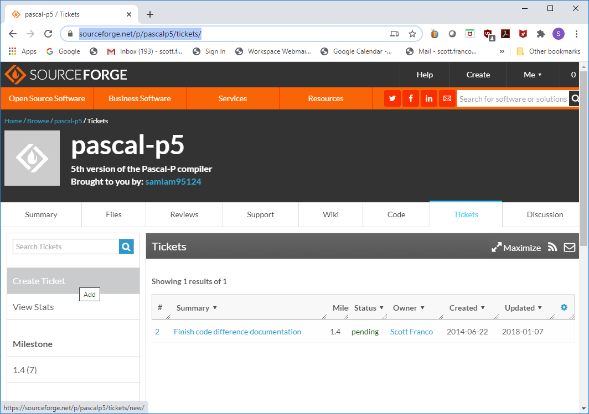
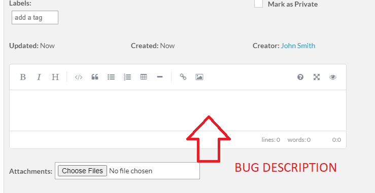

<!DOCTYPE html>
<html>
<head>
	<meta http-equiv="content-type" content="text/html; charset=utf-8"/>
	<title>IP Pascal User Manual</title>
	<meta name="generator" content="LibreOffice 7.4.2.3 (Linux)"/>
	<meta name="author" content="samiam"/>
	<meta name="created" content="2018-01-04T06:33:00"/>
	<meta name="changed" content="2022-11-25T17:06:20.048469071"/>
	<meta name="keywords" content="CTPClassification=CTP_NWR, VisualMarkings="/>
	<meta name="AppVersion" content="15.0000"/>
	<meta name="CTPClassification" content="CTP_NWR"/>
	<meta name="CTP_BU" content="NA"/>
	<meta name="CTP_IDSID" content="NA"/>
	<meta name="CTP_TimeStamp" content="2018-01-03 21:21:17Z"/>
	<meta name="CTP_WWID" content="NA"/>
	<meta name="TitusGUID" content="8b5b1f83-43c5-4280-bd47-4a7de513da32"/>
	<style type="text/css">
		p { color: #000000; line-height: 115%; text-align: left; orphans: 2; widows: 2; margin-bottom: 0.1in; direction: ltr; background: transparent }
		p.western { font-family: "Times New Roman", serif; font-size: 11pt; so-language: en-US }
		p.cjk { font-family: "Corbel"; font-size: 11pt; so-language: en-US }
		p.ctl { font-family: ; font-size: 11pt; so-language: ar-SA }
		h1 { color: #5ea226; line-height: 100%; text-align: left; page-break-inside: avoid; orphans: 2; widows: 2; margin-top: 0.33in; margin-bottom: 0.08in; direction: ltr; background: transparent; page-break-after: avoid }
		h1.western { font-family: "Arial", serif; font-size: 14pt; so-language: en-US; font-weight: bold }
		h1.cjk { font-family: ; font-size: 14pt; so-language: en-US; font-weight: bold }
		h1.ctl { font-family: ; font-size: 14pt; so-language: ar-SA; font-weight: bold }
		h2 { color: #7fd13b; line-height: 100%; text-align: left; page-break-inside: avoid; orphans: 2; widows: 2; margin-top: 0.08in; margin-bottom: 0.08in; direction: ltr; background: transparent; page-break-after: avoid }
		h2.western { font-family: "Arial", serif; font-size: 13pt; so-language: en-US; font-weight: bold }
		h2.cjk { font-family: ; font-size: 13pt; so-language: en-US; font-weight: bold }
		h2.ctl { font-family: ; font-size: 13pt; so-language: ar-SA; font-weight: bold }
		h3 { color: #7fd13b; line-height: 100%; text-align: left; page-break-inside: avoid; orphans: 2; widows: 2; margin-top: 0.08in; margin-bottom: 0.08in; direction: ltr; background: transparent; page-break-after: avoid }
		h3.western { font-family: "Arial", serif; font-size: 11pt; so-language: en-US; font-weight: bold }
		h3.cjk { font-family: ; font-size: 11pt; so-language: en-US; font-weight: bold }
		h3.ctl { font-family: ; font-size: 11pt; so-language: ar-SA; font-weight: bold }
		h4 { color: #7fd13b; line-height: 100%; text-align: left; page-break-inside: avoid; orphans: 2; widows: 2; margin-top: 0.14in; margin-bottom: 0in; direction: ltr; background: transparent; page-break-after: avoid }
		h4.western { font-family: "Arial", serif; font-size: 11pt; so-language: en-US; font-style: italic; font-weight: bold }
		h4.cjk { font-family: ; font-size: 11pt; so-language: en-US; font-style: italic; font-weight: bold }
		h4.ctl { font-family: ; font-size: 11pt; so-language: ar-SA; font-style: italic; font-weight: bold }
		h5 { color: #92d050; line-height: 100%; text-align: left; page-break-inside: avoid; orphans: 2; widows: 2; margin-top: 0.14in; margin-bottom: 0in; direction: ltr; background: transparent; page-break-after: avoid }
		h5.western { font-family: "Arial", serif; font-size: 11pt; so-language: en-US; font-style: italic; font-weight: bold }
		h5.cjk { font-family: ; font-size: 11pt; so-language: en-US; font-style: italic; font-weight: bold }
		h5.ctl { font-family: ; font-size: 11pt; so-language: ar-SA }
		p.sdfootnote-western { color: #000000; font-family: "Times New Roman", serif; font-size: 10pt; so-language: en-US; line-height: 100%; text-align: left; orphans: 2; widows: 2; margin-bottom: 0in; direction: ltr; background: transparent }
		p.sdfootnote-cjk { color: #000000; font-family: "Corbel"; font-size: 10pt; so-language: en-US; line-height: 100%; text-align: left; orphans: 2; widows: 2; margin-bottom: 0in; direction: ltr; background: transparent }
		p.sdfootnote-ctl { color: #000000; font-family: ; font-size: 10pt; so-language: ar-SA; line-height: 100%; text-align: left; orphans: 2; widows: 2; margin-bottom: 0in; direction: ltr; background: transparent }
		pre { color: #000000; line-height: 100%; text-align: left; orphans: 2; widows: 2; direction: ltr; background: transparent }
		pre.western { font-family: "Liberation Mono", serif; font-size: 10pt; so-language: en-US }
		pre.cjk { font-family: "Liberation Mono"; font-size: 10pt; so-language: en-US }
		pre.ctl { font-family: "Liberation Mono"; font-size: 10pt; so-language: ar-SA }
		a:link { color: #eb8803; text-decoration: underline }
		a:visited { color: #5f7791; text-decoration: underline }
		a.sdfootnoteanc { font-size: 57% }
	</style>
</head>
<body lang="en-US" text="#000000" link="#eb8803" vlink="#5f7791" dir="ltr" style="border: none; padding: 0in">
<div title="header">
	<table width="100%" cellpadding="7" cellspacing="0">
		<col width="218*"/>

		<col width="38*"/>

		<tr>
			<td width="85%" height="18" bgcolor="#00addc" style="background: #00addc; border: none; padding: 0in"><p align="right" style="orphans: 0; widows: 0">
				<span style="text-transform: uppercase"><font color="#ffffff"><font face="Arial, serif">Pascal
				implementation: the P5 compiler</font></font></span></p>
			</td>
			<td width="15%" bgcolor="#000000" style="background: #000000; border: none; padding: 0in"><p align="right" style="orphans: 0; widows: 0">
				<font color="#ffffff">August 29, 2014</font></p>
			</td>
		</tr>
	</table>
	<p style="line-height: 100%; margin-bottom: 0in"><br/>

	</p>
</div><p class="western" align="center" style="line-height: 100%; margin-bottom: 0.14in">
<br/>
<br/>

</p>
<p class="western" align="center" style="line-height: 100%; margin-bottom: 0.14in">
<br/>
<br/>

</p>
<p class="western" align="center" style="line-height: 100%; margin-bottom: 0.14in">
<br/>
<br/>

</p>
<p class="western" align="center" style="line-height: 100%; margin-bottom: 0.14in">
<br/>
<br/>

</p>
<p class="western" align="center" style="line-height: 100%; margin-bottom: 0.14in">
<br/>
<br/>

</p>
<p class="western" align="center" style="line-height: 100%; margin-bottom: 0.14in">
<br/>
<br/>

</p>
<p class="western" align="center" style="line-height: 100%; margin-bottom: 0.14in">
<br/>
<br/>

</p>
<p class="western" align="center" style="line-height: 100%; margin-bottom: 0.14in">
<font face="Arial Black, serif"><font size="5" style="font-size: 18pt">Pascal
implementation</font></font></p>
<p class="western" align="center" style="line-height: 100%; margin-bottom: 0.14in">
<font face="Arial Black, serif"><font size="5" style="font-size: 18pt">The
P5 Compiler</font></font></p>
<p class="western" align="center" style="line-height: 100%; margin-bottom: 0.14in">
<font face="Arial Black, serif"><font size="3" style="font-size: 12pt">Scott
A. Franco</font></font></p>
<p class="western" style="line-height: 115%; margin-bottom: 0.14in"><br/>
<br/>

</p>
<div id="Table of Contents1" dir="ltr"><p style="line-height: 100%; margin-top: 0.17in; margin-bottom: 0.17in; page-break-before: always">
	<a href="#__RefHeading___Toc60697_2515843999">1 Overview of
	Pascal-P5	8</a></p>
	<p style="line-height: 100%; margin-left: 0.15in; margin-bottom: 0in">
	<a href="#__RefHeading___Toc60699_2515843999">1.1 Introduction	8</a></p>
	<p style="line-height: 100%; margin-left: 0.15in; margin-bottom: 0in">
	<a href="#__RefHeading___Toc60701_2515843999">1.2 Why a P5
	compiler?	9</a></p>
	<p style="line-height: 100%; margin-left: 0.15in; margin-bottom: 0in">
	<a href="#__RefHeading___Toc60703_2515843999">1.3 The organization
	of the Pascal-P compiler	11</a></p>
	<p style="line-height: 100%; margin-left: 0.15in; margin-bottom: 0in">
	<a href="#__RefHeading___Toc60705_2515843999">1.4 Pascal-P5 as a
	practical compiler	12</a></p>
	<p style="line-height: 100%; margin-left: 0.15in; margin-bottom: 0in">
	<a href="#__RefHeading___Toc60707_2515843999">1.5 Pascal-P5 as a
	model compiler	12</a></p>
	<p style="line-height: 100%; margin-left: 0.15in; margin-bottom: 0in">
	<a href="#__RefHeading___Toc60709_2515843999">1.6 Moving on to
	Pascal-P6	13</a></p>
	<p style="line-height: 100%; margin-top: 0.17in; margin-bottom: 0.17in">
	<a href="#__RefHeading___Toc60711_2515843999">2 Using Pascal-P5	13</a></p>
	<p style="line-height: 100%; margin-left: 0.15in; margin-bottom: 0in">
	<a href="#__RefHeading___Toc60713_2515843999">2.1 Configuring
	Pascal-P5	13</a></p>
	<p style="line-height: 100%; margin-left: 0.15in; margin-bottom: 0in">
	<a href="#__RefHeading___Toc60715_2515843999">2.2 Compiling and
	running Pascal programs with Pascal-P5	14</a></p>
	<p style="line-height: 100%; margin-left: 0.15in; margin-bottom: 0in">
	<a href="#__RefHeading___Toc60717_2515843999">2.3 Compiler
	options	15</a></p>
	<p style="line-height: 100%; margin-left: 0.15in; margin-bottom: 0in">
	<a href="#__RefHeading___Toc60719_2515843999">2.4 Other
	operations	17</a></p>
	<p style="line-height: 100%; margin-left: 0.15in; margin-bottom: 0in">
	<a href="#__RefHeading___Toc60721_2515843999">2.5 Reliance on Unix
	commands in the Pascal-P5 toolset	18</a></p>
	<p style="line-height: 100%; margin-left: 0.15in; margin-bottom: 0in">
	<a href="#__RefHeading___Toc60723_2515843999">2.6 The “flip”
	command and line endings	18</a></p>
	<p style="line-height: 100%; margin-top: 0.17in; margin-bottom: 0.17in">
	<a href="#__RefHeading___Toc60725_2515843999">3 Building the
	Pascal-P5 system	18</a></p>
	<p style="line-height: 100%; margin-left: 0.15in; margin-bottom: 0in">
	<a href="#__RefHeading___Toc60727_2515843999">3.1 The preprocessor
	system	18</a></p>
	<p style="line-height: 100%; margin-left: 0.15in; margin-bottom: 0in">
	<a href="#__RefHeading___Toc60729_2515843999">3.2 Compiling and
	running Pascal-P5 with an existing ISO 7185 compiler	19</a></p>
	<p style="line-height: 100%; margin-left: 0.15in; margin-bottom: 0in">
	<a href="#__RefHeading___Toc60731_2515843999">3.3 Evaluating an
	existing Pascal compiler using Pascal-P5	20</a></p>
	<p style="line-height: 100%; margin-left: 0.15in; margin-bottom: 0in">
	<a href="#__RefHeading___Toc60733_2515843999">3.4 Notes on using
	existing compilers	21</a></p>
	<p style="line-height: 100%; margin-left: 0.31in; margin-bottom: 0in">
	<a href="#__RefHeading___Toc60735_2515843999">3.4.1 GPC	21</a></p>
	<p style="line-height: 100%; margin-left: 0.46in; margin-bottom: 0in">
	<a href="#__RefHeading___Toc60737_2515843999">3.4.1.1 GPC for mingw
	and windows	22</a></p>
	<p style="line-height: 100%; margin-left: 0.46in; margin-bottom: 0in">
	<a href="#__RefHeading___Toc60739_2515843999">3.4.1.2 GPC for
	Linux	23</a></p>
	<p style="line-height: 100%; margin-top: 0.17in; margin-bottom: 0.17in">
	<a href="#__RefHeading___Toc60741_2515843999">4 Files in the
	Pascal-P5 package	23</a></p>
	<p style="line-height: 100%; margin-left: 0.15in; margin-bottom: 0in">
	<a href="#__RefHeading___Toc60743_2515843999">4.1 Directory:
	basic	24</a></p>
	<p style="line-height: 100%; margin-left: 0.31in; margin-bottom: 0in">
	<a href="#__RefHeading___Toc60745_2515843999">4.1.1 Directory:
	basic/prog	24</a></p>
	<p style="line-height: 100%; margin-left: 0.15in; margin-bottom: 0in">
	<a href="#__RefHeading___Toc60747_2515843999">4.2 Directory: bin	24</a></p>
	<p style="line-height: 100%; margin-left: 0.15in; margin-bottom: 0in">
	<a href="#__RefHeading___Toc60749_2515843999">4.3 Directory:
	c_support	26</a></p>
	<p style="line-height: 100%; margin-left: 0.15in; margin-bottom: 0in">
	<a href="#__RefHeading___Toc60751_2515843999">4.4 Directory: doc	27</a></p>
	<p style="line-height: 100%; margin-left: 0.15in; margin-bottom: 0in">
	<a href="#__RefHeading___Toc60753_2515843999">4.5 Directory:
	mac_X86	27</a></p>
	<p style="line-height: 100%; margin-left: 0.15in; margin-bottom: 0in">
	<a href="#__RefHeading___Toc60755_2515843999">4.6 Directory: gpc	27</a></p>
	<p style="line-height: 100%; margin-left: 0.15in; margin-bottom: 0in">
	<a href="#__RefHeading___Toc60757_2515843999">4.7 Directory:
	gpc/linux_X86	27</a></p>
	<p style="line-height: 100%; margin-left: 0.15in; margin-bottom: 0in">
	<a href="#__RefHeading___Toc60759_2515843999">4.8 Directory:
	gpc/standard_tests	27</a></p>
	<p style="line-height: 100%; margin-left: 0.15in; margin-bottom: 0in">
	<a href="#__RefHeading___Toc60761_2515843999">4.9 Directory:
	gpc/windows_X86	27</a></p>
	<p style="line-height: 100%; margin-left: 0.15in; margin-bottom: 0in">
	<a href="#__RefHeading___Toc60763_2515843999">4.10 Directory:
	ip_pascal	27</a></p>
	<p style="line-height: 100%; margin-left: 0.15in; margin-bottom: 0in">
	<a href="#__RefHeading___Toc60765_2515843999">4.11 Directory:
	ip_pascal/standard_tests	28</a></p>
	<p style="line-height: 100%; margin-left: 0.15in; margin-bottom: 0in">
	<a href="#__RefHeading___Toc60767_2515843999">4.12 Directory:
	ip_pascal/windows_X86	28</a></p>
	<p style="line-height: 100%; margin-left: 0.15in; margin-bottom: 0in">
	<a href="#__RefHeading___Toc60769_2515843999">4.13 Subdirectory:
	sample_programs	28</a></p>
	<p style="line-height: 100%; margin-left: 0.15in; margin-bottom: 0in">
	<a href="#__RefHeading___Toc60771_2515843999">4.14 Directory:
	source	29</a></p>
	<p style="line-height: 100%; margin-left: 0.15in; margin-bottom: 0in">
	<a href="#__RefHeading___Toc60773_2515843999">4.15 Directory:
	standard_tests	29</a></p>
	<p style="line-height: 100%; margin-top: 0.17in; margin-bottom: 0.17in">
	<a href="#__RefHeading___Toc60775_2515843999">5 Differences between
	Pascal-P4 and Pascal-P5	29</a></p>
	<p style="line-height: 100%; margin-left: 0.15in; margin-bottom: 0in">
	<a href="#__RefHeading___Toc60777_2515843999">5.1 Viewing changes	30</a></p>
	<p style="line-height: 100%; margin-left: 0.15in; margin-bottom: 0in">
	<a href="#__RefHeading___Toc60779_2515843999">5.2 Notes about change
	descriptions	30</a></p>
	<p style="line-height: 100%; margin-left: 0.15in; margin-bottom: 0in">
	<a href="#__RefHeading___Toc60781_2515843999">5.3 Changes to the
	parser	30</a></p>
	<p style="line-height: 100%; margin-left: 0.31in; margin-bottom: 0in">
	<a href="#__RefHeading___Toc60783_2515843999">5.3.1 Thematic
	changes	30</a></p>
	<p style="line-height: 100%; margin-left: 0.46in; margin-bottom: 0in">
	<a href="#__RefHeading___Toc60785_2515843999">5.3.1.1 Variable
	strings	30</a></p>
	<p style="line-height: 100%; margin-left: 0.46in; margin-bottom: 0in">
	<a href="#__RefHeading___Toc60787_2515843999">5.3.1.2 Recycling
	based on dispose	31</a></p>
	<p style="line-height: 100%; margin-left: 0.46in; margin-bottom: 0in">
	<a href="#__RefHeading___Toc60789_2515843999">5.3.1.3 Files	31</a></p>
	<p style="line-height: 100%; margin-left: 0.46in; margin-bottom: 0in">
	<a href="#__RefHeading___Toc60791_2515843999">5.3.1.4 Byte oriented
	pseudo-machine	31</a></p>
	<p style="line-height: 100%; margin-left: 0.46in; margin-bottom: 0in">
	<a href="#__RefHeading___Toc60793_2515843999">5.3.1.5 Byte integer
	storage	32</a></p>
	<p style="line-height: 100%; margin-left: 0.46in; margin-bottom: 0in">
	<a href="#__RefHeading___Toc60795_2515843999">5.3.1.6 Redesign of
	the stack machine layout	32</a></p>
	<p style="line-height: 100%; margin-left: 0.31in; margin-bottom: 0in">
	<a href="#__RefHeading___Toc60797_2515843999">5.3.2 Reading the
	source code	32</a></p>
	<p style="line-height: 100%; margin-left: 0.46in; margin-bottom: 0in">
	<a href="#__RefHeading___Toc60799_2515843999">5.3.2.1 Preprocessor
	and preprocessor definitions	32</a></p>
	<p style="line-height: 100%; margin-left: 0.46in; margin-bottom: 0in">
	<a href="#__RefHeading___Toc60801_2515843999">5.3.2.2 Input file	33</a></p>
	<p style="line-height: 100%; margin-left: 0.46in; margin-bottom: 0in">
	<a href="#__RefHeading___Toc60803_2515843999">5.3.2.3 Exit label	33</a></p>
	<p style="line-height: 100%; margin-left: 0.46in; margin-bottom: 0in">
	<a href="#__RefHeading___Toc60805_2515843999">5.3.2.4 The machine
	parameter block	33</a></p>
	<p style="line-height: 100%; margin-left: 0.61in; margin-bottom: 0in">
	<a href="#__RefHeading___Toc60807_2515843999">5.3.2.4.1 Contents of
	the MPB	34</a></p>
	<p style="line-height: 100%; margin-left: 0.46in; margin-bottom: 0in">
	<a href="#__RefHeading___Toc60809_2515843999">5.3.2.5 Other
	constants	35</a></p>
	<p style="line-height: 100%; margin-left: 0.46in; margin-bottom: 0in">
	<a href="#__RefHeading___Toc60811_2515843999">5.3.2.6 Types	36</a></p>
	<p style="line-height: 100%; margin-left: 0.46in; margin-bottom: 0in">
	<a href="#__RefHeading___Toc60813_2515843999">5.3.2.7 Global
	Variables	39</a></p>
	<p style="line-height: 100%; margin-left: 0.46in; margin-bottom: 0in">
	<a href="#__RefHeading___Toc60815_2515843999">5.3.2.8 Procedures and
	functions	41</a></p>
	<p style="line-height: 100%; margin-left: 0.46in; margin-bottom: 0in">
	<a href="#__RefHeading___Toc60817_2515843999">5.3.2.9 Mark and
	release	44</a></p>
	<p style="line-height: 100%; margin-left: 0.46in; margin-bottom: 0in">
	<a href="#__RefHeading___Toc60819_2515843999">5.3.2.10 Type change
	routines	45</a></p>
	<p style="line-height: 100%; margin-left: 0.46in; margin-bottom: 0in">
	<a href="#__RefHeading___Toc60821_2515843999">5.3.2.11 Recycling
	support routines	45</a></p>
	<p style="line-height: 100%; margin-left: 0.61in; margin-bottom: 0in">
	<a href="#__RefHeading___Toc60823_2515843999">5.3.2.11.1 Procedure
	getstr	45</a></p>
	<p style="line-height: 100%; margin-left: 0.61in; margin-bottom: 0in">
	<a href="#__RefHeading___Toc60825_2515843999">5.3.2.11.2 Procedure
	putstrs	45</a></p>
	<p style="line-height: 100%; margin-left: 0.61in; margin-bottom: 0in">
	<a href="#__RefHeading___Toc60827_2515843999">5.3.2.11.3  procedure
	getlab	45</a></p>
	<p style="line-height: 100%; margin-left: 0.61in; margin-bottom: 0in">
	<a href="#__RefHeading___Toc60829_2515843999">5.3.2.11.4  procedure
	putlab	45</a></p>
	<p style="line-height: 100%; margin-left: 0.61in; margin-bottom: 0in">
	<a href="#__RefHeading___Toc60831_2515843999">5.3.2.11.5  procedure
	pshcst	45</a></p>
	<p style="line-height: 100%; margin-left: 0.61in; margin-bottom: 0in">
	<a href="#__RefHeading___Toc60833_2515843999">5.3.2.11.6  procedure
	putcst	45</a></p>
	<p style="line-height: 100%; margin-left: 0.61in; margin-bottom: 0in">
	<a href="#__RefHeading___Toc60835_2515843999">5.3.2.11.7  procedure
	pshstc	45</a></p>
	<p style="line-height: 100%; margin-left: 0.61in; margin-bottom: 0in">
	<a href="#__RefHeading___Toc60837_2515843999">5.3.2.11.8  procedure
	putstc	45</a></p>
	<p style="line-height: 100%; margin-left: 0.61in; margin-bottom: 0in">
	<a href="#__RefHeading___Toc60839_2515843999">5.3.2.11.9  procedure
	ininam	46</a></p>
	<p style="line-height: 100%; margin-left: 0.61in; margin-bottom: 0in">
	<a href="#__RefHeading___Toc60841_2515843999">5.3.2.11.10  procedure
	putnam	46</a></p>
	<p style="line-height: 100%; margin-left: 0.61in; margin-bottom: 0in">
	<a href="#__RefHeading___Toc60843_2515843999">5.3.2.11.11  procedure
	putnams	46</a></p>
	<p style="line-height: 100%; margin-left: 0.61in; margin-bottom: 0in">
	<a href="#__RefHeading___Toc60845_2515843999">5.3.2.11.12  procedure
	putdsp	46</a></p>
	<p style="line-height: 100%; margin-left: 0.61in; margin-bottom: 0in">
	<a href="#__RefHeading___Toc60847_2515843999">5.3.2.11.13  procedure
	putdsps	46</a></p>
	<p style="line-height: 100%; margin-left: 0.61in; margin-bottom: 0in">
	<a href="#__RefHeading___Toc60849_2515843999">5.3.2.11.14  procedure
	getfil	47</a></p>
	<p style="line-height: 100%; margin-left: 0.31in; margin-bottom: 0in">
	<a href="#__RefHeading___Toc60851_2515843999">5.3.3  procedure
	putfil	47</a></p>
	<p style="line-height: 100%; margin-left: 0.61in; margin-bottom: 0in">
	<a href="#__RefHeading___Toc60853_2515843999">5.3.3.1.1  procedure
	getcas	47</a></p>
	<p style="line-height: 100%; margin-left: 0.61in; margin-bottom: 0in">
	<a href="#__RefHeading___Toc60855_2515843999">5.3.3.1.2  procedure
	putcas	47</a></p>
	<p style="line-height: 100%; margin-left: 0.46in; margin-bottom: 0in">
	<a href="#__RefHeading___Toc60857_2515843999">5.3.3.2 Character and
	string quata routines	47</a></p>
	<p style="line-height: 100%; margin-left: 0.61in; margin-bottom: 0in">
	<a href="#__RefHeading___Toc60859_2515843999">5.3.3.2.1  function
	lcase	48</a></p>
	<p style="line-height: 100%; margin-left: 0.61in; margin-bottom: 0in">
	<a href="#__RefHeading___Toc60861_2515843999">5.3.3.2.2  function
	strequri	48</a></p>
	<p style="line-height: 100%; margin-left: 0.61in; margin-bottom: 0in">
	<a href="#__RefHeading___Toc60863_2515843999">5.3.3.2.3  procedure
	writev	48</a></p>
	<p style="line-height: 100%; margin-left: 0.61in; margin-bottom: 0in">
	<a href="#__RefHeading___Toc60865_2515843999">5.3.3.2.4  function
	lenpv	48</a></p>
	<p style="line-height: 100%; margin-left: 0.61in; margin-bottom: 0in">
	<a href="#__RefHeading___Toc60867_2515843999">5.3.3.2.5  procedure
	strassvf	48</a></p>
	<p style="line-height: 100%; margin-left: 0.61in; margin-bottom: 0in">
	<a href="#__RefHeading___Toc60869_2515843999">5.3.3.2.6  procedure
	strassvr	48</a></p>
	<p style="line-height: 100%; margin-left: 0.61in; margin-bottom: 0in">
	<a href="#__RefHeading___Toc60871_2515843999">5.3.3.2.7  procedure
	strassvd	48</a></p>
	<p style="line-height: 100%; margin-left: 0.61in; margin-bottom: 0in">
	<a href="#__RefHeading___Toc60873_2515843999">5.3.3.2.8  procedure
	strassvc	48</a></p>
	<p style="line-height: 100%; margin-left: 0.61in; margin-bottom: 0in">
	<a href="#__RefHeading___Toc60875_2515843999">5.3.3.2.9  procedure
	strassfv	49</a></p>
	<p style="line-height: 100%; margin-left: 0.61in; margin-bottom: 0in">
	<a href="#__RefHeading___Toc60877_2515843999">5.3.3.2.10  function
	strequvv	49</a></p>
	<p style="line-height: 100%; margin-left: 0.61in; margin-bottom: 0in">
	<a href="#__RefHeading___Toc60879_2515843999">5.3.3.2.11  function
	strltnvv	49</a></p>
	<p style="line-height: 100%; margin-left: 0.61in; margin-bottom: 0in">
	<a href="#__RefHeading___Toc60881_2515843999">5.3.3.2.12  function
	strequvf	49</a></p>
	<p style="line-height: 100%; margin-left: 0.61in; margin-bottom: 0in">
	<a href="#__RefHeading___Toc60883_2515843999">5.3.3.2.13  function
	strltnvf	49</a></p>
	<p style="line-height: 100%; margin-left: 0.61in; margin-bottom: 0in">
	<a href="#__RefHeading___Toc60885_2515843999">5.3.3.2.14 Function
	strchr	49</a></p>
	<p style="line-height: 100%; margin-left: 0.61in; margin-bottom: 0in">
	<a href="#__RefHeading___Toc60887_2515843999">5.3.3.2.15 Procedure
	strchrass	49</a></p>
	<p style="line-height: 100%; margin-left: 0.61in; margin-bottom: 0in">
	<a href="#__RefHeading___Toc60889_2515843999">5.3.3.2.16  procedure
	prtdsp	50</a></p>
	<p style="line-height: 100%; margin-left: 0.31in; margin-bottom: 0in">
	<a href="#__RefHeading___Toc60891_2515843999">5.3.4 Modifications	50</a></p>
	<p style="line-height: 100%; margin-left: 0.46in; margin-bottom: 0in">
	<a href="#__RefHeading___Toc60893_2515843999">5.3.4.1  procedure
	endofline	50</a></p>
	<p style="line-height: 100%; margin-left: 0.46in; margin-bottom: 0in">
	<a href="#__RefHeading___Toc60895_2515843999">5.3.4.2  procedure
	errmsg	50</a></p>
	<p style="line-height: 100%; margin-left: 0.46in; margin-bottom: 0in">
	<a href="#__RefHeading___Toc60897_2515843999">5.3.4.3  procedure
	error	50</a></p>
	<p style="line-height: 100%; margin-left: 0.46in; margin-bottom: 0in">
	<a href="#__RefHeading___Toc60899_2515843999">5.3.4.4  procedure
	insymbol	51</a></p>
	<p style="line-height: 100%; margin-left: 0.61in; margin-bottom: 0in">
	<a href="#__RefHeading___Toc60901_2515843999">5.3.4.4.1 Letter:
	identifiers and reserved words	51</a></p>
	<p style="line-height: 100%; margin-left: 0.61in; margin-bottom: 0in">
	<a href="#__RefHeading___Toc60903_2515843999">5.3.4.4.2 Number:
	integers and reals	51</a></p>
	<p style="line-height: 100%; margin-left: 0.61in; margin-bottom: 0in">
	<a href="#__RefHeading___Toc60905_2515843999">5.3.4.4.3 Chstrquo:
	Strings	52</a></p>
	<p style="line-height: 100%; margin-left: 0.61in; margin-bottom: 0in">
	<a href="#__RefHeading___Toc60907_2515843999">5.3.4.4.4 Chperiod:
	‘.’, ‘..’ and ‘.)’ tolkens	52</a></p>
	<p style="line-height: 100%; margin-left: 0.61in; margin-bottom: 0in">
	<a href="#__RefHeading___Toc60909_2515843999">5.3.4.4.5 Chlparen:
	‘(‘and comment start	52</a></p>
	<p style="line-height: 100%; margin-left: 0.61in; margin-bottom: 0in">
	<a href="#__RefHeading___Toc60911_2515843999">5.3.4.4.6 Chlcmt: ISO
	7185 comment start	52</a></p>
	<p style="line-height: 100%; margin-left: 0.61in; margin-bottom: 0in">
	<a href="#__RefHeading___Toc60913_2515843999">5.3.4.4.7 Lexical
	dump	53</a></p>
	<p style="line-height: 100%; margin-left: 0.46in; margin-bottom: 0in">
	<a href="#__RefHeading___Toc60915_2515843999">5.3.4.5  procedure
	enterid	53</a></p>
	<p style="line-height: 100%; margin-left: 0.46in; margin-bottom: 0in">
	<a href="#__RefHeading___Toc60917_2515843999">5.3.4.6  procedure
	searchsection	53</a></p>
	<p style="line-height: 100%; margin-left: 0.46in; margin-bottom: 0in">
	<a href="#__RefHeading___Toc60919_2515843999">5.3.4.7  procedure
	searchidnenm	53</a></p>
	<p style="line-height: 100%; margin-left: 0.46in; margin-bottom: 0in">
	<a href="#__RefHeading___Toc60921_2515843999">5.3.4.8  procedure
	searchidne	53</a></p>
	<p style="line-height: 100%; margin-left: 0.46in; margin-bottom: 0in">
	<a href="#__RefHeading___Toc60923_2515843999">5.3.4.9  procedure
	searchid	53</a></p>
	<p style="line-height: 100%; margin-left: 0.46in; margin-bottom: 0in">
	<a href="#__RefHeading___Toc60925_2515843999">5.3.4.10  procedure
	getbounds	53</a></p>
	<p style="line-height: 100%; margin-left: 0.46in; margin-bottom: 0in">
	<a href="#__RefHeading___Toc60927_2515843999">5.3.4.11  procedure
	isbyte	54</a></p>
	<p style="line-height: 100%; margin-left: 0.46in; margin-bottom: 0in">
	<a href="#__RefHeading___Toc60929_2515843999">5.3.4.12  procedure
	basetype	54</a></p>
	<p style="line-height: 100%; margin-left: 0.46in; margin-bottom: 0in">
	<a href="#__RefHeading___Toc60931_2515843999">5.3.4.13  procedure
	alignd	54</a></p>
	<p style="line-height: 100%; margin-left: 0.46in; margin-bottom: 0in">
	<a href="#__RefHeading___Toc60933_2515843999">5.3.4.14  procedure
	printtables	54</a></p>
	<p style="line-height: 100%; margin-left: 0.46in; margin-bottom: 0in">
	<a href="#__RefHeading___Toc60935_2515843999">5.3.4.15 procedure
	followstp	54</a></p>
	<p style="line-height: 100%; margin-left: 0.46in; margin-bottom: 0in">
	<a href="#__RefHeading___Toc60937_2515843999">5.3.4.16  procedure
	followctp	54</a></p>
	<p style="line-height: 100%; margin-left: 0.46in; margin-bottom: 0in">
	<a href="#__RefHeading___Toc60939_2515843999">5.3.4.17 procedure
	chkrefs	54</a></p>
	<p style="line-height: 100%; margin-left: 0.46in; margin-bottom: 0in">
	<a href="#__RefHeading___Toc60941_2515843999">5.3.4.18  procedure
	searchlabel	54</a></p>
	<p style="line-height: 100%; margin-left: 0.46in; margin-bottom: 0in">
	<a href="#__RefHeading___Toc60943_2515843999">5.3.4.19  procedure
	newlabel	54</a></p>
	<p style="line-height: 100%; margin-left: 0.46in; margin-bottom: 0in">
	<a href="#__RefHeading___Toc60945_2515843999">5.3.4.20  procedure
	prtlabels	54</a></p>
	<p style="line-height: 100%; margin-left: 0.46in; margin-bottom: 0in">
	<a href="#__RefHeading___Toc60947_2515843999">5.3.4.21  procedure
	block (header)	55</a></p>
	<p style="line-height: 100%; margin-left: 0.46in; margin-bottom: 0in">
	<a href="#__RefHeading___Toc60949_2515843999">5.3.4.22  procedure
	constant	55</a></p>
	<p style="line-height: 100%; margin-left: 0.46in; margin-bottom: 0in">
	<a href="#__RefHeading___Toc60951_2515843999">5.3.4.23 Function
	equalbounds	55</a></p>
	<p style="line-height: 100%; margin-left: 0.46in; margin-bottom: 0in">
	<a href="#__RefHeading___Toc60953_2515843999">5.3.4.24  function
	string (forward)	55</a></p>
	<p style="line-height: 100%; margin-left: 0.46in; margin-bottom: 0in">
	<a href="#__RefHeading___Toc60955_2515843999">5.3.4.25  function
	comptypes	56</a></p>
	<p style="line-height: 100%; margin-left: 0.46in; margin-bottom: 0in">
	<a href="#__RefHeading___Toc60957_2515843999">5.3.4.26  function
	filecomponent	57</a></p>
	<p style="line-height: 100%; margin-left: 0.46in; margin-bottom: 0in">
	<a href="#__RefHeading___Toc60959_2515843999">5.3.4.27  function
	string (body)	57</a></p>
	<p style="line-height: 100%; margin-left: 0.46in; margin-bottom: 0in">
	<a href="#__RefHeading___Toc60961_2515843999">5.3.4.28 Procedure
	resolvep	57</a></p>
	<p style="line-height: 100%; margin-left: 0.46in; margin-bottom: 0in">
	<a href="#__RefHeading___Toc60963_2515843999">5.3.4.29  procedure
	typ (header)	57</a></p>
	<p style="line-height: 100%; margin-left: 0.46in; margin-bottom: 0in">
	<a href="#__RefHeading___Toc60965_2515843999">5.3.4.30  procedure
	simpletype	57</a></p>
	<p style="line-height: 100%; margin-left: 0.46in; margin-bottom: 0in">
	<a href="#__RefHeading___Toc60967_2515843999">5.3.4.31  procedure
	fieldlist	58</a></p>
	<p style="line-height: 100%; margin-left: 0.46in; margin-bottom: 0in">
	<a href="#__RefHeading___Toc60969_2515843999">5.3.4.32  procedure
	typ (body)	60</a></p>
	<p style="line-height: 100%; margin-left: 0.46in; margin-bottom: 0in">
	<a href="#__RefHeading___Toc60971_2515843999">5.3.4.33  procedure
	labeldeclaration	61</a></p>
	<p style="line-height: 100%; margin-left: 0.46in; margin-bottom: 0in">
	<a href="#__RefHeading___Toc60973_2515843999">5.3.4.34  procedure
	constdeclaration	61</a></p>
	<p style="line-height: 100%; margin-left: 0.46in; margin-bottom: 0in">
	<a href="#__RefHeading___Toc60975_2515843999">5.3.4.35  procedure
	typedeclaration	61</a></p>
	<p style="line-height: 100%; margin-left: 0.46in; margin-bottom: 0in">
	<a href="#__RefHeading___Toc60977_2515843999">5.3.4.36  procedure
	vardeclaration	62</a></p>
	<p style="line-height: 100%; margin-left: 0.46in; margin-bottom: 0in">
	<a href="#__RefHeading___Toc60979_2515843999">5.3.4.37  procedure
	procdeclaration (header)	62</a></p>
	<p style="line-height: 100%; margin-left: 0.61in; margin-bottom: 0in">
	<a href="#__RefHeading___Toc60981_2515843999">5.3.4.37.1 Procedure
	pushlvl	62</a></p>
	<p style="line-height: 100%; margin-left: 0.61in; margin-bottom: 0in">
	<a href="#__RefHeading___Toc60983_2515843999">5.3.4.37.2  procedure
	parameterlist	62</a></p>
	<p style="line-height: 100%; margin-left: 0.46in; margin-bottom: 0in">
	<a href="#__RefHeading___Toc60985_2515843999">5.3.4.38  procedure
	procdeclaration (body)	63</a></p>
	<p style="line-height: 100%; margin-left: 0.46in; margin-bottom: 0in">
	<a href="#__RefHeading___Toc60987_2515843999">5.3.4.39  procedure
	body (header)	64</a></p>
	<p style="line-height: 100%; margin-left: 0.46in; margin-bottom: 0in">
	<a href="#__RefHeading___Toc60989_2515843999">5.3.4.40  procedure
	addlvl	64</a></p>
	<p style="line-height: 100%; margin-left: 0.46in; margin-bottom: 0in">
	<a href="#__RefHeading___Toc60991_2515843999">5.3.4.41  procedure
	sublvl	64</a></p>
	<p style="line-height: 100%; margin-left: 0.46in; margin-bottom: 0in">
	<a href="#__RefHeading___Toc60993_2515843999">5.3.4.42  procedure
	mesl	65</a></p>
	<p style="line-height: 100%; margin-left: 0.46in; margin-bottom: 0in">
	<a href="#__RefHeading___Toc60995_2515843999">5.3.4.43  procedure
	mes	65</a></p>
	<p style="line-height: 100%; margin-left: 0.46in; margin-bottom: 0in">
	<a href="#__RefHeading___Toc60997_2515843999">5.3.4.44  procedure
	mest (header)	65</a></p>
	<p style="line-height: 100%; margin-left: 0.46in; margin-bottom: 0in">
	<a href="#__RefHeading___Toc60999_2515843999">5.3.4.45  procedure
	mestn	65</a></p>
	<p style="line-height: 100%; margin-left: 0.46in; margin-bottom: 0in">
	<a href="#__RefHeading___Toc61001_2515843999">5.3.4.46  procedure
	mest (body)	66</a></p>
	<p style="line-height: 100%; margin-left: 0.46in; margin-bottom: 0in">
	<a href="#__RefHeading___Toc61003_2515843999">5.3.4.47  procedure
	putic	66</a></p>
	<p style="line-height: 100%; margin-left: 0.46in; margin-bottom: 0in">
	<a href="#__RefHeading___Toc61005_2515843999">5.3.4.48  procedure
	gen0	66</a></p>
	<p style="line-height: 100%; margin-left: 0.46in; margin-bottom: 0in">
	<a href="#__RefHeading___Toc61007_2515843999">5.3.4.49  procedure
	gen1	66</a></p>
	<p style="line-height: 100%; margin-left: 0.46in; margin-bottom: 0in">
	<a href="#__RefHeading___Toc61009_2515843999">5.3.4.50  procedure
	gen2	67</a></p>
	<p style="line-height: 100%; margin-left: 0.46in; margin-bottom: 0in">
	<a href="#__RefHeading___Toc61011_2515843999">5.3.4.51  procedure
	gentypindicator	67</a></p>
	<p style="line-height: 100%; margin-left: 0.46in; margin-bottom: 0in">
	<a href="#__RefHeading___Toc61013_2515843999">5.3.4.52  procedure
	gen0t	67</a></p>
	<p style="line-height: 100%; margin-left: 0.46in; margin-bottom: 0in">
	<a href="#__RefHeading___Toc61015_2515843999">5.3.4.53  procedure
	gen1t	67</a></p>
	<p style="line-height: 100%; margin-left: 0.46in; margin-bottom: 0in">
	<a href="#__RefHeading___Toc61017_2515843999">5.3.4.54  procedure
	gen2t	68</a></p>
	<p style="line-height: 100%; margin-left: 0.46in; margin-bottom: 0in">
	<a href="#__RefHeading___Toc61019_2515843999">5.3.4.55  procedure
	load	68</a></p>
	<p style="line-height: 100%; margin-left: 0.46in; margin-bottom: 0in">
	<a href="#__RefHeading___Toc61021_2515843999">5.3.4.56  procedure
	store	68</a></p>
	<p style="line-height: 100%; margin-left: 0.46in; margin-bottom: 0in">
	<a href="#__RefHeading___Toc61023_2515843999">5.3.4.57  procedure
	loadaddress	68</a></p>
	<p style="line-height: 100%; margin-left: 0.46in; margin-bottom: 0in">
	<a href="#__RefHeading___Toc61025_2515843999">5.3.4.58  procedure
	genfjp	68</a></p>
	<p style="line-height: 100%; margin-left: 0.46in; margin-bottom: 0in">
	<a href="#__RefHeading___Toc61027_2515843999">5.3.4.59  procedure
	genujpxjp	68</a></p>
	<p style="line-height: 100%; margin-left: 0.46in; margin-bottom: 0in">
	<a href="#__RefHeading___Toc61029_2515843999">5.3.4.60  procedure
	genipj	68</a></p>
	<p style="line-height: 100%; margin-left: 0.46in; margin-bottom: 0in">
	<a href="#__RefHeading___Toc61031_2515843999">5.3.4.61  procedure
	gencupent	68</a></p>
	<p style="line-height: 100%; margin-left: 0.46in; margin-bottom: 0in">
	<a href="#__RefHeading___Toc61033_2515843999">5.3.4.62  procedure
	genlpa	68</a></p>
	<p style="line-height: 100%; margin-left: 0.46in; margin-bottom: 0in">
	<a href="#__RefHeading___Toc61035_2515843999">5.3.4.63  procedure
	checkbnds	68</a></p>
	<p style="line-height: 100%; margin-left: 0.46in; margin-bottom: 0in">
	<a href="#__RefHeading___Toc61037_2515843999">5.3.4.64  procedure
	putlabel	68</a></p>
	<p style="line-height: 100%; margin-left: 0.46in; margin-bottom: 0in">
	<a href="#__RefHeading___Toc61039_2515843999">5.3.4.65  procedure
	statement (header)	68</a></p>
	<p style="line-height: 100%; margin-left: 0.46in; margin-bottom: 0in">
	<a href="#__RefHeading___Toc61041_2515843999">5.3.4.66  procedure
	expression (header)	69</a></p>
	<p style="line-height: 100%; margin-left: 0.46in; margin-bottom: 0in">
	<a href="#__RefHeading___Toc61043_2515843999">5.3.4.67  procedure
	selector (header)	69</a></p>
	<p style="line-height: 100%; margin-left: 0.46in; margin-bottom: 0in">
	<a href="#__RefHeading___Toc61045_2515843999">5.3.4.68  procedure
	schblk	69</a></p>
	<p style="line-height: 100%; margin-left: 0.46in; margin-bottom: 0in">
	<a href="#__RefHeading___Toc61047_2515843999">5.3.4.69  procedure
	checkvrnt	69</a></p>
	<p style="line-height: 100%; margin-left: 0.46in; margin-bottom: 0in">
	<a href="#__RefHeading___Toc61049_2515843999">5.3.4.70  procedure
	selector (body)	69</a></p>
	<p style="line-height: 100%; margin-left: 0.46in; margin-bottom: 0in">
	<a href="#__RefHeading___Toc61051_2515843999">5.3.4.71  procedure
	call	70</a></p>
	<p style="line-height: 100%; margin-left: 0.46in; margin-bottom: 0in">
	<a href="#__RefHeading___Toc61053_2515843999">5.3.4.72  procedure
	variable	70</a></p>
	<p style="line-height: 100%; margin-left: 0.46in; margin-bottom: 0in">
	<a href="#__RefHeading___Toc61055_2515843999">5.3.4.73  procedure
	getputresetrewriteprocedure	70</a></p>
	<p style="line-height: 100%; margin-left: 0.46in; margin-bottom: 0in">
	<a href="#__RefHeading___Toc61057_2515843999">5.3.4.74  procedure
	pageprocedure	70</a></p>
	<p style="line-height: 100%; margin-left: 0.46in; margin-bottom: 0in">
	<a href="#__RefHeading___Toc61059_2515843999">5.3.4.75  procedure
	readprocedure	70</a></p>
	<p style="line-height: 100%; margin-left: 0.46in; margin-bottom: 0in">
	<a href="#__RefHeading___Toc61061_2515843999">5.3.4.76  procedure
	writeprocedure	70</a></p>
	<p style="line-height: 100%; margin-left: 0.46in; margin-bottom: 0in">
	<a href="#__RefHeading___Toc61063_2515843999">5.3.4.77  procedure
	packprocedure	70</a></p>
	<p style="line-height: 100%; margin-left: 0.46in; margin-bottom: 0in">
	<a href="#__RefHeading___Toc61065_2515843999">5.3.4.78  procedure
	unpackprocedure	70</a></p>
	<p style="line-height: 100%; margin-left: 0.46in; margin-bottom: 0in">
	<a href="#__RefHeading___Toc61067_2515843999">5.3.4.79  procedure
	newdisposeprocedure	70</a></p>
	<p style="line-height: 100%; margin-left: 0.46in; margin-bottom: 0in">
	<a href="#__RefHeading___Toc61069_2515843999">5.3.4.80  procedure
	absfunction	70</a></p>
	<p style="line-height: 100%; margin-left: 0.46in; margin-bottom: 0in">
	<a href="#__RefHeading___Toc61071_2515843999">5.3.4.81  procedure
	sqrfunction	70</a></p>
	<p style="line-height: 100%; margin-left: 0.46in; margin-bottom: 0in">
	<a href="#__RefHeading___Toc61073_2515843999">5.3.4.82  procedure
	truncfunction	70</a></p>
	<p style="line-height: 100%; margin-left: 0.46in; margin-bottom: 0in">
	<a href="#__RefHeading___Toc61075_2515843999">5.3.4.83  procedure
	roundfunction	70</a></p>
	<p style="line-height: 100%; margin-left: 0.46in; margin-bottom: 0in">
	<a href="#__RefHeading___Toc61077_2515843999">5.3.4.84  procedure
	oddfunction	70</a></p>
	<p style="line-height: 100%; margin-left: 0.46in; margin-bottom: 0in">
	<a href="#__RefHeading___Toc61079_2515843999">5.3.4.85  procedure
	ordfunction	70</a></p>
	<p style="line-height: 100%; margin-left: 0.46in; margin-bottom: 0in">
	<a href="#__RefHeading___Toc61081_2515843999">5.3.4.86  procedure
	chrfunction	70</a></p>
	<p style="line-height: 100%; margin-left: 0.46in; margin-bottom: 0in">
	<a href="#__RefHeading___Toc61083_2515843999">5.3.4.87  procedure
	predsuccfunction	70</a></p>
	<p style="line-height: 100%; margin-left: 0.46in; margin-bottom: 0in">
	<a href="#__RefHeading___Toc61085_2515843999">5.3.4.88  procedure
	eofeolnfunction	70</a></p>
	<p style="line-height: 100%; margin-left: 0.46in; margin-bottom: 0in">
	<a href="#__RefHeading___Toc61087_2515843999">5.3.4.89  procedure
	callnonstandard	70</a></p>
	<p style="line-height: 100%; margin-left: 0.46in; margin-bottom: 0in">
	<a href="#__RefHeading___Toc61089_2515843999">5.3.4.90  procedure
	compparam	70</a></p>
	<p style="line-height: 100%; margin-left: 0.46in; margin-bottom: 0in">
	<a href="#__RefHeading___Toc61091_2515843999">5.3.4.91  procedure
	expression	70</a></p>
	<p style="line-height: 100%; margin-left: 0.46in; margin-bottom: 0in">
	<a href="#__RefHeading___Toc61093_2515843999">5.3.4.92  procedure
	simpleexpression	70</a></p>
	<p style="line-height: 100%; margin-left: 0.46in; margin-bottom: 0in">
	<a href="#__RefHeading___Toc61095_2515843999">5.3.4.93  procedure
	term	70</a></p>
	<p style="line-height: 100%; margin-left: 0.46in; margin-bottom: 0in">
	<a href="#__RefHeading___Toc61097_2515843999">5.3.4.94  procedure
	factor	70</a></p>
	<p style="line-height: 100%; margin-left: 0.46in; margin-bottom: 0in">
	<a href="#__RefHeading___Toc61099_2515843999">5.3.4.95  procedure
	assignment	70</a></p>
	<p style="line-height: 100%; margin-left: 0.46in; margin-bottom: 0in">
	<a href="#__RefHeading___Toc61101_2515843999">5.3.4.96  procedure
	gotostatement	70</a></p>
	<p style="line-height: 100%; margin-left: 0.46in; margin-bottom: 0in">
	<a href="#__RefHeading___Toc61103_2515843999">5.3.4.97  procedure
	compoundstatement	70</a></p>
	<p style="line-height: 100%; margin-left: 0.46in; margin-bottom: 0in">
	<a href="#__RefHeading___Toc61105_2515843999">5.3.4.98  procedure
	ifstatement	70</a></p>
	<p style="line-height: 100%; margin-left: 0.46in; margin-bottom: 0in">
	<a href="#__RefHeading___Toc61107_2515843999">5.3.4.99  procedure
	casestatement	71</a></p>
	<p style="line-height: 100%; margin-left: 0.46in; margin-bottom: 0in">
	<a href="#__RefHeading___Toc61109_2515843999">5.3.4.100  procedure
	repeatstatement	71</a></p>
	<p style="line-height: 100%; margin-left: 0.46in; margin-bottom: 0in">
	<a href="#__RefHeading___Toc61111_2515843999">5.3.4.101  procedure
	whilestatement	71</a></p>
	<p style="line-height: 100%; margin-left: 0.46in; margin-bottom: 0in">
	<a href="#__RefHeading___Toc61113_2515843999">5.3.4.102  procedure
	forstatement	71</a></p>
	<p style="line-height: 100%; margin-left: 0.46in; margin-bottom: 0in">
	<a href="#__RefHeading___Toc61115_2515843999">5.3.4.103  procedure
	withstatement	71</a></p>
	<p style="line-height: 100%; margin-left: 0.46in; margin-bottom: 0in">
	<a href="#__RefHeading___Toc61117_2515843999">5.3.4.104  procedure
	block (body)	71</a></p>
	<p style="line-height: 100%; margin-left: 0.46in; margin-bottom: 0in">
	<a href="#__RefHeading___Toc61119_2515843999">5.3.4.105  procedure
	programme	71</a></p>
	<p style="line-height: 100%; margin-left: 0.46in; margin-bottom: 0in">
	<a href="#__RefHeading___Toc61121_2515843999">5.3.4.106  procedure
	entstdnames	71</a></p>
	<p style="line-height: 100%; margin-left: 0.46in; margin-bottom: 0in">
	<a href="#__RefHeading___Toc61123_2515843999">5.3.4.107  procedure
	enterundecl	71</a></p>
	<p style="line-height: 100%; margin-left: 0.46in; margin-bottom: 0in">
	<a href="#__RefHeading___Toc61125_2515843999">5.3.4.108  procedure
	exitundecl	71</a></p>
	<p style="line-height: 100%; margin-left: 0.46in; margin-bottom: 0in">
	<a href="#__RefHeading___Toc61127_2515843999">5.3.4.109  procedure
	initscalars	71</a></p>
	<p style="line-height: 100%; margin-left: 0.46in; margin-bottom: 0in">
	<a href="#__RefHeading___Toc61129_2515843999">5.3.4.110  procedure
	initsets	71</a></p>
	<p style="line-height: 100%; margin-left: 0.46in; margin-bottom: 0in">
	<a href="#__RefHeading___Toc61131_2515843999">5.3.4.111  procedure
	inittables	71</a></p>
	<p style="line-height: 100%; margin-left: 0.46in; margin-bottom: 0in">
	<a href="#__RefHeading___Toc61133_2515843999">5.3.4.112  procedure
	reswords	71</a></p>
	<p style="line-height: 100%; margin-left: 0.46in; margin-bottom: 0in">
	<a href="#__RefHeading___Toc61135_2515843999">5.3.4.113  procedure
	symbols	71</a></p>
	<p style="line-height: 100%; margin-left: 0.46in; margin-bottom: 0in">
	<a href="#__RefHeading___Toc61137_2515843999">5.3.4.114  procedure
	rators	71</a></p>
	<p style="line-height: 100%; margin-left: 0.46in; margin-bottom: 0in">
	<a href="#__RefHeading___Toc61139_2515843999">5.3.4.115  procedure
	procmnemonics	71</a></p>
	<p style="line-height: 100%; margin-left: 0.46in; margin-bottom: 0in">
	<a href="#__RefHeading___Toc61141_2515843999">5.3.4.116  procedure
	instrmnemonics	71</a></p>
	<p style="line-height: 100%; margin-left: 0.46in; margin-bottom: 0in">
	<a href="#__RefHeading___Toc61143_2515843999">5.3.4.117  procedure
	chartypes	71</a></p>
	<p style="line-height: 100%; margin-left: 0.46in; margin-bottom: 0in">
	<a href="#__RefHeading___Toc61145_2515843999">5.3.4.118  procedure
	initdx	71</a></p>
	<p style="line-height: 100%; margin-top: 0.17in; margin-bottom: 0.17in">
	<a href="#__RefHeading___Toc61147_2515843999">6 Changes to the
	assembler/interpreter	71</a></p>
	<p style="line-height: 100%; margin-top: 0.17in; margin-bottom: 0.17in">
	<a href="#__RefHeading___Toc61149_2515843999">7 The intermediate
	language	71</a></p>
	<p style="line-height: 100%; margin-left: 0.15in; margin-bottom: 0in">
	<a href="#__RefHeading___Toc61151_2515843999">7.1 Format of
	intermediate	72</a></p>
	<p style="line-height: 100%; margin-left: 0.15in; margin-bottom: 0in">
	<a href="#__RefHeading___Toc61153_2515843999">7.2 Intermediate line
	format	72</a></p>
	<p style="line-height: 100%; margin-left: 0.31in; margin-bottom: 0in">
	<a href="#__RefHeading___Toc61155_2515843999">7.2.1 Comments	72</a></p>
	<p style="line-height: 100%; margin-left: 0.31in; margin-bottom: 0in">
	<a href="#__RefHeading___Toc15916_2478585429">7.2.2 Source lines	73</a></p>
	<p style="line-height: 100%; margin-left: 0.31in; margin-bottom: 0in">
	<a href="#__RefHeading___Toc15918_2478585429">7.2.3 Label	73</a></p>
	<p style="line-height: 100%; margin-left: 0.31in; margin-bottom: 0in">
	<a href="#__RefHeading___Toc61157_2515843999">7.2.4 End of
	section	73</a></p>
	<p style="line-height: 100%; margin-left: 0.31in; margin-bottom: 0in">
	<a href="#__RefHeading___Toc15920_2478585429">7.2.5 Source line
	marker	73</a></p>
	<p style="line-height: 100%; margin-left: 0.31in; margin-bottom: 0in">
	<a href="#__RefHeading___Toc61159_2515843999">7.2.6 Options	73</a></p>
	<p style="line-height: 100%; margin-left: 0.31in; margin-bottom: 0in">
	<a href="#__RefHeading___Toc61161_2515843999">7.2.7 Global size	73</a></p>
	<p style="line-height: 100%; margin-left: 0.31in; margin-bottom: 0in">
	<a href="#__RefHeading___Toc15932_2478585429">7.2.8 Logical variant
	table	74</a></p>
	<p style="line-height: 100%; margin-left: 0.31in; margin-bottom: 0in">
	<a href="#__RefHeading___Toc61163_2515843999">7.2.9 Source errors	74</a></p>
	<p style="line-height: 100%; margin-left: 0.15in; margin-bottom: 0in">
	<a href="#__RefHeading___Toc61165_2515843999">7.3 Intermediate
	instruction set	75</a></p>
	<p style="line-height: 100%; margin-left: 0.15in; margin-bottom: 0in">
	<a href="#__RefHeading___Toc61167_2515843999">7.4 System calls	92</a></p>
	<p style="line-height: 100%; margin-top: 0.17in; margin-bottom: 0.17in">
	<a href="#__RefHeading___Toc61169_2515843999">8 Testing Pascal-P5	99</a></p>
	<p style="line-height: 100%; margin-left: 0.15in; margin-bottom: 0in">
	<a href="#__RefHeading___Toc61171_2515843999">8.1 Running tests	100</a></p>
	<p style="line-height: 100%; margin-left: 0.31in; margin-bottom: 0in">
	<a href="#__RefHeading___Toc61173_2515843999">8.1.1 testprog	100</a></p>
	<p style="line-height: 100%; margin-left: 0.31in; margin-bottom: 0in">
	<a href="#__RefHeading___Toc61175_2515843999">8.1.2 Other tests	101</a></p>
	<p style="line-height: 100%; margin-left: 0.31in; margin-bottom: 0in">
	<a href="#__RefHeading___Toc61177_2515843999">8.1.3 Regression
	test	101</a></p>
	<p style="line-height: 100%; margin-left: 0.15in; margin-bottom: 0in">
	<a href="#__RefHeading___Toc61179_2515843999">8.2 Test types	101</a></p>
	<p style="line-height: 100%; margin-left: 0.15in; margin-bottom: 0in">
	<a href="#__RefHeading___Toc61181_2515843999">8.3 The Pascal
	acceptance test	101</a></p>
	<p style="line-height: 100%; margin-left: 0.15in; margin-bottom: 0in">
	<a href="#__RefHeading___Toc61183_2515843999">8.4 The Pascal
	rejection test	102</a></p>
	<p style="line-height: 100%; margin-left: 0.31in; margin-bottom: 0in">
	<a href="#__RefHeading___Toc61185_2515843999">8.4.1 List of
	tests	103</a></p>
	<p style="line-height: 100%; margin-left: 0.46in; margin-bottom: 0in">
	<a href="#__RefHeading___Toc61187_2515843999">8.4.1.1 Class 1:
	Syntatic errors	103</a></p>
	<p style="line-height: 100%; margin-left: 0.46in; margin-bottom: 0in">
	<a href="#__RefHeading___Toc61189_2515843999">8.4.1.2 Class 2:
	Semantic errors	109</a></p>
	<p style="line-height: 100%; margin-left: 0.46in; margin-bottom: 0in">
	<a href="#__RefHeading___Toc61191_2515843999">8.4.1.3 Class 3: User
	submitted tests/encountered failures	114</a></p>
	<p style="line-height: 100%; margin-left: 0.31in; margin-bottom: 0in">
	<a href="#__RefHeading___Toc61193_2515843999">8.4.2 Running the PRT
	and interpreting the results	114</a></p>
	<p style="line-height: 100%; margin-left: 0.46in; margin-bottom: 0in">
	<a href="#__RefHeading___Toc61195_2515843999">8.4.2.1 List of tests
	with no compile or runtime error.	114</a></p>
	<p style="line-height: 100%; margin-left: 0.46in; margin-bottom: 0in">
	<a href="#__RefHeading___Toc61197_2515843999">8.4.2.2 List of
	differences between compiler output and “gold” standard
	outputs.	114</a></p>
	<p style="line-height: 100%; margin-left: 0.46in; margin-bottom: 0in">
	<a href="#__RefHeading___Toc61199_2515843999">8.4.2.3 List of
	differences between runtime output and “gold” standard
	outputs.	115</a></p>
	<p style="line-height: 100%; margin-left: 0.46in; margin-bottom: 0in">
	<a href="#__RefHeading___Toc61201_2515843999">8.4.2.4 Collected
	compiler listings and runtime output of all tests.	115</a></p>
	<p style="line-height: 100%; margin-left: 0.31in; margin-bottom: 0in">
	<a href="#__RefHeading___Toc61203_2515843999">8.4.3 Overall
	interpretation of PRT results	115</a></p>
	<p style="line-height: 100%; margin-left: 0.15in; margin-bottom: 0in">
	<a href="#__RefHeading___Toc61205_2515843999">8.5 Sample program
	tests	115</a></p>
	<p style="line-height: 100%; margin-left: 0.15in; margin-bottom: 0in">
	<a href="#__RefHeading___Toc61207_2515843999">8.6 Previous Pascal-P
	versions test	116</a></p>
	<p style="line-height: 100%; margin-left: 0.31in; margin-bottom: 0in">
	<a href="#__RefHeading___Toc61209_2515843999">8.6.1 Compile and run
	Pascal-P2	116</a></p>
	<p style="line-height: 100%; margin-left: 0.31in; margin-bottom: 0in">
	<a href="#__RefHeading___Toc61211_2515843999">8.6.2 Compile and run
	Pascal-P4	116</a></p>
	<p style="line-height: 100%; margin-left: 0.15in; margin-bottom: 0in">
	<a href="#__RefHeading___Toc61213_2515843999">8.7 Self compile	117</a></p>
	<p style="line-height: 100%; margin-left: 0.31in; margin-bottom: 0in">
	<a href="#__RefHeading___Toc61215_2515843999">8.7.1 pcom	117</a></p>
	<p style="line-height: 100%; margin-left: 0.46in; margin-bottom: 0in">
	<a href="#__RefHeading___Toc61217_2515843999">8.7.1.1 Changes
	required	117</a></p>
	<p style="line-height: 100%; margin-left: 0.31in; margin-bottom: 0in">
	<a href="#__RefHeading___Toc61219_2515843999">8.7.2 pint	117</a></p>
	<p style="line-height: 100%; margin-top: 0.17in; margin-bottom: 0.17in">
	<a href="#__RefHeading___Toc61221_2515843999">9 Submtting bugs	119</a></p>
	<p style="line-height: 100%; margin-left: 0.15in; margin-bottom: 0in">
	<a href="#__RefHeading___Toc61223_2515843999">9.1 What constitutes a
	bug	122</a></p>
	<p style="line-height: 100%; margin-left: 0.15in; margin-bottom: 0in">
	<a href="#__RefHeading___Toc61225_2515843999">9.2 The bug
	demonstration program	123</a></p>
	<p style="line-height: 100%; margin-top: 0.17in; margin-bottom: 0.17in">
	<a href="#__RefHeading___Toc61227_2515843999">10 Licensing	124</a></p>
</div>
<p class="western" style="line-height: 115%; margin-bottom: 0.14in"><br/>
<br/>

</p>
<p class="western" style="line-height: 115%; margin-bottom: 0.14in"><br/>
<br/>

</p>
<h1 class="western" style="page-break-before: always">1Overview of
Pascal-P5</h1>
<p class="western" style="line-height: 100%; margin-bottom: 0.14in">This
section contains background material on Pascal-P5. If you want to get
started using Pascal-P5 now, skip to <span style="background: #c0c0c0">2</span>
“<span style="background: #c0c0c0">Using Pascal-P5</span>”</p>
<h2 class="western">1.1Introduction</h2>
<p class="western" style="line-height: 100%; margin-bottom: 0.14in">The
Pascal-P series compilers were the original proving compilers for the
language Pascal. Created in 1973, Pascal-P was part of a “porting
kit” designed to enable the quick implementation of a Pascal
language compiler on new machines. It was released by Niklaus Wirth’s
students at ETH in Zurich.</p>
<p class="western" style="line-height: 100%; margin-bottom: 0.14in">The
implementation and description of the language Pascal in terms of
itself and in terms of a “pseudo machine” were important factors
in the propagation of the language Pascal. From the early version of
Pascal-P came the CDC 6000 full compiler at Zurich, several
independent compilers including an IBM-360 compiler and a PDP-11
compiler, and the UCSD “byte code” interpreter.</p>
<p class="western" style="line-height: 100%; margin-bottom: 0.14in">The
original article for the Pascal-P compiler is at:</p>
<p class="western" style="line-height: 100%; margin-bottom: 0.14in"><font color="#eb8803"><u><a href="http://www.standardpascal.org/The_Pascal_P_Compiler_implementation_notes.pdf">http://www.standardpascal.org/The_Pascal_P_Compiler_implementation_notes.pdf</a></u></font></p>
<p class="western" style="line-height: 100%; margin-bottom: 0.14in">In
the name “Pascal-P” the “P” stood for “portable”, and
this was what Pascal-P was designed to do. It also stood for an
example and reference implementation of Pascal, although Wirth later
issued a paper, together with Tony Hoare for the “Axiomatic
definition of Pascal”, which was also aimed at exactly specifying
the semantics of Pascal.</p>
<p class="western" style="line-height: 100%; margin-bottom: 0.14in">As
the importance of Pascal-P grew, the authors adopted a version number
system and working methodology for the system. A new, cleaner and
more portable version of the system was created in 1974 with the name
Pascal-P2, and left the multiple early versions of the system as
termed Pascal-P1.</p>
<p class="western" style="line-height: 100%; margin-bottom: 0.14in">From
the Pascal-P2 revision of the compiler comes many of the original
Pascal compilers, including UCSD. In 1976, Wirth’s group made one
last series of improvements and termed the results Pascal-P3 and
Pascal-P4. Pascal-P3 was a redesigned compiler, but used the same
pseudo machine instruction set as Pascal-P2, and thus could be
bootstrapped from an existing Pascal-P2 implementation. Pascal-P4
featured a new pseudo instruction set, and thus was a fully
redesigned compiler.</p>
<table width="629" cellpadding="7" cellspacing="0">
	<col width="76"/>

	<col width="40"/>

	<col width="46"/>

	<col width="409"/>

	<tbody>
		<tr valign="top">
			<td width="76" bgcolor="#00addc" style="background: #00addc; border: 1.00pt solid #25d0ff; padding: 0in 0.08in"><p class="western" align="left" style="orphans: 0; widows: 0">
				<font color="#ffffff"><font size="2" style="font-size: 11pt"><span lang="en-US"><b>Version</b></span></font></font></p>
			</td>
			<td width="40" bgcolor="#00addc" style="background: #00addc; border: 1.00pt solid #25d0ff; padding: 0in 0.08in"><p class="western" align="left" style="orphans: 0; widows: 0">
				<font color="#ffffff"><font size="2" style="font-size: 11pt"><span lang="en-US"><b>Year</b></span></font></font></p>
			</td>
			<td width="46" bgcolor="#00addc" style="background: #00addc; border: 1.00pt solid #25d0ff; padding: 0in 0.08in"><p class="western" align="left" style="orphans: 0; widows: 0">
				<font color="#ffffff"><font size="2" style="font-size: 11pt"><span lang="en-US"><b>Exists</b></span></font></font></p>
			</td>
			<td width="409" bgcolor="#00addc" style="background: #00addc; border: 1.00pt solid #25d0ff; padding: 0in 0.08in"><p class="western" align="left" style="orphans: 0; widows: 0">
				<font color="#ffffff"><font size="2" style="font-size: 11pt"><span lang="en-US"><b>Comments</b></span></font></font></p>
			</td>
		</tr>
	</tbody>
	<tbody>
		<tr valign="top">
			<td width="76" bgcolor="#b7efff" style="background: #b7efff; border-top: none; border-bottom: none; border-left: 1.00pt solid #25d0ff; border-right: none; padding-top: 0in; padding-bottom: 0in; padding-left: 0.08in; padding-right: 0in"><p class="western" align="left" style="orphans: 0; widows: 0">
				<font size="2" style="font-size: 11pt"><span lang="en-US"><b>Pascal-P1</b></span></font></p>
			</td>
			<td width="40" bgcolor="#b7efff" style="background: #b7efff; border: none; padding: 0in"><p class="western" align="left" style="orphans: 0; widows: 0">
				<font size="2" style="font-size: 11pt"><span lang="en-US">1973</span></font></p>
			</td>
			<td width="46" bgcolor="#b7efff" style="background: #b7efff; border: none; padding: 0in"><p class="western" align="left" style="orphans: 0; widows: 0">
				<font size="2" style="font-size: 11pt"><span lang="en-US">No</span></font></p>
			</td>
			<td width="409" bgcolor="#b7efff" style="background: #b7efff; border-top: none; border-bottom: none; border-left: none; border-right: 1.00pt solid #25d0ff; padding-top: 0in; padding-bottom: 0in; padding-left: 0in; padding-right: 0.08in"><p class="western" align="left" style="orphans: 0; widows: 0">
				<font size="2" style="font-size: 11pt"><span lang="en-US">first
				version of Pascal-P compiler. Several different versions.</span></font></p>
			</td>
		</tr>
		<tr valign="top">
			<td width="76" style="border-top: none; border-bottom: none; border-left: 1.00pt solid #25d0ff; border-right: none; padding-top: 0in; padding-bottom: 0in; padding-left: 0.08in; padding-right: 0in"><p class="western" align="left" style="orphans: 0; widows: 0">
				<font size="2" style="font-size: 11pt"><span lang="en-US"><b>Pascal-P2</b></span></font></p>
			</td>
			<td width="40" style="border: none; padding: 0in"><p class="western" align="left" style="orphans: 0; widows: 0">
				<font size="2" style="font-size: 11pt"><span lang="en-US">1974</span></font></p>
			</td>
			<td width="46" style="border: none; padding: 0in"><p class="western" align="left" style="orphans: 0; widows: 0">
				<font size="2" style="font-size: 11pt"><span lang="en-US">Yes</span></font></p>
			</td>
			<td width="409" style="border-top: none; border-bottom: none; border-left: none; border-right: 1.00pt solid #25d0ff; padding-top: 0in; padding-bottom: 0in; padding-left: 0in; padding-right: 0.08in"><p class="western" align="left" style="orphans: 0; widows: 0">
				<font size="2" style="font-size: 11pt"><span lang="en-US">Unified
				version of Pascal-P.</span></font></p>
			</td>
		</tr>
		<tr valign="top">
			<td width="76" bgcolor="#b7efff" style="background: #b7efff; border-top: none; border-bottom: none; border-left: 1.00pt solid #25d0ff; border-right: none; padding-top: 0in; padding-bottom: 0in; padding-left: 0.08in; padding-right: 0in"><p class="western" align="left" style="orphans: 0; widows: 0">
				<font size="2" style="font-size: 11pt"><span lang="en-US"><b>Pascal-P3</b></span></font></p>
			</td>
			<td width="40" bgcolor="#b7efff" style="background: #b7efff; border: none; padding: 0in"><p class="western" align="left" style="orphans: 0; widows: 0">
				<font size="2" style="font-size: 11pt"><span lang="en-US">1976</span></font></p>
			</td>
			<td width="46" bgcolor="#b7efff" style="background: #b7efff; border: none; padding: 0in"><p class="western" align="left" style="orphans: 0; widows: 0">
				<font size="2" style="font-size: 11pt"><span lang="en-US">No</span></font></p>
			</td>
			<td width="409" bgcolor="#b7efff" style="background: #b7efff; border-top: none; border-bottom: none; border-left: none; border-right: 1.00pt solid #25d0ff; padding-top: 0in; padding-bottom: 0in; padding-left: 0in; padding-right: 0.08in"><p class="western" align="left" style="orphans: 0; widows: 0">
				<font size="2" style="font-size: 11pt"><span lang="en-US">New
				version Pascal-P backwards compatible with old Pascal-P2 pint.pas</span></font></p>
			</td>
		</tr>
		<tr valign="top">
			<td width="76" style="border-top: none; border-bottom: none; border-left: 1.00pt solid #25d0ff; border-right: none; padding-top: 0in; padding-bottom: 0in; padding-left: 0.08in; padding-right: 0in"><p class="western" align="left" style="orphans: 0; widows: 0">
				<font size="2" style="font-size: 11pt"><span lang="en-US"><b>Pascal-P4</b></span></font></p>
			</td>
			<td width="40" style="border: none; padding: 0in"><p class="western" align="left" style="orphans: 0; widows: 0">
				<font size="2" style="font-size: 11pt"><span lang="en-US">1976</span></font></p>
			</td>
			<td width="46" style="border: none; padding: 0in"><p class="western" align="left" style="orphans: 0; widows: 0">
				<font size="2" style="font-size: 11pt"><span lang="en-US">Yes</span></font></p>
			</td>
			<td width="409" style="border-top: none; border-bottom: none; border-left: none; border-right: 1.00pt solid #25d0ff; padding-top: 0in; padding-bottom: 0in; padding-left: 0in; padding-right: 0.08in"><p class="western" align="left" style="orphans: 0; widows: 0">
				<font size="2" style="font-size: 11pt"><span lang="en-US">New
				improved Pascal-P.</span></font></p>
			</td>
		</tr>
		<tr valign="top">
			<td width="76" bgcolor="#b7efff" style="background: #b7efff; border-top: none; border-bottom: none; border-left: 1.00pt solid #25d0ff; border-right: none; padding-top: 0in; padding-bottom: 0in; padding-left: 0.08in; padding-right: 0in"><p class="western" align="left" style="orphans: 0; widows: 0">
				<font size="2" style="font-size: 11pt"><span lang="en-US"><b>Pascal-P5</b></span></font></p>
			</td>
			<td width="40" bgcolor="#b7efff" style="background: #b7efff; border: none; padding: 0in"><p class="western" align="left" style="orphans: 0; widows: 0">
				<font size="2" style="font-size: 11pt"><span lang="en-US">2009</span></font></p>
			</td>
			<td width="46" bgcolor="#b7efff" style="background: #b7efff; border: none; padding: 0in"><p class="western" align="left" style="orphans: 0; widows: 0">
				<font size="2" style="font-size: 11pt"><span lang="en-US">Yes</span></font></p>
			</td>
			<td width="409" bgcolor="#b7efff" style="background: #b7efff; border-top: none; border-bottom: none; border-left: none; border-right: 1.00pt solid #25d0ff; padding-top: 0in; padding-bottom: 0in; padding-left: 0in; padding-right: 0.08in"><p class="western" align="left" style="orphans: 0; widows: 0">
				<font size="2" style="font-size: 11pt"><span lang="en-US">ISO
				7185 compliant Pascal-P.</span></font></p>
			</td>
		</tr>
		<tr valign="top">
			<td width="76" style="border-top: none; border-bottom: 1.00pt solid #25d0ff; border-left: 1.00pt solid #25d0ff; border-right: none; padding-top: 0in; padding-bottom: 0in; padding-left: 0.08in; padding-right: 0in"><p class="western" align="left" style="orphans: 0; widows: 0">
				<font size="2" style="font-size: 11pt"><span lang="en-US"><b>Pascal-P6</b></span></font></p>
			</td>
			<td width="40" style="border-top: none; border-bottom: 1.00pt solid #25d0ff; border-left: none; border-right: none; padding: 0in"><p class="western" align="left" style="orphans: 0; widows: 0">
				<font size="2" style="font-size: 11pt"><span lang="en-US">2020</span></font></p>
			</td>
			<td width="46" style="border-top: none; border-bottom: 1.00pt solid #25d0ff; border-left: none; border-right: none; padding: 0in"><p class="western" align="left" style="orphans: 0; widows: 0">
				<font size="2" style="font-size: 11pt"><span lang="en-US">Yes</span></font></p>
			</td>
			<td width="409" style="border-top: none; border-bottom: 1.00pt solid #25d0ff; border-left: none; border-right: 1.00pt solid #25d0ff; padding-top: 0in; padding-bottom: 0in; padding-left: 0in; padding-right: 0.08in"><p class="western" align="left" style="orphans: 0; widows: 0">
				<font size="2" style="font-size: 11pt"><span lang="en-US">Extended
				version of Pascal-P (Pascaline).</span></font></p>
			</td>
		</tr>
	</tbody>
</table>
<p class="western" style="line-height: 100%; margin-bottom: 0.14in"><br/>
<br/>

</p>
<p class="western" style="line-height: 100%; margin-bottom: 0.14in">Pascal-P
was always an incomplete implementation of the Pascal language (a
subset), and was designed to be so. After it was created, the ISO
7185 standard for Pascal was issued, and today Pascal-P4 exists and
is still usable with minor changes to bring it into ISO 7185
compliance (as a Pascal source, not in the language it compiles).</p>
<p class="western" style="line-height: 100%; margin-bottom: 0.14in">Pascal-P4
has it’s legacy problem of being a subset compiler of the full
language. Further, it is only usable for programs that avoid its
weaknesses, such as string storage. Keep in mind that Pascal-P was
never designed to be a general purpose system, but rather to compile
itself on a new machine – and then rapidly be improved to become a
full compiler.</p>
<p class="western" style="line-height: 100%; margin-bottom: 0.14in">Thus
in 2008 I set out to improve the Pascal-P4 code to accept the full
language Pascal as stated by the ISO 7185 language standard. The name
of the result was obvious: Pascal-P5<a class="sdfootnoteanc" name="sdfootnote1anc" href="#sdfootnote1sym"><sup>1</sup></a>.</p>
<p class="western" style="line-height: 100%; margin-bottom: 0.14in">And
so, 35 years after the original Pascal-P compiler was created, a new
version of the series exists.</p>
<p class="western" style="line-height: 100%; margin-bottom: 0.14in">The
Pascal-P compiler series (and it’s companion Pascal-S) have been
extensively documented in the literature. The book “Pascal
implementation: The P4 compiler” by Steve Pemberton and Martin
Daniels stands out as a running code commentary on the level of
“lion’s commentary on Unix”. It is just that good. It is also
available free on line at: 
</p>
<p class="western" style="line-height: 100%; margin-bottom: 0.14in"><font color="#eb8803"><u><a href="http://homepages.cwi.nl/~steven/pascal/book/">http://homepages.cwi.nl/~steven/pascal/book/</a></u></font>.</p>
<p class="western" style="line-height: 100%; margin-bottom: 0.14in">Accordingly,
for the Pascal-P5 document, I have not attempted to recapitulate the
entire Pascal-P4 part of the compiler in this document. I see this
document as an incremental explaination of the improvements to
Pascal-P4 needed to arrive at Pascal-P5. I could not have completed
the Pascal-P5 project without Steve’s work. It was Steve’s book
that convinced me that Pascal-P4 was worth preservation and
modernization.</p>
<h2 class="western">1.2Why a P5 compiler?</h2>
<p class="western" style="line-height: 100%; margin-bottom: 0.14in">It
actually makes more sense to ask “why a Pascal-P4 compiler” than
“why a Pascal-P5 compiler”. Pascal-P4 was not a full Pascal at
all, but rather a subsetted version of the language with several
features removed. The omissions and changes were (from the Pascal-P4
web page at <font color="#eb8803"><u><a href="http://www.standardpascal.com/p4.html">http://www.standardpascal.com/p4.html</a></u></font>):</p>
<ul>
	<li><p class="western" style="line-height: 100%; margin-top: 0.19in; margin-bottom: 0in">
	<font color="#000000"><font size="4" style="font-size: 13pt">Procedure/function
	parameters.</font></font></p>
	<li><p class="western" style="line-height: 100%; margin-bottom: 0in">
	<font color="#000000"><font size="4" style="font-size: 13pt">Interprocedural
	gotos (goto must terminate in the same procedure/function).</font></font></p>
	<li><p class="western" style="line-height: 100%; margin-bottom: 0in">
	<font color="#000000"><font size="4" style="font-size: 13pt">Only
	files of type &quot;text&quot; can be used, and then only the ones
	that are predefined by </font></font>Pascal-<font color="#000000"><font size="4" style="font-size: 13pt">P4,
	which are &quot;input&quot;, &quot;output&quot;, and two special
	files defined so that </font></font>Pascal-<font color="#000000"><font size="4" style="font-size: 13pt">P4
	can compile itself.</font></font></p>
	<li><p class="western" style="line-height: 100%; margin-bottom: 0in">
	<font color="#000000"><font size="4" style="font-size: 13pt">&quot;mark&quot;
	and &quot;release&quot; instead of &quot;dispose&quot;.</font></font></p>
	<li><p class="western" style="line-height: 100%; margin-bottom: 0in">
	<font color="#000000"><font size="4" style="font-size: 13pt">Curly
	bracket comments {} are not implemented.</font></font></p>
	<li><p class="western" style="line-height: 100%; margin-bottom: 0in">
	<font color="#000000"><font size="4" style="font-size: 13pt">The
	predeclared identifiers maxint, text, round, page, dispose, and the
	functions they represent, are not present.</font></font></p>
	<li><p class="western" style="line-height: 100%; margin-bottom: 0in">
	<font color="#000000"><font size="4" style="font-size: 13pt">The
	procedures reset, rewrite, pack and unpack&nbsp;are not implemented
	(they are recognized as valid predefined procedures, but give an
	'unimplemented'&nbsp;error on use).</font></font></p>
	<li><p class="western" style="line-height: 100%; margin-bottom: 0in">
	<font color="#000000"><font size="4" style="font-size: 13pt">Undiscriminated
	variant records.</font></font></p>
	<li><p class="western" style="line-height: 100%; margin-bottom: 0in">
	<font color="#000000"><font size="4" style="font-size: 13pt">Output
	of boolean types.</font></font></p>
	<li><p class="western" style="line-height: 100%; margin-bottom: 0in">
	<font color="#000000"><font size="4" style="font-size: 13pt">Output
	of reals in &quot;fixed&quot; format.</font></font></p>
	<li><p class="western" style="line-height: 100%; margin-bottom: 0.19in">
	<font color="#000000"><font size="4" style="font-size: 13pt">Set
	constructors using subranges ('0'..'9').</font></font></p>
</ul>
<p class="western" style="line-height: 100%; margin-bottom: 0.14in">There
were several other issues with the Pascal-P4 compiler beyond simply
the language it implemented. Pascal-P4 made no attempt to economize
on its storage of strings. This meant that each string constant, no
matter how long it was, would be stored in a fixed length in the
pseudo-machine code. Although the internal string length in the
interpreter was a settable constant, an implementor using Pascal-P4
would always be operating between the mutually exclusive goals of
having enough string characters to represent usable strings and
having the total string storage use too much space.</p>
<p class="western" style="line-height: 100%; margin-bottom: 0.14in">Every
variable in the Pascal-P4 interpreter is given the same space. A
character or a boolean used the same space as a floating point value,
and an array of characters would be as costly as an array of floating
point numbers.</p>
<p class="western" style="line-height: 100%; margin-bottom: 0.14in">Pascal-P4
itself got around these limitations by using strings and string
constants sparingly. This goes to the idea that Pascal-P4 (and the
Pascal-P series) was primarily designed to compile itself, and was
never designed as a real, working compiler.</p>
<p class="western" style="line-height: 100%; margin-bottom: 0.14in">When
Kenneth Bowles received Pascal-P2 and wanted to use it as an
interpreter in and of itself, not as just a stepping stone to a
native compiler, his team extensively reworked it to use a byte
orientation, and implemented string storage efficiency.</p>
<p class="western" style="line-height: 100%; margin-bottom: 0.14in">The
exact reasons why Pascal-P4 is as it is, of course, belong to it’s
original authors. It is fair to say that Pascal-P was designed to be
a lightweight porting kit for Pascal. The two main concerns were:</p>
<ul>
	<li><p style="line-height: 100%; margin-bottom: 0.14in">Limiting the
	required memory for the run of the self compilation.</p>
	<li><p style="line-height: 100%; margin-bottom: 0.14in">Limiting the
	complexity of the self compilation.</p>
</ul>
<p class="western" style="line-height: 100%; margin-bottom: 0.14in">For
the first, obviously the Zurich crew was not particularly limited by
memory. The CDC 6000 series computers they had access to were state
of the art for their day, and after Pascal-P was produced, they
extended it to a full native compiler for the CDC 6000 (see
<font color="#eb8803"><u><a href="http://www.standardpascal.com/CDC6000pascal.html">http://www.standardpascal.com/CDC6000pascal.html</a></u></font>).
This implies that a full language version of Pascal-P4 could have
been completed. They may have wished to lessen the load on other
implementers of the language outside of Zurich.</p>
<p class="western" style="line-height: 100%; margin-bottom: 0.14in">The
second reason is far more concrete. Even a complex program such as a
compiler may not use the entire language, simply because the need did
not arise. It was, and is, standard practice to implement a subset of
a full language for the first compiler version and improve it later.</p>
<p class="western" style="line-height: 100%; margin-bottom: 0.14in">Finally,
it is important to understand that the designers of Pascal-P never
intended it to be used as a implementation for it’s own sake. A
Pascal implementation that simulated, not executed, its output code
was interesting to Wirth, but that resulted in the Pascal-S project,
a one piece compiler/interpreter program that has also been said to
have originated with the Pascal-P project (although you will find
little in common between the source code for the two).</p>
<p class="western" style="line-height: 100%; margin-bottom: 0.14in">Thus,
it would never have occurred to the original designers to make
Pascal-P an efficient and full implementation of Pascal. It was
simply a bridge to better things.</p>
<p class="western" style="line-height: 100%; margin-bottom: 0.14in">There
is certainly less reason to keep Pascal-P as a language subset
compiler today. Computers are drowning in memory, and virtual memory
operating systems are the rule, not the exception. Further, there are
several advantages to having even a compiler porting kit such as P4
process the full language:</p>
<ul>
	<li><p style="line-height: 100%; margin-bottom: 0.14in">To serve as
	an example implementation of the language.</p>
	<li><p style="line-height: 100%; margin-bottom: 0.14in">To reduce
	the total work needed to convert a bootstrapped Pascal-P to the full
	language.</p>
	<li><p style="line-height: 100%; margin-bottom: 0.14in">To serve as
	a full language stand-alone interpreter.</p>
</ul>
<p class="western" style="line-height: 100%; margin-bottom: 0.14in">Accordingly,
such a compiler was created, the “Model implementation of Standard
Pascal” [Welsh and Hay] with the advent of the ISO 7185 standard in
1982. This is a very good and complete implementation of Pascal which
I can recommend reading. However, it has two significant drawbacks to
it’s use:</p>
<ul>
	<li><p style="line-height: 100%; margin-bottom: 0.14in">It was never
	freely distributed, and the rights to it were closely held.</p>
	<li><p style="line-height: 100%; margin-bottom: 0.14in">It had
	nothing in common with the Pascal-P project.</p>
</ul>
<p class="western" style="line-height: 100%; margin-bottom: 0.14in">Because
or in spite of this, the “model implementation” is virtually
unobtainable and unknown today. It can only be found in it’s
increasingly rare book form.</p>
<p class="western" style="line-height: 100%; margin-bottom: 0.14in">The
advantages of having a new version of Pascal-P4 that both processes
the full language, and also embodies an efficient interpreter in its
own right are:</p>
<ul>
	<li><p style="line-height: 100%; margin-bottom: 0.14in; page-break-after: avoid">
	It is a fairly reasonable increment in complexity of the original
	code.</p>
	<li><p style="line-height: 100%; margin-bottom: 0.14in; page-break-after: avoid">
	It starts from an existing and well understood code base.</p>
	<li><p style="line-height: 100%; margin-bottom: 0.14in">The main
	part of it is already well documented.</p>
</ul>
<p class="western" style="line-height: 100%; margin-bottom: 0.14in">The
number of lines in the source for Pascal-P4 vs. Pascal-P5 bear this
out:</p>
<table width="629" cellpadding="7" cellspacing="0">
	<col width="196"/>

	<col width="196"/>

	<col width="196"/>

	<tbody>
		<tr valign="top">
			<td width="196" bgcolor="#feb80a" style="background: #feb80a; border-top: 2.25pt solid #000000; border-bottom: 2.25pt solid #000000; border-left: none; border-right: none; padding: 0in"><p class="western" align="left" style="orphans: 0; widows: 0; page-break-after: avoid">
				<br/>

				</p>
			</td>
			<td width="196" bgcolor="#feb80a" style="background: #feb80a; border-top: 2.25pt solid #000000; border-bottom: 2.25pt solid #000000; border-left: none; border-right: none; padding: 0in"><p class="western" align="left" style="orphans: 0; widows: 0; page-break-after: avoid">
				<font color="#ffffff"><font size="2" style="font-size: 11pt"><span lang="en-US"><b>P4</b></span></font></font></p>
			</td>
			<td width="196" bgcolor="#feb80a" style="background: #feb80a; border-top: 2.25pt solid #000000; border-bottom: 2.25pt solid #000000; border-left: none; border-right: none; padding: 0in"><p class="western" align="left" style="orphans: 0; widows: 0; page-break-after: avoid">
				<font color="#ffffff"><font size="2" style="font-size: 11pt"><span lang="en-US"><b>P5</b></span></font></font></p>
			</td>
		</tr>
		<tr></tr>
		<tr></tr>
	</tbody>
	<tbody>
		<tr valign="top">
			<td width="196" bgcolor="#feb80a" style="background: #feb80a; border-top: none; border-bottom: 2.25pt solid #000000; border-left: none; border-right: none; padding: 0in"><p class="western" align="left" style="orphans: 0; widows: 0; page-break-after: avoid">
				<font color="#ffffff"><font size="2" style="font-size: 11pt"><span lang="en-US"><b>pcom.pas</b></span></font></font></p>
			</td>
			<td width="196" bgcolor="#d8d8d8" style="background: #d8d8d8; border: none; padding: 0in"><p class="western" align="left" style="orphans: 0; widows: 0; page-break-after: avoid">
				<font size="2" style="font-size: 11pt"><span lang="en-US">4119</span></font></p>
			</td>
			<td width="196" bgcolor="#d8d8d8" style="background: #d8d8d8; border: none; padding: 0in"><p class="western" align="left" style="orphans: 0; widows: 0; page-break-after: avoid">
				<font size="2" style="font-size: 11pt"><span lang="en-US">6626</span></font></p>
			</td>
		</tr>
		<tr valign="top">
			<td width="196" bgcolor="#feb80a" style="background: #feb80a; border-top: none; border-bottom: 2.25pt solid #000000; border-left: none; border-right: none; padding: 0in"><p class="western" align="left" style="orphans: 0; widows: 0; page-break-after: avoid">
				<font color="#ffffff"><font size="2" style="font-size: 11pt"><span lang="en-US"><b>pint.pas</b></span></font></font></p>
			</td>
			<td width="196" style="border-top: none; border-bottom: 2.25pt solid #000000; border-left: none; border-right: none; padding: 0in"><p class="western" align="left" style="orphans: 0; widows: 0; page-break-after: avoid">
				<font size="2" style="font-size: 11pt"><span lang="en-US">1099</span></font></p>
			</td>
			<td width="196" style="border-top: none; border-bottom: 2.25pt solid #000000; border-left: none; border-right: none; padding: 0in"><p class="western" align="left" style="orphans: 0; widows: 0; page-break-after: avoid">
				<font size="2" style="font-size: 11pt"><span lang="en-US">3181</span></font></p>
			</td>
		</tr>
	</tbody>
</table>
<p class="western" style="line-height: 100%; margin-bottom: 0.14in"><br/>
<br/>

</p>
<p class="western" style="line-height: 100%; margin-bottom: 0.14in">177
of the increased line count for the compiler front end, pcom.pas, are
due to the error message printing routine that could be removed
without ill effect (arriving at the same, numeric only error messages
as the original Pascal-P4).</p>
<p class="western" style="line-height: 100%; margin-bottom: 0.14in">The
most radical changes were done in the interpreter, but this still
remains a low percentage of the total, since the interpreter is not
where the majority of the code in was in Pascal-P.</p>
<p class="western" style="line-height: 100%; margin-bottom: 0.14in">I
have tried to stay within the original style of the code, although at
times more than one style is evident in the source (due to the
multiple original authors). I have, for example, refrained from
reformatting or extensively adding comments to the code.</p>
<p class="western" style="line-height: 100%; margin-bottom: 0.14in">I
admit this was difficult. I don’t care for the “compressed”
nature of the formatting, nor the general lack of comments. For
Pascal style, I both prefer and recommend the style of Henry Ledgard
in “Pascal with style: Programming Proverbs”. I note that Niklaus
Wirth’s general style is to present the comments separately from
the program code, and thus having this document cover the additions
required to the code suits me.</p>
<p class="western" style="line-height: 100%; margin-bottom: 0.14in">Many
people give me suggestions for features to add to Pascal-P5, which I
think is great, and certainly you can do that for yourself, as many
have. It is true that Pascal-P5 is not really appropriate for a full
implementation on a target processor. Indeed all of the practical
implementations of the Pascal-P family have included extensions.</p>
<h2 class="western">1.3The organization of the Pascal-P compiler</h2>
<p class="western" style="line-height: 100%; margin-bottom: 0.14in">Pascal-P
does not feature a machine independent front end. The sizes and
characteristics of machine level objects in the interpreter also
appear in the front end. The front end uses these sizes to form the
layout of things such as local block frames, parameter lists and
records.</p>
<p class="western" style="line-height: 100%; margin-bottom: 0.14in">This
is one reason that Pascal-P has been criticized for being a less than
ideal basis on which to build a full, machine independent compiler
system. If the front end were to be fully machine independent, it
would mean a great deal of change to the whole compiler system, and
the intermediate would certainly change, since it is currently stated
in machine dependent form, using fixed offsets and other machine
dependent embedded numbers.</p>
<p class="western" style="line-height: 100%; margin-bottom: 0.14in">In
practice, it is not much trouble to create a set of front and back
end modules for any machine. The machine dependent figures are
isolated to equates in the top of the program, and these simply need
to be changed in both compiler and interpreter equally.</p>
<h2 class="western">1.4Pascal-P5 as a practical compiler</h2>
<p class="western" style="line-height: 100%; margin-bottom: 0.14in">Is
Pascal-P5 a useable compiler for real applications? I would assert
that it is not. The reason is the way it processes files. All of the
files it uses must be declared specifically via the program header.
For Pascal-P5 to process files from a user program, it must map these
files into header files defined by Pascal-P5 itself.</p>
<p class="western" style="line-height: 100%; margin-bottom: 0.14in">The
most obvious files for any program are the <font face="Arial, serif"><b>input</b></font>
and <font face="Arial, serif"><b>output</b></font> files. Even though
Pascal-P5 itself uses these files, both to input the target program,
and to output listings and error messages,these are useable by the
target program simply because they are separated positionally in the
output.</p>
<p class="western" style="line-height: 100%; margin-bottom: 0.14in">Pascal-P5
defines two more files, <font face="Arial, serif"><b>prd</b></font>
and <font face="Arial, serif"><b>prr</b></font>. These files are used
for reading only and writing only, respectively. Pascal-P5 uses <font face="Arial, serif"><b>prd</b></font>
to input and output the program code for the target. Although these
files can be used by the target, again, the input and output is mixed
with Pascal-P5’s use of the files, and must be done positionally.
In fact, this is the technique used to accomplish a self compile and
run, where the target program is the Pascal-P5 system itself.</p>
<p class="western" style="line-height: 100%; margin-bottom: 0.14in">Pascal-P5
could map the header files to arbitrary files, but this would have to
be done by non-standard code, since there is no method specified in
either the original (J&amp;W) standard, nor in ISO 7185, of mapping
header files to external files. It is left as “implementation
specific”.</p>
<p class="western" style="line-height: 100%; margin-bottom: 0.14in">All
of this matches the original purpose of Pascal-P5, which was simply
to serve as a compiler porting platform. It also serves as a
demonstration compiler. To make it a practical compiler, it would
have to be extended, at least to operate on runtime specified files.
The CDC 6000 compiler is effectively a Pascal-P compiler that was
extended to be a practical use compiler.</p>
<p class="western" style="line-height: 100%; margin-bottom: 0.14in">The
other way to achieve a practical use Pascal-P5 would be to specify
implementation specific characteristics in it, such as external file
connections. This would involve creating a Pascal-P5 that is no
longer strictly ISO 7185, since it would need to specify how the
external file connections are done. 
</p>
<p class="western" style="line-height: 100%; margin-bottom: 0.14in">I
do think this is valuable. However, I also believe that instead of
adding extentions valid for only one implementation of Pascal, it
makes more sense to organize the extentions as a whole. This is what
the Pascal-P6 project is about, so this work is deferred to
Pascal-P6.</p>
<h2 class="western">1.5Pascal-P5 as a model compiler</h2>
<p class="western" style="line-height: 100%; margin-bottom: 0.14in">The
definition of a model compiler is as an example of how to carry out
the actual execution of of the language pascal. Unfortunately, this
is one area where the “model implementation of Pascal”
[Welsh&amp;Hay] is ahead of Pascal-P5. The problem is that most of
the I/O formatting is simply passed on to the underlying compiler,
meaning that things like the exact format of input numbers, and the
exact format produced by output of numbers, is left to whatever the
implementation that Pascal-P5 is run on does.</p>
<p class="western" style="line-height: 100%; margin-bottom: 0.14in">The
way to get around this is to be fairly pedantic about processing
input and output, for example reading and parsing a complete input
number, with sign, even if the underlying implementation is capable
of doing that.</p>
<p class="western" style="line-height: 100%; margin-bottom: 0.14in">This
wasn’t done in Pascal-P5, probally to keep the compiler/interpreter
simple. It should be done to enhance the Pascal-P implementation’s
status as a model compiler. Although it can be done as an enhanced
version of Pascal-P5.</p>
<h2 class="western">1.6Moving on to Pascal-P6</h2>
<p class="western" style="line-height: 100%; margin-bottom: 0.14in">Pascal-P6
was designed to be completely compatible with Pascal-P5. It will take
any source code that Pascal-P5 will, and the source code for
Pascal-P6 will compile under Pascal-P5. The capabilities of the P6
compiler/interpreter are considerably greater, and you may want to
consider using that system instead. The major reason for staying with
the Pascal-P5 is that it is oriented only to the ISO 7185 Pascal
language, and thus is a smaller compiler.</p>
<p class="western" style="line-height: 100%; margin-bottom: 0.14in">Pascal-P6
will directly compile programs from Pascal-P5 without any options
given that:</p>
<ul>
	<li><p style="line-height: 100%; margin-bottom: 0.14in">None of the
	new Pascaline keywords are used.</p>
	<li><p style="line-height: 100%; margin-bottom: 0.14in">Any use of
	the character ‘\’ in strings are doubled (‘\\’) due to
	character escape support in Pascaline.</p>
</ul>
<p class="western" style="line-height: 100%; margin-bottom: 0.14in">Alternately,
the ISO 7185 standard option can be used with the program (s+).</p>
<p class="western" style="line-height: 100%; margin-bottom: 0.14in">For
more information see the Pascal-P6 documentation.</p>
<h1 class="western">2Using Pascal-P5</h1>
<h2 class="western">2.1Configuring Pascal-P5</h2>
<p class="western" style="line-height: 100%; margin-bottom: 0.14in">Pascal-P5
has a simple configuration script to set up the binary, script files
and compiler in use for the system, that uses the proper defaults for
your system<a class="sdfootnoteanc" name="sdfootnote2anc" href="#sdfootnote2sym"><sup>2</sup></a>:</p>
<p class="western" style="line-height: 100%; margin-bottom: 0.14in">[Windows]</p>
<p style="line-height: 100%; margin-bottom: 0in"><font face="Courier New, serif">&gt;
setpath</font></p>
<p style="line-height: 100%; margin-bottom: 0in"><font face="Courier New, serif">&gt;
configure</font></p>
<p style="line-height: 100%; margin-bottom: 0in"><font face="Courier New, serif">&gt;
make</font></p>
<p style="line-height: 100%; margin-bottom: 0in"><br/>

</p>
<p class="western" style="line-height: 100%; margin-bottom: 0.14in">[Linux/Mac]</p>
<p style="line-height: 100%; margin-bottom: 0in"><font face="Courier New, serif">$
./setpath</font></p>
<p style="line-height: 100%; margin-bottom: 0in"><font face="Courier New, serif">$
./configure</font></p>
<p style="line-height: 100%; margin-bottom: 0in"><font face="Courier New, serif">$
make</font></p>
<p style="line-height: 100%; margin-bottom: 0in"><br/>

</p>
<p class="western" style="line-height: 100%; margin-bottom: 0.14in">You
can avoid “setpath” by placing the ./bin directory on your path.</p>
<p class="western" style="line-height: 100%; margin-bottom: 0.14in">The
configure script attempts to automatically determine the environment
you are running under, choose the correct compiler, bit width of your
computer, etc. You can override this by using the options for
configure:</p>
<table width="629" cellpadding="7" cellspacing="0">
	<col width="300"/>

	<col width="300"/>

	<tbody>
		<tr valign="top">
			<td width="300" bgcolor="#feb80a" style="background: #feb80a; border-top: 2.25pt solid #000000; border-bottom: 2.25pt solid #000000; border-left: none; border-right: none; padding: 0in"><p class="western" align="left" style="orphans: 0; widows: 0">
				<font color="#ffffff"><font size="2" style="font-size: 11pt"><span lang="en-US"><b>Option</b></span></font></font></p>
			</td>
			<td width="300" bgcolor="#feb80a" style="background: #feb80a; border-top: 2.25pt solid #000000; border-bottom: 2.25pt solid #000000; border-left: none; border-right: none; padding: 0in"><p class="western" align="left" style="orphans: 0; widows: 0">
				<font color="#ffffff"><font size="2" style="font-size: 11pt"><span lang="en-US"><b>Meaning</b></span></font></font></p>
			</td>
		</tr>
		<tr></tr>
		<tr></tr>
	</tbody>
	<tbody>
		<tr valign="top">
			<td width="300" bgcolor="#feb80a" style="background: #feb80a; border-top: none; border-bottom: 2.25pt solid #000000; border-left: none; border-right: none; padding: 0in"><p class="western" align="left" style="orphans: 0; widows: 0">
				<font color="#ffffff"><font size="2" style="font-size: 11pt"><span lang="en-US"><b>--gpc</b></span></font></font></p>
			</td>
			<td width="300" bgcolor="#d8d8d8" style="background: #d8d8d8; border: none; padding: 0in"><p class="western" align="left" style="orphans: 0; widows: 0">
				<font size="2" style="font-size: 11pt"><span lang="en-US">Selects
				the GPC compiler.</span></font></p>
			</td>
		</tr>
		<tr valign="top">
			<td width="300" bgcolor="#feb80a" style="background: #feb80a; border-top: none; border-bottom: 2.25pt solid #000000; border-left: none; border-right: none; padding: 0in"><p class="western" align="left" style="orphans: 0; widows: 0">
				<font color="#ffffff"><font size="2" style="font-size: 11pt"><span lang="en-US"><b>--ip_pascal</b></span></font></font></p>
			</td>
			<td width="300" style="border: none; padding: 0in"><p class="western" align="left" style="orphans: 0; widows: 0">
				<font size="2" style="font-size: 11pt"><span lang="en-US">Selects
				the IP Pascal compiler.</span></font></p>
			</td>
		</tr>
		<tr valign="top">
			<td width="300" bgcolor="#feb80a" style="background: #feb80a; border-top: none; border-bottom: 2.25pt solid #000000; border-left: none; border-right: none; padding: 0in"><p class="western" align="left" style="orphans: 0; widows: 0">
				<font color="#ffffff"><font size="2" style="font-size: 11pt"><span lang="en-US"><b>--32</b></span></font></font></p>
			</td>
			<td width="300" bgcolor="#d8d8d8" style="background: #d8d8d8; border: none; padding: 0in"><p class="western" align="left" style="orphans: 0; widows: 0">
				<font size="2" style="font-size: 11pt"><span lang="en-US">Selects
				32 bit mode.</span></font></p>
			</td>
		</tr>
		<tr valign="top">
			<td width="300" bgcolor="#feb80a" style="background: #feb80a; border-top: none; border-bottom: 2.25pt solid #000000; border-left: none; border-right: none; padding: 0in"><p class="western" align="left" style="orphans: 0; widows: 0">
				<font color="#ffffff"><font size="2" style="font-size: 11pt"><span lang="en-US"><b>--64</b></span></font></font></p>
			</td>
			<td width="300" style="border: none; padding: 0in"><p class="western" align="left" style="orphans: 0; widows: 0">
				<font size="2" style="font-size: 11pt"><span lang="en-US">Selects
				64 bit mode.</span></font></p>
			</td>
		</tr>
		<tr valign="top">
			<td width="300" bgcolor="#feb80a" style="background: #feb80a; border-top: none; border-bottom: 2.25pt solid #000000; border-left: none; border-right: none; padding: 0in"><p class="western" align="left" style="orphans: 0; widows: 0">
				<font color="#ffffff"><font size="2" style="font-size: 11pt"><span lang="en-US"><b>--help</b></span></font></font></p>
			</td>
			<td width="300" bgcolor="#d8d8d8" style="background: #d8d8d8; border-top: none; border-bottom: 2.25pt solid #000000; border-left: none; border-right: none; padding: 0in"><p class="western" align="left" style="orphans: 0; widows: 0">
				<font size="2" style="font-size: 11pt"><span lang="en-US">Prints
				a help menu.</span></font></p>
			</td>
		</tr>
	</tbody>
</table>
<p class="western" style="line-height: 100%; margin-bottom: 0.14in"><br/>
<br/>

</p>
<p class="western" style="line-height: 100%; margin-bottom: 0.14in">The
configure script will take the preconfigured versions of the
Pascal-P5 binaries, the script files and other files and install them
for the specified compiler. The Pascal-P5 system is configured by
default for GPC Pascal running on windows, and can be left as such if
desired.</p>
<p class="western" style="line-height: 100%; margin-bottom: 0.14in">Note
that if you have more than one acceptable compiler resident, the
configure script will choose the first one found in the order IP
Pascal, then GPC Pascal.</p>
<h2 class="western">2.2Compiling and running Pascal programs with
Pascal-P5</h2>
<p class="western" style="line-height: 100%; margin-bottom: 0.14in">To
simply compile a run a program, use the Pascal-P5 batch file:</p>
<p style="line-height: 100%; margin-bottom: 0in"><font face="Courier New, serif">C:\&gt;
p5 hello</font></p>
<p style="line-height: 100%; margin-bottom: 0in"><br/>

</p>
<p class="western" style="line-height: 100%; margin-bottom: 0.14in">When
a pascal program is run this way, it gets it's input from the
terminal (you), and prints its results there. The p5 script
accommodates the compiler that was used to build the system, and
therefore you don’t need to know the exact command format of the
executable.</p>
<p class="western" style="line-height: 100%; margin-bottom: 0.14in">The
rules for ISO 7185 Pascal are simple, and you can find a complete
overview of the language in the file:</p>
<p style="line-height: 100%; margin-bottom: 0in"><font face="Courier New, serif">iso7185rules.html</font></p>
<p style="line-height: 100%; margin-bottom: 0in"><br/>

</p>
<p class="western" style="line-height: 100%; margin-bottom: 0.14in">In
the ./doc directory.</p>
<p class="western" style="line-height: 100%; margin-bottom: 0.14in">You
will find the complete standard for the language in the files:</p>
<p style="line-height: 100%; margin-bottom: 0in"><font face="Courier New, serif">iso7185.html	html
format</font></p>
<p style="line-height: 100%; margin-bottom: 0in"><font face="Courier New, serif">iso7185.pdf	pdf
format</font></p>
<p style="line-height: 100%; margin-bottom: 0in"><br/>

</p>
<p class="western" style="line-height: 100%; margin-bottom: 0.14in">In
the ./doc directory.</p>
<p class="western" style="line-height: 100%; margin-bottom: 0.14in">If
you were expecting Pascal-P5 to look like UCSD Pascal or Borland
Pascal, please note you took a wrong turn somewhere. Pascal-P5 is the
original Pascal language. The &quot;Pascal&quot; languages processed
by UCSD and Borland were heavily modified, and very incompatible
variants that that were brought out years after the original.</p>
<p class="western" style="line-height: 100%; margin-bottom: 0.14in">All
files in Pascal-P5 are anonymous (as in “no filename”), and only
last the length of the program run. The exceptions to this are the
<font face="Arial, serif"><b>prd</b></font> and <font face="Arial, serif"><b>prr</b></font>
files, which are used by the Pascal-P5 compiler to compile and run
itself. You can use them, but you really have to know what you are
doing. If you need to read from a file or write to a file use
redirection:</p>
<p style="line-height: 100%; margin-bottom: 0in"><font face="Courier New, serif">C:\&gt;
p5 test &lt; myinputfile &gt; myoutputfile</font></p>
<p style="line-height: 100%; margin-bottom: 0in"><br/>

</p>
<p class="western" style="line-height: 100%; margin-bottom: 0.14in">You
will find you can get a lot of tasks done this way.</p>
<p class="western" style="line-height: 100%; margin-bottom: 0.14in">Note:
</p>
<p class="western" style="line-height: 100%; margin-bottom: 0.14in">Pascal-P5,
as was Pascal-P4, was designed to be a Pascal compiler porting tool
and model implementation <i><b>first</b></i>, and not really as a
practical day to day compiler. If you want a compiler/interpreter for
that use, you want the Pascal-P6 compiler, which contains things like
file access extentions and a lot more.</p>
<h2 class="western">2.3Compiler options</h2>
<p class="western" style="line-height: 100%; margin-bottom: 0.14in">Pascal-P5
uses a &quot;compiler comment&quot; to indicate options to the
compiler, of the form:</p>
<p class="western" style="line-height: 100%; margin-bottom: 0.14in">(*$option+/-,...*)</p>
<p class="western" style="line-height: 100%; margin-bottom: 0.14in">This
option can appear anywhere a normal comment can. The first character
of the comment MUST be &quot;$&quot;. This is followed by any number
if option switches separated by &quot;,&quot;. If the option end with
&quot;+&quot;, it means to turn it on. If the option ends with &quot;-&quot;,
it means turn it off.</p>
<p class="western" style="line-height: 100%; margin-bottom: 0.14in">Example:</p>
<p class="western" style="line-height: 100%; margin-bottom: 0.14in">(*$l-*)</p>
<p class="western" style="line-height: 100%; margin-bottom: 0.14in">Turns
the listing of the source code OFF.</p>
<p class="western" style="line-height: 100%; margin-bottom: 0.14in">The
following options are available:</p>
<table width="629" cellpadding="7" cellspacing="0" bgcolor="#b7efff" style="background: #b7efff">
	<col width="195"/>

	<col width="196"/>

	<col width="195"/>

	<tr valign="top">
		<td width="195" bgcolor="#00addc" style="background: #00addc; border-top: 1.00pt solid #ffffff; border-bottom: 3.00pt solid #ffffff; border-left: 1.00pt solid #ffffff; border-right: 1.00pt solid #ffffff; padding: 0in 0.08in"><p class="western" align="left" style="page-break-inside: avoid; orphans: 0; widows: 0; page-break-after: avoid">
			<font color="#ffffff"><font size="2" style="font-size: 11pt"><span lang="en-US"><span style="font-style: normal"><b>Option</b></span></span></font></font></p>
		</td>
		<td width="196" bgcolor="#00addc" style="background: #00addc; border-top: 1.00pt solid #ffffff; border-bottom: 3.00pt solid #ffffff; border-left: 1.00pt solid #ffffff; border-right: 1.00pt solid #ffffff; padding: 0in 0.08in"><p class="western" align="left" style="page-break-inside: avoid; orphans: 0; widows: 0; page-break-after: avoid">
			<font color="#ffffff"><font size="2" style="font-size: 11pt"><span lang="en-US"><span style="font-style: normal"><b>Meaning</b></span></span></font></font></p>
		</td>
		<td width="195" bgcolor="#00addc" style="background: #00addc; border-top: 1.00pt solid #ffffff; border-bottom: 3.00pt solid #ffffff; border-left: 1.00pt solid #ffffff; border-right: 1.00pt solid #ffffff; padding: 0in 0.08in"><p class="western" align="left" style="page-break-inside: avoid; orphans: 0; widows: 0; page-break-after: avoid">
			<font color="#ffffff"><font size="2" style="font-size: 11pt"><span lang="en-US"><span style="font-style: normal"><b>Default</b></span></span></font></font></p>
		</td>
	</tr>
	<tr valign="top">
		<td width="195" bgcolor="#00addc" style="background: #00addc; border-top: 1.00pt solid #ffffff; border-bottom: 1.00pt solid #ffffff; border-left: 1.00pt solid #ffffff; border-right: 3.00pt solid #ffffff; padding: 0in 0.08in"><p class="western" align="left" style="page-break-inside: avoid; orphans: 0; widows: 0; page-break-after: avoid">
			<font color="#ffffff"><font size="2" style="font-size: 11pt"><span lang="en-US"><span style="font-style: normal"><b>t+/-</b></span></span></font></font></p>
		</td>
		<td width="196" bgcolor="#6edfff" style="background: #6edfff; border: 1.00pt solid #ffffff; padding: 0in 0.08in"><p class="western" align="left" style="page-break-inside: avoid; orphans: 0; widows: 0; page-break-after: avoid">
			<font size="2" style="font-size: 11pt"><span lang="en-US">Print/don't
			print internal tables after each routine is compiled.</span></font></p>
		</td>
		<td width="195" bgcolor="#6edfff" style="background: #6edfff; border: 1.00pt solid #ffffff; padding: 0in 0.08in"><p class="western" align="left" style="page-break-inside: avoid; orphans: 0; widows: 0; page-break-after: avoid">
			<font size="2" style="font-size: 11pt"><span lang="en-US">OFF</span></font></p>
		</td>
	</tr>
	<tr valign="top">
		<td width="195" bgcolor="#00addc" style="background: #00addc; border-top: none; border-bottom: none; border-left: 1.00pt solid #ffffff; border-right: 3.00pt solid #ffffff; padding: 0in 0.08in"><p class="western" align="left" style="page-break-inside: avoid; orphans: 0; widows: 0; page-break-after: avoid">
			<font color="#ffffff"><font size="2" style="font-size: 11pt"><span lang="en-US"><span style="font-style: normal"><b>l+/-</b></span></span></font></font></p>
		</td>
		<td width="196" bgcolor="#b7efff" style="background: #b7efff; border: 1px solid #ffffff; padding: 0in 0.08in"><p class="western" align="left" style="page-break-inside: avoid; orphans: 0; widows: 0; page-break-after: avoid">
			<font size="2" style="font-size: 11pt"><span lang="en-US">List/don't
			list the source program during compilation.</span></font></p>
		</td>
		<td width="195" bgcolor="#b7efff" style="background: #b7efff; border-top: 1px solid #ffffff; border-bottom: 1px solid #ffffff; border-left: 1px solid #ffffff; border-right: 1.00pt solid #ffffff; padding: 0in 0.08in"><p class="western" align="left" style="page-break-inside: avoid; orphans: 0; widows: 0; page-break-after: avoid">
			<font size="2" style="font-size: 11pt"><span lang="en-US">ON</span></font></p>
		</td>
	</tr>
	<tr valign="top">
		<td width="195" bgcolor="#00addc" style="background: #00addc; border-top: 1.00pt solid #ffffff; border-bottom: 1.00pt solid #ffffff; border-left: 1.00pt solid #ffffff; border-right: 3.00pt solid #ffffff; padding: 0in 0.08in"><p class="western" align="left" style="page-break-inside: avoid; orphans: 0; widows: 0; page-break-after: avoid">
			<font color="#ffffff"><font size="2" style="font-size: 11pt"><span lang="en-US"><span style="font-style: normal"><b>d+/-</b></span></span></font></font></p>
		</td>
		<td width="196" bgcolor="#6edfff" style="background: #6edfff; border: 1.00pt solid #ffffff; padding: 0in 0.08in"><p class="western" align="left" style="page-break-inside: avoid; orphans: 0; widows: 0; page-break-after: avoid">
			<font size="2" style="font-size: 11pt"><span lang="en-US">Add
			extra code to check array bounds, subranges, etc.</span></font></p>
		</td>
		<td width="195" bgcolor="#6edfff" style="background: #6edfff; border: 1.00pt solid #ffffff; padding: 0in 0.08in"><p class="western" align="left" style="page-break-inside: avoid; orphans: 0; widows: 0; page-break-after: avoid">
			<font size="2" style="font-size: 11pt"><span lang="en-US">ON</span></font></p>
		</td>
	</tr>
	<tr valign="top">
		<td width="195" bgcolor="#00addc" style="background: #00addc; border-top: none; border-bottom: none; border-left: 1.00pt solid #ffffff; border-right: 3.00pt solid #ffffff; padding: 0in 0.08in"><p class="western" align="left" style="page-break-inside: avoid; orphans: 0; widows: 0; page-break-after: avoid">
			<font color="#ffffff"><font size="2" style="font-size: 11pt"><span lang="en-US"><span style="font-style: normal"><b>c+/-</b></span></span></font></font></p>
		</td>
		<td width="196" bgcolor="#b7efff" style="background: #b7efff; border: 1px solid #ffffff; padding: 0in 0.08in"><p class="western" align="left" style="page-break-inside: avoid; orphans: 0; widows: 0; page-break-after: avoid">
			<font size="2" style="font-size: 11pt"><span lang="en-US">Output/don't
			output intermediate code.</span></font></p>
		</td>
		<td width="195" bgcolor="#b7efff" style="background: #b7efff; border-top: 1px solid #ffffff; border-bottom: 1px solid #ffffff; border-left: 1px solid #ffffff; border-right: 1.00pt solid #ffffff; padding: 0in 0.08in"><p class="western" align="left" style="page-break-inside: avoid; orphans: 0; widows: 0; page-break-after: avoid">
			<font size="2" style="font-size: 11pt"><span lang="en-US">ON</span></font></p>
		</td>
	</tr>
	<tr valign="top">
		<td width="195" bgcolor="#00addc" style="background: #00addc; border-top: 1.00pt solid #ffffff; border-bottom: 1.00pt solid #ffffff; border-left: 1.00pt solid #ffffff; border-right: 3.00pt solid #ffffff; padding: 0in 0.08in"><p class="western" align="left" style="page-break-inside: avoid; orphans: 0; widows: 0; page-break-after: avoid">
			<font color="#ffffff"><font size="2" style="font-size: 11pt"><span lang="en-US"><span style="font-style: normal"><b>v+/-</b></span></span></font></font></p>
		</td>
		<td width="196" bgcolor="#6edfff" style="background: #6edfff; border: 1.00pt solid #ffffff; padding: 0in 0.08in"><p class="western" align="left" style="page-break-inside: avoid; orphans: 0; widows: 0; page-break-after: avoid">
			<font size="2" style="font-size: 11pt"><span lang="en-US">Invokes
			validity checks for tagfield assignments, etc.</span></font></p>
		</td>
		<td width="195" bgcolor="#6edfff" style="background: #6edfff; border: 1.00pt solid #ffffff; padding: 0in 0.08in"><p class="western" align="left" style="page-break-inside: avoid; orphans: 0; widows: 0; page-break-after: avoid">
			<font size="2" style="font-size: 11pt"><span lang="en-US">ON</span></font></p>
		</td>
	</tr>
	<tr valign="top">
		<td width="195" bgcolor="#00addc" style="background: #00addc; border-top: none; border-bottom: none; border-left: 1.00pt solid #ffffff; border-right: 3.00pt solid #ffffff; padding: 0in 0.08in"><p class="western" align="left" style="page-break-inside: avoid; orphans: 0; widows: 0; page-break-after: avoid">
			<font color="#ffffff"><font size="2" style="font-size: 11pt"><span lang="en-US"><span style="font-style: normal"><b>r+/-</b></span></span></font></font></p>
		</td>
		<td width="196" bgcolor="#b7efff" style="background: #b7efff; border: 1px solid #ffffff; padding: 0in 0.08in"><p class="western" align="left" style="page-break-inside: avoid; orphans: 0; widows: 0; page-break-after: avoid">
			<font size="2" style="font-size: 11pt"><span lang="en-US">Checks
			for unreferenced identifiers.</span></font></p>
		</td>
		<td width="195" bgcolor="#b7efff" style="background: #b7efff; border-top: 1px solid #ffffff; border-bottom: 1px solid #ffffff; border-left: 1px solid #ffffff; border-right: 1.00pt solid #ffffff; padding: 0in 0.08in"><p class="western" align="left" style="page-break-inside: avoid; orphans: 0; widows: 0; page-break-after: avoid">
			<font size="2" style="font-size: 11pt"><span lang="en-US">ON</span></font></p>
		</td>
	</tr>
	<tr valign="top">
		<td width="195" bgcolor="#00addc" style="background: #00addc; border-top: 1.00pt solid #ffffff; border-bottom: 1.00pt solid #ffffff; border-left: 1.00pt solid #ffffff; border-right: 3.00pt solid #ffffff; padding: 0in 0.08in"><p class="western" align="left" style="page-break-inside: avoid; orphans: 0; widows: 0; page-break-after: avoid">
			<font color="#ffffff"><font size="2" style="font-size: 11pt"><span lang="en-US"><span style="font-style: normal"><b>u+/-</b></span></span></font></font></p>
		</td>
		<td width="196" bgcolor="#6edfff" style="background: #6edfff; border: 1.00pt solid #ffffff; padding: 0in 0.08in"><p class="western" align="left" style="page-break-inside: avoid; orphans: 0; widows: 0; margin-bottom: 0in; page-break-after: avoid">
			<font size="2" style="font-size: 11pt"><span lang="en-US">Invokes
			checks on Undiscriminated variants by forcing the tagfield to
			exist, and managing assignments to it.</span></font></p>
			<p class="western" align="left" style="page-break-inside: avoid; orphans: 0; widows: 0; margin-bottom: 0in; page-break-after: avoid">
			<br/>

			</p>
			<p class="western" align="left" style="page-break-inside: avoid; orphans: 0; widows: 0; page-break-after: avoid">
			<font size="2" style="font-size: 11pt"><span lang="en-US">Note
			that this option must appear at the top of the program to have any
			effect.</span></font></p>
		</td>
		<td width="195" bgcolor="#6edfff" style="background: #6edfff; border: 1.00pt solid #ffffff; padding: 0in 0.08in"><p class="western" align="left" style="page-break-inside: avoid; orphans: 0; widows: 0; page-break-after: avoid">
			<font size="2" style="font-size: 11pt"><span lang="en-US">ON</span></font></p>
		</td>
	</tr>
	<tr valign="top">
		<td width="195" bgcolor="#00addc" style="background: #00addc; border-top: none; border-bottom: none; border-left: 1.00pt solid #ffffff; border-right: 3.00pt solid #ffffff; padding: 0in 0.08in"><p class="western" align="left" style="page-break-inside: avoid; orphans: 0; widows: 0; page-break-after: avoid">
			<font color="#ffffff"><font size="2" style="font-size: 11pt"><span lang="en-US"><span style="font-style: normal"><b>x+/-</b></span></span></font></font></p>
		</td>
		<td width="196" bgcolor="#b7efff" style="background: #b7efff; border: 1px solid #ffffff; padding: 0in 0.08in"><p class="western" align="left" style="page-break-inside: avoid; orphans: 0; widows: 0; page-break-after: avoid">
			<font size="2" style="font-size: 11pt"><span lang="en-US">Dump
			lexical. Prints all tolkens when they appear.</span></font></p>
		</td>
		<td width="195" bgcolor="#b7efff" style="background: #b7efff; border-top: 1px solid #ffffff; border-bottom: 1px solid #ffffff; border-left: 1px solid #ffffff; border-right: 1.00pt solid #ffffff; padding: 0in 0.08in"><p class="western" align="left" style="page-break-inside: avoid; orphans: 0; widows: 0; page-break-after: avoid">
			<font size="2" style="font-size: 11pt"><span lang="en-US">OFF</span></font></p>
		</td>
	</tr>
	<tr valign="top">
		<td width="195" bgcolor="#00addc" style="background: #00addc; border-top: 1.00pt solid #ffffff; border-bottom: 1.00pt solid #ffffff; border-left: 1.00pt solid #ffffff; border-right: 3.00pt solid #ffffff; padding: 0in 0.08in"><p class="western" align="left" style="page-break-inside: avoid; orphans: 0; widows: 0; page-break-after: avoid">
			<font color="#ffffff"><font size="2" style="font-size: 11pt"><span lang="en-US"><span style="font-style: normal"><b>z+/-</b></span></span></font></font></p>
		</td>
		<td width="196" bgcolor="#6edfff" style="background: #6edfff; border: 1.00pt solid #ffffff; padding: 0in 0.08in"><p class="western" align="left" style="page-break-inside: avoid; orphans: 0; widows: 0; page-break-after: avoid">
			<font size="2" style="font-size: 11pt"><span lang="en-US">Dump
			recycling tracker counts. Shows a report of how many entries were
			recycled of each kind.</span></font></p>
		</td>
		<td width="195" bgcolor="#6edfff" style="background: #6edfff; border: 1.00pt solid #ffffff; padding: 0in 0.08in"><p class="western" align="left" style="page-break-inside: avoid; orphans: 0; widows: 0; page-break-after: avoid">
			<font size="2" style="font-size: 11pt"><span lang="en-US">OFF</span></font></p>
		</td>
	</tr>
	<tr valign="top">
		<td width="195" bgcolor="#00addc" style="background: #00addc; border-top: none; border-bottom: none; border-left: 1.00pt solid #ffffff; border-right: 3.00pt solid #ffffff; padding: 0in 0.08in"><p class="western" align="left" style="page-break-inside: avoid; orphans: 0; widows: 0; page-break-after: avoid">
			<font color="#ffffff"><font size="2" style="font-size: 11pt"><span lang="en-US"><span style="font-style: normal"><b>b+/-</b></span></span></font></font></p>
		</td>
		<td width="196" bgcolor="#b7efff" style="background: #b7efff; border: 1px solid #ffffff; padding: 0in 0.08in"><p class="western" align="left" style="page-break-inside: avoid; orphans: 0; widows: 0; page-break-after: avoid">
			<font size="2" style="font-size: 11pt"><span lang="en-US">Print
			goto labels. Prints out all goto labels that appeared in the
			program, along with their parameters.</span></font></p>
		</td>
		<td width="195" bgcolor="#b7efff" style="background: #b7efff; border-top: 1px solid #ffffff; border-bottom: 1px solid #ffffff; border-left: 1px solid #ffffff; border-right: 1.00pt solid #ffffff; padding: 0in 0.08in"><p class="western" align="left" style="page-break-inside: avoid; orphans: 0; widows: 0; page-break-after: avoid">
			<font size="2" style="font-size: 11pt"><span lang="en-US">OFF</span></font></p>
		</td>
	</tr>
	<tr valign="top">
		<td width="195" bgcolor="#00addc" style="background: #00addc; border-top: 1.00pt solid #ffffff; border-bottom: 1.00pt solid #ffffff; border-left: 1.00pt solid #ffffff; border-right: 3.00pt solid #ffffff; padding: 0in 0.08in"><p class="western" align="left" style="page-break-inside: avoid; orphans: 0; widows: 0; page-break-after: avoid">
			<font color="#ffffff"><font size="2" style="font-size: 11pt"><span lang="en-US"><span style="font-style: normal"><b>y+/-</b></span></span></font></font></p>
		</td>
		<td width="196" bgcolor="#6edfff" style="background: #6edfff; border: 1.00pt solid #ffffff; padding: 0in 0.08in"><p class="western" align="left" style="page-break-inside: avoid; orphans: 0; widows: 0; page-break-after: avoid">
			<font size="2" style="font-size: 11pt"><span lang="en-US">Dump the
			display. Performs a complete diagnostic dump of the display at
			program end.</span></font></p>
		</td>
		<td width="195" bgcolor="#6edfff" style="background: #6edfff; border: 1.00pt solid #ffffff; padding: 0in 0.08in"><p class="western" align="left" style="page-break-inside: avoid; orphans: 0; widows: 0; page-break-after: avoid">
			<font size="2" style="font-size: 11pt"><span lang="en-US">OFF</span></font></p>
		</td>
	</tr>
	<tr valign="top">
		<td width="195" bgcolor="#00addc" style="background: #00addc; border-top: none; border-bottom: none; border-left: 1.00pt solid #ffffff; border-right: 3.00pt solid #ffffff; padding: 0in 0.08in"><p class="western" align="left" style="page-break-inside: avoid; orphans: 0; widows: 0; page-break-after: avoid">
			<font color="#ffffff"><font size="2" style="font-size: 11pt"><span lang="en-US"><span style="font-style: normal"><b>i+/-</b></span></span></font></font></p>
		</td>
		<td width="196" bgcolor="#b7efff" style="background: #b7efff; border: 1px solid #ffffff; padding: 0in 0.08in"><p class="western" align="left" style="page-break-inside: avoid; orphans: 0; widows: 0; margin-bottom: 0in; page-break-after: avoid">
			<font size="2" style="font-size: 11pt"><span lang="en-US">Check
			for VAR block violations. Checks for things like changing tag
			values with an outstanding VAR reference.</span></font></p>
			<p class="western" align="left" style="page-break-inside: avoid; orphans: 0; widows: 0; margin-bottom: 0in; page-break-after: avoid">
			<br/>

			</p>
			<p class="western" align="left" style="page-break-inside: avoid; orphans: 0; widows: 0; page-break-after: avoid">
			<font size="2" style="font-size: 11pt"><span lang="en-US">Note
			this is an expensive check.</span></font></p>
		</td>
		<td width="195" bgcolor="#b7efff" style="background: #b7efff; border-top: 1px solid #ffffff; border-bottom: 1px solid #ffffff; border-left: 1px solid #ffffff; border-right: 1.00pt solid #ffffff; padding: 0in 0.08in"><p class="western" align="left" style="page-break-inside: avoid; orphans: 0; widows: 0; page-break-after: avoid">
			<font size="2" style="font-size: 11pt"><span lang="en-US">OFF</span></font></p>
		</td>
	</tr>
	<tr valign="top">
		<td width="195" bgcolor="#00addc" style="background: #00addc; border-top: 1.00pt solid #ffffff; border-bottom: 1.00pt solid #ffffff; border-left: 1.00pt solid #ffffff; border-right: 3.00pt solid #ffffff; padding: 0in 0.08in"><p class="western" align="left" style="page-break-inside: avoid; orphans: 0; widows: 0; page-break-after: avoid">
			<font color="#ffffff"><font size="2" style="font-size: 11pt"><span lang="en-US"><span style="font-style: normal"><b>o+/-</b></span></span></font></font></p>
		</td>
		<td width="196" bgcolor="#6edfff" style="background: #6edfff; border: 1.00pt solid #ffffff; padding: 0in 0.08in"><p class="western" align="left" style="page-break-inside: avoid; orphans: 0; widows: 0; page-break-after: avoid">
			<font size="2" style="font-size: 11pt"><span lang="en-US">Arithmetic
			overflow checks. Checks for things like maxint+1.</span></font></p>
		</td>
		<td width="195" bgcolor="#6edfff" style="background: #6edfff; border: 1.00pt solid #ffffff; padding: 0in 0.08in"><p class="western" align="left" style="page-break-inside: avoid; orphans: 0; widows: 0; page-break-after: avoid">
			<font size="2" style="font-size: 11pt"><span lang="en-US">ON</span></font></p>
		</td>
	</tr>
	<tr valign="top">
		<td width="195" bgcolor="#00addc" style="background: #00addc; border-top: none; border-bottom: none; border-left: 1.00pt solid #ffffff; border-right: 3.00pt solid #ffffff; padding: 0in 0.08in"><p class="western" align="left" style="page-break-inside: avoid; orphans: 0; widows: 0; page-break-after: avoid">
			<font color="#ffffff"><font size="2" style="font-size: 11pt"><span lang="en-US"><span style="font-style: normal"><b>e+/-</b></span></span></font></font></p>
		</td>
		<td width="196" bgcolor="#b7efff" style="background: #b7efff; border: 1px solid #ffffff; padding: 0in 0.08in"><p class="western" align="left" style="page-break-inside: avoid; orphans: 0; widows: 0; page-break-after: avoid">
			<font size="2" style="font-size: 11pt"><span lang="en-US">List
			intermediate instructions after assembly.</span></font></p>
		</td>
		<td width="195" bgcolor="#b7efff" style="background: #b7efff; border-top: 1px solid #ffffff; border-bottom: 1px solid #ffffff; border-left: 1px solid #ffffff; border-right: 1.00pt solid #ffffff; padding: 0in 0.08in"><p class="western" align="left" style="page-break-inside: avoid; orphans: 0; widows: 0; page-break-after: avoid">
			<font size="2" style="font-size: 11pt"><span lang="en-US">OFF</span></font></p>
		</td>
	</tr>
	<tr valign="top">
		<td width="195" bgcolor="#00addc" style="background: #00addc; border-top: 1.00pt solid #ffffff; border-bottom: 1.00pt solid #ffffff; border-left: 1.00pt solid #ffffff; border-right: 3.00pt solid #ffffff; padding: 0in 0.08in"><p class="western" align="left" style="page-break-inside: avoid; orphans: 0; widows: 0; page-break-after: avoid">
			<font color="#ffffff"><font size="2" style="font-size: 11pt"><span lang="en-US"><span style="font-style: normal"><b>g+/-</b></span></span></font></font></p>
		</td>
		<td width="196" bgcolor="#6edfff" style="background: #6edfff; border: 1.00pt solid #ffffff; padding: 0in 0.08in"><p class="western" align="left" style="page-break-inside: avoid; orphans: 0; widows: 0; page-break-after: avoid">
			<font size="2" style="font-size: 11pt"><span lang="en-US">Dump
			intermediate label definitions.</span></font></p>
		</td>
		<td width="195" bgcolor="#6edfff" style="background: #6edfff; border: 1.00pt solid #ffffff; padding: 0in 0.08in"><p class="western" align="left" style="page-break-inside: avoid; orphans: 0; widows: 0; page-break-after: avoid">
			<font size="2" style="font-size: 11pt"><span lang="en-US">OFF</span></font></p>
		</td>
	</tr>
	<tr valign="top">
		<td width="195" bgcolor="#00addc" style="background: #00addc; border-top: none; border-bottom: none; border-left: 1.00pt solid #ffffff; border-right: 3.00pt solid #ffffff; padding: 0in 0.08in"><p class="western" align="left" style="page-break-inside: avoid; orphans: 0; widows: 0; page-break-after: avoid">
			<font color="#ffffff"><font size="2" style="font-size: 11pt"><span lang="en-US"><span style="font-style: normal"><b>a+/-</b></span></span></font></font></p>
		</td>
		<td width="196" bgcolor="#b7efff" style="background: #b7efff; border: 1px solid #ffffff; padding: 0in 0.08in"><p class="western" align="left" style="page-break-inside: avoid; orphans: 0; widows: 0; page-break-after: avoid">
			<font size="2" style="font-size: 11pt"><span lang="en-US">Dump
			runtime storage layout.</span></font></p>
		</td>
		<td width="195" bgcolor="#b7efff" style="background: #b7efff; border-top: 1px solid #ffffff; border-bottom: 1px solid #ffffff; border-left: 1px solid #ffffff; border-right: 1.00pt solid #ffffff; padding: 0in 0.08in"><p class="western" align="left" style="page-break-inside: avoid; orphans: 0; widows: 0; page-break-after: avoid">
			<font size="2" style="font-size: 11pt"><span lang="en-US">OFF</span></font></p>
		</td>
	</tr>
	<tr valign="top">
		<td width="195" bgcolor="#00addc" style="background: #00addc; border-top: 1.00pt solid #ffffff; border-bottom: 1.00pt solid #ffffff; border-left: 1.00pt solid #ffffff; border-right: 3.00pt solid #ffffff; padding: 0in 0.08in"><p class="western" align="left" style="page-break-inside: avoid; orphans: 0; widows: 0; page-break-after: avoid">
			<font color="#ffffff"><font size="2" style="font-size: 11pt"><span lang="en-US"><span style="font-style: normal"><b>f+/-</b></span></span></font></font></p>
		</td>
		<td width="196" bgcolor="#6edfff" style="background: #6edfff; border: 1.00pt solid #ffffff; padding: 0in 0.08in"><p class="western" align="left" style="page-break-inside: avoid; orphans: 0; widows: 0; page-break-after: avoid">
			<font size="2" style="font-size: 11pt"><span lang="en-US">Trace
			system routine executions.</span></font></p>
		</td>
		<td width="195" bgcolor="#6edfff" style="background: #6edfff; border: 1.00pt solid #ffffff; padding: 0in 0.08in"><p class="western" align="left" style="page-break-inside: avoid; orphans: 0; widows: 0; page-break-after: avoid">
			<font size="2" style="font-size: 11pt"><span lang="en-US">OFF</span></font></p>
		</td>
	</tr>
	<tr valign="top">
		<td width="195" bgcolor="#00addc" style="background: #00addc; border-top: none; border-bottom: none; border-left: 1.00pt solid #ffffff; border-right: 3.00pt solid #ffffff; padding: 0in 0.08in"><p class="western" align="left" style="page-break-inside: avoid; orphans: 0; widows: 0; page-break-after: avoid">
			<font color="#ffffff"><font size="2" style="font-size: 11pt"><span lang="en-US"><span style="font-style: normal"><b>m+/-</b></span></span></font></font></p>
		</td>
		<td width="196" bgcolor="#b7efff" style="background: #b7efff; border: 1px solid #ffffff; padding: 0in 0.08in"><p class="western" align="left" style="page-break-inside: avoid; orphans: 0; widows: 0; page-break-after: avoid">
			<font size="2" style="font-size: 11pt"><span lang="en-US">Trace
			intermediate instruction executions.</span></font></p>
		</td>
		<td width="195" bgcolor="#b7efff" style="background: #b7efff; border-top: 1px solid #ffffff; border-bottom: 1px solid #ffffff; border-left: 1px solid #ffffff; border-right: 1.00pt solid #ffffff; padding: 0in 0.08in"><p class="western" align="left" style="page-break-inside: avoid; orphans: 0; widows: 0; page-break-after: avoid">
			<font size="2" style="font-size: 11pt"><span lang="en-US">OFF</span></font></p>
		</td>
	</tr>
	<tr valign="top">
		<td width="195" bgcolor="#00addc" style="background: #00addc; border-top: 1.00pt solid #ffffff; border-bottom: 1.00pt solid #ffffff; border-left: 1.00pt solid #ffffff; border-right: 3.00pt solid #ffffff; padding: 0in 0.08in"><p class="western" align="left" style="page-break-inside: avoid; orphans: 0; widows: 0; page-break-after: avoid">
			<font color="#ffffff"><font size="2" style="font-size: 11pt"><span lang="en-US"><span style="font-style: normal"><b>j+/-</b></span></span></font></font></p>
		</td>
		<td width="196" bgcolor="#6edfff" style="background: #6edfff; border: 1.00pt solid #ffffff; padding: 0in 0.08in"><p class="western" align="left" style="page-break-inside: avoid; orphans: 0; widows: 0; page-break-after: avoid">
			<font size="2" style="font-size: 11pt"><span lang="en-US">Do
			postmortem (after failed execution) dump.</span></font></p>
		</td>
		<td width="195" bgcolor="#6edfff" style="background: #6edfff; border: 1.00pt solid #ffffff; padding: 0in 0.08in"><p class="western" align="left" style="page-break-inside: avoid; orphans: 0; widows: 0; page-break-after: avoid">
			<font size="2" style="font-size: 11pt"><span lang="en-US">OFF</span></font></p>
		</td>
	</tr>
	<tr valign="top">
		<td width="195" bgcolor="#00addc" style="background: #00addc; border-top: none; border-bottom: none; border-left: 1.00pt solid #ffffff; border-right: 3.00pt solid #ffffff; padding: 0in 0.08in"><p class="western" align="left" style="page-break-inside: avoid; orphans: 0; widows: 0; page-break-after: avoid">
			<font color="#ffffff"><font size="2" style="font-size: 11pt"><span lang="en-US"><span style="font-style: normal"><b>h+/-</b></span></span></font></font></p>
		</td>
		<td width="196" bgcolor="#b7efff" style="background: #b7efff; border: 1px solid #ffffff; padding: 0in 0.08in"><p class="western" align="left" style="page-break-inside: avoid; orphans: 0; widows: 0; page-break-after: avoid">
			<font size="2" style="font-size: 11pt"><span lang="en-US">Add
			source line sets to executed intermediate code (larger
			intermediate code, but better diagnostics).</span></font></p>
		</td>
		<td width="195" bgcolor="#b7efff" style="background: #b7efff; border-top: 1px solid #ffffff; border-bottom: 1px solid #ffffff; border-left: 1px solid #ffffff; border-right: 1.00pt solid #ffffff; padding: 0in 0.08in"><p class="western" align="left" style="page-break-inside: avoid; orphans: 0; widows: 0; page-break-after: avoid">
			<font size="2" style="font-size: 11pt"><span lang="en-US">ON</span></font></p>
		</td>
	</tr>
	<tr valign="top">
		<td width="195" bgcolor="#00addc" style="background: #00addc; border-top: 1.00pt solid #ffffff; border-bottom: 1.00pt solid #ffffff; border-left: 1.00pt solid #ffffff; border-right: 3.00pt solid #ffffff; padding: 0in 0.08in"><p class="western" align="left" style="page-break-inside: avoid; orphans: 0; widows: 0; page-break-after: avoid">
			<font color="#ffffff"><font size="2" style="font-size: 11pt"><span lang="en-US"><span style="font-style: normal"><b>k+/-</b></span></span></font></font></p>
		</td>
		<td width="196" bgcolor="#6edfff" style="background: #6edfff; border: 1.00pt solid #ffffff; padding: 0in 0.08in"><p class="western" align="left" style="page-break-inside: avoid; orphans: 0; widows: 0; page-break-after: avoid">
			<font size="2" style="font-size: 11pt"><span lang="en-US">Trace
			source line executions. Outputs the number of each source line
			executed.</span></font></p>
		</td>
		<td width="195" bgcolor="#6edfff" style="background: #6edfff; border: 1.00pt solid #ffffff; padding: 0in 0.08in"><p class="western" align="left" style="page-break-inside: avoid; orphans: 0; widows: 0; page-break-after: avoid">
			<font size="2" style="font-size: 11pt"><span lang="en-US">OFF</span></font></p>
		</td>
	</tr>
	<tr valign="top">
		<td width="195" bgcolor="#00addc" style="background: #00addc; border-top: none; border-bottom: none; border-left: 1.00pt solid #ffffff; border-right: 3.00pt solid #ffffff; padding: 0in 0.08in"><p class="western" align="left" style="page-break-inside: avoid; orphans: 0; widows: 0; page-break-after: avoid">
			<font color="#ffffff"><font size="2" style="font-size: 11pt"><span lang="en-US"><span style="font-style: normal"><b>w+/-</b></span></span></font></font></p>
		</td>
		<td width="196" bgcolor="#b7efff" style="background: #b7efff; border: 1px solid #ffffff; padding: 0in 0.08in"><p class="western" align="left" style="page-break-inside: avoid; orphans: 0; widows: 0; page-break-after: avoid">
			<font size="2" style="font-size: 11pt"><span lang="en-US">Dump
			heap space. Dumps a report on heap occupation.</span></font></p>
		</td>
		<td width="195" bgcolor="#b7efff" style="background: #b7efff; border-top: 1px solid #ffffff; border-bottom: 1px solid #ffffff; border-left: 1px solid #ffffff; border-right: 1.00pt solid #ffffff; padding: 0in 0.08in"><p class="western" align="left" style="page-break-inside: avoid; orphans: 0; widows: 0; page-break-after: avoid">
			<font size="2" style="font-size: 11pt"><span lang="en-US">OFF</span></font></p>
		</td>
	</tr>
	<tr valign="top">
		<td width="195" bgcolor="#00addc" style="background: #00addc; border-top: 1.00pt solid #ffffff; border-bottom: 1.00pt solid #ffffff; border-left: 1.00pt solid #ffffff; border-right: 3.00pt solid #ffffff; padding: 0in 0.08in"><p class="western" align="left" style="page-break-inside: avoid; orphans: 0; widows: 0; page-break-after: avoid">
			<font color="#ffffff"><font size="2" style="font-size: 11pt"><span lang="en-US"><span style="font-style: normal"><b>n+/-</b></span></span></font></font></p>
		</td>
		<td width="196" bgcolor="#6edfff" style="background: #6edfff; border: 1.00pt solid #ffffff; padding: 0in 0.08in"><p class="western" align="left" style="page-break-inside: avoid; orphans: 0; widows: 0; page-break-after: avoid">
			<font size="2" style="font-size: 11pt"><span lang="en-US">Do/do
			not recycle heap entries. If off, heap entries are not reused.</span></font></p>
		</td>
		<td width="195" bgcolor="#6edfff" style="background: #6edfff; border: 1.00pt solid #ffffff; padding: 0in 0.08in"><p class="western" align="left" style="page-break-inside: avoid; orphans: 0; widows: 0; page-break-after: avoid">
			<font size="2" style="font-size: 11pt"><span lang="en-US">ON</span></font></p>
		</td>
	</tr>
	<tr valign="top">
		<td width="195" bgcolor="#00addc" style="background: #00addc; border-top: none; border-bottom: none; border-left: 1.00pt solid #ffffff; border-right: 3.00pt solid #ffffff; padding: 0in 0.08in"><p class="western" align="left" style="page-break-inside: avoid; orphans: 0; widows: 0; page-break-after: avoid">
			<font color="#ffffff"><font size="2" style="font-size: 11pt"><span lang="en-US"><span style="font-style: normal"><b>p+/-</b></span></span></font></font></p>
		</td>
		<td width="196" bgcolor="#b7efff" style="background: #b7efff; border: 1px solid #ffffff; padding: 0in 0.08in"><p class="western" align="left" style="page-break-inside: avoid; orphans: 0; widows: 0; page-break-after: avoid">
			<font size="2" style="font-size: 11pt"><span lang="en-US">Check
			free entry reuse. Checks if the heap entry referenced has been
			freed by dispse(). Automatically turns “n” flag off.</span></font></p>
		</td>
		<td width="195" bgcolor="#b7efff" style="background: #b7efff; border-top: 1px solid #ffffff; border-bottom: 1px solid #ffffff; border-left: 1px solid #ffffff; border-right: 1.00pt solid #ffffff; padding: 0in 0.08in"><p class="western" align="left" style="page-break-inside: avoid; orphans: 0; widows: 0; page-break-after: avoid">
			<font size="2" style="font-size: 11pt"><span lang="en-US">OFF</span></font></p>
		</td>
	</tr>
	<tr valign="top">
		<td width="195" bgcolor="#00addc" style="background: #00addc; border-top: 1.00pt solid #ffffff; border-bottom: 1.00pt solid #ffffff; border-left: 1.00pt solid #ffffff; border-right: 3.00pt solid #ffffff; padding: 0in 0.08in"><p class="western" align="left" style="page-break-inside: avoid; orphans: 0; widows: 0; page-break-after: avoid">
			<font color="#ffffff"><font size="2" style="font-size: 11pt"><span lang="en-US"><span style="font-style: normal"><b>q+/</b></span></span></font></font></p>
		</td>
		<td width="196" bgcolor="#6edfff" style="background: #6edfff; border: 1.00pt solid #ffffff; padding: 0in 0.08in"><p class="western" align="left" style="page-break-inside: avoid; orphans: 0; widows: 0; margin-bottom: 0in; page-break-after: avoid">
			<font size="2" style="font-size: 11pt"><span lang="en-US">Check
			undefined accesses. Checks if the memory accessed has never been
			set.</span></font></p>
			<p class="western" align="left" style="page-break-inside: avoid; orphans: 0; widows: 0; margin-bottom: 0in; page-break-after: avoid">
			<br/>

			</p>
			<p class="western" align="left" style="page-break-inside: avoid; orphans: 0; widows: 0; page-break-after: avoid">
			<font size="2" style="font-size: 11pt"><span lang="en-US">Note
			that this is an expensive check.</span></font></p>
		</td>
		<td width="195" bgcolor="#6edfff" style="background: #6edfff; border: 1.00pt solid #ffffff; padding: 0in 0.08in"><p class="western" align="left" style="page-break-inside: avoid; orphans: 0; widows: 0; page-break-after: avoid">
			<font size="2" style="font-size: 11pt"><span lang="en-US">ON</span></font></p>
		</td>
	</tr>
</table>
<h2 class="western">2.4Other operations</h2>
<p class="western" style="line-height: 100%; margin-bottom: 0.14in">Within
the Pascal-P5 toolset, you will find a series of scripts to perform
common operations using Pascal-P5. This includes building the
compiler and interpreter using an existing ISO 7185 compatible
compiler, and also testing Pascal-P5.</p>
<p class="western" style="line-height: 100%; margin-bottom: 0.14in">The
scripts used in Pascal-P5 are designed to be independent of what
operating system you are running on. The Pascal-P5 system as been
successfully run on the following systems:</p>
<ul>
	<li><p style="line-height: 100%; margin-bottom: 0.14in">Windows</p>
	<li><p style="line-height: 100%; margin-bottom: 0.14in">Ubuntu linux</p>
</ul>
<p class="western" style="line-height: 100%; margin-bottom: 0.14in">To
enable this to work, there are two kinds of scripts available, one
for DOS/Windows command shells, and another for Unix/Bash. These two
script files live side by side, because the DOS/Windows scripts use a
.bat extension, and Bash scripts use no extentions. Thus, when a
script command is specified here, the particular type of script file
is selected automatically.</p>
<p class="western" style="line-height: 100%; margin-bottom: 0.14in">The
only exception to this rule is that Unix users commonly do not place
the current directory in the path. This means to execute a script
file in the current directory, you need to specify the current
directory in front of the script. For example:</p>
<p class="western" style="line-height: 100%; margin-bottom: 0.14in">~/p5$
./p5 hello</p>
<h2 class="western">2.5Reliance on Unix commands in the Pascal-P5
toolset</h2>
<p class="western" style="line-height: 100%; margin-bottom: 0.14in">Most
of the scripts in this package, even the DOS/Windows scripts, rely on
Unix commands like cp, sed, diff, chmod and others. I needed a
reasonable set of support tools that were command line callable, and
these are all both standard and reasonable.</p>
<p class="western" style="line-height: 100%; margin-bottom: 0.14in">For
Windows, the MinGW toolset is available:</p>
<p class="western" style="line-height: 100%; margin-bottom: 0.14in">http://www.mingw.com</p>
<p class="western" style="line-height: 100%; margin-bottom: 0.14in">Where
possible, I have tried to use DOS/Windows commands. The scripts are
available in both DOS/Windows and bash versions. I could have just
required the use of bash, which is part of the MinGW toolkit, but my
aim is not to force Windows users into a Unix environment.</p>
<p class="western" style="line-height: 100%; margin-bottom: 0.14in">Since
all scripts are provided in both Windows/DOS command shell and
Unix/Linux Bash shell form, Pascal-P5 can be run as well from a Bash
shell provided by MinGW.</p>
<h2 class="western">2.6The “flip” command and line endings</h2>
<p class="western" style="line-height: 100%; margin-bottom: 0.14in">Every
effort was made to make the Pascal-P5 compile and evaluate system
indenpendent of what system it is running on, from Windows command
shell, to Linux with Bash shell. One common thing I have found is
that several utilities don’t appreciate seeing a line ending
outside of their “native” line ending, such as CRLF for Windows,
and LF for linux. Examples include “diff” (find file differences)
and Bash.</p>
<p class="western" style="line-height: 100%; margin-bottom: 0.14in">Therefore
many of the scripts try to remove the line ending conserations,
either by ignoring such line endings, or by converting all of the
required files to the particular line ending in use.</p>
<p class="western" style="line-height: 100%; margin-bottom: 0.14in">The
key to this is the “flip” utility. After searching for several
line ending converters, “flip” was found on the most number of
systems, as well as being one of the most clear and reliable
utilities (it translates in both directions, it tolerates any mode of
line ending as input, will not corrupt binaries, etc.).</p>
<p class="western" style="line-height: 100%; margin-bottom: 0.14in">Unfortunately,
even flip was not found on some systems. The simpliest way to fix
this was to include the flip.c program with the distribution, then
let you compile to form a binary on your system to replace the
utility.</p>
<p class="western" style="line-height: 100%; margin-bottom: 0.14in">To
make the flip utility, you run:</p>
<p class="western" style="line-height: 100%; margin-bottom: 0.14in">$
make_flip</p>
<p class="western" style="line-height: 100%; margin-bottom: 0.14in">Then
flip will exist in the bin directory.</p>
<h1 class="western">3Building the Pascal-P5 system</h1>
<h2 class="western">3.1The preprocessor system</h2>
<p class="western" style="line-height: 100%; margin-bottom: 0.14in">Pascal-P5
uses cpp, the C preprocessor to build the system. This is run by the
scripts pascpp and pascpp.bat. It is run with options to completely
ignore what source language it is processing, and so is not C source
dependent.</p>
<p class="western" style="line-height: 100%; margin-bottom: 0.14in">The
preprocessor is used to configure several features of Pascal-P5. The
define flags are:</p>
<p class="western" style="line-height: 100%; margin-bottom: 0.14in"><br/>
<br/>

</p>
<p class="western" style="line-height: 100%; margin-bottom: 0.14in"><br/>
<br/>

</p>
<p class="western" style="line-height: 100%; margin-bottom: 0.14in"><br/>
<br/>

</p>
<p class="western" style="line-height: 100%; margin-bottom: 0.14in"><br/>
<br/>

</p>
<p class="western" style="line-height: 100%; margin-bottom: 0.14in"><br/>
<br/>

</p>
<table width="629" cellpadding="7" cellspacing="0">
	<col width="299"/>

	<col width="299"/>

	<tbody>
		<tr valign="top">
			<td width="299" bgcolor="#00addc" style="background: #00addc; border: 1.00pt solid #25d0ff; padding: 0in 0.08in"><p class="western" align="left" style="orphans: 0; widows: 0">
				<font color="#ffffff"><font size="2" style="font-size: 11pt"><span lang="en-US"><b>Define</b></span></font></font></p>
			</td>
			<td width="299" bgcolor="#00addc" style="background: #00addc; border: 1.00pt solid #25d0ff; padding: 0in 0.08in"><p class="western" align="left" style="orphans: 0; widows: 0">
				<font color="#ffffff"><font size="2" style="font-size: 11pt"><span lang="en-US"><b>Configures</b></span></font></font></p>
			</td>
		</tr>
	</tbody>
	<tbody>
		<tr valign="top">
			<td width="299" bgcolor="#b7efff" style="background: #b7efff; border-top: none; border-bottom: none; border-left: 1.00pt solid #25d0ff; border-right: none; padding-top: 0in; padding-bottom: 0in; padding-left: 0.08in; padding-right: 0in"><p class="western" align="left" style="orphans: 0; widows: 0">
				<font size="2" style="font-size: 11pt"><span lang="en-US"><b>WRDSIZ16</b></span></font></p>
			</td>
			<td width="299" bgcolor="#b7efff" style="background: #b7efff; border-top: none; border-bottom: none; border-left: none; border-right: 1.00pt solid #25d0ff; padding-top: 0in; padding-bottom: 0in; padding-left: 0in; padding-right: 0.08in"><p class="western" align="left" style="orphans: 0; widows: 0">
				<font size="2" style="font-size: 11pt"><span lang="en-US">Select
				16 bit word size for target machine</span></font></p>
			</td>
		</tr>
		<tr valign="top">
			<td width="299" style="border-top: none; border-bottom: none; border-left: 1.00pt solid #25d0ff; border-right: none; padding-top: 0in; padding-bottom: 0in; padding-left: 0.08in; padding-right: 0in"><p class="western" align="left" style="orphans: 0; widows: 0">
				<font size="2" style="font-size: 11pt"><span lang="en-US"><b>WRDSIZ32</b></span></font></p>
			</td>
			<td width="299" style="border-top: none; border-bottom: none; border-left: none; border-right: 1.00pt solid #25d0ff; padding-top: 0in; padding-bottom: 0in; padding-left: 0in; padding-right: 0.08in"><p class="western" align="left" style="orphans: 0; widows: 0">
				<font size="2" style="font-size: 11pt"><span lang="en-US">Select
				32 bit word size for target machine</span></font></p>
			</td>
		</tr>
		<tr valign="top">
			<td width="299" bgcolor="#b7efff" style="background: #b7efff; border-top: none; border-bottom: none; border-left: 1.00pt solid #25d0ff; border-right: none; padding-top: 0in; padding-bottom: 0in; padding-left: 0.08in; padding-right: 0in"><p class="western" align="left" style="orphans: 0; widows: 0">
				<font size="2" style="font-size: 11pt"><span lang="en-US"><b>WRDSIZ64</b></span></font></p>
			</td>
			<td width="299" bgcolor="#b7efff" style="background: #b7efff; border-top: none; border-bottom: none; border-left: none; border-right: 1.00pt solid #25d0ff; padding-top: 0in; padding-bottom: 0in; padding-left: 0in; padding-right: 0.08in"><p class="western" align="left" style="orphans: 0; widows: 0">
				<font size="2" style="font-size: 11pt"><span lang="en-US">Select
				64 bit word size for target machine</span></font></p>
			</td>
		</tr>
		<tr valign="top">
			<td width="299" style="border-top: none; border-bottom: none; border-left: 1.00pt solid #25d0ff; border-right: none; padding-top: 0in; padding-bottom: 0in; padding-left: 0.08in; padding-right: 0in"><p class="western" align="left" style="orphans: 0; widows: 0">
				<font size="2" style="font-size: 11pt"><span lang="en-US"><b>IMM_ERR</b></span></font></p>
			</td>
			<td width="299" style="border-top: none; border-bottom: none; border-left: none; border-right: 1.00pt solid #25d0ff; padding-top: 0in; padding-bottom: 0in; padding-left: 0in; padding-right: 0.08in"><p class="western" align="left" style="orphans: 0; widows: 0">
				<font size="2" style="font-size: 11pt"><span lang="en-US">Causes
				error numbers in pcom.pas to be output immediately</span></font></p>
			</td>
		</tr>
		<tr valign="top">
			<td width="299" bgcolor="#b7efff" style="background: #b7efff; border-top: none; border-bottom: 1.00pt solid #25d0ff; border-left: 1.00pt solid #25d0ff; border-right: none; padding-top: 0in; padding-bottom: 0in; padding-left: 0.08in; padding-right: 0in"><p class="western" align="left" style="orphans: 0; widows: 0">
				<font size="2" style="font-size: 11pt"><span lang="en-US"><b>SELF_COMPILE</b></span></font></p>
			</td>
			<td width="299" bgcolor="#b7efff" style="background: #b7efff; border-top: none; border-bottom: 1.00pt solid #25d0ff; border-left: none; border-right: 1.00pt solid #25d0ff; padding-top: 0in; padding-bottom: 0in; padding-left: 0in; padding-right: 0.08in"><p class="western" align="left" style="orphans: 0; widows: 0">
				<font size="2" style="font-size: 11pt"><span lang="en-US">Configures
				the Pascal-P5 system to be able to compile itself</span></font></p>
			</td>
		</tr>
	</tbody>
</table>
<p class="western" style="line-height: 100%; margin-bottom: 0.14in"><br/>
<br/>

</p>
<p class="western" style="line-height: 100%; margin-bottom: 0.14in">All
of these features are configured in the Makefile created for your
system by the configure script.</p>
<p class="western" style="line-height: 100%; margin-bottom: 0.14in">The
effect of running cpp preprocessor against the sources is that any
errors in the compile must be examined in the output file of the
preprocessor. Otherwise the line numbers and errors will be
incorrect, since the original source file is not the one actually
being compiled. The result of the preprocessor is stored in the same
file as input, but with “.mpp.pas” appended at the end. For the
Pascal-P5 source files these are:</p>
<table width="629" cellpadding="7" cellspacing="0">
	<col width="154"/>

	<col width="445"/>

	<tbody>
		<tr valign="top">
			<td width="154" bgcolor="#00addc" style="background: #00addc; border: 1.00pt solid #25d0ff; padding: 0in 0.08in"><p class="western" align="left" style="orphans: 0; widows: 0">
				<font color="#ffffff"><font size="2" style="font-size: 11pt"><span lang="en-US"><b>Original
				source file</b></span></font></font></p>
			</td>
			<td width="445" bgcolor="#00addc" style="background: #00addc; border: 1.00pt solid #25d0ff; padding: 0in 0.08in"><p class="western" align="left" style="orphans: 0; widows: 0">
				<font color="#ffffff"><font size="2" style="font-size: 11pt"><span lang="en-US"><b>Output
				of preprocessor</b></span></font></font></p>
			</td>
		</tr>
	</tbody>
	<tbody>
		<tr valign="top">
			<td width="154" bgcolor="#b7efff" style="background: #b7efff; border-top: none; border-bottom: none; border-left: 1.00pt solid #25d0ff; border-right: none; padding-top: 0in; padding-bottom: 0in; padding-left: 0.08in; padding-right: 0in"><p class="western" align="left" style="orphans: 0; widows: 0">
				<font size="2" style="font-size: 11pt"><span lang="en-US"><b>pcom.pas</b></span></font></p>
			</td>
			<td width="445" bgcolor="#b7efff" style="background: #b7efff; border-top: none; border-bottom: none; border-left: none; border-right: 1.00pt solid #25d0ff; padding-top: 0in; padding-bottom: 0in; padding-left: 0in; padding-right: 0.08in"><p class="western" align="left" style="orphans: 0; widows: 0">
				<font size="2" style="font-size: 11pt"><span lang="en-US">pcom.mpp.pas</span></font></p>
			</td>
		</tr>
		<tr valign="top">
			<td width="154" style="border-top: none; border-bottom: 1.00pt solid #25d0ff; border-left: 1.00pt solid #25d0ff; border-right: none; padding-top: 0in; padding-bottom: 0in; padding-left: 0.08in; padding-right: 0in"><p class="western" align="left" style="orphans: 0; widows: 0">
				<font size="2" style="font-size: 11pt"><span lang="en-US"><b>pint.pas</b></span></font></p>
			</td>
			<td width="445" style="border-top: none; border-bottom: 1.00pt solid #25d0ff; border-left: none; border-right: 1.00pt solid #25d0ff; padding-top: 0in; padding-bottom: 0in; padding-left: 0in; padding-right: 0.08in"><p class="western" align="left" style="orphans: 0; widows: 0">
				<font size="2" style="font-size: 11pt"><span lang="en-US">pint.mpp.pas</span></font></p>
			</td>
		</tr>
	</tbody>
</table>
<h2 class="western">3.2Compiling and running Pascal-P5 with an
existing ISO 7185 compiler</h2>
<p class="western" style="line-height: 100%; margin-bottom: 0.14in">You
do not need to compile P5 unless you are using an alternative
compiler or installation. The current Pascal-P5 has been compiled and
run with the following compilers and operating systems:</p>
<table width="629" cellpadding="7" cellspacing="0" bgcolor="#b7efff" style="background: #b7efff">
	<col width="299"/>

	<col width="299"/>

	<tr valign="top">
		<td width="299" bgcolor="#00addc" style="background: #00addc; border-top: 1.00pt solid #ffffff; border-bottom: 3.00pt solid #ffffff; border-left: 1.00pt solid #ffffff; border-right: 1.00pt solid #ffffff; padding: 0in 0.08in"><p class="western" align="left" style="orphans: 0; widows: 0">
			<font color="#ffffff"><font size="2" style="font-size: 11pt"><span lang="en-US"><span style="font-style: normal"><b>Compiler</b></span></span></font></font></p>
		</td>
		<td width="299" bgcolor="#00addc" style="background: #00addc; border-top: 1.00pt solid #ffffff; border-bottom: 3.00pt solid #ffffff; border-left: 1.00pt solid #ffffff; border-right: 1.00pt solid #ffffff; padding: 0in 0.08in"><p class="western" align="left" style="orphans: 0; widows: 0">
			<font color="#ffffff"><font size="2" style="font-size: 11pt"><span lang="en-US"><span style="font-style: normal"><b>Installations</b></span></span></font></font></p>
		</td>
	</tr>
	<tr valign="top">
		<td width="299" bgcolor="#00addc" style="background: #00addc; border-top: 1.00pt solid #ffffff; border-bottom: 1.00pt solid #ffffff; border-left: 1.00pt solid #ffffff; border-right: 3.00pt solid #ffffff; padding: 0in 0.08in"><p class="western" align="left" style="orphans: 0; widows: 0">
			<font color="#ffffff"><font size="2" style="font-size: 11pt"><span lang="en-US"><span style="font-style: normal"><b>IP
			Pascal</b></span></span></font></font></p>
		</td>
		<td width="299" bgcolor="#6edfff" style="background: #6edfff; border: 1.00pt solid #ffffff; padding: 0in 0.08in"><p class="western" align="left" style="orphans: 0; widows: 0">
			<font size="2" style="font-size: 11pt"><span lang="en-US">Windows</span></font></p>
		</td>
	</tr>
	<tr valign="top">
		<td width="299" bgcolor="#00addc" style="background: #00addc; border-top: none; border-bottom: 1.00pt solid #ffffff; border-left: 1.00pt solid #ffffff; border-right: 3.00pt solid #ffffff; padding: 0in 0.08in"><p class="western" align="left" style="orphans: 0; widows: 0">
			<font color="#ffffff"><font size="2" style="font-size: 11pt"><span lang="en-US"><span style="font-style: normal"><b>GPC</b></span></span></font></font></p>
		</td>
		<td width="299" bgcolor="#b7efff" style="background: #b7efff; border-top: 1px solid #ffffff; border-bottom: 1.00pt solid #ffffff; border-left: 1px solid #ffffff; border-right: 1.00pt solid #ffffff; padding: 0in 0.08in"><p class="western" align="left" style="orphans: 0; widows: 0">
			<font size="2" style="font-size: 11pt"><span lang="en-US">Windows,
			Ubuntu, Mac OSx</span></font></p>
		</td>
	</tr>
</table>
<p class="western" style="line-height: 100%; margin-bottom: 0.14in"><br/>
<br/>

</p>
<p class="western" style="line-height: 100%; margin-bottom: 0.14in">First,
you must have a ISO 7185 Pascal compiler available. There are several
such compilers, see:</p>
<p class="western" style="line-height: 100%; margin-bottom: 0.14in"><font color="#eb8803"><u><a href="http://www.standardpascal.org/compiler.html">http://www.standardpascal.org/compiler.html</a></u></font></p>
<p class="western" style="line-height: 100%; margin-bottom: 0.14in">You
will probally need to compile pcom.pas and pint.pas with the ISO 7185
Pascal compatibility mode option on for your compiler. See your
documentation for details.</p>
<p class="western" style="line-height: 100%; margin-bottom: 0.14in">If
you are using a compiler or version of a compiler that is not tested
to ISO 7185 standards, you will want to make sure that it is ISO 7185
compliant. See “<span style="background: #c0c0c0">Testing Pascal-P5</span>”
section <span style="background: #c0c0c0">8</span> for details on how
to test an existing compiler to ISO 7185 standards.</p>
<p class="western" style="line-height: 100%; margin-bottom: 0.14in">To
compile pcom and pint, the components of the Pascal-P5 compiler, use
the make utility:</p>
<table width="629" cellpadding="7" cellspacing="0" bgcolor="#b7efff" style="background: #b7efff">
	<col width="299"/>

	<col width="299"/>

	<tr valign="top">
		<td width="299" bgcolor="#00addc" style="background: #00addc; border-top: 1.00pt solid #ffffff; border-bottom: 3.00pt solid #ffffff; border-left: 1.00pt solid #ffffff; border-right: 1.00pt solid #ffffff; padding: 0in 0.08in"><p class="western" align="left" style="orphans: 0; widows: 0">
			<font color="#ffffff"><font size="2" style="font-size: 11pt"><span lang="en-US"><span style="font-style: normal"><b>Command</b></span></span></font></font></p>
		</td>
		<td width="299" bgcolor="#00addc" style="background: #00addc; border-top: 1.00pt solid #ffffff; border-bottom: 3.00pt solid #ffffff; border-left: 1.00pt solid #ffffff; border-right: 1.00pt solid #ffffff; padding: 0in 0.08in"><p class="western" align="left" style="orphans: 0; widows: 0">
			<font color="#ffffff"><font size="2" style="font-size: 11pt"><span lang="en-US"><span style="font-style: normal"><b>Meaning</b></span></span></font></font></p>
		</td>
	</tr>
	<tr valign="top">
		<td width="299" bgcolor="#00addc" style="background: #00addc; border-top: 1.00pt solid #ffffff; border-bottom: 1.00pt solid #ffffff; border-left: 1.00pt solid #ffffff; border-right: 3.00pt solid #ffffff; padding: 0in 0.08in"><p class="western" align="left" style="orphans: 0; widows: 0">
			<font color="#ffffff"><font size="2" style="font-size: 11pt"><span lang="en-US"><span style="font-style: normal"><b>make</b></span></span></font></font></p>
		</td>
		<td width="299" bgcolor="#6edfff" style="background: #6edfff; border: 1.00pt solid #ffffff; padding: 0in 0.08in"><p class="western" align="left" style="orphans: 0; widows: 0">
			<font size="2" style="font-size: 11pt"><span lang="en-US">Make
			both pcom and pint.</span></font></p>
		</td>
	</tr>
	<tr valign="top">
		<td width="299" bgcolor="#00addc" style="background: #00addc; border-top: none; border-bottom: none; border-left: 1.00pt solid #ffffff; border-right: 3.00pt solid #ffffff; padding: 0in 0.08in"><p class="western" align="left" style="orphans: 0; widows: 0">
			<font color="#ffffff"><font size="2" style="font-size: 11pt"><span lang="en-US"><span style="font-style: normal"><b>make
			pcom</b></span></span></font></font></p>
		</td>
		<td width="299" bgcolor="#b7efff" style="background: #b7efff; border-top: 1px solid #ffffff; border-bottom: 1px solid #ffffff; border-left: 1px solid #ffffff; border-right: 1.00pt solid #ffffff; padding: 0in 0.08in"><p class="western" align="left" style="orphans: 0; widows: 0">
			<font size="2" style="font-size: 11pt"><span lang="en-US">Make
			pcom.</span></font></p>
		</td>
	</tr>
	<tr valign="top">
		<td width="299" bgcolor="#00addc" style="background: #00addc; border-top: 1.00pt solid #ffffff; border-bottom: 1.00pt solid #ffffff; border-left: 1.00pt solid #ffffff; border-right: 3.00pt solid #ffffff; padding: 0in 0.08in"><p class="western" align="left" style="orphans: 0; widows: 0">
			<font color="#ffffff"><font size="2" style="font-size: 11pt"><span lang="en-US"><span style="font-style: normal"><b>make
			pint</b></span></span></font></font></p>
		</td>
		<td width="299" bgcolor="#6edfff" style="background: #6edfff; border: 1.00pt solid #ffffff; padding: 0in 0.08in"><p class="western" align="left" style="orphans: 0; widows: 0">
			<font size="2" style="font-size: 11pt"><span lang="en-US">Make
			pint.</span></font></p>
		</td>
	</tr>
	<tr valign="top">
		<td width="299" bgcolor="#00addc" style="background: #00addc; border-top: none; border-bottom: none; border-left: 1.00pt solid #ffffff; border-right: 3.00pt solid #ffffff; padding: 0in 0.08in"><p class="western" align="left" style="orphans: 0; widows: 0">
			<font color="#ffffff"><font size="2" style="font-size: 11pt"><span lang="en-US"><span style="font-style: normal"><b>make
			clean</b></span></span></font></font></p>
		</td>
		<td width="299" bgcolor="#b7efff" style="background: #b7efff; border-top: 1px solid #ffffff; border-bottom: 1px solid #ffffff; border-left: 1px solid #ffffff; border-right: 1.00pt solid #ffffff; padding: 0in 0.08in"><p class="western" align="left" style="orphans: 0; widows: 0">
			<font size="2" style="font-size: 11pt"><span lang="en-US">Remove
			all product files (usually to insure a clean remake).</span></font></p>
		</td>
	</tr>
	<tr valign="top">
		<td width="299" bgcolor="#00addc" style="background: #00addc; border-top: 1.00pt solid #ffffff; border-bottom: 1.00pt solid #ffffff; border-left: 1.00pt solid #ffffff; border-right: 3.00pt solid #ffffff; padding: 0in 0.08in"><p class="western" align="left" style="orphans: 0; widows: 0">
			<font color="#ffffff"><font size="2" style="font-size: 11pt"><span lang="en-US"><span style="font-style: normal"><b>make
			pcom_immerr</b></span></span></font></font></p>
		</td>
		<td width="299" bgcolor="#6edfff" style="background: #6edfff; border: 1.00pt solid #ffffff; padding: 0in 0.08in"><p class="western" align="left" style="orphans: 0; widows: 0">
			<font size="2" style="font-size: 11pt"><span lang="en-US">Make
			pcom with immediate error reporting (used for debug purposes).</span></font></p>
		</td>
	</tr>
	<tr valign="top">
		<td width="299" bgcolor="#00addc" style="background: #00addc; border-top: none; border-bottom: none; border-left: 1.00pt solid #ffffff; border-right: 3.00pt solid #ffffff; padding: 0in 0.08in"><p class="western" align="left" style="orphans: 0; widows: 0">
			<font color="#ffffff"><font size="2" style="font-size: 11pt"><span lang="en-US"><span style="font-style: normal"><b>make
			spew</b></span></span></font></font></p>
		</td>
		<td width="299" bgcolor="#b7efff" style="background: #b7efff; border-top: 1px solid #ffffff; border-bottom: 1px solid #ffffff; border-left: 1px solid #ffffff; border-right: 1.00pt solid #ffffff; padding: 0in 0.08in"><p class="western" align="left" style="orphans: 0; widows: 0">
			<font size="2" style="font-size: 11pt"><span lang="en-US">Make the
			“spew” utility.</span></font></p>
		</td>
	</tr>
	<tr valign="top">
		<td width="299" bgcolor="#00addc" style="background: #00addc; border-top: 1.00pt solid #ffffff; border-bottom: 1.00pt solid #ffffff; border-left: 1.00pt solid #ffffff; border-right: 3.00pt solid #ffffff; padding: 0in 0.08in"><p class="western" align="left" style="orphans: 0; widows: 0">
			<font color="#ffffff"><font size="2" style="font-size: 11pt"><span lang="en-US"><span style="font-style: normal"><b>make
			help</b></span></span></font></font></p>
		</td>
		<td width="299" bgcolor="#6edfff" style="background: #6edfff; border: 1.00pt solid #ffffff; padding: 0in 0.08in"><p class="western" align="left" style="orphans: 0; widows: 0">
			<font size="2" style="font-size: 11pt"><span lang="en-US">Print a
			help menu of what make can do.</span></font></p>
		</td>
	</tr>
</table>
<p class="western" style="line-height: 100%; margin-bottom: 0.14in"><br/>
<br/>

</p>
<p class="western" style="line-height: 100%; margin-bottom: 0.14in">To
run the other programs and batch files, you should modify the
following files to work with your compiler:</p>
<p class="western" style="line-height: 100%; margin-bottom: 0.14in">p5[.bat]		The
single program compile and run batch file.</p>
<p class="western" style="line-height: 100%; margin-bottom: 0.14in">Compile[.bat]	To
compile a file with all inputs and outputs specified.</p>
<p class="western" style="line-height: 100%; margin-bottom: 0.14in">Run[.bat]	To
run (interpret) the intermediate file with all inputs and outputs
specified.</p>
<p class="western" style="line-height: 100%; margin-bottom: 0.14in">The
reason you need to change these files is because pcom.pas uses the
header file &quot;prr&quot; to output intermediate code, and pint.pas
uses &quot;prd&quot; for input and &quot;prd&quot; for output. You
need to find out how to connect these files in the program header to
external named files.</p>
<p class="western" style="line-height: 100%; margin-bottom: 0.14in">For
example, in IP Pascal, header files that don't bear a standard system
name (like &quot;input&quot; and &quot;output&quot;) are simply
assigned in order from the command line. Thus, P5.bat is simply:</p>
<p style="line-height: 100%; margin-bottom: 0in"><font face="Courier New, serif">pcom
%1.p5 &lt; %1.pas</font></p>
<p style="line-height: 100%; margin-bottom: 0in"><font face="Courier New, serif">pint
%1.p5 %1.out</font></p>
<p style="line-height: 100%; margin-bottom: 0in"><br/>

</p>
<p class="western" style="line-height: 100%; margin-bottom: 0.14in">Where
%1 is the first parameter from the command line.</p>
<p class="western" style="line-height: 100%; margin-bottom: 0.14in">P5.bat
lets the input and output from the running program go to the user 
terminal. Compile.bat and run.bat both specify all of the input,
output, prd and prr files. The reason the second files are needed is
so that the advanced automated tests can be run using batch files
that aren't dependent on what compiler you are using.</p>
<p class="western" style="line-height: 100%; margin-bottom: 0.14in">If
your compiler does nothing with header files at all, you will
probally have to change the handling of the prd and prr files to get
them connected to external files. To do this, search pcom and pint
for &quot;!!!&quot; (three exclamation marks). This will appear in
comments just before the declaration, reset and rewrite of these
files.</p>
<h2 class="western">3.3Evaluating an existing Pascal compiler using
Pascal-P5</h2>
<p class="western" style="line-height: 100%; margin-bottom: 0.14in">If
you plan to compile and run Pascal-P5 using your compiler, you should
evaluate your compiler's ISO 7185 Pascal compliance. Of course,
simply compiling pcom.pas and pint.pas is one way to achieve that.
But since this package gives you the ability to fully evaluate your
compiler, I would suggest you use it.</p>
<p class="western" style="line-height: 100%; margin-bottom: 0.14in">First,
you need to determine if your compiler has a ISO 7185 Pascal
compliance option and turn it on if needed. I say &quot;if needed&quot;,
because some compilers actually change their behavior with the option
enabled, and thus it is not possible to compile and run standard
Pascal programs unless the option is on (a very unfortunate property
of a Pascal implementation).</p>
<p class="western" style="line-height: 100%; margin-bottom: 0.14in">Within
ISO 7185 Pascal, there are two characteristics of an implementation
that could cause Pascal-P5 to not compile, even if the implementation
otherwise completely complies with the standard:</p>
<ol>
	<li><p style="line-height: 100%; margin-bottom: 0.14in">Conflict
	with extended keywords.</p>
	<li><p style="line-height: 100%; margin-bottom: 0.14in">Character
	formats.</p>
</ol>
<p class="western" style="line-height: 100%; margin-bottom: 0.14in">The
first concerns an implementation that defines a new keyword
conflicting with an identifier used in Pascal-P5. For example, if
your compiler has an extended keyword &quot;variant&quot;, this would
cause pcom.pas not to compile: it uses that as an identifier.
Ideally, the ISO 7185 Pascal option should turn off such extended
keywords, but you may have to invoke another option to do this. Such
extended keywords are allowed by the ISO 7185 Pascal standard. 
</p>
<p class="western" style="line-height: 100%; margin-bottom: 0.14in">The
second is simply that the character set in use is not specified by
the ISO 7185 Pascal standard. This is rarely an issue now, because
virtually all implementations are based on either ISO 8859-1 (or
ASCII), or are based on a character set that contains ISO 8859-1 as a
base standard (both ISO 8859 and Unicode do this).</p>
<p class="western" style="line-height: 100%; margin-bottom: 0.14in">It
is also possible that an implementation may define special character
formats. For example, the commonly implemented character force
sequences are a special format:</p>
<p style="line-height: 100%; margin-bottom: 0in"><font face="Courier New, serif">'this
is a string\n'</font></p>
<p style="line-height: 100%; margin-bottom: 0in"><br/>

</p>
<p class="western" style="line-height: 100%; margin-bottom: 0.14in">This
is valid, since ISO 7185 Pascal does not specify the exact format of
strings.</p>
<p class="western" style="line-height: 100%; margin-bottom: 0.14in">Fortunately,
Pascal-P5 does not contain nor need force sequences, so this will not
cause problems.</p>
<p class="western" style="line-height: 100%; margin-bottom: 0.14in">Besides
compiling pcom.pas and pint.pas, I strongly recommend you run and
check at least ISO7185pat.pas. This is a fairly comprehensive test of
 ISO 7185 Pascal compliance.</p>
<p class="western" style="line-height: 100%; margin-bottom: 0.14in">If
you wish to run the entire compliance test on your compiler, you
simply need to change or create a version of compile.bat and run.bat
for your implementation that operate with your compiler. Then you can
run the regression test <i><b>without</b></i> the self compile
features (<font face="Arial, serif"><b>cpcoms</b></font> and <font face="Arial, serif"><b>cpints</b></font>).</p>
<p class="western" style="line-height: 100%; margin-bottom: 0.14in">Finally,
building Pascal-P5, and then running it through a full regression is
itself a good final test of ISO 7185 compliance. It does not
substitute for direct testing of your compiler. Pascal-P5 could well
run correctly even if your compiler is not fully ISO 7185 Pascal
compliant!</p>
<p class="western" style="line-height: 100%; margin-bottom: 0.14in">For
further details concerning the ISO 7185 tests, see <span style="background: #c0c0c0">8</span>
&quot;<span style="background: #c0c0c0">Testing Pascal-P5</span>”.</p>
<h2 class="western">3.4Notes on using existing compilers</h2>
<p class="western" style="line-height: 100%; margin-bottom: 0.14in">When
using an existing ISO 7185 compatible compiler, the configure script
will install all the files needed to work with that particular
compiler. Thus these hosts will work without any modification.</p>
<h3 class="western">3.4.1GPC</h3>
<p class="western" style="line-height: 100%; margin-bottom: 0.14in">GPC
(GNU Pascal Compiler)  is used in the following version:</p>
<p style="line-height: 100%; margin-bottom: 0in"><font face="Courier New, serif">GNU
Pascal version 20070904, based on gcc-4.1.3 20080704 (prerelease)
(Ubuntu 2.1-4.1.2-27ubuntu2).</font></p>
<p style="line-height: 100%; margin-bottom: 0in"><font face="Courier New, serif">Copyright
(C) 1987-2006 Free Software Foundation, Inc.</font></p>
<p style="line-height: 100%; margin-bottom: 0in"><br/>

</p>
<p class="western" style="line-height: 100%; margin-bottom: 0.14in">I
have had several difficulties with other versions of GPC, which give
errors on standard ISO 7185 source, or crash, or other difficulties.
The GPC developers announced they were halting development on GPC in
the gpc mailing list. Please see their web page:</p>
<p class="western" style="line-height: 100%; margin-bottom: 0.14in"><font color="#eb8803"><u><a href="http://www.gnu-pascal.de/">http://www.gnu-pascal.de</a></u></font></p>
<p class="western" style="line-height: 100%; margin-bottom: 0.14in">For
any further  information.</p>
<p class="western" style="line-height: 100%; margin-bottom: 0.14in">The
main difficulty with GPC vis-a-vie Pascal-P5 is that testing of the
GPC compiler for ISO 7185 compatability was not regularly done on GPC
releases. Thus, otherwise working GPC releases were not able to
compile and run standard ISO 7185 source code.</p>
<p class="western" style="line-height: 100%; margin-bottom: 0.14in">Because
of this, I can only recommend the above version of GPC be used, which
compiles and runs Pascal-P5 error free. 
</p>
<p class="western" style="line-height: 100%; margin-bottom: 0.14in">In
addition, please be aware that I have not run the GPC compiler,
including the above version, through a current ISO 7185 compliance
test such as appears here. My only concern is that GPC be able to
complile and run Pascal-P5, and that the resulting Pascal-P5 runs the
compliance tests. I leave it for others to run full compliance for
GPC itself.<span style="background: #ffffff">.</span></p>
<h4 class="western">3.4.1.1<span style="background: #ffffff">GPC for
mingw and windows</span></h4>
<p class="western" style="line-height: 100%; margin-bottom: 0.14in">Mingw
(Minimal GNU for Windows) is a different port of the GNU catalog for
windows that runs directly on windows. That is, each binary is
statically linked with its support library, and it is designed to
work with windows directly. There are other packages capable of
running GPC on Windows (Cygwin), but MinGW is by far the best and has
the fewest issues.</p>
<p class="western" style="line-height: 100%; margin-bottom: 0.14in">MinGW
is a package that uses Windows MSVCRT.DLL, a C library that emulates
most C library calls and even goes a long way towards emulating
Unix/Linux calls. The MinGW project uses that to port a number of GNU
utilities, starting with the GCC toolset, and uses that to port a
number of other Unix/Linux command line tools to Windows.</p>
<p class="western" style="line-height: 100%; margin-bottom: 0.14in">MinGW
does not come natively with GPC installed (or much else). I recommend
you also pick up the MSYS package for minGW, which is a series of GNU
programs that are compiled to run in the windows environment using
MinGW.</p>
<p class="western" style="line-height: 100%; margin-bottom: 0.14in">The
MinGW project can be found at:</p>
<p class="western" style="line-height: 100%; margin-bottom: 0.14in"><font color="#eb8803"><u><a href="http://www.mingw.org/">http://www.mingw.org</a></u></font></p>
<p class="western" style="line-height: 100%; margin-bottom: 0.14in">I
recommend you go through a complete install of the MinGW system
before installing GPC.</p>
<p class="western" style="line-height: 100%; margin-bottom: 0.14in">A
prebuilt package of 32 bit GPC for Windows/MinGW can be found here:</p>
<p class="western" style="line-height: 100%; margin-bottom: 0.14in"><font color="#eb8803"><u><a href="https://sourceforge.net/projects/pascalp5/files/gpc-20070904-with-gcc.i386-pc-mingw32.tar.gz">https://sourceforge.net/projects/pascalp5/files/gpc-20070904-with-gcc.i386-pc-mingw32.tar.gz</a></u></font></p>
<p style="line-height: 100%; margin-bottom: 0in; background: #ffffff">
<br/>

</p>
<p class="western" style="line-height: 100%; margin-bottom: 0.14in">Download
and install that.</p>
<p style="line-height: 100%; margin-bottom: 0in; background: #ffffff">
<font size="3" style="font-size: 12pt">This is from the GPC page at:</font></p>
<p style="line-height: 100%; margin-bottom: 0in; background: #ffffff">
<br/>

</p>
<p style="line-height: 100%; margin-bottom: 0in; background: #ffffff">
<font size="3" style="font-size: 12pt"><font color="#eb8803"><u><a href="http://www.gnu-pascal.de/binary/mingw32/">http://www.gnu-pascal.de/binary/mingw32/</a></u></font></font></p>
<p style="line-height: 100%; margin-bottom: 0in; background: #ffffff">
<br/>

</p>
<p style="line-height: 100%; margin-bottom: 0in; background: #ffffff">
<font size="3" style="font-size: 12pt">But sometimes things get moved
around.</font></p>
<p style="line-height: 100%; margin-bottom: 0in; background: #ffffff">
<br/>

</p>
<p class="western" style="line-height: 100%; margin-bottom: 0.14in">After
installation, I recommend that you place the bin directory under the
gpc home directory in your command line path.</p>
<p class="western" style="line-height: 100%; margin-bottom: 0.14in"><span style="background: #ffffff">To
reiterate the steps that follow:</span></p>
<p class="western" style="line-height: 100%; margin-bottom: 0.14in"><span style="background: #ffffff">$
configure --gpc	Configure for GPC compiler.</span></p>
<p class="western" style="line-height: 100%; margin-bottom: 0.14in"><span style="background: #ffffff">$
make			Build the </span>Pascal-<span style="background: #ffffff">P5
binaries.</span></p>
<p class="western" style="line-height: 100%; margin-bottom: 0.14in"><span style="background: #ffffff">$
regress		Run the regression suites to check the </span>Pascal-<span style="background: #ffffff">P5
compiler.</span></p>
<h4 class="western">3.4.1.2<span style="background: #ffffff">GPC for
Linux</span></h4>
<p class="western" style="line-height: 100%; margin-bottom: 0.14in">A
prebuilt package of 64 bit GPC for linux can be found here:</p>
<p class="western" style="line-height: 100%; margin-bottom: 0.14in"><font color="#eb8803"><u><a href="https://sourceforge.net/projects/pascal-p5/files/gpc-20070904-141.1.x86_64.rpm">https://sourceforge.net/projects/pascal-p5/files/gpc-20070904-141.1.x86_64.rpm</a></u></font></p>
<p class="western" style="line-height: 100%; margin-bottom: 0.14in">Download
and install that.</p>
<p class="western" style="line-height: 100%; margin-bottom: 0.14in">Now
add the following line to your startup file, usually .bash_aliases:</p>
<p style="line-height: 100%; margin-bottom: 0in"><font face="Courier New, serif">LIBRARY_PATH=&quot;/usr/lib/x86_64-linux-gnu:/usr/lib/gcc/x86_64-linux-gnu/7:/usr/lib/x86_64-linux-gnu&quot;<br/>
export
LIBRARY_PATH</font></p>
<p style="line-height: 100%; margin-bottom: 0in; background: #ffffff">
<br/>

</p>
<p class="western" style="line-height: 100%; margin-bottom: 0.14in">This
was done with gcc version 7 in mind. You will need to substitute the
current version for the &quot;7&quot; above for other versions.</p>
<p class="western" style="line-height: 100%; margin-bottom: 0.14in">I
recommend you match the GPC bit width to the version of Linux you are
using. In this case, it is a 64 bit compiler for 64 bit Linux. It is
possible to set up a cross compile, but that is more (perhaps much
more) difficult.</p>
<p class="western" style="line-height: 100%; margin-bottom: 0.14in">Run
the usual:</p>
<p style="line-height: 100%; margin-bottom: 0in"><font face="Courier New, serif">.
setpath<br/>
./configure<br/>
make</font></p>
<h1 class="western">4Files in the Pascal-P5 package</h1>
<p class="western" style="line-height: 100%; margin-bottom: 0.14in">Note:
for script files, both a DOS/Windows (X.bat) and bash script (X) are
provided. Their function is identical, one is for use with the
DOS/Windows command shell, the other for bash shell.</p>
<p class="western" style="line-height: 100%; margin-left: 1.5in; text-indent: -1.5in; margin-bottom: 0in">
configure</p>
<p class="western" style="line-height: 100%; margin-left: 1.5in; text-indent: -1.5in; margin-bottom: 0.14in">
configure.bat	Sets the current compiler to use to create P5 binaries.</p>
<p class="western" style="line-height: 100%; margin-left: 1.5in; text-indent: -1.5in; margin-bottom: 0.14in">
INSTALL	Installation instructions</p>
<p class="western" style="line-height: 100%; margin-left: 1.5in; text-indent: -1.5in; margin-bottom: 0.14in">
LICENSE	License information for Pascal-P5</p>
<p class="western" style="line-height: 100%; margin-left: 1.5in; text-indent: -1.5in; margin-bottom: 0.14in">
Makefile	The make file to run builds on Pascal-P5. This is customized
for a particular host compiler.</p>
<p class="western" style="line-height: 100%; margin-left: 1.5in; text-indent: -1.5in; margin-bottom: 0.14in">
NEWS	Contains various information about the current release.</p>
<p class="western" style="line-height: 100%; margin-left: 1.48in; text-indent: -1.48in; margin-bottom: 0.14in">
README	Brief introduction to the project, it points to this document
now.</p>
<p class="western" style="line-height: 100%; margin-left: 1.48in; text-indent: -1.48in; margin-bottom: 0.14in">
regress_report.txt	Contains the last full test series done on
Pascal-P5. See the section on “testing”.</p>
<p class="western" style="line-height: 100%; margin-left: 1.48in; text-indent: -1.48in; margin-bottom: 0.14in">
setpath</p>
<p class="western" style="line-height: 100%; margin-left: 1.48in; text-indent: -1.48in; margin-bottom: 0.14in">
setpath.bat	Adds the “bin” directory to the current path. Used to
quickly run procedures in P5 directory.</p>
<p class="western" style="line-height: 100%; margin-left: 1.5in; text-indent: -1.5in; margin-bottom: 0.14in">
TODO	Contain a list of &quot;to do&quot; items in Pascal-P5.</p>
<h2 class="western">4.1Directory: basic</h2>
<p class="western" style="line-height: 100%; margin-bottom: 0.14in">Basic.cmp		Basic
interpreter test output compare file</p>
<p class="western" style="line-height: 100%; margin-bottom: 0.14in">Basic.inp		Basic
interpreter test input file (contains “lunar lander” program and
test input.</p>
<p class="western" style="line-height: 100%; margin-bottom: 0.14in">Basic.pas		Contains
Basic-P5 source.</p>
<h3 class="western">4.1.1Directory: basic/prog</h3>
<p class="western" style="line-height: 100%; margin-left: 1.5in; text-indent: -1.5in; margin-bottom: 0.14in">
*.bas	Contains a series of Basic programs collected for Basic-P5.
From the web site http://www.classicbasicgames.org/</p>
<p class="western" style="line-height: 100%; margin-bottom: 0.14in"><br/>
<br/>

</p>
<h2 class="western">4.2Directory: bin</h2>
<p class="western" style="line-height: 100%; margin-left: 1.48in; text-indent: -1.48in; margin-bottom: 0in">
chgver.bat	</p>
<p class="western" style="line-height: 100%; margin-left: 1.48in; text-indent: -1.48in; margin-bottom: 0in">
chgvers.bat	Scripts to change the compiler version numbers on all
compare files.</p>
<p class="western" style="line-height: 100%; margin-left: 1.48in; text-indent: -1.48in; margin-bottom: 0in">
<br/>

</p>
<p class="western" style="line-height: 100%; margin-left: 1.48in; text-indent: -1.48in; margin-bottom: 0in">
chkfiles</p>
<p class="western" style="line-height: 100%; margin-left: 1.48in; text-indent: -1.48in; margin-bottom: 0in">
chkfiles.bat	Scripts to perform an md5sum check on all files used in
testing.</p>
<p class="western" style="line-height: 100%; margin-left: 1.48in; text-indent: -1.48in; margin-bottom: 0in">
<br/>

</p>
<p class="western" style="line-height: 100%; margin-left: 1.48in; text-indent: -1.48in; margin-bottom: 0in">
compile</p>
<p class="western" style="line-height: 100%; margin-left: 1.48in; text-indent: -1.48in; margin-bottom: 0.14in">
compile.bat	Batch mode compile for Pascal-P5. It takes all input and
output from supplied files, and is used by all of the other testing
scripts below. You will need to change this to fit your particular
Pascal implementation.</p>
<p class="western" style="line-height: 100%; page-break-inside: avoid; margin-left: 1.48in; margin-bottom: 0.14in; page-break-after: avoid">
*** You will need to change this to fit your particular Pascal system
***</p>
<p class="western" style="line-height: 100%; margin-left: 1.48in; margin-bottom: 0.14in">
It uses input and output from the terminal, so is a good way to  run
arbitrary programs.</p>
<p class="western" style="line-height: 100%; page-break-inside: avoid; margin-left: 1.5in; text-indent: -1.5in; margin-bottom: 0in; page-break-after: avoid">
cpcoms</p>
<p class="western" style="line-height: 100%; margin-left: 1.5in; text-indent: -1.5in; margin-bottom: 0.14in">
cpcoms.bat	Self compile, run and check the pcom.pas file. This batch
file compiles com.pas, then runs it on the interpreter and self
compiles it, and checks the intermediate files match.</p>
<p class="western" style="line-height: 100%; margin-left: 1.5in; text-indent: -1.5in; margin-bottom: 0in">
cpints</p>
<p class="western" style="line-height: 100%; margin-left: 1.5in; text-indent: -1.5in; margin-bottom: 0.14in">
cpints.bat	Self compile, run and check the pint.pas file. This batch
file compiles pint.pas and iso7185pat.pas, then runs pint on itself
and then runs iso7185pat.pas, and checks the result file.</p>
<p class="western" style="line-height: 100%; margin-left: 1.5in; text-indent: -1.5in; margin-bottom: 0in">
diffnole</p>
<p class="western" style="line-height: 100%; margin-left: 1.5in; text-indent: -1.5in; margin-bottom: 0.14in">
diffnole.bat	Runs a diff, but ignoring line endings (DOS/Windows vs.
Unix). Also ignores version numbers in compiler output.</p>
<p class="western" style="line-height: 100%; margin-left: 1.5in; text-indent: -1.5in; margin-bottom: 0in">
doseol</p>
<p class="western" style="line-height: 100%; margin-left: 1.5in; text-indent: -1.5in; margin-bottom: 0.14in">
doseol.bat	Fixes the  line endings on text files to match the
DOS/Windows convention, CRLF.</p>
<p class="western" style="line-height: 100%; margin-left: 1.5in; text-indent: -1.5in; margin-bottom: 0in">
fixeol</p>
<p class="western" style="line-height: 100%; margin-left: 1.5in; text-indent: -1.5in; margin-bottom: 0.14in">
fixeol.bat	Arranges the line endings on bash scripts to be Unix, and
those of the DOS/Windows scripts to be DOS/Windows line endings. This
is required because the editors on the respective systems insert
their own line endings according to system, and this can cause
problems when they are run on a different system.</p>
<p class="western" style="line-height: 100%; margin-left: 1.5in; text-indent: -1.5in; margin-bottom: 0in">
make_flip</p>
<p class="western" style="line-height: 100%; margin-left: 1.5in; text-indent: -1.5in; margin-bottom: 0.14in">
make_flip.bat	A script to compile deoln and ueoln and create a flip
script for Unix. This is used to replace the “flip” program if
required.</p>
<p class="western" style="line-height: 100%; page-break-inside: avoid; margin-left: 1.48in; text-indent: -1.48in; margin-bottom: 0in; page-break-after: avoid">
p5</p>
<p class="western" style="line-height: 100%; page-break-inside: avoid; margin-left: 1.48in; text-indent: -1.48in; margin-bottom: 0.14in; page-break-after: avoid">
p5.bat	A batch file that compiles and runs a single Pascal program.
You will need to change this to fit your particular Pascal
implementation. It uses input and output from the terminal, so it is
a good way to run arbitrary programs.</p>
<p class="western" style="line-height: 100%; page-break-inside: avoid; margin-left: 1.48in; margin-bottom: 0.14in; page-break-after: avoid">
*** You will need to change this to fit your particular Pascal system
***</p>
<p class="western" style="line-height: 100%; margin-left: 1.48in; margin-bottom: 0.14in">
It uses input and output from the terminal, so is a good way to  run
arbitrary programs.</p>
<p class="western" style="line-height: 100%; margin-bottom: 0in">pascpp</p>
<p class="western" style="line-height: 100%; margin-left: 1.5in; text-indent: -1.5in; margin-bottom: 0in">
pascpp.bat	A script to run the cpp preprocessor. It takes the input
.pas source, runs the preprocessor on it with options that make it
language neutral (otherwise it would try to recognize C language
constructs), and gives the output source .mpp.pas.</p>
<p class="western" style="line-height: 100%; margin-left: 1.5in; text-indent: -1.5in; margin-bottom: 0in">
<br/>

</p>
<p class="western" style="line-height: 100%; margin-bottom: 0in">pcom</p>
<p class="western" style="line-height: 100%; margin-left: 1.48in; text-indent: -1.48in; margin-bottom: 0in">
pcom.exe</p>
<p class="western" style="line-height: 100%; margin-left: 1.48in; text-indent: -1.48in; margin-bottom: 0in">
pcom16.exe</p>
<p class="western" style="line-height: 100%; margin-left: 1.48in; text-indent: -1.48in; margin-bottom: 0in">
pcom32.exe</p>
<p class="western" style="line-height: 100%; margin-left: 1.48in; text-indent: -1.48in; margin-bottom: 0.14in">
pcom64.exe	The IP Pascal compiled pcom binary for Windows/Unix. See
comments in <span style="background: #c0c0c0">2.2</span> “<span style="background: #c0c0c0">Compiling and running Pascal programs with Pascal-P5</span>”
for how to use this. All of the supplied batch files are customized
for this version. Note that not all of these files may exist.</p>
<p class="western" style="line-height: 100%; margin-left: 1.48in; text-indent: -1.48in; margin-bottom: 0in">
pint</p>
<p class="western" style="line-height: 100%; margin-left: 1.48in; text-indent: -1.48in; margin-bottom: 0in">
pint.exe</p>
<p class="western" style="line-height: 100%; margin-left: 1.48in; text-indent: -1.48in; margin-bottom: 0in">
pint16.exe</p>
<p class="western" style="line-height: 100%; margin-left: 1.48in; text-indent: -1.48in; margin-bottom: 0in">
pint32.exe</p>
<p class="western" style="line-height: 100%; margin-left: 1.48in; text-indent: -1.48in; margin-bottom: 0.14in">
pint64.exe	The IP Pascal compiled pint binary for Windows. See
comments in <span style="background: #c0c0c0">2.2</span> “<span style="background: #c0c0c0">Compiling and running Pascal programs with Pascal-P5</span>”
for how to use this. All of the supplied batch files are customized
for this version. Note that not all of these files may exist.</p>
<p class="western" style="line-height: 100%; margin-left: 1.5in; text-indent: -1.5in; margin-bottom: 0in">
regress</p>
<p class="western" style="line-height: 100%; margin-left: 1.5in; text-indent: -1.5in; margin-bottom: 0.14in">
regress.bat	The regression test simply runs all of the possible tests
through Pascal-P5. It is usually run after a new compile of
Pascal-P5, or any changes made to Pascal-P5.</p>
<p class="western" style="line-height: 100%; margin-left: 1.5in; text-indent: -1.5in; margin-bottom: 0.14in">
<br/>
<br/>

</p>
<p class="western" style="line-height: 100%; margin-left: 1.5in; text-indent: -1.5in; margin-bottom: 0in">
repo_ready</p>
<p class="western" style="line-height: 100%; margin-left: 1.5in; text-indent: -1.5in; margin-bottom: 0.14in">
repo_ready.bat	A script file that brings the Pascal-P5 repository to
a standard state for commits.</p>
<p class="western" style="line-height: 100%; margin-left: 1.5in; text-indent: -1.5in; margin-bottom: 0.14in">
rpcoms.bat	A script to compile a given file using the interpreted
version of pcom.pas. Used to find errors in the compiler.</p>
<p class="western" style="line-height: 100%; page-break-inside: avoid; margin-left: 1.48in; text-indent: -1.48in; margin-bottom: 0in; page-break-after: avoid">
run</p>
<p class="western" style="line-height: 100%; margin-left: 1.48in; text-indent: -1.48in; margin-bottom: 0.14in">
run.bat	Batch mode run for Pascal-P5. It takes all input and output
from supplied files, and is used by all of the other testing scripts
below. You will need to change this to fit your particular Pascal
implementation.</p>
<p class="western" style="line-height: 100%; page-break-inside: avoid; margin-left: 1.48in; margin-bottom: 0.14in; page-break-after: avoid">
*** You will need to change this to fit your particular Pascal system
***</p>
<p class="western" style="line-height: 100%; margin-left: 1.48in; margin-bottom: 0.14in">
It uses input and output from the terminal, so is a good way to  run
arbitrary programs.</p>
<p style="line-height: 100%; margin-bottom: 0in">runprt</p>
<p class="western" style="line-height: 100%; margin-bottom: 0.14in">runprt.bat		Runs
the Pascal rejection test. See <span style="background: #c0c0c0">8.4</span>.</p>
<p style="line-height: 100%; margin-bottom: 0in">testp2</p>
<p class="western" style="line-height: 100%; margin-bottom: 0.14in">testp2.bat		Runs
a compile and check on Pascal-P2, the second version of Pascal-P.</p>
<p style="line-height: 100%; margin-bottom: 0in">testp4</p>
<p class="western" style="line-height: 100%; margin-bottom: 0.14in">testp4.bat		Runs
a compile and check on Pascal-P4, the fourth version of Pascal-P.</p>
<p class="western" style="line-height: 100%; margin-left: 1.5in; text-indent: -1.5in; margin-bottom: 0in">
testpascals</p>
<p class="western" style="line-height: 100%; margin-left: 1.5in; text-indent: -1.5in; margin-bottom: 0.14in">
testpascals.bat	Runs a compile and check on pascals.pas, the Pascal
subset interpreter created by Niklaus Wirth.</p>
<p class="western" style="line-height: 100%; margin-left: 1.48in; text-indent: -1.48in; margin-bottom: 0in">
testprog</p>
<p class="western" style="line-height: 100%; margin-left: 1.48in; text-indent: -1.48in; margin-bottom: 0.14in">
testprog.bat	An automated testing batch file. Runs a given program
with the input file, delivering an output file, then compares to a
reference file. 
</p>
<p class="western" style="line-height: 100%; margin-left: 1.48in; margin-bottom: 0.14in">
Testprog is used to test the following program files for p5: hello,
roman, match, startrek, basics and iso7185pat.</p>
<p class="western" style="line-height: 100%; margin-left: 1.5in; text-indent: -1.5in; margin-bottom: 0in">
unixeol</p>
<p class="western" style="line-height: 100%; margin-left: 1.5in; text-indent: -1.5in; margin-bottom: 0.14in">
unixeol.bat	Fixes the  line endings on text files to match the Unix
convention, LF.</p>
<p style="line-height: 100%; margin-bottom: 0in">zipp5</p>
<p class="western" style="line-height: 100%; margin-left: 1.5in; text-indent: -1.5in; margin-bottom: 0.14in">
zipp5.bat	Creates a zipfile for the entire p5 project. This is used
to create the releases available on the p5 web site.</p>
<h2 class="western">4.3Directory: c_support</h2>
<p class="western" style="line-height: 100%; margin-left: 1.5in; text-indent: -1.5in; margin-bottom: 0.14in">
c_support/flip.c	C program to replace the local version of  “flip”,
the Unix line ending fixup tool. It is provided in source form here
because not all Unix installations have it (for example MAC OS X
didn’t have it). This allows you to compile it yourself for your
target system.</p>
<h2 class="western">4.4Directory: doc</h2>
<p class="western" style="line-height: 100%; margin-left: 1.5in; text-indent: -1.5in; margin-bottom: 0.14in">
basic.docx	Contains documentation for Basic-P5.</p>
<p class="western" style="line-height: 100%; margin-left: 1.5in; text-indent: -1.5in; margin-bottom: 0.14in">
iso7185rules.html	A description of the ISO 7185 Pascal language.</p>
<p class="western" style="line-height: 100%; margin-left: 1.5in; text-indent: -1.5in; margin-bottom: 0in">
the_p5_compiler.docx	This document, in Word 2010.</p>
<p class="western" style="line-height: 100%; margin-left: 1.5in; text-indent: -1.5in; margin-bottom: 0.14in">
<br/>
<br/>

</p>
<p class="western" style="line-height: 100%; margin-left: 1.5in; text-indent: -1.5in; margin-bottom: 0.14in">
The_Programming_Language_Pascal_1973.pdf</p>
<p class="western" style="line-height: 100%; margin-left: 1.5in; margin-bottom: 0.14in">
Niklaus Wirth's description of the Pascal language, the last version
to come from ETH. This is the equivalent of the &quot;Report&quot;,
from &quot;Pascal user's manual and report [Jensen and Wirth].</p>
<h2 class="western">4.5Directory: mac_X86</h2>
<p class="western" style="line-height: 100%; margin-left: 1.5in; text-indent: -1.5in; margin-bottom: 0.14in">
A placeholder for Mac OS X specific files.</p>
<h2 class="western">4.6Directory: gpc</h2>
<p class="western" style="line-height: 100%; margin-bottom: 0.14in">This
directory contains scripts specifically modified for GPC.</p>
<p class="western" style="line-height: 100%; margin-left: 1.5in; text-indent: -1.5in; margin-bottom: 0in">
compile</p>
<p class="western" style="line-height: 100%; margin-left: 1.5in; text-indent: -1.5in; margin-bottom: 0.14in">
compile.bat	The GPC specific version of the compile script.</p>
<p class="western" style="line-height: 100%; margin-left: 1.5in; text-indent: -1.5in; margin-bottom: 0.14in">
Makefile	The GPC specific version of the make input file for P5
builds.</p>
<p class="western" style="line-height: 100%; margin-left: 1.56in; text-indent: -1.56in; margin-bottom: 0in">
p5</p>
<p class="western" style="line-height: 100%; margin-left: 1.56in; text-indent: -1.56in; margin-bottom: 0.14in">
p5.bat	The GPC specific version of the p5 script.</p>
<p class="western" style="line-height: 100%; page-break-inside: avoid; margin-left: 1.5in; text-indent: -1.5in; margin-bottom: 0in; page-break-after: avoid">
run</p>
<p class="western" style="line-height: 100%; margin-left: 1.5in; text-indent: -1.5in; margin-bottom: 0.14in">
run.bat	The GPC specific version of the run script.</p>
<h2 class="western">4.7Directory: gpc/linux_X86</h2>
<p class="western" style="line-height: 100%; margin-left: 1.5in; text-indent: -1.5in; margin-bottom: 0in">
pcom</p>
<p class="western" style="line-height: 100%; margin-left: 1.5in; text-indent: -1.5in; margin-bottom: 0.14in">
pint	Contains binaries compiled by GPC for Linux/Ubuntu</p>
<h2 class="western">4.8Directory: gpc/standard_tests</h2>
<p class="western" style="line-height: 100%; margin-left: 1.5in; text-indent: -1.5in; margin-bottom: 0.14in">
iso7185pat.cmp	Contains the compare file for iso7185pat for gpc.</p>
<p class="western" style="line-height: 100%; margin-left: 1.5in; text-indent: -1.5in; margin-bottom: 0.14in">
iso7185pats.cmp	Contains the compare file for iso7185pats for gpc.</p>
<h2 class="western">4.9Directory: gpc/windows_X86</h2>
<p class="western" style="line-height: 100%; margin-left: 1.5in; text-indent: -1.5in; margin-bottom: 0in">
pcom.exe</p>
<p class="western" style="line-height: 100%; margin-left: 1.5in; text-indent: -1.5in; margin-bottom: 0.14in">
pint.exe	Contains binaries compiled by GPC for Windows.</p>
<h2 class="western">4.10Directory: ip_pascal</h2>
<p class="western" style="line-height: 100%; margin-bottom: 0.14in">This
directory contains scripts specifically modified for IP Pascal.</p>
<p class="western" style="line-height: 100%; margin-left: 1.5in; text-indent: -1.5in; margin-bottom: 0in">
compile</p>
<p class="western" style="line-height: 100%; margin-left: 1.5in; text-indent: -1.5in; margin-bottom: 0.14in">
compile.bat	The IP Pascal specific version of the compile script.</p>
<p class="western" style="line-height: 100%; margin-left: 1.5in; text-indent: -1.5in; margin-bottom: 0.14in">
Makefile	The IP Pascal specific version of the make input file for P5
builds.</p>
<p class="western" style="line-height: 100%; margin-left: 1.5in; text-indent: -1.5in; margin-bottom: 0in">
cpcom</p>
<p class="western" style="line-height: 100%; margin-left: 1.5in; text-indent: -1.5in; margin-bottom: 0.14in">
cpcom.bat	The IP Pascal specific version of the compile compiler
script.</p>
<p class="western" style="line-height: 100%; margin-left: 1.5in; text-indent: -1.5in; margin-bottom: 0in">
cpint</p>
<p class="western" style="line-height: 100%; margin-left: 1.5in; text-indent: -1.5in; margin-bottom: 0.14in">
cpint.bat	The IP Pascal specific version of the compile interpreter
script.</p>
<p class="western" style="line-height: 100%; margin-bottom: 0in">p5</p>
<p class="western" style="line-height: 100%; margin-left: 1.5in; text-indent: -1.5in; margin-bottom: 0.14in">
p5.bat	The IP Pascal specific version of the p5 script.</p>
<p class="western" style="line-height: 100%; margin-left: 1.5in; text-indent: -1.5in; margin-bottom: 0in">
run.bat</p>
<p class="western" style="line-height: 100%; margin-left: 1.5in; text-indent: -1.5in; margin-bottom: 0.14in">
run	The IP Pascal specific version of the run script.</p>
<h2 class="western">4.11Directory: ip_pascal/standard_tests</h2>
<p class="western" style="line-height: 100%; margin-left: 1.5in; text-indent: -1.5in; margin-bottom: 0.14in">
iso7185pat.cmp	Contains the compare file for iso7185pat for IP
Pascal.</p>
<p class="western" style="line-height: 100%; margin-left: 1.5in; text-indent: -1.5in; margin-bottom: 0.14in">
iso7185pats.cmp	Contains the compare file for iso7185pats for IP
Pascal.</p>
<h2 class="western">4.12Directory: ip_pascal/windows_X86</h2>
<p class="western" style="line-height: 100%; margin-bottom: 0in">pcom.exe</p>
<p class="western" style="line-height: 100%; margin-left: 1.5in; text-indent: -1.5in; margin-bottom: 0.14in">
pint.exe	Contains binaries compiled by IP Pascal for Windows</p>
<h2 class="western">4.13Subdirectory: sample_programs</h2>
<p class="western" style="line-height: 100%; margin-bottom: 0.14in">Note
that each test program as a .pas, a .inp (batch input, which could be
empty) and output compare file .cmp. See <span style="background: #c0c0c0">8.1.1</span>
for more information.</p>
<p style="line-height: 100%; margin-bottom: 0in">basics.inp</p>
<p style="line-height: 100%; margin-bottom: 0in">basics.cmp</p>
<p class="western" style="line-height: 100%; margin-left: 1.48in; text-indent: -1.48in; margin-bottom: 0.14in">
basics.pas	A tiny basic interpreter in Pascal.</p>
<p style="line-height: 100%; margin-bottom: 0in">drystone.cmp</p>
<p style="line-height: 100%; margin-bottom: 0in">drystone.inp</p>
<p class="western" style="line-height: 100%; margin-left: 1.48in; text-indent: -1.48in; margin-bottom: 0.14in">
drystone.pas		File set for  drystone benchmark.</p>
<p style="line-height: 100%; margin-bottom: 0in">fbench.com</p>
<p style="line-height: 100%; margin-bottom: 0in">fbench.inp</p>
<p class="western" style="line-height: 100%; margin-left: 1.48in; text-indent: -1.48in; margin-bottom: 0.14in">
fbench.pas	Another benchmark program.</p>
<p style="line-height: 100%; margin-bottom: 0in">hello.inp</p>
<p style="line-height: 100%; margin-bottom: 0in">hello.cmp</p>
<p class="western" style="line-height: 100%; margin-left: 1.48in; text-indent: -1.48in; margin-bottom: 0.14in">
hello.pas	The standard &quot;hello, world&quot; program.</p>
<p style="line-height: 100%; margin-bottom: 0in">match.cmp</p>
<p style="line-height: 100%; margin-bottom: 0in">match.inp</p>
<p class="western" style="line-height: 100%; margin-left: 1.48in; text-indent: -1.48in; margin-bottom: 0.14in">
match.pas	A game, place &quot;match&quot; a number game.</p>
<p class="western" style="line-height: 100%; margin-left: 1.48in; text-indent: -1.48in; margin-bottom: 0.14in">
match.bas	The basic version of the match game. This is the same
program that appears in match.inp.</p>
<p style="line-height: 100%; margin-bottom: 0in">pascals.cmp</p>
<p style="line-height: 100%; margin-bottom: 0in">pascals.inp</p>
<p class="western" style="line-height: 100%; margin-left: 1.48in; text-indent: -1.48in; margin-bottom: 0.14in">
pascals.pas	Niklaus Wirth’s Pascal-s subset interpreter.</p>
<p style="line-height: 100%; margin-bottom: 0in">prime.cmp</p>
<p style="line-height: 100%; margin-bottom: 0in">prime.inp</p>
<p class="western" style="line-height: 100%; margin-left: 1.48in; text-indent: -1.48in; margin-bottom: 0.14in">
prime.pas	A Pascal benchmark program.</p>
<p style="line-height: 100%; margin-bottom: 0in">qsort.cmp</p>
<p style="line-height: 100%; margin-bottom: 0in">qsort.inp</p>
<p class="western" style="line-height: 100%; margin-left: 1.48in; text-indent: -1.48in; margin-bottom: 0.14in">
qsort.pas	A Pascal benchmark program.</p>
<p style="line-height: 100%; margin-bottom: 0in">roman.inp</p>
<p style="line-height: 100%; margin-bottom: 0in">roman.cmp</p>
<p class="western" style="line-height: 100%; margin-left: 1.48in; text-indent: -1.48in; margin-bottom: 0.14in">
roman.pas	Prints roman numerals. From Niklaus Wirth's &quot;User
Manual and Report&quot;.</p>
<p style="line-height: 100%; margin-bottom: 0in">startrek.inp</p>
<p style="line-height: 100%; margin-bottom: 0in">startrek.cmp</p>
<p class="western" style="line-height: 100%; margin-left: 1.48in; text-indent: -1.48in; margin-bottom: 0.14in">
startrek.pas	Startrek game.</p>
<h2 class="western">4.14Directory: source</h2>
<p class="western" style="line-height: 100%; margin-left: 1.48in; text-indent: -1.48in; margin-bottom: 0.14in">
source/pcom.pas	The compiler source in Pascal.</p>
<p class="western" style="line-height: 100%; margin-left: 1.48in; text-indent: -1.48in; margin-bottom: 0.14in">
source/pint.pas	The interpreter source in Pascal.</p>
<h2 class="western">4.15Directory: standard_tests</h2>
<p class="western" style="line-height: 100%; margin-left: 1.48in; text-indent: -1.48in; margin-bottom: 0.14in">
iso7185pat.cmp	Contains the output from the PAT file with the IP
Pascal compiled P5 executables above.</p>
<p class="western" style="line-height: 100%; margin-left: 1.48in; text-indent: -1.48in; margin-bottom: 0.14in">
iso7185pat.inp	The input file for the Pascal acceptance test.</p>
<p class="western" style="line-height: 100%; margin-left: 1.48in; text-indent: -1.48in; margin-bottom: 0.14in">
iso7185pat.pas	The Pascal Acceptance Test. This is a single Pascal
source that tests how well a given Pascal implementation obeys ISO
7185 Pascal. It can be used on Pascal-P5 or any other Pascal
implementation.</p>
<p class="western" style="line-height: 100%; margin-left: 1.48in; text-indent: -1.48in; margin-bottom: 0.14in">
iso7185pats.cmp	Contains the output from the PAT file resulting from
the cpints run. This is slightly different than the normal run.</p>
<p class="western" style="line-height: 100%; margin-left: 1.48in; text-indent: -1.48in; margin-bottom: 0.14in">
iso7185prt.bat	Compiles the Pascal rejection tests.</p>
<p class="western" style="line-height: 100%; margin-left: 1.48in; text-indent: -1.48in; margin-bottom: 0.14in">
iso7185prtXXXX.cmp	Comparision file for pascal rejection test. XXXX
is a four digit number. See the rejection tests text for information.</p>
<p class="western" style="line-height: 100%; margin-left: 1.48in; text-indent: -1.48in; margin-bottom: 0.14in">
Iso7185prtXXXX.inp	Contains the input file for the Pascal rejection
test XXXX.</p>
<p class="western" style="line-height: 100%; margin-left: 1.48in; text-indent: -1.48in; margin-bottom: 0.14in">
Iso7185prtXXXX.pas	Contains the source file for the Pascal rejection
test XXXX.</p>
<h1 class="western">5Differences between Pascal-P4 and Pascal-P5</h1>
<p class="western" style="line-height: 100%; margin-bottom: 0.14in">Pascal-P5
functionality is not covered completely by this document, but rather
documentation about what differs from Pascal-P4 to Pascal-P5.This has
the advantages of being terse, being an increment to Pascal-P4, and
highlighting the additions to Pascal-P4 necessary to bring Pascal-P4
to a state of being a full language compiler.</p>
<p class="western" style="line-height: 100%; margin-bottom: 0.14in">The
reference manual for Pascal-P4 is the book “Pascal implementation:
The P4 compiler” by Steve Pemberton and Martin Daniels, and the
description of the changes from Pascal-P4 to Pascal-P5 assumes you
are reading that:</p>
<p class="western" style="line-height: 100%; margin-bottom: 0.14in"><font color="#eb8803"><u><a href="http://homepages.cwi.nl/~steven/pascal/book/">http://homepages.cwi.nl/~steven/pascal/book/</a></u></font>.</p>
<h2 class="western">5.1Viewing changes</h2>
<p class="western" style="line-height: 100%; margin-bottom: 0.14in">The
difference set between Pascal-P4 sources and Pascal-P5 sources, as
available on http://www.sourceforge.net, were used in this text. This
can be done with a standard Unix “diff” command, however, I
recommend an advanced visual difference such as WinMerge or similar
be used. This type of source difference analyzer is simply better
suited to deal with a complex set of changes such as I will present
here.</p>
<p class="western" style="line-height: 100%; margin-bottom: 0.14in">Note
that the Pascal-P4 used to perform the comparision is the one I made
minor modifications to in order to allow compilation and run under
ISO 7185 rules. The modifications from Pemberton’s source to do
this were detailed in the Pascal-P4 documentation on sourceforge.net.</p>
<h2 class="western">5.2Notes about change descriptions</h2>
<p class="western" style="line-height: 100%; margin-bottom: 0.14in">For
references in the code, I have used a different typeface, as in:</p>
<p style="line-height: 100%; margin-bottom: 0.14in"><font face="Arial, serif"><b>	reference</b></font></p>
<p class="western" style="line-height: 100%; margin-bottom: 0.14in">This
means you will find the symbol in the code.</p>
<p class="western" style="line-height: 100%; margin-bottom: 0.14in">I
don’t comment on simple formatting changes. While as I said earlier
I attempt to limit formatting changes, I did make them occasionally
where they might make the source more clear.</p>
<p class="western" style="line-height: 100%; margin-bottom: 0.14in">I
have not used line numbers in the description. Instead, I have
described the code from top to bottom and pointed out landmarks, such
as “in the types section”, “in procedure x”, etc. I think
this works better than line numbers, which are obsolete whenever
changes are made to the source.</p>
<p class="western" style="line-height: 100%; margin-bottom: 0.14in">As
with all Pascal sources, the case of the identifiers is not to be
taken literally. If an identifier appeared at the start of a sentence
in this text, I capitalized it.</p>
<h2 class="western">5.3Changes to the parser</h2>
<h3 class="western">5.3.1Thematic changes</h3>
<p class="western" style="line-height: 100%; margin-bottom: 0.14in">Most
of the changes to Pascal-P4 involved single features that need to be
added or changed in the compiler. However, there were a few things
that needed to be generally changed in the system.</p>
<h4 class="western">5.3.1.1Variable strings</h4>
<p class="western" style="line-height: 100%; margin-bottom: 0.14in">First,
the allocation of strings was changed from the fixed strings used in
P4, to a type of dynamic string that can take any length. The method
used for this appears in the Pascal FAQ:</p>
<p class="western" style="line-height: 100%; margin-bottom: 0.14in">
<font color="#eb8803"><u><a href="http://www.standardpascal.com/pascalfaq.html#Q.%20Can%20variable%20length%20strings%20be%20used%20in%20stand">http://www.standardpascal.com/pascalfaq.html#Q.
Can variable length strings be used in stand</a></u></font></p>
<p class="western" style="line-height: 100%; margin-bottom: 0.14in">Basically,
a string becomes a series of linked short arrays  whose length is
referred to as a “quanta” of string characters. In the release
compiler that is 10 characters. The string itself is a pointer to a
list of records containing quantas and pointers to the next quanta
record.</p>
<p class="western" style="line-height: 100%; margin-bottom: 0.14in">The
string itself is a space padded string, just as the prevous strings
in Pascal-P4 were. The constant record contains the length of the
string, and the value of the string simply changes to a list of
string quanta instead of the string itself.</p>
<p class="western" style="line-height: 100%; margin-bottom: 0.14in">There
are a series of routines that deal with the quanta based string form,
such as finding the padded length, writing them to the output,
interchange between quanta based and fixed length string forms, and
comparisions.</p>
<p class="western" style="line-height: 100%; margin-bottom: 0.14in">The
string quanta representation is used both for the internal storage of
strings, and for symbols in the compiler. This solves the ISO 7185
need to keep symbol characters significant no matter how many
characters appear.</p>
<h4 class="western">5.3.1.2Recycling based on dispose</h4>
<p class="western" style="line-height: 100%; margin-bottom: 0.14in">Aother
major change within the compiler is the removal of the use of <font face="Arial, serif"><b>mark</b></font>
and <font face="Arial, serif"><b>release</b></font> procedures and
replacement with ISO 7185 <font face="Arial, serif"><b>dispose</b></font>.
The <font face="Arial, serif"><b>mark</b></font> and <font face="Arial, serif"><b>release</b></font>
system consisted of saving the heap address in a variable, then using
that to reset the heap pointer later to “cut” heap so that all
variables allocated between the <font face="Arial, serif"><b>mark</b></font>
and the <font face="Arial, serif"><b>release</b></font> are simply
lost. It is a very dirty and machine dependent operation that rightly
was not included in the standard. It was used because it takes all
the work out of tracking and returning dynamic variables to free
storage.</p>
<p class="western" style="line-height: 100%; margin-bottom: 0.14in">With
<font face="Arial, serif"><b>mark</b></font>/<font face="Arial, serif"><b>release</b></font>
gone, the principle requirement is to accomplish “tear downs” of
all of the dynamic structures when a block left scope. There are
several routines that help with recycling, and there are a series of
counters that track the entry of new variables in the heap, and the
exit of previous variables from the heap. These were used to “prove
out” the new storage management system. If the counters are not
zero at the end of any run, there is a storage leak somewhere.</p>
<h4 class="western">5.3.1.3Files</h4>
<p class="western" style="line-height: 100%; margin-bottom: 0.14in">Files
had to be extensively reworked in Pascal-P5. In Pascal-P4 files were
limited to text types. However, the upgrade of files to any type had
far reaching consequences. In Pascal-P4, the handling of the file
buffer was just passed on to the host. With any possible component
type, file buffers must be managed just as formal variables.</p>
<p class="western" style="line-height: 100%; margin-bottom: 0.14in">Also,
Pascal-P4 only allowed the four predefined <font face="Arial, serif"><b>files</b></font>,
<font face="Arial, serif"><b>input</b></font>, <font face="Arial, serif"><b>output</b></font>,
<font face="Arial, serif"><b>prr</b></font> and <font face="Arial, serif"><b>prd</b></font>
to be accessed. In Pascal-P4 files were recognized by their address
on the stack. This does not work when an arbitrary number of files
can appear in the program.</p>
<p class="western" style="line-height: 100%; margin-bottom: 0.14in">In
Pascal-P5, a file is defined as a logical number of 1 byte length,
followed by a buffer variable for the file, that matches the
component type of the file. The result is that when the address of
the file is known, both the logical id of the file, and the buffer
variable for it can be accessed.</p>
<p class="western" style="line-height: 100%; margin-bottom: 0.14in">The
logical file number is used to index into a logical file table in the
interpreter that associates a non-zero file with one of 255 actual
files. The initialized state of 0 for a file id indicates that the
file was never opened, and this is used as a flag to allocate a file
table entry for it.</p>
<p class="western" style="line-height: 100%; margin-bottom: 0.14in">The
runtime association of a logical file id to a real file means that
file types themselves don’t need to be converted to and from a byte
format in the pseudo machine.</p>
<h4 class="western">5.3.1.4Byte oriented pseudo-machine</h4>
<p class="western" style="line-height: 100%; margin-bottom: 0.14in">The
original Pascal-P4 pseudo-machine was based on having a single word
for all instructions and operands that was formed around the native
word size of the machine. This was a very good and efficient plan for
the original CDC 6000 computer series, and it is not a bad plan for
todays machines, either. However, having instructions and operands
that are quantitized in bytes is a better match for todays machines,
and results in better utilization of memory.</p>
<p class="western" style="line-height: 100%; margin-bottom: 0.14in">Thus,
the Pascal-P5 pseudo-machine features both instructions and operands
packed along byte boundaries. Each instruction is a number from 0 to
255 and fits in a single byte. The P and Q operands of the Pascal-P4
machine are optional by instruction and P occupies one byte, while Q
(which is commonly used for immediate integers and addresses)
occupies the basic word length of the machine.</p>
<p class="western" style="line-height: 100%; margin-bottom: 0.14in">The
result is an instruction set that only takes as many bytes as the
particular instruction requires, and data in memory that occupies its
inherent size. Bytes for characters and boolean, words for addresses
and integers, reals on their required length, and sets on their
required length (typically 32 bytes or 256 bits, one for each
possible character in a byte).</p>
<p class="western" style="line-height: 100%; margin-bottom: 0.14in">The
Pascal-P5 machine does <i><b>not</b></i> feature addresses and
integers sized for their length. If an integer immediate is 3, it
does not get only one byte of storage, it gets a full word. This is a
common optimization in such implementations of a byte machine as JVM
or UCSD that enable programs to be packed in less space. I tried a
sample implementation of packing immediate integer operands in their
native byte size, and the result was code for the compiler itself
(always a good benchmark) that occupied about %10 less space, but
complicated pint quite a bit. I didn’t think that this fit
Pascal-P5’s goal of being the simplest possible implementation of
the full Pascal language so I took it back out. It <i><b>is</b></i> a
good optimization, especially if all of the possible compressions are
used together to result in a reduced code and data requirement.
However, I decided it belonged to a later version of Pascal-P.</p>
<h4 class="western">5.3.1.5Byte integer storage</h4>
<p class="western" style="line-height: 100%; margin-bottom: 0.14in">One
of the unfortunate side effects of having one single size of integer
is that, even though that scheme can implement all of ISO 7185
Pascal, it prevents Pascal-P5 from compiling itself. This is because
the byte machine storage idea would be unable to store individual
bytes, being always extended to full integer, and thus the coercion
of types into byte storage would not work.</p>
<p class="western" style="line-height: 100%; margin-bottom: 0.14in">The
fix for this was to introduce a series of byte operators into the
intermediate, and have the compiler recognize that the storage for a
subrange based type can be reduced to bytes, not full integers.</p>
<h4 class="western">5.3.1.6Redesign of the stack machine layout</h4>
<p class="western" style="line-height: 100%; margin-bottom: 0.14in">In
Pascal-P4, the stack grows upwards and the heap grows downwards. This
is pretty much the opposite of actual processor designs today, and I
knew that it would have to be flipped if Pascal-P were to ever
generate real machine code. Of course, its up for debate as to if
this was necessary in Pascal-P5, since Pascal-P won’t get (real
machine) code generation until Pascal-P6. The argument for this
arrangement is it makes Pascal-P5 a lot easier to understand for
today’s compiler students as well as easing the transistion to a
full compiler.</p>
<p class="western" style="line-height: 100%; margin-bottom: 0.14in">One
of the big advantages of the old arrangement was that globals, during
the compile phase, aren’t treated any different than locals, and
they are “allocated” first on the stack, then they can be
accessed in the back end by a fixed global base offset. In the new
arrangement globals must be treated specially, and they grow up,
whereas locals grow down. Since the back end (pint) treats all
globals specially in any case, the changes for this are mostly
confined to the front end (pcom).</p>
<h3 class="western">5.3.2Reading the source code</h3>
<h4 class="western">5.3.2.1Preprocessor and preprocessor definitions</h4>
<p class="western" style="line-height: 100%; margin-bottom: 0.14in">The
source has the preprocessor cpp run on it. This is a standard
Unix/Linux tool, and appears under windows care of MinGW and other
porting environments. I use it with the options:</p>
<p class="western" style="line-height: 100%; margin-bottom: 0.14in">-P
-nostdinc -traditional-cpp</p>
<p class="western" style="line-height: 100%; margin-bottom: 0.14in">Which
tell cpp to turn off line marker generation, do not search for header
files, and do not depend on the C language. These options are
sufficient to allow cpp to work with an alternate language, in this
case Pascal. See the man page for cpp. Note line marker generation
can actually be left on for some compilers (such as GPC), in which
case it will show you accurate correspondence of errors to line
numbers.</p>
<p class="western" style="line-height: 100%; margin-bottom: 0.14in">cpp
is only used to process the following constructs:</p>
<p class="western" style="line-height: 100%; margin-bottom: 0.14in">#define		To
define cpp macros.</p>
<p class="western" style="line-height: 100%; margin-bottom: 0.14in">#include	To
include external files.</p>
<p class="western" style="line-height: 100%; margin-bottom: 0.14in">#ifdef/#endif	To
configure the source.</p>
<h4 class="western">5.3.2.2Input file</h4>
<p class="western" style="line-height: 100%; margin-bottom: 0.14in">The
header file <font face="Arial, serif"><b>input</b></font> is changed
to <font face="Arial, serif"><b>prd</b></font>. As detailed
elsewhere, the compiler has 4 files built in that it knows how to
handle, and the rest (files created at program run) are assigned to
temporary files. The predefined files are:</p>
<table width="629" cellpadding="7" cellspacing="0">
	<col width="299"/>

	<col width="299"/>

	<tr valign="top">
		<td width="299" bgcolor="#feb80a" style="background: #feb80a; border-top: 1.00pt solid #feb80a; border-bottom: none; border-left: 1.00pt solid #feb80a; border-right: none; padding-top: 0in; padding-bottom: 0in; padding-left: 0.08in; padding-right: 0in"><p class="western" align="left" style="orphans: 0; widows: 0">
			<font face="Arial, serif"><b><font color="#ffffff"><font size="2" style="font-size: 11pt"><span lang="en-US">File
			name</span></font></font></b></font></p>
		</td>
		<td width="299" bgcolor="#feb80a" style="background: #feb80a; border-top: 1.00pt solid #feb80a; border-bottom: none; border-left: none; border-right: 1.00pt solid #feb80a; padding-top: 0in; padding-bottom: 0in; padding-left: 0in; padding-right: 0.08in"><p class="western" align="left" style="orphans: 0; widows: 0">
			<font color="#ffffff"><font size="2" style="font-size: 11pt"><span lang="en-US"><b>Meaning</b></span></font></font></p>
		</td>
	</tr>
	<tr valign="top">
		<td width="299" style="border: 1.00pt solid #feb80a; padding: 0in 0.08in"><p class="western" align="left" style="orphans: 0; widows: 0">
			<font face="Arial, serif"><b><font size="2" style="font-size: 11pt"><span lang="en-US">Input</span></font></b></font></p>
		</td>
		<td width="299" style="border: 1.00pt solid #feb80a; padding: 0in 0.08in"><p class="western" align="left" style="orphans: 0; widows: 0">
			<font size="2" style="font-size: 11pt"><span lang="en-US">Console
			input</span></font></p>
		</td>
	</tr>
	<tr valign="top">
		<td width="299" style="border-top: none; border-bottom: none; border-left: 1.00pt solid #feb80a; border-right: none; padding-top: 0in; padding-bottom: 0in; padding-left: 0.08in; padding-right: 0in"><p class="western" align="left" style="orphans: 0; widows: 0">
			<font face="Arial, serif"><b><font size="2" style="font-size: 11pt"><span lang="en-US">Output</span></font></b></font></p>
		</td>
		<td width="299" style="border-top: none; border-bottom: none; border-left: none; border-right: 1.00pt solid #feb80a; padding-top: 0in; padding-bottom: 0in; padding-left: 0in; padding-right: 0.08in"><p class="western" align="left" style="orphans: 0; widows: 0">
			<font size="2" style="font-size: 11pt"><span lang="en-US">Console
			output</span></font></p>
		</td>
	</tr>
	<tr valign="top">
		<td width="299" style="border: 1.00pt solid #feb80a; padding: 0in 0.08in"><p class="western" align="left" style="orphans: 0; widows: 0">
			<font face="Arial, serif"><b><font size="2" style="font-size: 11pt"><span lang="en-US">Prd</span></font></b></font></p>
		</td>
		<td width="299" style="border: 1.00pt solid #feb80a; padding: 0in 0.08in"><p class="western" align="left" style="orphans: 0; widows: 0">
			<font size="2" style="font-size: 11pt"><span lang="en-US">External
			file input</span></font></p>
		</td>
	</tr>
	<tr valign="top">
		<td width="299" style="border-top: none; border-bottom: 1.00pt solid #feb80a; border-left: 1.00pt solid #feb80a; border-right: none; padding-top: 0in; padding-bottom: 0in; padding-left: 0.08in; padding-right: 0in"><p class="western" align="left" style="orphans: 0; widows: 0">
			<font face="Arial, serif"><b><font size="2" style="font-size: 11pt"><span lang="en-US">Prr</span></font></b></font></p>
		</td>
		<td width="299" style="border-top: none; border-bottom: 1.00pt solid #feb80a; border-left: none; border-right: 1.00pt solid #feb80a; padding-top: 0in; padding-bottom: 0in; padding-left: 0in; padding-right: 0.08in"><p class="western" align="left" style="orphans: 0; widows: 0">
			<font size="2" style="font-size: 11pt"><span lang="en-US">External
			file output</span></font></p>
		</td>
	</tr>
</table>
<p class="western" style="line-height: 100%; margin-bottom: 0.14in"><br/>
<br/>

</p>
<p class="western" style="line-height: 100%; margin-bottom: 0.14in">The
compiler uses <font face="Arial, serif"><b>prd</b></font> to input
the source file. In Pascal-P2 and Pascal-P4, the input file is used
for this, which would require the input source be redirected to the
console input. This can be done (typically in a batch file), but it
makes far more sense to input from the <font face="Arial, serif"><b>prd</b></font>
file, which gets connected to an external file. In the case of
<font face="Arial, serif"><b>pcom.pas</b></font>, this means the
standard input file is not used, but in the case of <font face="Arial, serif"><b>pint.pas</b></font>,
it is passed through to the running program.</p>
<p class="western" style="line-height: 100%; margin-bottom: 0.14in">Thus
it is a global change, <font face="Arial, serif"><b>input</b></font>
becomes <font face="Arial, serif"><b>prd</b></font>.</p>
<h4 class="western">5.3.2.3Exit label</h4>
<p class="western" style="line-height: 100%; margin-bottom: 0.14in">The
addition of an exit label, <font face="Arial, serif"><b>99</b></font>,
allows immediate exit from the compiler for fatal errors. This is a
“Wirthisim”, and I am sure he meant <font face="Arial, serif"><b>99</b></font>
to mean “the last label in the program”, implying he thought that
less than 100 labels were all a typical program should need or want.</p>
<p class="western" style="line-height: 100%; margin-bottom: 0.14in">There
is only one direct error exit in the program, which I added for a
compiler fault. All other (Pascal-P4) errors let the parser continue
(including, strangely, the compiler fault errors 400 and 500).</p>
<h4 class="western">5.3.2.4The machine parameter block</h4>
<p class="western" style="line-height: 100%; margin-bottom: 0.14in">Pascal-P5
starts with the machine parameter block in the constants section. For
the most part, this is simple rearrangement of the existing constants
to highlight which constants control the characteristics of the
target machine. Pascal-P4 had such a machine parameter list, I
collected it into one place, and put it in an include file. Both the
front end (pcom.pas) and backend (pint.pas) reference the same MPB
file, and it can be changed for target characteristics, chiefly word
size.</p>
<p class="western" style="line-height: 100%; margin-bottom: 0.14in">You
might say that the characteristics of a pseudo machine don’t vary,
and are not important. However, Pascal-P is designed to target real
machines as well, and very much treats its pseudo machine as a real
machine with real sizes.</p>
<p class="western" style="line-height: 100%; margin-bottom: 0.14in">The
good news is that, since the time of the original Pascal-P compiler
in 1973, processors are much more regular in construction than
before. In fact, a few simple rules unite today’s processors:</p>
<ul>
	<li><p style="line-height: 100%; margin-bottom: 0.14in">They are
	byte oriented. Addresses denominate bytes, and a byte can be picked
	up from anywhere. Often, even bigger operands can be fetched at byte
	addresses, even unaligned ones<a class="sdfootnoteanc" name="sdfootnote3anc" href="#sdfootnote3sym"><sup>3</sup></a>.</p>
	<li><p style="line-height: 100%; margin-bottom: 0.14in">The word
	sizes are based on multiples of bytes that are even powers of two,
	thus 8, 16, 32, 64, etc.</p>
	<li><p style="line-height: 100%; margin-bottom: 0.14in">Operands are
	most efficient when aligned according to their size. Thus a 32 bit
	word is most efficient aligned to 4 bytes.</p>
</ul>
<p class="western" style="line-height: 100%; margin-bottom: 0.14in">Because
of this, there are only three MPBs required for all existing CPUs,
and that will likely suffice for decades. Thus there are three
include files containing them:</p>
<table width="629" cellpadding="7" cellspacing="0">
	<col width="300"/>

	<col width="300"/>

	<tbody>
		<tr valign="top">
			<td width="300" bgcolor="#00addc" style="background: #00addc; border-top: 2.25pt solid #000000; border-bottom: 2.25pt solid #000000; border-left: none; border-right: none; padding: 0in"><p class="western" align="left" style="orphans: 0; widows: 0">
				<font color="#ffffff"><font size="2" style="font-size: 11pt"><span lang="en-US"><b>Word
				size (bits)</b></span></font></font></p>
			</td>
			<td width="300" bgcolor="#00addc" style="background: #00addc; border-top: 2.25pt solid #000000; border-bottom: 2.25pt solid #000000; border-left: none; border-right: none; padding: 0in"><p class="western" align="left" style="orphans: 0; widows: 0">
				<font color="#ffffff"><font size="2" style="font-size: 11pt"><span lang="en-US"><b>file</b></span></font></font></p>
			</td>
		</tr>
		<tr></tr>
		<tr></tr>
	</tbody>
	<tbody>
		<tr valign="top">
			<td width="300" bgcolor="#00addc" style="background: #00addc; border-top: none; border-bottom: 2.25pt solid #000000; border-left: none; border-right: none; padding: 0in"><p class="western" align="left" style="orphans: 0; widows: 0">
				<font color="#ffffff"><font size="2" style="font-size: 11pt"><span lang="en-US"><b>16</b></span></font></font></p>
			</td>
			<td width="300" bgcolor="#d8d8d8" style="background: #d8d8d8; border: none; padding: 0in"><p class="western" align="left" style="orphans: 0; widows: 0">
				<font size="2" style="font-size: 11pt"><span lang="en-US">mpb16.inc</span></font></p>
			</td>
		</tr>
		<tr valign="top">
			<td width="300" bgcolor="#00addc" style="background: #00addc; border-top: none; border-bottom: 2.25pt solid #000000; border-left: none; border-right: none; padding: 0in"><p class="western" align="left" style="orphans: 0; widows: 0">
				<font color="#ffffff"><font size="2" style="font-size: 11pt"><span lang="en-US"><b>32</b></span></font></font></p>
			</td>
			<td width="300" style="border: none; padding: 0in"><p class="western" align="left" style="orphans: 0; widows: 0">
				<font size="2" style="font-size: 11pt"><span lang="en-US">mpb32.inc</span></font></p>
			</td>
		</tr>
		<tr valign="top">
			<td width="300" bgcolor="#00addc" style="background: #00addc; border-top: none; border-bottom: 2.25pt solid #000000; border-left: none; border-right: none; padding: 0in"><p class="western" align="left" style="orphans: 0; widows: 0">
				<font color="#ffffff"><font size="2" style="font-size: 11pt"><span lang="en-US"><b>64</b></span></font></font></p>
			</td>
			<td width="300" bgcolor="#d8d8d8" style="background: #d8d8d8; border-top: none; border-bottom: 2.25pt solid #000000; border-left: none; border-right: none; padding: 0in"><p class="western" align="left" style="orphans: 0; widows: 0">
				<font size="2" style="font-size: 11pt"><span lang="en-US">mpb64.inc</span></font></p>
			</td>
		</tr>
	</tbody>
</table>
<p class="western" style="line-height: 100%; margin-bottom: 0.14in"><br/>
<br/>

</p>
<p class="western" style="line-height: 100%; margin-bottom: 0.14in">A
given host machine can compile for any word size at or below it’s
native word size. Thus a 32 bit machine (like 80386) can compile for
32 or 16 bits, and a 64 bit machine (like AMD64) can compile for 64,
32 and 16 bit.</p>
<p class="western" style="line-height: 100%; margin-bottom: 0.14in">Since
Pascal-P5 cannot produce binary images of the machine code, compiling
“under” the bit size for the host machine only serves to check if
a given program can fit within the target machine. 16 bit is special
in that it does not have sufficient space to self compile, that is,
both pcom.pas and pint.pas overflow the target machine.</p>
<p class="western" style="line-height: 100%; margin-bottom: 0.14in">Note
that endian mode is not a part of Pascal-P5’s MPB. The reason for
this is that, again, since it does not export binary images, the code
is identical regardless of endian mode.</p>
<h5 class="western">5.3.2.4.1Contents of the MPB</h5>
<p class="western" style="line-height: 100%; margin-bottom: 0.14in">The
MPB contains most of the Pascal-P4 parameters <font face="Arial, serif"><b>intsize</b></font>
though <font face="Arial, serif"><b>ordminchar</b></font>. Added are
<font face="Arial, serif"><b>intdig</b></font>, the number of decimal
digits in an integer, and <font face="Arial, serif"><b>inthex</b></font>,
the number of hex digits in an integer. This is only for diagnostics,
since ISO 7185 Pascal does not have hex I/O.  ). Note that sizes for
integer, real and others now have a size in bytes instead of the
Pascal-P4 “unit” size, reflecting the byte machine
implementation. <font face="Arial, serif"><b>adrsize</b></font> is
the size of an address, <font face="Arial, serif"><b>filesize</b></font>,
the sizeof a file, and <font face="Arial, serif"><b>fileidsize</b></font>,
the sizeof a logical file number (which are interchangeable).
<font face="Arial, serif"><b>strglgth</b></font> has been moved out
of the MPB. <font face="Arial, serif"><b>maxsize</b></font> is the
largest type that can be put on the stack (usually a set). <font face="Arial, serif"><b>maxint</b></font>
was removed, meaning that the size of some items comes from the host
compiler. This was done because <font face="Arial, serif"><b>maxint</b></font>
is used both to specify things only within the parser, as well as
machine specific parameters. Probably a better way would be to have a
separate <font face="Arial, serif"><b>maxint</b></font> just for the
target. <font face="Arial, serif"><b>heapal</b></font> is the
alignment of the heap. <font face="Arial, serif"><b>gbsal</b></font>
is the alignment of the global variables area, <font face="Arial, serif"><b>maxresult</b></font>
is the size of the largest type that can be returned from a function
(usually real). <font face="Arial, serif"><b>maxexp</b></font> gives
the maximum exponent of a real, and is used for error checking.
Finally, <font face="Arial, serif"><b>nilval</b></font> is the value
of pointers that do not point to anything.</p>
<p class="western" style="line-height: 100%; margin-bottom: 0.14in"><font face="Arial, serif"><b>nilval</b></font>
is an interesting constant, and represents the value assigned to
pointers that do not point anywhere. You would expect it to be zero,
but this means that variables that were cleared to zero, and not
specifically assigned a nil value, are also effectively nil. Having
nil be a non-zero value adds the ability for Pascal-P5 to check for
uninitalized pointers (unfortunately one of the few types where
uninitialized checking is easy).</p>
<p class="western" style="line-height: 100%; margin-bottom: 0.14in">Files
are a new kind of object, but are just logical table indexes of one
byte. The stack parameters get a new <font face="Arial, serif"><b>maxsize</b></font>,
which gives the largest size element possible on the stack (that of
set). <font face="Arial, serif"><b>Heapal</b></font> sets the
alignment for the machine, but is unused in the parser. This is an
example of “standardizing” the machine specific parameter block.
<font face="Arial, serif"><b>gbsal</b></font> gives the globals area
alignment and is used to set the space between code and globals.
<font face="Arial, serif"><b>Maxresult</b></font> sets the size of
the largest result a function can return, and this is needed now on
machines where there is a difference between that and other types,
say, integer. <font face="Arial, serif"><b>marksize</b></font> was
covered above. 
</p>
<p class="western" style="line-height: 100%; margin-bottom: 0.14in"><font face="Arial, serif"><b>begincode</b></font>
is copied from the backend, and it sets the location of program code
after the startup preamble. 
</p>
<p class="western" style="line-height: 100%; margin-bottom: 0.14in">In
Pascal-P4 the size of the stack mark, as well as the offsets of it’s
fields, are magic numbers. In the Pascal-P5 MPB, they are explicit.
<font face="Arial, serif"><b>marksize</b></font> gives the total size
of the mark. <font face="Arial, serif"><b>marfv</b></font> gives the
offset of the function return value. marksl gives the static link.
<font face="Arial, serif"><b>markdl</b></font> gives the dynamic
link. <font face="Arial, serif"><b>markep</b></font> gives the
(previous) maximum frame size. <font face="Arial, serif"><b>marksb</b></font>
gives the stack bottom for overflow checking. <font face="Arial, serif"><b>market</b></font>
gives the (current) maximum frame size. <font face="Arial, serif"><b>markwb</b></font>
gives the “with” stack base count, and is used to “cut” the
with stack on interprocedure gotos. Finally, <font face="Arial, serif"><b>markra</b></font>
is the return address for the current procedure/function.</p>
<p class="western" style="line-height: 100%; margin-bottom: 0.14in">Of
these, <font color="#000000"><font face="Arial, serif"><b>market</b></font></font>
and <font color="#000000"><font face="Arial, serif"><b>markwb</b></font></font>
are added since Pascal-P4. <font color="#000000"><font face="Arial, serif"><b>market</b></font></font>
or “current ep” is used to reset the ep when an interprocedural
goto is executed. markwb is similar, but used to reset the current
“with stack”, which will be discussed later. It is used to track
“with” record pointer bases for error checking.</p>
<p class="western" style="line-height: 100%; margin-bottom: 0.14in">And
oddity of the MPB system is that it is carried intact by both the
front end (pcom.pas) and back end (pint.pas). Thus it has constants
that may not be used. This is handled in the main block by faking a
reference to them to suppress errors, as you will see.</p>
<h4 class="western">5.3.2.5Other constants</h4>
<p class="western" style="line-height: 100%; margin-bottom: 0.14in"><font face="Arial, serif"><b>displimit</b></font>,
<font face="Arial, serif"><b>maxlevel</b></font> and <font face="Arial, serif"><b>strglgth</b></font>
(string length) were moved out of the MPB, since they are not machine
specific. l<font face="Arial, serif"><b>caftermarkstack</b></font>
(line counter after mark stack) is moved out and equated using a new
MPB parameter, <font face="Arial, serif"><b>marksize</b></font>. I
needed to represent the size of a mark in the interpreter, and
carrying the parser oriented <font face="Arial, serif"><b>lcaftermarkstack</b></font>
name down didn’t seem appropriate. So <font face="Arial, serif"><b>lcaftermarkstack</b></font>
lives, but simply as an equation to the machine parameter <font face="Arial, serif"><b>marksize</b></font>.
It is also now negative, because the stack grows down, and not up.</p>
<p class="western" style="line-height: 100%; margin-bottom: 0.14in"><font face="Arial, serif"><b>maxlevel</b></font>
was increased to follow the increased ability of pint to handle
nested procedures. This also required a change to <font face="Arial, serif"><b>displimit</b></font>.
<font face="Arial, serif"><b>displimit</b></font> must be greater
than <font face="Arial, serif"><b>maxlevel</b></font> by definition,
since there are more levels used than procedure or function levels at
any given time, because records add a scoping level outside of
procedures and functions.</p>
<p class="western" style="line-height: 100%; margin-bottom: 0.14in"><font face="Arial, serif"><b>strglgth</b></font>
(string length) is an interesting constant. It used to be the
absolute determinant of string lengths in the parser, but the parser
now has the ability to represent any length string via string quanta.
It still does that job, but all strings no longer are simply sized as
arrays of characters with <font face="Arial, serif"><b>strglgth</b></font>
length. Instead, the buffers used to read strings in are still such
arrays, then the string quanta system is used to store them. Thus,
<font face="Arial, serif"><b>strglgth</b></font> being a large value,
the size of a maximum input line, no longer wastes space in the
parser.</p>
<p class="western" style="line-height: 100%; margin-bottom: 0.14in">You
will find the constant 250 several places as the effective limit of
an input line. This is a “Scottisim”, that is an old habit of
rounding off 256 for the length of a line buffer<a class="sdfootnoteanc" name="sdfootnote4anc" href="#sdfootnote4sym"><sup>4</sup></a>.
The curious thing is that nowhere in the parser is there an input
line buffer (although there is a string buffer)! Thus, 250 simply
stands for the maximum size of runs of characters we allow in the
input (this could be removed entirely by making all string buffers
variable length).</p>
<p class="western" style="line-height: 100%; margin-bottom: 0.14in"><font face="Arial, serif"><b>maxstack</b></font>
got changed to <font face="Arial, serif"><b>maxsize</b></font> for
reasons that are lost in time. <font face="Arial, serif"><b>filebuffer</b></font>
was used to set the number of active files in the compiler, which was
4 (<font face="Arial, serif"><b>input</b></font>, <font face="Arial, serif"><b>output</b></font>,
<font face="Arial, serif"><b>prd</b></font>, <font face="Arial, serif"><b>prr</b></font>).
It was used to reserve the first 4 locations in the globals for
files, but now these files are allocated differently.</p>
<p class="western" style="line-height: 100%; margin-bottom: 0.14in"><font face="Arial, serif"><b>digmax</b></font>
was converted from an integer variable to a constant. It was treated
as a constant in Pascal-P4, set but never modified. In Pascal-P5,
since reals are stored as variable length strings, it is the size of
the maximum length of digits we expect in the source, and thus is 250
for the same reasons as <font face="Arial, serif"><b>strglgth</b></font>.</p>
<p class="western" style="line-height: 100%; margin-bottom: 0.14in">After
that, there are a series of manifest constants. This was simply my
annoyance with the magic numbers used to create the tables in the
parser. <font face="Arial, serif"><b>maxsp</b></font>, <font face="Arial, serif"><b>maxins</b></font>,
<font face="Arial, serif"><b>maxids</b></font>, <font face="Arial, serif"><b>maxstd</b></font>,
<font face="Arial, serif"><b>maxres</b></font>, <font face="Arial, serif"><b>reslen</b></font>,
<font face="Arial, serif"><b>prtlin</b></font>, <font face="Arial, serif"><b>varmax</b></font>,
<font face="Arial, serif"><b>intdeff</b></font>, <font face="Arial, serif"><b>reldeff</b></font>,
<font face="Arial, serif"><b>chrdeff</b></font> and <font face="Arial, serif"><b>boldeff</b></font>
 are all examples of such constants, and explained in the comments.
In this case, the magic numbers are simply moved a short distance
from the variables section for the program block to the constants
section, but it reflects my habit of wanting to see all key
adjustments to a program up high in the constants section.</p>
<p class="western" style="line-height: 100%; margin-bottom: 0.14in"><font face="Arial, serif"><b>varsqt</b></font>
is a new constant and represents the size of a string quanta
(discussed previously). Changing this constant up or down will
effectively change the amount of string space wasted in “last block
breakage” for strings. If a string occupies 41 characters, and
<font face="Arial, serif"><b>varsqt</b></font> is 10, then 9
characters are wasted in the last quanta of the string. Changing this
value lower means less padding waste, but increases the overhead due
to the need for multiple quanta and pointers. Changing it higher
increases padding waste, and decreases the total pointer overhead.</p>
<p class="western" style="line-height: 100%; margin-bottom: 0.14in">The
version numbers <font face="Arial, serif"><b>majorver</b></font>,
<font face="Arial, serif"><b>minorver</b></font> and <font face="Arial, serif"><b>experiment</b></font>
come from the fact that Pascal-P5 now signs on. I think of the major
number as being a release number, that is, counting the number of
times that a major change was released to users. The minor number is
simply marks a series of changes. The convention is that when a
release is made, the version number is incremented after, so the
version number of the source always is the next version than the
release, meaning that any changes in the source apply to the next
version. To make is clear that builds directly from source are not
the same as releases, the <font face="Arial, serif"><b>experiment</b></font>
flag, if true, adds an “.x” to the end of the version in the sign
on. Thus, this flag is only turned off when building a new release,
then immediately turned back on again. 
</p>
<h4 class="western">5.3.2.6Types</h4>
<p class="western" style="line-height: 100%; margin-bottom: 0.14in"><font face="Arial, serif"><b>marktype</b></font>
is a vestige of the <font face="Arial, serif"><b>mark</b></font>/<font face="Arial, serif"><b>release</b></font>
system and is commented out. When I started changing P4 to P5 I tried
to preserve the original compiler and changes via commenting things
out, but this rapidly became unmanageable. This is a leftover.</p>
<p class="western" style="line-height: 100%; margin-bottom: 0.14in">For
<font face="Arial, serif"><b>symbol</b></font>, the list of reserved
symbols, range was added for ‘..’ because this is handled as a
formal symbol. Formerly, it was handled by equating it to colon,
because 1:4 (for example) was a valid subrange in the old Pascal
language. <font face="Arial, serif"><b>forwardsy</b></font> was
removed because forward is not a reserved word in ISO 7185. <font face="Arial, serif"><b>nilsy</b></font>
was added because <font face="Arial, serif"><b>nil</b></font> is a
reserved symbol in ISO 7185.</p>
<p class="western" style="line-height: 100%; margin-bottom: 0.14in">For
<font face="Arial, serif"><b>chtp</b></font> or character types,
<font face="Arial, serif"><b>chlcmt</b></font> was added because we
added “{“ as an opening to the new style of comments {}.</p>
<p class="western" style="line-height: 100%; margin-bottom: 0.14in"><font face="Arial, serif"><b>strvs</b></font>
is the declaration of a single quanta for a variable length string,
and <font face="Arial, serif"><b>strvsp</b></font> is a pointer to
such an entry.</p>
<p class="western" style="line-height: 100%; margin-bottom: 0.14in"><font face="Arial, serif"><b>strvsp</b></font>
is then used to replace a fixed length string <font face="Arial, serif"><b>sval</b></font>
in the record <font face="Arial, serif"><b>constant</b></font>, and
fixed length string <font face="Arial, serif"><b>name</b></font> in
<font face="Arial, serif"><b>identifier</b></font>. Note that in
constant, the string length is held in <font face="Arial, serif"><b>slgth</b></font>,
and in <font face="Arial, serif"><b>identifier</b></font>, the string
is a right padded identifier whose length is inherent. This is,
again, why <font face="Arial, serif"><b>strvs</b></font> does not
need a length as part of its structure.</p>
<p class="western" style="line-height: 100%; margin-bottom: 0.14in"><font face="Arial, serif"><b>constant</b></font>
gets refactored to use <font face="Arial, serif"><b>strvsp</b></font>
for real strings, as does the string <font face="Arial, serif"><b>strg</b></font>
entry for same. <font face="Arial, serif"><b>constant</b></font> also
gets a next pointer so that we can form lists of constants.</p>
<p class="western" style="line-height: 100%; margin-bottom: 0.14in"><font face="Arial, serif"><b>valu</b></font>,
used at various points, had a tagfield intval that was never
referenced. The new code requires it is set appropriately.</p>
<p class="western" style="line-height: 100%; margin-bottom: 0.14in">In
<font face="Arial, serif"><b>addrrange</b></font>, we change the
range of addresses to include negative numbers. This is required to
enable stack offsets, which are negative. The stack in Pascal-P4 grew
upwards. In Pascal-P5, it grows downwards.</p>
<p class="western" style="line-height: 100%; margin-bottom: 0.14in">In
the record <font face="Arial, serif"><b>structure</b></font>, I added
a next <font face="Arial, serif"><b>structure</b></font> pointer
<font face="Arial, serif"><b>next</b></font>, which is used to form
lists for the new total recycling system. In general, you see these
new recycling links added only when there was not already a linked
list system of representation that could be followed to complete the
recycling teardown. Fortunately, most structures already had such a
list representation.</p>
<p class="western" style="line-height: 100%; margin-bottom: 0.14in">Also
in <font face="Arial, serif"><b>structure</b></font>, the boolean
<font face="Arial, serif"><b>packing</b></font> was added to mark the
packed/unpacked status of structures. This was needed for ISO 7185
compliance.</p>
<p class="western" style="line-height: 100%; margin-bottom: 0.14in">Again
in <font face="Arial, serif"><b>structure</b></font>, the boolean
<font face="Arial, serif"><b>matchpack</b></font> indicates to the
type compare routine <font face="Arial, serif"><b>comptypes</b></font>
if packing status matters. This is because set constants appearing in
the code assume the packing status of the other operand in
expressions, and thus are disabled for packing checks.</p>
<p class="western" style="line-height: 100%; margin-bottom: 0.14in">Again
in <font face="Arial, serif"><b>structure</b></font>, a field was
added just to records as <font face="Arial, serif"><b>recyc</b></font>
that contains a list of structures appearing in the field list for a
record. This was needed to keep track of such entries for the new
recycling system.</p>
<p class="western" style="line-height: 100%; margin-bottom: 0.14in">Finally
in <font face="Arial, serif"><b>structure</b></font>, we added a
pointer to <font face="Arial, serif"><b>variant</b></font>,<font face="Arial, serif"><b>
caslst</b></font> to hold a list of variant cases.</p>
<p class="western" style="line-height: 100%; margin-bottom: 0.14in">The
original alpha, which signified “a standard identifier string” in
P4, was replaced with two fixed string types more appropriate to each
use of the type. <font face="Arial, serif"><b>Idstr</b></font> is
used for external filenames and general identifiers. <font face="Arial, serif"><b>restr</b></font>
is used for reserved words.</p>
<p class="western" style="line-height: 100%; margin-bottom: 0.14in"><font face="Arial, serif"><b>nmstr</b></font>
is a new declaration for a string buffer that contains the characters
making up a real. It is used by insymbol. <font face="Arial, serif"><b>P4</b></font>
and <font face="Arial, serif"><b>P5</b></font> both treat reals (but
not integers) as just the string of characters that make up the
number. This is how <font face="Arial, serif"><b>Pascal-P</b></font>
keeps from imposing any of the characteristics of its underlying real
type on the input number. The convertion to a binary type is left
entirely to <font face="Arial, serif"><b>pint</b></font>.</p>
<p class="western" style="line-height: 100%; margin-bottom: 0.14in"><font face="Arial, serif"><b>csstr</b></font>
is also new, and it is the buffer type used to store constant strings
while they are being parsed.</p>
<p class="western" style="line-height: 100%; margin-bottom: 0.14in">The
first change to <font face="Arial, serif"><b>identifier</b></font> is
the removal of the <font face="Arial, serif"><b>packed</b></font>
keyword. <font face="Arial, serif"><b>identifier</b></font> is
referenced in several places by a <font face="Arial, serif"><b>var</b></font>
reference, and this is an ISO 7185 violation.</p>
<p class="western" style="line-height: 100%; margin-bottom: 0.14in"><font face="Arial, serif"><b>Identifier</b></font>
had <font face="Arial, serif"><b>name</b></font> changed to accept
variable length identifiers as described (out of order) above.</p>
<p class="western" style="line-height: 100%; margin-bottom: 0.14in"><font face="Arial, serif"><b>Identifier</b></font>
also gets the boolean flag <font face="Arial, serif"><b>keep</b></font>
which is used to keep parameter ids out of the recycling system when
a block is torn down. This is necessary because parameter lists need
to stay around even after the block the procedure or function defined
is sent back to recycling.</p>
<p class="western" style="line-height: 100%; margin-bottom: 0.14in"><font face="Arial, serif"><b>identifier</b></font>
gets a flag, <font face="Arial, serif"><b>refer</b></font>, that
indicates the identifier has been referred to in the program. This
suppresses an error due to unreferenced ids.</p>
<p class="western" style="line-height: 100%; margin-bottom: 0.14in"><font face="Arial, serif"><b>Identifier</b></font>
contains a series of variants for the type of object it names. The
<font face="Arial, serif"><b>vars</b></font> variant gets a flag that
indicates if the variable threat, that indicates if the variable is
threatened. Look at the ISO 7185 standard for more information on
that, but it means any kind of assignment, pass as <font face="Arial, serif"><b>var</b></font>
parameter, use as a <font face="Arial, serif"><b>for</b></font>
variable, etc. Anything that would change the variable. <font face="Arial, serif"><b>vars</b></font>
also gets <font face="Arial, serif"><b>forcnt</b></font>, which is
incremented on use in a <font face="Arial, serif"><b>for</b></font>
statement, and decremented at the end, and thus tracks nested use of
<font face="Arial, serif"><b>for</b></font> statements on that
variable. This is used to check threats to <font face="Arial, serif"><b>for</b></font>
loop variables.</p>
<p class="western" style="line-height: 100%; margin-bottom: 0.14in">In
<font face="Arial, serif"><b>identifier</b></font>, field gets quite
a few new fields. <font face="Arial, serif"><b>varnt</b></font>
indicates if the field is in a variant, and makes it easy to check if
the variant is active (without searching). It links to the variant
the field belongs to. <font face="Arial, serif"><b>varlb</b></font>
links the tagfield that controls the variant (see the diagram on page
45 of “Pascal implementation”).</p>
<p class="western" style="line-height: 100%; margin-bottom: 0.14in"><font face="Arial, serif"><b>tagfield</b></font>
flags if the field itself is a tagfield. <font face="Arial, serif"><b>taglvl</b></font>
gives the nesting level of a tagfield in variants, which is used to
enable assignment checks. varsaddr and varssize are used to store
offsets for tagfields to enable fast assignment validity checks.</p>
<p class="western" style="line-height: 100%; margin-bottom: 0.14in"><font face="Arial, serif"><b>proc</b></font>
and <font face="Arial, serif"><b>func</b></font> mark both procedures
and procedure or function parameters. These then need a frame offset
address as <font face="Arial, serif"><b>pfaddr</b></font>, just as
<font face="Arial, serif"><b>vars</b></font> do.</p>
<p class="western" style="line-height: 100%; margin-bottom: 0.14in"><font face="Arial, serif"><b>pflist</b></font>
is needed because when we tear down a procedure or function block and
recycle the entries, the parameter list for a procedure or function
is removed from the general storage system. So the <font face="Arial, serif"><b>keep</b></font>
flag above saves the list, and <font face="Arial, serif"><b>pflist</b></font>
is used to keep that list around so that we can check for parameter
list congruence.</p>
<p class="western" style="line-height: 100%; margin-bottom: 0.14in"><font face="Arial, serif"><b>asgn</b></font>
indicates if a function result has been assigned, for checks.</p>
<p class="western" style="line-height: 100%; margin-bottom: 0.14in">The
<font face="Arial, serif"><b>attr</b></font> structure is used to
track in process (stacked) result types. It gets several new fields
which are basically copied from types that get picked up during
operations.This includes <font face="Arial, serif"><b>packing</b></font>
and <font face="Arial, serif"><b>packcom</b></font> for packed
status, <font face="Arial, serif"><b>tagfield</b></font> for if it is
a tagfield, <font face="Arial, serif"><b>taglvl</b></font> for
variant nesting level, and <font face="Arial, serif"><b>vartagoff</b></font>
and <font face="Arial, serif"><b>varssize</b></font> for the
characteristics of the tagfield controlling an enclosing variant.</p>
<p class="western" style="line-height: 100%; margin-bottom: 0.14in"><font face="Arial, serif"><b>testp</b></font>
and the <font face="Arial, serif"><b>testpointer</b></font> record
was eliminated because type comparisions no longer recursively
examine types for structural equivalence. This is one of the few
areas where the ISO 7185 standard actually simplified the code.</p>
<p class="western" style="line-height: 100%; margin-bottom: 0.14in">The
<font face="Arial, serif"><b>labl</b></font> record gets quite a few
more fields to cover the requirements on goto labels that they not
reference deeper nested structures, and to allow intraprocedural
gotos. The algorithim is outlined in “A model implementation of
standard Pascal” [Welsh &amp; Hay].</p>
<p class="western" style="line-height: 100%; margin-bottom: 0.14in">The
<font face="Arial, serif"><b>vlevel</b></font> field saves the
procedure nesting level at the point the label is defined. It is used
to output the difference between the nesting level at the time of a
goto and its target in order to adjust the stack frame.</p>
<p class="western" style="line-height: 100%; margin-bottom: 0.14in">The
<font face="Arial, serif"><b>slevel</b></font> field saves the
statement nesting level at the point the label is defined. It is used
to check for references to deeper nested statements, and to flag
inactive statement blocks.</p>
<p class="western" style="line-height: 100%; margin-bottom: 0.14in"><font face="Arial, serif"><b>ipcref</b></font>
is used to flag if the label was targeted by an intraprocedural goto,
and can produce an error if the label is nested at greater than level
one in the defining statement of the label.</p>
<p class="western" style="line-height: 100%; margin-bottom: 0.14in"><font face="Arial, serif"><b>minlvl</b></font>
tracks the minimum statement level of all the referencing gotos for a
label. It is used to flag an error if a goto references a deeper
nested label.</p>
<p class="western" style="line-height: 100%; margin-bottom: 0.14in"><font face="Arial, serif"><b>bact</b></font>
flags if the containing statement block for a label is active. If the
label is in a block that is no longer active, this flag is reset.
This is how Pascal-P5 checks for gotos between statement levels where
the goto is at the same or greater statement nesting, but in a
different statement block. This algorithim will be covered later.</p>
<p class="western" style="line-height: 100%; margin-bottom: 0.14in">The
<font face="Arial, serif"><b>refer</b></font> flag allows checks of
if the label was referenced.</p>
<p class="western" style="line-height: 100%; margin-bottom: 0.14in">Finally,
the type declaration for case statement tracking entries was moved
from the <font face="Arial, serif"><b>casestatement</b></font>
procedure to the global types section. This was mainly done so that
the recycling routines <font face="Arial, serif"><b>getcas</b></font>
and <font face="Arial, serif"><b>putcas</b></font> procedures could
be global, and thus is perhaps a questionable change. I suspect that
it was a matter of wanting to see the recycling control routines
lined up in the same section.</p>
<h4 class="western">5.3.2.7Global Variables</h4>
<p class="western" style="line-height: 100%; margin-bottom: 0.14in">The
ISO 7185 required declaration of prr as text type is bracked by
special comments that an external sed script uses to change the file
pcom.pas to pcomm.pas in order to accomplish a self compile. The sed
script changes:</p>
<p class="western" style="line-height: 100%; margin-bottom: 0.14in">	{elide}	to
{</p>
<p class="western" style="line-height: 100%; margin-bottom: 0.14in">And</p>
<p class="western" style="line-height: 100%; margin-bottom: 0.14in">	{noelide}
to }</p>
<p class="western" style="line-height: 100%; margin-bottom: 0.14in">And
thus converts:</p>
<p class="western" style="line-height: 100%; margin-bottom: 0.14in">	{elide}prr:
text;{noelide}</p>
<p class="western" style="line-height: 100%; margin-bottom: 0.14in">To</p>
<p class="western" style="line-height: 100%; margin-bottom: 0.14in">	{prr:
text;}</p>
<p class="western" style="line-height: 100%; margin-bottom: 0.14in">Commenting
the statement out for self compile<a class="sdfootnoteanc" name="sdfootnote5anc" href="#sdfootnote5sym"><sup>5</sup></a>.</p>
<p class="western" style="line-height: 100%; margin-bottom: 0.14in">The
reason why this needs to be done is because of the way program
parameters are classified in <font face="Arial, serif"><b>ISO</b></font>
<font face="Arial, serif"><b>7185</b></font>. If the parameter is
“known”, that is, a compiler defined parameter of the program
such as <font face="Arial, serif"><b>input</b></font> or <font face="Arial, serif"><b>output</b></font>,
then it automatically possesses the compiler defined type, which is
usually text. If the parameter is not predefined, then it’s type
must be made clear via a definition in the global variables.</p>
<p class="western" style="line-height: 100%; margin-bottom: 0.14in"><font face="Arial, serif"><b>prr</b></font>
is “unknown” when pcom is compiled by another compiler. However,
to Pascal-<font face="Arial, serif"><b>P5</b></font>, <font face="Arial, serif"><b>prr</b></font>
is “known”, and so should not appear in a global variable
definition.</p>
<p class="western" style="line-height: 100%; margin-bottom: 0.14in">Fortunately,
there are few of these sorts of changes required for the self
compile. I have marked them in comments with “!!!” to make them
easy to find<a class="sdfootnoteanc" name="sdfootnote6anc" href="#sdfootnote6sym"><sup>6</sup></a>.</p>
<p class="western" style="line-height: 100%; margin-bottom: 0.14in">The
variable <font face="Arial, serif"><b>id</b></font>, used to contain
the last identifier seen by the scanner, is changed from the general
alpha type used in Pascal-P4 to the more specific <font face="Arial, serif"><b>idstr</b></font>
in Pascal-P5. Note that this results in a fairly large buffer for
identifiers at the global level, but whenever id is copied into a
specific symbol, it is changed to our variable length format.</p>
<p class="western" style="line-height: 100%; margin-bottom: 0.14in"><font face="Arial, serif"><b>kk</b></font>
gets a constant define <font face="Arial, serif"><b>maxids</b></font>
for its maximum value, part of the “magic number” elimination
drive. This is perhaps a good place to mention that Pascal-P relies
far too much on global variables.</p>
<p class="western" style="line-height: 100%; margin-bottom: 0.14in"><font face="Arial, serif"><b>gc</b></font>
adds to <font face="Arial, serif"><b>lc</b></font> and <font face="Arial, serif"><b>ic</b></font>,
and it tracks the globals locations. In Pascal-P5, globals count up
whereas locals count down, so are tracked by a different counter.</p>
<p class="western" style="line-height: 100%; margin-bottom: 0.14in"><font face="Arial, serif"><b>prterr</b></font>
is no longer needed, due to changes in the way forward references are
done. <font face="Arial, serif"><b>chkvar</b></font> is a new option
that enables things like tagfield assignments and active variant
checks.</p>
<p class="western" style="line-height: 100%; margin-bottom: 0.14in"><font face="Arial, serif"><b>chkref</b></font>
enables reference checking, giving errors for unreferenced ids.
<font face="Arial, serif"><b>chkudtc</b></font> and <font face="Arial, serif"><b>chkudtf</b></font>
both enable checks for Undiscriminated unions, that is, tagfields
that are not allocated as fields. It is split into “first” and
“final” flags because it would case problems if the setting is
not consistent, so we let the user change <font face="Arial, serif"><b>chkudtc</b></font>
but copy that to the real flag, <font face="Arial, serif"><b>chkudtf</b></font>,
on program block start.</p>
<p class="western" style="line-height: 100%; margin-bottom: 0.14in"><font face="Arial, serif"><b>option</b></font>
is a new feature that allows each letter, a-z, represent an option.
This allows the user to set an option that only means something to
the backend (pint.pas), and the front end does not define it. We
accomplish this by outputting the setting of all the options to
intermediate via a special instruction.</p>
<p class="western" style="line-height: 100%; margin-bottom: 0.14in">Note
that the options are set redundantly. That is, ‘r’ (for example)
enables reference checks, and this sets both ‘r’ in the option
array as well, as the <font face="Arial, serif"><b>chkref</b></font>
flag.</p>
<p class="western" style="line-height: 100%; margin-bottom: 0.14in"><font face="Arial, serif"><b>outputptr</b></font>
and <font face="Arial, serif"><b>inppptr</b></font> are identifier
pointers that are set to the entries for the <font face="Arial, serif"><b>input</b></font>
and <font face="Arial, serif"><b>output</b></font> predefined files.
These pointers are used to gain access to the actual definition of
the files in Pascal-<font face="Arial, serif"><b>P5</b></font> when
they are used as defaults in statements like read and write. In
Pascal-<font face="Arial, serif"><b>P4</b></font>, they were simply
referred to by their fixed offset addresses in the program stack
frame.</p>
<p class="western" style="line-height: 100%; margin-bottom: 0.14in"><font face="Arial, serif"><b>stalvl</b></font>
was added to keep track of statement nesting. Each statement, <font face="Arial, serif"><b>if</b></font>,
<font face="Arial, serif"><b>while</b></font>, <font face="Arial, serif"><b>with</b></font>,
etc., adds a level. If the statement nests like a begin, the
statement level also increases. This is used to track goto labels.</p>
<p class="western" style="line-height: 100%; margin-bottom: 0.14in"><font face="Arial, serif"><b>globtestp</b></font>
was removed as described above.</p>
<p class="western" style="line-height: 100%; margin-bottom: 0.14in"><font face="Arial, serif"><b>display</b></font>,
which is an array of records that keeps track of the block nesting
levels of the program, is central to the new recycling system. In
fact most of the tedious process of tearing down and recycling all of
the entries in a nested block can be done by reference to the display
record. In accordance with this, two new fields were added to the
display to keep a list of things that were not explicitly tracked in
Pascal-<font face="Arial, serif"><b>P4</b></font>. <font face="Arial, serif"><b>fconst</b></font>
was added to track constant entries, and <font face="Arial, serif"><b>fstruct</b></font>
was added to structure entries. Both of these entry types, <font face="Arial, serif"><b>constant</b></font>
and <font face="Arial, serif"><b>structure</b></font>, received next
list links in Pascal-<font face="Arial, serif"><b>P5</b></font>, and
so form a linear list attached to a display record.</p>
<p class="western" style="line-height: 100%; margin-bottom: 0.14in">The
display also keeps a copy of packing, packcom, and ptrref from the
variable reference of a with statement that created the display entry
(if there is one). In this way, variable references contained in a
with block can use these parameters to perform error checking.</p>
<p class="western" style="line-height: 100%; margin-bottom: 0.14in">In
<font face="Arial, serif"><b>errlist</b></font>, the field <font face="Arial, serif"><b>nmr</b></font>
range was increased from 1..400 to 1..500, reflecting the true span
of error numbers in use. The error 500 was in use in Pascal-<font face="Arial, serif"><b>P4</b></font>,
it indicated a compiler error in the <font face="Arial, serif"><b>gentypindicator</b></font>
routine for an unexpected type.</p>
<p class="western" style="line-height: 100%; margin-bottom: 0.14in">Between
the global variables <font face="Arial, serif"><b>rw</b></font> and
<font face="Arial, serif"><b>pdx</b></font>, what follows are a
series of magic number eliminations which were covered in the
constants section. The only change not of that nature is the change
in <font face="Arial, serif"><b>na</b></font> from <font face="Arial, serif"><b>alpha</b></font>
to <font face="Arial, serif"><b>restr</b></font>, which is a change
from the general string type <font face="Arial, serif"><b>alpha</b></font>
to a more specific type <font face="Arial, serif"><b>restr</b></font>
for reserved word strings.</p>
<p class="western" style="line-height: 100%; margin-bottom: 0.14in"><font face="Arial, serif"><b>cdxs</b></font>
is an extension to the <font face="Arial, serif"><b>cdx</b></font>
table, (Pemberton&amp;Daniels pg. 53) which is a table of stack
offsets by intermediate instructions. What <font face="Arial, serif"><b>cdxs</b></font>
does, is, for selected instructions, break the offsets down by type
of instructions.</p>
<p class="western" style="line-height: 100%; margin-bottom: 0.14in">The
pseudoconstant <font face="Arial, serif"><b>digmax</b></font> was
moved back to the constants section, as detailed above.</p>
<p class="western" style="line-height: 100%; margin-bottom: 0.14in">The
variables section finishes out with several new variables.</p>
<p class="western" style="line-height: 100%; margin-bottom: 0.14in"><font face="Arial, serif"><b>inputhdf</b></font>
and <font face="Arial, serif"><b>outputhdf</b></font> are booleans
that indicate if the <font face="Arial, serif"><b>input</b></font> or
<font face="Arial, serif"><b>output</b></font> file appeared in the
program header file. They are used to generate errors if the default
file is used in a read or write, but does not appear in the header.</p>
<p class="western" style="line-height: 100%; margin-bottom: 0.14in"><font face="Arial, serif"><b>errtbl</b></font>
is an array of booleans, one per possible error number, that are used
to track the total set of errors that occurred in the program. This
is used to generate a new feature in <font face="Arial, serif"><b>P5</b></font>,
which is a dictionary of error number equivalences in the program.
This was done in <font face="Arial, serif"><b>Pascal-S</b></font>,
and I decided to carry it over to Pascal-<font face="Arial, serif"><b>P5</b></font>.
The saving of memory no longer was warranted, and <font face="Arial, serif"><b>Pascal-P</b></font>
could now support the long strings required, so it was included. It
is perhaps the only example in Pascal-<font face="Arial, serif"><b>P5</b></font>
of an improvement that was not absolutely required by the standard<a class="sdfootnoteanc" name="sdfootnote7anc" href="#sdfootnote7sym"><sup>7</sup></a>.</p>
<p class="western" style="line-height: 100%; margin-bottom: 0.14in"><font face="Arial, serif"><b>toterr</b></font>
is a counter for all of the errors in the program, and is used for a
diagnostic at the end.</p>
<p class="western" style="line-height: 100%; margin-bottom: 0.14in">The
recycling counters that appear next, <font face="Arial, serif"><b>strcnt</b></font>,
<font face="Arial, serif"><b>cspcnt</b></font>, <font face="Arial, serif"><b>stpcnt</b></font>,
<font face="Arial, serif"><b>ctpcnt</b></font>, <font face="Arial, serif"><b>lbpcnt</b></font>,
<font face="Arial, serif"><b>filcnt</b></font>, and <font face="Arial, serif"><b>cipcnt</b></font>,
are incremented for each new dynamic storage record that is
allocated, and decremented when these records are freed. These
counters are how the new/dispose system of Pascal-P5 was validated
after replacing the mark/release system of Pascal-P4. If the counters
are zero after the run, the system works. If any counter is positive
1 or more, then one or more of the entries failed to be disposed of.
If any counter is negative 1 or less, then one or more of the entries
was disposed of multiple times.</p>
<p class="western" style="line-height: 100%; margin-bottom: 0.14in">The
tracking counters can be printed by constant flag at the end of the
run. They are normally not printed, but can be turned on for a health
check of the dynamic storage system.</p>
<p class="western" style="line-height: 100%; margin-bottom: 0.14in">F
and I are used to print the error table at the end of the program
block.</p>
<h4 class="western">5.3.2.8Procedures and functions</h4>
<p class="western" style="line-height: 100%; margin-bottom: 0.14in">For
the rest of the program, here is a map of the program, procedure and
function blocks from the entire program:</p>
<p style="line-height: 100%; margin-bottom: 0in"><font face="Courier New, serif">program
pascalcompiler</font></p>
<p style="line-height: 100%; margin-bottom: 0in">  <font face="Courier New, serif">function
stptoint</font></p>
<p style="line-height: 100%; margin-bottom: 0in">  <font face="Courier New, serif">function
ctptoint</font></p>
<p style="line-height: 100%; margin-bottom: 0in">  <font face="Courier New, serif">procedure
getstr</font></p>
<p style="line-height: 100%; margin-bottom: 0in">  <font face="Courier New, serif">procedure
putstrs</font></p>
<p style="line-height: 100%; margin-bottom: 0in">  <font face="Courier New, serif">procedure
getlab</font></p>
<p style="line-height: 100%; margin-bottom: 0in">  <font face="Courier New, serif">procedure
putlab</font></p>
<p style="line-height: 100%; margin-bottom: 0in">  <font face="Courier New, serif">procedure
pshcst</font></p>
<p style="line-height: 100%; margin-bottom: 0in">  <font face="Courier New, serif">procedure
putcst</font></p>
<p style="line-height: 100%; margin-bottom: 0in">  <font face="Courier New, serif">procedure
pshstc</font></p>
<p style="line-height: 100%; margin-bottom: 0in">  <font face="Courier New, serif">procedure
putstc</font></p>
<p style="line-height: 100%; margin-bottom: 0in">  <font face="Courier New, serif">procedure
ininam</font></p>
<p style="line-height: 100%; margin-bottom: 0in">  <font face="Courier New, serif">procedure
putnam</font></p>
<p style="line-height: 100%; margin-bottom: 0in">  <font face="Courier New, serif">procedure
putnams</font></p>
<p style="line-height: 100%; margin-bottom: 0in">  <font face="Courier New, serif">procedure
putdsp</font></p>
<p style="line-height: 100%; margin-bottom: 0in">  <font face="Courier New, serif">procedure
putdsps</font></p>
<p style="line-height: 100%; margin-bottom: 0in">  <font face="Courier New, serif">procedure
getfil</font></p>
<p style="line-height: 100%; margin-bottom: 0in">  <font face="Courier New, serif">procedure
putfil</font></p>
<p style="line-height: 100%; margin-bottom: 0in">  <font face="Courier New, serif">procedure
getcas</font></p>
<p style="line-height: 100%; margin-bottom: 0in">  <font face="Courier New, serif">procedure
putcas</font></p>
<p style="line-height: 100%; margin-bottom: 0in">  <font face="Courier New, serif">function
lcase</font></p>
<p style="line-height: 100%; margin-bottom: 0in">  <font face="Courier New, serif">function
strequri</font></p>
<p style="line-height: 100%; margin-bottom: 0in">  <font face="Courier New, serif">procedure
writev</font></p>
<p style="line-height: 100%; margin-bottom: 0in">  <font face="Courier New, serif">function
lenpv</font></p>
<p style="line-height: 100%; margin-bottom: 0in">  <font face="Courier New, serif">procedure
strassvf</font></p>
<p style="line-height: 100%; margin-bottom: 0in">  <font face="Courier New, serif">procedure
strassvr</font></p>
<p style="line-height: 100%; margin-bottom: 0in">  <font face="Courier New, serif">procedure
strassvd</font></p>
<p style="line-height: 100%; margin-bottom: 0in">  <font face="Courier New, serif">procedure
strassvc</font></p>
<p style="line-height: 100%; margin-bottom: 0in">  <font face="Courier New, serif">procedure
strassfv</font></p>
<p style="line-height: 100%; margin-bottom: 0in">  <font face="Courier New, serif">function
strequvv</font></p>
<p style="line-height: 100%; margin-bottom: 0in">  <font face="Courier New, serif">function
strltnvv</font></p>
<p style="line-height: 100%; margin-bottom: 0in">  <font face="Courier New, serif">function
strequvf</font></p>
<p style="line-height: 100%; margin-bottom: 0in">  <font face="Courier New, serif">function
strltnvf</font></p>
<p style="line-height: 100%; margin-bottom: 0in">  <font face="Courier New, serif">function
strchr</font></p>
<p style="line-height: 100%; margin-bottom: 0in">  <font face="Courier New, serif">procedure
strchrass</font></p>
<p style="line-height: 100%; margin-bottom: 0in">  <font face="Courier New, serif">procedure
prtdsp</font></p>
<p style="line-height: 100%; margin-bottom: 0in">  <font face="Courier New, serif">procedure
endofline</font></p>
<p style="line-height: 100%; margin-bottom: 0in">  <font face="Courier New, serif">procedure
errmsg</font></p>
<p style="line-height: 100%; margin-bottom: 0in">  <font face="Courier New, serif">procedure
error</font></p>
<p style="line-height: 100%; margin-bottom: 0in">  <font face="Courier New, serif">procedure
insymbol</font></p>
<p style="line-height: 100%; margin-bottom: 0in">    <font face="Courier New, serif">procedure
nextch</font></p>
<p style="line-height: 100%; margin-bottom: 0in">    <font face="Courier New, serif">procedure
options</font></p>
<p style="line-height: 100%; margin-bottom: 0in">  <font face="Courier New, serif">procedure
enterid</font></p>
<p style="line-height: 100%; margin-bottom: 0in">  <font face="Courier New, serif">procedure
searchsection</font></p>
<p style="line-height: 100%; margin-bottom: 0in">  <font face="Courier New, serif">procedure
searchidnenm</font></p>
<p style="line-height: 100%; margin-bottom: 0in">  <font face="Courier New, serif">procedure
searchidne</font></p>
<p style="line-height: 100%; margin-bottom: 0in">  <font face="Courier New, serif">procedure
searchid</font></p>
<p style="line-height: 100%; margin-bottom: 0in">  <font face="Courier New, serif">procedure
getbounds</font></p>
<p style="line-height: 100%; margin-bottom: 0in">  <font face="Courier New, serif">function
isbyte</font></p>
<p style="line-height: 100%; margin-bottom: 0in">  <font face="Courier New, serif">function
basetype</font></p>
<p style="line-height: 100%; margin-bottom: 0in">  <font face="Courier New, serif">function
alignquot</font></p>
<p style="line-height: 100%; margin-bottom: 0in">  <font face="Courier New, serif">procedure
alignu</font></p>
<p style="line-height: 100%; margin-bottom: 0in">  <font face="Courier New, serif">procedure
alignd</font></p>
<p style="line-height: 100%; margin-bottom: 0in">  <font face="Courier New, serif">function
aligns</font></p>
<p style="line-height: 100%; margin-bottom: 0in">  <font face="Courier New, serif">procedure
printtables</font></p>
<p style="line-height: 100%; margin-bottom: 0in">    <font face="Courier New, serif">procedure
marker</font></p>
<p style="line-height: 100%; margin-bottom: 0in">      <font face="Courier New, serif">procedure
markstp</font></p>
<p style="line-height: 100%; margin-bottom: 0in">      <font face="Courier New, serif">procedure
markctp</font></p>
<p style="line-height: 100%; margin-bottom: 0in">    <font face="Courier New, serif">procedure
followstp</font></p>
<p style="line-height: 100%; margin-bottom: 0in">    <font face="Courier New, serif">procedure
followctp</font></p>
<p style="line-height: 100%; margin-bottom: 0in">  <font face="Courier New, serif">procedure
chkrefs</font></p>
<p style="line-height: 100%; margin-bottom: 0in">  <font face="Courier New, serif">procedure
genlabel</font></p>
<p style="line-height: 100%; margin-bottom: 0in">  <font face="Courier New, serif">procedure
searchlabel</font></p>
<p style="line-height: 100%; margin-bottom: 0in">  <font face="Courier New, serif">procedure
newlabel</font></p>
<p style="line-height: 100%; margin-bottom: 0in">  <font face="Courier New, serif">procedure
prtlabels</font></p>
<p style="line-height: 100%; margin-bottom: 0in">  <font face="Courier New, serif">procedure
block</font></p>
<p style="line-height: 100%; margin-bottom: 0in">    <font face="Courier New, serif">procedure
skip</font></p>
<p style="line-height: 100%; margin-bottom: 0in">    <font face="Courier New, serif">procedure
constant</font></p>
<p style="line-height: 100%; margin-bottom: 0in">    <font face="Courier New, serif">function
comptypes</font></p>
<p style="line-height: 100%; margin-bottom: 0in">    <font face="Courier New, serif">function
filecomponent</font></p>
<p style="line-height: 100%; margin-bottom: 0in">    <font face="Courier New, serif">function
string</font></p>
<p style="line-height: 100%; margin-bottom: 0in">    <font face="Courier New, serif">procedure
resolvep</font></p>
<p style="line-height: 100%; margin-bottom: 0in">    <font face="Courier New, serif">procedure
typ</font></p>
<p style="line-height: 100%; margin-bottom: 0in">      <font face="Courier New, serif">procedure
simpletype</font></p>
<p style="line-height: 100%; margin-bottom: 0in">      <font face="Courier New, serif">procedure
fieldlist</font></p>
<p style="line-height: 100%; margin-bottom: 0in">    <font face="Courier New, serif">procedure
labeldeclaration</font></p>
<p style="line-height: 100%; margin-bottom: 0in">    <font face="Courier New, serif">procedure
constdeclaration</font></p>
<p style="line-height: 100%; margin-bottom: 0in">    <font face="Courier New, serif">procedure
typedeclaration</font></p>
<p style="line-height: 100%; margin-bottom: 0in">    <font face="Courier New, serif">procedure
vardeclaration</font></p>
<p style="line-height: 100%; margin-bottom: 0in">    <font face="Courier New, serif">procedure
procdeclaration</font></p>
<p style="line-height: 100%; margin-bottom: 0in">      <font face="Courier New, serif">procedure
pushlvl</font></p>
<p style="line-height: 100%; margin-bottom: 0in">      <font face="Courier New, serif">procedure
parameterlist</font></p>
<p style="line-height: 100%; margin-bottom: 0in">    <font face="Courier New, serif">procedure
body</font></p>
<p style="line-height: 100%; margin-bottom: 0in">      <font face="Courier New, serif">procedure
addlvl</font></p>
<p style="line-height: 100%; margin-bottom: 0in">      <font face="Courier New, serif">procedure
sublvl</font></p>
<p style="line-height: 100%; margin-bottom: 0in">      <font face="Courier New, serif">procedure
mesl</font></p>
<p style="line-height: 100%; margin-bottom: 0in">      <font face="Courier New, serif">procedure
mes</font></p>
<p style="line-height: 100%; margin-bottom: 0in">      <font face="Courier New, serif">procedure
mest</font></p>
<p style="line-height: 100%; margin-bottom: 0in">        <font face="Courier New, serif">function
mestn</font></p>
<p style="line-height: 100%; margin-bottom: 0in">      <font face="Courier New, serif">procedure
putic</font></p>
<p style="line-height: 100%; margin-bottom: 0in">      <font face="Courier New, serif">procedure
gen0</font></p>
<p style="line-height: 100%; margin-bottom: 0in">      <font face="Courier New, serif">procedure
gen1</font></p>
<p style="line-height: 100%; margin-bottom: 0in">      <font face="Courier New, serif">procedure
gen2</font></p>
<p style="line-height: 100%; margin-bottom: 0in">      <font face="Courier New, serif">procedure
gentypindicator</font></p>
<p style="line-height: 100%; margin-bottom: 0in">      <font face="Courier New, serif">procedure
gen0t</font></p>
<p style="line-height: 100%; margin-bottom: 0in">      <font face="Courier New, serif">procedure
gen1t</font></p>
<p style="line-height: 100%; margin-bottom: 0in">      <font face="Courier New, serif">procedure
gen2t</font></p>
<p style="line-height: 100%; margin-bottom: 0in">      <font face="Courier New, serif">procedure
load</font></p>
<p style="line-height: 100%; margin-bottom: 0in">      <font face="Courier New, serif">procedure
store</font></p>
<p style="line-height: 100%; margin-bottom: 0in">      <font face="Courier New, serif">procedure
loadaddress</font></p>
<p style="line-height: 100%; margin-bottom: 0in">      <font face="Courier New, serif">procedure
genfjp</font></p>
<p style="line-height: 100%; margin-bottom: 0in">      <font face="Courier New, serif">procedure
genujpxjp</font></p>
<p style="line-height: 100%; margin-bottom: 0in">      <font face="Courier New, serif">procedure
genipj</font></p>
<p style="line-height: 100%; margin-bottom: 0in">      <font face="Courier New, serif">procedure
gencupent</font></p>
<p style="line-height: 100%; margin-bottom: 0in">      <font face="Courier New, serif">procedure
genlpa</font></p>
<p style="line-height: 100%; margin-bottom: 0in">      <font face="Courier New, serif">procedure
checkbnds</font></p>
<p style="line-height: 100%; margin-bottom: 0in">      <font face="Courier New, serif">procedure
putlabel</font></p>
<p style="line-height: 100%; margin-bottom: 0in">      <font face="Courier New, serif">procedure
statement</font></p>
<p style="line-height: 100%; margin-bottom: 0in">        <font face="Courier New, serif">procedure
selector</font></p>
<p style="line-height: 100%; margin-bottom: 0in">        <font face="Courier New, serif">procedure
call</font></p>
<p style="line-height: 100%; margin-bottom: 0in">          <font face="Courier New, serif">procedure
variable</font></p>
<p style="line-height: 100%; margin-bottom: 0in">          <font face="Courier New, serif">procedure
getputresetrewriteprocedure</font></p>
<p style="line-height: 100%; margin-bottom: 0in">          <font face="Courier New, serif">procedure
pageprocedure</font></p>
<p style="line-height: 100%; margin-bottom: 0in">          <font face="Courier New, serif">procedure
readprocedure</font></p>
<p style="line-height: 100%; margin-bottom: 0in">          <font face="Courier New, serif">procedure
writeprocedure</font></p>
<p style="line-height: 100%; margin-bottom: 0in">          <font face="Courier New, serif">procedure
packprocedure</font></p>
<p style="line-height: 100%; margin-bottom: 0in">          <font face="Courier New, serif">procedure
unpackprocedure</font></p>
<p style="line-height: 100%; margin-bottom: 0in">          <font face="Courier New, serif">procedure
newdisposeprocedure</font></p>
<p style="line-height: 100%; margin-bottom: 0in">          <font face="Courier New, serif">procedure
absfunction</font></p>
<p style="line-height: 100%; margin-bottom: 0in">          <font face="Courier New, serif">procedure
sqrfunction</font></p>
<p style="line-height: 100%; margin-bottom: 0in">          <font face="Courier New, serif">procedure
truncfunction</font></p>
<p style="line-height: 100%; margin-bottom: 0in">          <font face="Courier New, serif">procedure
roundfunction</font></p>
<p style="line-height: 100%; margin-bottom: 0in">          <font face="Courier New, serif">procedure
oddfunction</font></p>
<p style="line-height: 100%; margin-bottom: 0in">          <font face="Courier New, serif">procedure
ordfunction</font></p>
<p style="line-height: 100%; margin-bottom: 0in">          <font face="Courier New, serif">procedure
chrfunction</font></p>
<p style="line-height: 100%; margin-bottom: 0in">          <font face="Courier New, serif">procedure
predsuccfunction</font></p>
<p style="line-height: 100%; margin-bottom: 0in">          <font face="Courier New, serif">procedure
eofeolnfunction</font></p>
<p style="line-height: 100%; margin-bottom: 0in">          <font face="Courier New, serif">procedure
callnonstandard</font></p>
<p style="line-height: 100%; margin-bottom: 0in">           
<font face="Courier New, serif">procedure compparam</font></p>
<p style="line-height: 100%; margin-bottom: 0in">        <font face="Courier New, serif">procedure
expression</font></p>
<p style="line-height: 100%; margin-bottom: 0in">          <font face="Courier New, serif">procedure
simpleexpression</font></p>
<p style="line-height: 100%; margin-bottom: 0in">           
<font face="Courier New, serif">procedure term</font></p>
<p style="line-height: 100%; margin-bottom: 0in">             
<font face="Courier New, serif">procedure factor</font></p>
<p style="line-height: 100%; margin-bottom: 0in">        <font face="Courier New, serif">procedure
assignment</font></p>
<p style="line-height: 100%; margin-bottom: 0in">        <font face="Courier New, serif">procedure
gotostatement</font></p>
<p style="line-height: 100%; margin-bottom: 0in">        <font face="Courier New, serif">procedure
compoundstatement</font></p>
<p style="line-height: 100%; margin-bottom: 0in">        <font face="Courier New, serif">procedure
ifstatement</font></p>
<p style="line-height: 100%; margin-bottom: 0in">        <font face="Courier New, serif">procedure
casestatement</font></p>
<p style="line-height: 100%; margin-bottom: 0in">        <font face="Courier New, serif">procedure
repeatstatement</font></p>
<p style="line-height: 100%; margin-bottom: 0in">        <font face="Courier New, serif">procedure
whilestatement</font></p>
<p style="line-height: 100%; margin-bottom: 0in">        <font face="Courier New, serif">procedure
forstatement</font></p>
<p style="line-height: 100%; margin-bottom: 0in">        <font face="Courier New, serif">procedure
withstatement</font></p>
<p style="line-height: 100%; margin-bottom: 0in">  <font face="Courier New, serif">procedure
programme</font></p>
<p style="line-height: 100%; margin-bottom: 0in">  <font face="Courier New, serif">procedure
stdnames </font>
</p>
<p style="line-height: 100%; margin-bottom: 0in">  <font face="Courier New, serif">procedure
enterstdtypes</font></p>
<p style="line-height: 100%; margin-bottom: 0in">  <font face="Courier New, serif">procedure
entstdnames</font></p>
<p style="line-height: 100%; margin-bottom: 0in">  <font face="Courier New, serif">procedure
enterundecl</font></p>
<p style="line-height: 100%; margin-bottom: 0in">  <font face="Courier New, serif">procedure
exitundecl</font></p>
<p style="line-height: 100%; margin-bottom: 0in">  <font face="Courier New, serif">procedure
initscalars</font></p>
<p style="line-height: 100%; margin-bottom: 0in">  <font face="Courier New, serif">procedure
initsets</font></p>
<p style="line-height: 100%; margin-bottom: 0in">  <font face="Courier New, serif">procedure
inittables</font></p>
<p style="line-height: 100%; margin-bottom: 0in">    <font face="Courier New, serif">procedure
reswords</font></p>
<p style="line-height: 100%; margin-bottom: 0in">    <font face="Courier New, serif">procedure
symbols</font></p>
<p style="line-height: 100%; margin-bottom: 0in">    <font face="Courier New, serif">procedure
rators</font></p>
<p style="line-height: 100%; margin-bottom: 0in">    <font face="Courier New, serif">procedure
procmnemonics</font></p>
<p style="line-height: 100%; margin-bottom: 0in">    <font face="Courier New, serif">procedure
instrmnemonics</font></p>
<p style="line-height: 100%; margin-bottom: 0in">    <font face="Courier New, serif">procedure
chartypes</font></p>
<p style="line-height: 100%; margin-bottom: 0in">    <font face="Courier New, serif">procedure
initdx</font></p>
<p style="line-height: 100%; margin-bottom: 0in"><br/>

</p>
<p class="western" style="line-height: 100%; margin-bottom: 0.14in">For
each procedure or function that was changed, added or deleted, a new
heading will appear.</p>
<p class="western" style="line-height: 100%; margin-bottom: 0.14in">Two
major sections of support procedures and functions were added
globally. The first covers recycling using new/dispose. The second
covers string handling using our new variable string length system. A
minor addition were the type changing routines.</p>
<h4 class="western">5.3.2.9Mark and release</h4>
<p class="western" style="line-height: 100%; margin-bottom: 0.14in"><font face="Arial, serif"><b>mark</b></font>
and <font face="Arial, serif"><b>release</b></font> were removed, as
that functionality is replaced by <font face="Arial, serif"><b>new</b></font>
and <font face="Arial, serif"><b>dispose</b></font> in Pascal-P5.
There is no ISO 7185 functionality for <font face="Arial, serif"><b>mark</b></font>
or <font face="Arial, serif"><b>release</b></font>, and in fact they
would have to be implemented at the assembly level in any case, since
they directly manipulate the stack.</p>
<p class="western" style="line-height: 100%; margin-bottom: 0.14in">These
routines don’t appear in the listing in Pemberton&amp;Daniels, but
do appear in the listing Pemberton gives on his web site, which makes
sense, because it would compile in the book’s form. In any case,
those routines are no-ops, which means that the freed space in the
compiler is simply thrown away and not reused.</p>
<h4 class="western">5.3.2.10Type change routines</h4>
<p class="western" style="line-height: 100%; margin-bottom: 0.14in">pcom
has the “bad” type escape routines to change stp (structure)
pointers to integers and ctp (identifier) pointers to integers. This
is used in the symbol and type table print routines. These routines
existed in Pascal-P4, but I moved them to the top, probably to
highlight them. These were, in fact, the only type changing routines
in Pascal-P4 (pcom.pas or pint.pas). Its worth noting they were not
in fact necessary. In Pascal-P6 I eliminated them by numbering all of
the stp and ctp entries with an included field.</p>
<h4 class="western">5.3.2.11Recycling support routines</h4>
<p class="western" style="line-height: 100%; margin-bottom: 0.14in">When
allocating control records, the method followed is to introduce a
pair of procedures, <font face="Arial, serif"><b>get</b></font> and
<font face="Arial, serif"><b>put</b></font>, for each record type.
This gives a central point to control the method of allocation and
tracking of each type.</p>
<p class="western" style="line-height: 100%; margin-bottom: 0.14in">Some
types have variants that are too complex for the simple <font face="Arial, serif"><b>get</b></font>
and <font face="Arial, serif"><b>put</b></font> scheme. The variants
would have to appear as parameters to the <font face="Arial, serif"><b>get</b></font>
routine. So the method followed there is to let the main code
allocate the record with <font face="Arial, serif"><b>new</b></font>,
then provide a routine that completes the processing on the created
entry.</p>
<p class="western" style="line-height: 100%; margin-bottom: 0.14in">Recycling
of control records falls into two classes. The first are entries that
are directly rooted in the <font face="Arial, serif"><b>display</b></font>.
The second are records that can be recoved as links from the first
type of entries. The reason it matters here is that the <font face="Arial, serif"><b>display</b></font>
rooted entries have their get processing combined with a push to the
list that is rooted to the display, and are termed <font face="Arial, serif"><b>psh</b></font>
(for “push”) procedures, because all of the lists are represented
as pushdown lists. It does not indicate that stacking behavior is
going on.</p>
<h5 class="western">5.3.2.11.1Procedure getstr</h5>
<p class="western" style="line-height: 100%; margin-bottom: 0.14in">Getstr
gets a single quanta, or element, of a variable length string.</p>
<h5 class="western">5.3.2.11.2Procedure putstrs</h5>
<p class="western" style="line-height: 100%; margin-bottom: 0.14in">Putstrs
recycles a list of string quantas that make up a variable length
string. Variable length strings are built up one quanta at a time,
but released as a set.</p>
<h5 class="western">5.3.2.11.3  procedure getlab</h5>
<p class="western" style="line-height: 100%; margin-bottom: 0.14in">Gets
a single label entry.</p>
<h5 class="western">5.3.2.11.4  procedure putlab</h5>
<p class="western" style="line-height: 100%; margin-bottom: 0.14in">Releases
a single label entry.</p>
<h5 class="western">5.3.2.11.5  procedure pshcst</h5>
<p class="western" style="line-height: 100%; margin-bottom: 0.14in">In
the case of constants, the number of variants make it inconvienent to
follow the <font face="Arial, serif"><b>get</b></font>/<font face="Arial, serif"><b>put</b></font>
rule. Instead, pshcst is used to place a <font face="Arial, serif"><b>constant</b></font>
record to the <font face="Arial, serif"><b>display</b></font> rooted
list, then perform the tracking counts.</p>
<h5 class="western">5.3.2.11.6  procedure putcst</h5>
<p class="western" style="line-height: 100%; margin-bottom: 0.14in">Releases
a <font face="Arial, serif"><b>constant</b></font> record. Also
releases the set of string quanta contained, if the constant is a
string.</p>
<h5 class="western">5.3.2.11.7  procedure pshstc</h5>
<p class="western" style="line-height: 100%; margin-bottom: 0.14in">Pushes
a structure record to the display rooted list and counts it.</p>
<h5 class="western">5.3.2.11.8  procedure putstc</h5>
<p class="western" style="line-height: 100%; margin-bottom: 0.14in">Releases
a <font face="Arial, serif"><b>structure</b></font> record.</p>
<h5 class="western">5.3.2.11.9  procedure ininam</h5>
<p class="western" style="line-height: 100%; margin-bottom: 0.14in">Performs
processing on an <font face="Arial, serif"><b>identifier</b></font>
record. <font face="Arial, serif"><b>Identifier</b></font> records
are kept in a binary search tree rooted to the display, and have
complex variant structure. So this routine simply finishes allocation
processing, and thus bears an <font face="Arial, serif"><b>ini</b></font>
prefix.</p>
<h5 class="western">5.3.2.11.10  procedure putnam</h5>
<p class="western" style="line-height: 100%; margin-bottom: 0.14in">Releases
an <font face="Arial, serif"><b>identifier</b></font> record. Also
releases the variable length string that keeps the <font face="Arial, serif"><b>identifier</b></font>
name itself. Finally, <font face="Arial, serif"><b>putnam</b></font>
takes care of releasing parameter lists for procedures and functions.
Parameter lists are kept out of the recycling for the block that
contains them because the surrounding block needs to refer to them to
check the structure of passed parameters in a call. This is what the
<font face="Arial, serif"><b>keep</b></font> flag does.</p>
<p class="western" style="line-height: 100%; margin-bottom: 0.14in">Thus,
when the procedure or function entry that contains the parameter list
is recycled, it is time to recycle the parameter list as well.</p>
<h5 class="western">5.3.2.11.11  procedure putnams</h5>
<p class="western" style="line-height: 100%; margin-bottom: 0.14in">Releases
an entire tree of <font face="Arial, serif"><b>identifier</b></font>
names. Identifier records are rooted in <font face="Arial, serif"><b>display</b></font>
and have a binary tree structure. Thus, this procedure tours the tree
and performs a depth first pruning of the tree. It won’t touch
records with the keep flag on, which is a bit confusing with respect
to the <font face="Arial, serif"><b>putnam</b></font> comments.
However, at the time of <font face="Arial, serif"><b>putnams</b></font>,
the identifiers that reference the parameter list are removed from
the block symbol list, but kept on their associated procedure or
function header list. This is a consequence of the unification of
<font face="Arial, serif"><b>identifier</b></font> name records and
the structuring information about what the name contains.</p>
<h5 class="western">5.3.2.11.12  procedure putdsp</h5>
<p class="western" style="line-height: 100%; margin-bottom: 0.14in"><font face="Arial, serif"><b>putdsp
</b></font>is the key routine in the new P5 recycling system. <font face="Arial, serif"><b>putdsp</b></font>
recycles a <font face="Arial, serif"><b>display</b></font> level,
that is, all of the entries that are rooted to the given <font face="Arial, serif"><b>display</b></font>
level are sent back to free storage. In the Pascal-<font face="Arial, serif"><b>P4</b></font>
system, the process of removing a <font face="Arial, serif"><b>display</b></font>
scoping level was simply a matter of decrementing the <font face="Arial, serif"><b>level</b></font>
count and performing a <font face="Arial, serif"><b>release</b></font>
procedure to remove all outstanding entries. Putdsp starts with the
use of putnams to release the binary identifier tree. This is most
convient as a subroutine, because it calls itself recursively for the
left and right forks that form the the tree.</p>
<p class="western" style="line-height: 100%; margin-bottom: 0.14in">Next,
the label entries are disposed of,  followed by the constant list.</p>
<p class="western" style="line-height: 100%; margin-bottom: 0.14in">The
<font face="Arial, serif"><b>structure</b></font> list is disposed of
with a subroutine <font face="Arial, serif"><b>putsub</b></font> that
checks if the structure is a record, and frees the list of structures
that comprise the record if so. It also removes the identifiers that
are attached to the record. The identifiers that make up the field
list of the record don’t appear in the <font face="Arial, serif"><b>display</b></font>.
A <font face="Arial, serif"><b>display</b></font> level is used to
collect them when the record is defined, but the root of that tree is
saved into the <font face="Arial, serif"><b>fstfld</b></font> field
of the record structure. The structures corresponding to the record
structure fields themselves are stored in the recyc field, which is
new with Pascal-<font face="Arial, serif"><b>P5</b></font>.</p>
<p class="western" style="line-height: 100%; margin-bottom: 0.14in">You
might think that the identical looking <font face="Arial, serif"><b>recvar</b></font>
field from P4 would do this job, but this field actually points to
the record variant part, if it has one.</p>
<p class="western" style="line-height: 100%; margin-bottom: 0.14in">Tagfields
for records are treated specially. They are allowed to be anonymous,
but take an identifier entry in any case. The problem is that they
don’t also appear in the identifier tree, and so don’t get
recycled. We check for this special case and perform it here.</p>
<p class="western" style="line-height: 100%; margin-bottom: 0.14in">Because
<font face="Arial, serif"><b>putsub</b></font> recurses to process
all fields of a record, and entire record is torn down here.</p>
<h5 class="western">5.3.2.11.13  procedure putdsps</h5>
<p class="western" style="line-height: 100%; margin-bottom: 0.14in"><font face="Arial, serif"><b>putdsp</b></font>
is called for a particular level number, but could be abused by being
used to pull down display levels out of stacking order. However, this
does not happen. The procedure <font face="Arial, serif"><b>putdsps</b></font>
is used to tear down all display levels until a given display level
is reached. It might seem to make sense to only remove scoping levels
one at a time, but levels are created for things like record scoping,
and this is handled by saving the level at the start of the procedure
or function that defines a block, then removing all levels until the
block is removed, also removing any record subscoping.</p>
<h5 class="western">5.3.2.11.14  procedure getfil</h5>
<p class="western" style="line-height: 100%; margin-bottom: 0.14in">The
<font face="Arial, serif"><b>getfil</b></font> procedure simply gets
and tracks an external file entry.</p>
<h3 class="western">5.3.3  procedure putfil</h3>
<p class="western" style="line-height: 100%; margin-bottom: 0.14in"><font face="Arial, serif"><b>putfil</b></font>
recycles and tracks an external file entry.</p>
<h5 class="western">5.3.3.1.1  procedure getcas</h5>
<p class="western" style="line-height: 100%; margin-bottom: 0.14in"><font face="Arial, serif"><b>getcas</b></font>
allocates and tracks a case statement entry.</p>
<h5 class="western">5.3.3.1.2  procedure putcas</h5>
<p class="western" style="line-height: 100%; margin-bottom: 0.14in"><font face="Arial, serif"><b>putcas</b></font>
recycles and tracks a case statement entry.</p>
<h4 class="western">5.3.3.2Character and string quata routines</h4>
<p class="western" style="line-height: 100%; margin-bottom: 0.14in">The
majority of the complexity for the new variable length string system
in Pascal-P5 is enclosed in a series of routines in this section. The
buffers used in Pascal-P4 to represent things such as identifiers and
strings that the scanner reads in still exist, but of course are much
larger. They are converted to variable string format when the buffers
are copied to <font face="Arial, serif"><b>identifier</b></font>
records, or <font face="Arial, serif"><b>constant</b></font> records.
This saves us from having to modify all of the scanner code that
parses and collects these values, and results in the same amount of
savings in space from not having to store the buffers literally.</p>
<p class="western" style="line-height: 100%; margin-bottom: 0.14in">The
string handlers are oriented around three different formats:</p>
<p class="western" style="line-height: 100%; margin-bottom: 0.14in">	<font face="Arial, serif"><b>idstr</b></font>	Which
gives a maximum length of string buffer in Pascal-P5.</p>
<p class="western" style="line-height: 100%; margin-bottom: 0.14in">	<font face="Arial, serif"><b>restr</b></font>	Which
is used for reserved words only (like procedure, var type, etc.).</p>
<p class="western" style="line-height: 100%; margin-bottom: 0.14in">	<font face="Arial, serif"><b>strvsp</b></font>	Which
is a variable string based on a linked list of string quanta.</p>
<p class="western" style="line-height: 100%; margin-bottom: 0.14in">Despite
the name, <font face="Arial, serif"><b>idstr</b></font> is used for
all identifiers and string constants in buffers. <font face="Arial, serif"><b>restr</b></font>
is simply used to define the length of entries in the reserved word
table. Strvsp is represents variable strings in their “efficient”
format, which is a linked list of string quanta.</p>
<p class="western" style="line-height: 100%; margin-bottom: 0.14in">For
each of the fixed <font face="Arial, serif"><b>idstr</b></font> and
<font face="Arial, serif"><b>restr</b></font> there exist convertions
to the variable length <font face="Arial, serif"><b>strvsp</b></font>
type. This is used to convert fixed length buffers into variable
length strings in data structures for the compiler. In addition,
several cross type comparision routines exist so that fixed buffers
can be compared to variable string types.</p>
<p class="western" style="line-height: 100%; margin-bottom: 0.14in">It
also occasionally matters as to what the right space padded length of
a variable length string is. A right padded string is a string with
blanks or spaces at the right side:</p>
<p style="line-height: 100%; margin-bottom: 0in"><font face="Courier New, serif">	‘my
long string      ‘</font></p>
<p style="line-height: 100%; margin-bottom: 0in"><br/>

</p>
<p class="western" style="line-height: 100%; margin-bottom: 0.14in">Is
a 14 character, right padded string in a 20 character stored format.
This may seem odd that we use this mechanisim from old, fixed length
string Pascal for variable length strings. However, the string quanta
system does not exactly represent the length of strings, but the
length of the string rounded up to the nearest quanta, which in the
release compiler is equivalent to 10. This means that, for example,
if the string to be stored is 35 characters, 4 quantas must be used,
for a total space of 40 characters, with 5 characters of right
padding.</p>
<p class="western" style="line-height: 100%; margin-bottom: 0.14in">Variable
strings in Pascal-<font face="Arial, serif"><b>P5</b></font> have no
inherent method to indicate length. For identifiers and reserved
words, the right padded length (the length of the string with all
right hand space padding removed) is used. For constant strings, the
length of the string is actually kept as a separate field, and thus
is the exact length in characters.</p>
<p class="western" style="line-height: 100%; margin-bottom: 0.14in">Many
of the string routines have a naming convention based on using a few
letters at the end. Unfortunately, the convention was not that evenly
implemented. Never the less, here are the characters used:</p>
<p class="western" style="line-height: 100%; margin-bottom: 0.14in">R	Reserved</p>
<p class="western" style="line-height: 100%; margin-bottom: 0.14in">V	Variable</p>
<p class="western" style="line-height: 100%; margin-bottom: 0.14in">F	Fixed
(usually identifier strings)</p>
<p class="western" style="line-height: 100%; margin-bottom: 0.14in">I	Fixed
identifiers</p>
<p class="western" style="line-height: 100%; margin-bottom: 0.14in">D	Digit
string</p>
<p class="western" style="line-height: 100%; margin-bottom: 0.14in">C	Constant
string</p>
<p class="western" style="line-height: 100%; margin-bottom: 0.14in">If
the routine only takes one parameter, then only one trailing
character will appear. If it takes two parameters, there will be two
characters in order of the parameters. For example, <font face="Arial, serif"><b>writev</b></font>
takes a single variable parameter. <font face="Arial, serif"><b>strassvf</b></font>
takes two parameters, a destination variable string and a source
fixed string. <font face="Arial, serif"><b>Writev</b></font> tells
you it is the standard write procedure for variable strings. <font face="Arial, serif"><b>strassvf</b></font>
means to assign a fixed to variable string.</p>
<h5 class="western">5.3.3.2.1  function lcase</h5>
<p class="western" style="line-height: 100%; margin-bottom: 0.14in">lcase
converts upper case characters to lower case characters. It is used
to establish case insensitivity, which was not present in the P4
compiler..</p>
<h5 class="western">5.3.3.2.2  function strequri</h5>
<p class="western" style="line-height: 100%; margin-bottom: 0.14in"><font face="Arial, serif"><b>Strequri</b></font>
checks if a reserved word string is equal to an identifier string,
disregarding case. This is used to compare the scanner identifier
buffer to various reserved word and short strings.</p>
<h5 class="western">5.3.3.2.3  procedure writev</h5>
<p class="western" style="line-height: 100%; margin-bottom: 0.14in">This
procdure is used to provide write style fielded length output
capability for variable length strings. It is exclusively used for
diagnostics in P5.</p>
<h5 class="western">5.3.3.2.4  function lenpv</h5>
<p class="western" style="line-height: 100%; margin-bottom: 0.14in">This
function finds the right padded length of a variable length string.</p>
<h5 class="western">5.3.3.2.5  procedure strassvf</h5>
<p class="western" style="line-height: 100%; margin-bottom: 0.14in">Assigns
a fixed length identifier string to a variable length string. Note
that string quantas are allocated as required to create the linked
list that is the result.</p>
<h5 class="western">5.3.3.2.6  procedure strassvr</h5>
<p class="western" style="line-height: 100%; margin-bottom: 0.14in">As
in <font face="Arial, serif"><b>strassvf</b></font>, but assigns a
reserved word string to a variable length string.</p>
<h5 class="western">5.3.3.2.7  procedure strassvd</h5>
<p class="western" style="line-height: 100%; margin-bottom: 0.14in">As
in <font face="Arial, serif"><b>strassvf</b></font>, but assigns a
number string to a variable length string.</p>
<h5 class="western">5.3.3.2.8  procedure strassvc</h5>
<p class="western" style="line-height: 100%; margin-bottom: 0.14in">As
in <font face="Arial, serif"><b>strassvf</b></font>, but assigns a
constant string to a variable length string.</p>
<h5 class="western">5.3.3.2.9  procedure strassfv</h5>
<p class="western" style="line-height: 100%; margin-bottom: 0.14in">As
in <font face="Arial, serif"><b>strassvf</b></font>, but assigns a
variable length string to a fixed identifier.</p>
<h5 class="western">5.3.3.2.10  function strequvv</h5>
<p class="western" style="line-height: 100%; margin-bottom: 0.14in">Compares
two variable length strings without regard to case. Strings are equal
only if they are also equal in length.</p>
<h5 class="western">5.3.3.2.11  function strltnvv</h5>
<p class="western" style="line-height: 100%; margin-bottom: 0.14in">Compare
that one variable length string is after another in character order.
That is:</p>
<p style="line-height: 100%; margin-bottom: 0in"><font face="Courier New, serif">	‘alpha’
&lt; ‘beta’</font></p>
<p style="line-height: 100%; margin-bottom: 0in"><br/>

</p>
<p class="western" style="line-height: 100%; margin-bottom: 0.14in">You
will note that the length of the strings is irrelevant. Why?
Consider:</p>
<p style="line-height: 100%; margin-bottom: 0in"><font face="Courier New, serif">	‘markalpha’
&lt; ‘marker’</font></p>
<p style="line-height: 100%; margin-bottom: 0in"><br/>

</p>
<p class="western" style="line-height: 100%; margin-bottom: 0.14in">Because
the first would be alphabetized before the second in a dictionary.</p>
<p class="western" style="line-height: 100%; margin-bottom: 0.14in">Note
that when performing string compares using a fairly complex method
(compared to compared to letting the compiler do it), we only need to
define the routines for equals and less than. This is because all
other compare types can be derived from these two basic types:</p>
<p class="western" style="line-height: 100%; margin-bottom: 0.14in">	a
&gt; b	is	not (a &lt; b) and not (a = b)</p>
<p class="western" style="line-height: 100%; margin-bottom: 0.14in">	a
&lt;= b	is	not (b &lt; a)</p>
<p class="western" style="line-height: 100%; margin-bottom: 0.14in">etc.</p>
<h5 class="western">5.3.3.2.12  function strequvf</h5>
<p class="western" style="line-height: 100%; margin-bottom: 0.14in">Finds
a variable string equal to an identifier string. This is used to
compare variable strings in data tables to fixed buffers.</p>
<h5 class="western">5.3.3.2.13  function strltnvf</h5>
<p class="western" style="line-height: 100%; margin-bottom: 0.14in">Finds
a variable string less than an identifier string. Why do we need a
less than for identifiers, but not for reserved words? Because
identifiers are stored in binary search trees, and reserved words are
found via straight linear searches.</p>
<h5 class="western">5.3.3.2.14Function strchr</h5>
<p class="western" style="line-height: 100%; margin-bottom: 0.14in">Returns
a single character from the given index in a variable string. It
finds which quanta the index belongs to, and retrives the character
from that quanta. If the index is beyond the end of the total string,
a space is returned. This emulates a string that exists right padded
in a virtual buffer of infinite length.</p>
<h5 class="western">5.3.3.2.15Procedure strchrass</h5>
<p class="western" style="line-height: 100%; margin-bottom: 0.14in">Places
a single character to the given index in a variable string. It find
which quanta the index belongs to, and places the character in the
quanta. If the variable string does not have sufficient quanta to
represent the character at the index, then any number of quantas are
automatically added and set to blanks until it is.</p>
<p class="western" style="line-height: 100%; margin-bottom: 0.14in"><font face="Arial, serif"><b>strchr</b></font>
and <font face="Arial, serif"><b>strchrass</b></font> form the basis
for higher level systems using the string quanta format. They could
be used to extract or insert a substring, and perform most functions
that could be done on fixed strings using the variable string format.</p>
<p class="western" style="line-height: 100%; margin-bottom: 0.14in">However,
<font face="Arial, serif"><b>strchr</b></font> and <font face="Arial, serif"><b>strchrass</b></font>
were created solely to handle the manipulations required on the
variable strings that represent real number constants. Specifically,
the ability to read and change the sign, and thus the first character
of 
</p>
<h5 class="western">5.3.3.2.16  procedure prtdsp</h5>
<p class="western" style="line-height: 100%; margin-bottom: 0.14in">Closing
out the section of added support routines in Pascal-<font face="Arial, serif"><b>P5</b></font>
that were not in Pascal-<font face="Arial, serif"><b>P4</b></font>,
<font face="Arial, serif"><b>prtdsp</b></font> is a diagnostic
routine that was added to debug the compiler. It prints out the
contents of the display identifiers in binary tree format.</p>
<p class="western" style="line-height: 100%; margin-bottom: 0.14in">You
will note that Pascal-P4 already had a fairly complex dump procedure
printtables for the user. <font face="Arial, serif"><b>prtdsp</b></font>
is strictly a routine for debugging the compiler.</p>
<h3 class="western">5.3.4Modifications</h3>
<p class="western" style="line-height: 100%; margin-bottom: 0.14in">For
the most part, the rest of the changes to routines in the compiler
are modifications to existing routines (a large exception is <font face="Arial, serif"><b>errmsg</b></font>
below). Thus you will note that we describe what is new or what has
changed in the compiler on a routine by routine basis, and not that
the routine does. The Pascal-P4 description is still valid for the
vast majority of these routines.</p>
<h4 class="western">5.3.4.1  procedure endofline</h4>
<p class="western" style="line-height: 100%; margin-bottom: 0.14in">A
small bug in <font face="Arial, serif"><b>endofline</b></font> was
fixed by setting <font face="Arial, serif"><b>lastpos</b></font> to
-1 instead of 0. The test <font face="Arial, serif"><b>currpos</b></font>
= <font face="Arial, serif"><b>lastpos</b></font> is used to see if
we are outputting the first error on a line in the error printout,
but pos got set from <font face="Arial, serif"><b>chcnt</b></font>,
which starts at 0, meaning that test does not work. Instead we use
-1, an impossible <font face="Arial, serif"><b>chcnt</b></font>
value.</p>
<p class="western" style="line-height: 100%; margin-bottom: 0.14in">endofline
gets a small section of code at the end that outputs “line markers”
to the intermediate code. This allows pint to tell you which source
line was associated with which error in the back end. Perhaps one of
the most useful modifications to Pascal-P4.</p>
<h4 class="western">5.3.4.2  procedure errmsg</h4>
<p class="western" style="line-height: 100%; margin-bottom: 0.14in">Errmsg
was one of the few places I added a modification that was not
strictly needed for ISO 7185 compliance. Given an error number, it
outputs the equivalent error string. It is used to produce a
dictionary of all errors that were seen in the run, very similar to
what Pascal-S does. I found it invaluable not only because it avoids
the need to go look up errors by number, but also because the errors
for Pascal-P4 were nowhere exactly defined. The “Users Manual and
Report” [J&amp;W] gives a list that is very close to Pascal-P4,
even though nowhere could I find a reference that states this. There
were a few additional errors used in Pascal-P4 that didn’t appear
in this reference, and I have added yet more for ISO 7185 specific
errors.</p>
<h4 class="western">5.3.4.3  procedure error</h4>
<p class="western" style="line-height: 100%; margin-bottom: 0.14in"><font face="Arial, serif"><b>error</b></font>
begins with a mysterious commented out write statement. The reason
for this is that the compiler does not actually output errors when
they are entered, but records up to 10 errors in a table and outputs
them during <font face="Arial, serif"><b>endofline</b></font>
processing. This can be quite annoying when you are debugging the
compiler, because the errors are delayed until the statement causing
the error is long gone. Uncommenting this write statement helps with
such debugging.</p>
<p class="western" style="line-height: 100%; margin-bottom: 0.14in">Then,
error records all errors that were seen in <font face="Arial, serif"><b>errtbl</b></font>,
which contains a true/false bit for every error number possible. If
an error was seen, its bit is set true. This tells us what errors to
output in the dictionary at the end.</p>
<p class="western" style="line-height: 100%; margin-bottom: 0.14in">You
will note that a set is not used for <font face="Arial, serif"><b>errtbl</b></font>.
This is to avoid limitations on set size.</p>
<p class="western" style="line-height: 100%; margin-bottom: 0.14in">Finally,
<font face="Arial, serif"><b>error</b></font> tallies a total count
of errors for the run that is output at the end.</p>
<h4 class="western">5.3.4.4  procedure insymbol</h4>
<p class="western" style="line-height: 100%; margin-bottom: 0.14in">Starting
at the top, insymbol gets a lot less goto labels, which I consider a
major blow for sanity. There was no deliberate effort to get rid of
gotos in the procedure, it simply fell out of the required changes
naturally. The remaining <font face="Arial, serif"><b>goto</b></font>
target, 1, is just used to restart the scanner from the top.</p>
<p class="western" style="line-height: 100%; margin-bottom: 0.14in"><font face="Arial, serif"><b>insymbol</b></font>
gets a few new flags, including <font face="Arial, serif"><b>ferr</b></font>,
which flags an error during parsing, and <font face="Arial, serif"><b>iscmte</b></font>,
which indicates end of comment, and a few variable string pointers.
<font face="Arial, serif"><b>rvalb</b></font> buffers a complete
“real string” (character representation of real). <font face="Arial, serif"><b>ev</b></font>
holds the value of a floating point exponent.</p>
<p class="western" style="line-height: 100%; margin-bottom: 0.14in">In
<font face="Arial, serif"><b>insymbol</b></font> routine <font face="Arial, serif"><b>options</b></font>,
we add a routine <font face="Arial, serif"><b>switch</b></font>,
which takes a var referenced boolean option variable, parses a ‘+’
or ‘-‘, and uses that to set both the passed option variable, as
well as set the letter based <font face="Arial, serif"><b>option</b></font>
table. If no ‘+’ or ‘-‘ is found, it defaults to option on.
The rest of <font face="Arial, serif"><b>options</b></font> is
refactored to use this routine, and the number of options is
expanded. Finally, if an alpha character (‘a’-‘z’) is seen,
this is set as an anonymous option for the back end.</p>
<p class="western" style="line-height: 100%; margin-bottom: 0.14in">The
first change, in the body of <font face="Arial, serif"><b>insymbol</b></font>
proper, was to treat control characters identically to spaces. This
is made easy with ASCII/ISO 8859 character encoding, because all
control characters are below a space, and printing characters above.
Of course this makes the routine dependent on such character sets,
but since even Unicode based programs would obey the rule, I believe
it can stand.</p>
<p class="western" style="line-height: 100%; margin-bottom: 0.14in">The
idea of ignoring all control characters is that the user can insert
things like page feeds and any other control characters into the
source without the compiler caring.</p>
<p class="western" style="line-height: 100%; margin-bottom: 0.14in"><font face="Arial, serif"><b>insymbol</b></font>
uses the character type table <font face="Arial, serif"><b>chartp</b></font>
to classify characters, and then uses that to divide up the different
sections of insymbol according to what tolken they operate on. It
exclusively operates on one character at a time, which is why
multiple character sequences like ‘&gt;=’ must be handled as a
check for a follow on character for ‘&gt;’, and why things like
‘..’ must be rejected within the parsing of a number. Contrast
this with the common technique where the current and follow character
are simply selected from a table at the start of the scanner.</p>
<h5 class="western">5.3.4.4.1Letter: identifiers and reserved words</h5>
<p class="western" style="line-height: 100%; margin-bottom: 0.14in">In
the letter section, which parses reserved words and identifiers, we
have added an error for reserved words and identifiers that are too
long. In Pascal-P4, identifiers obeyed the rule that only the first 8
characters were significant, which was according to the original J&amp;W
rules. In Pascal-P5, overlength identifiers generate an error, but
note that this would only occur on identifiers that were longer than
a reasonable line length (250 characters in the current
implementation).</p>
<p class="western" style="line-height: 100%; margin-bottom: 0.14in"><font face="Arial, serif"><b>Insymbol</b></font>
then searches the reserved word table to find if an identifier is a
reserved word. This code isn’t changed except for the use of the
<font face="Arial, serif"><b>strequri</b></font> function to
accommodate the new larger <font face="Arial, serif"><b>id</b></font>
buffer. However, it also now checks if the length of the <font face="Arial, serif"><b>id</b></font>
is less than or equal to the largest reserved word, in which case the
entire search is unnecessary. <font face="Arial, serif"><b>strequri</b></font>
also is a case insensitive compare.</p>
<p class="western" style="line-height: 100%; margin-bottom: 0.14in">We
also initialize the <font face="Arial, serif"><b>sy</b></font> and <font face="Arial, serif"><b>op</b></font>
variables before the loop, and thus get rid of the need for a goto.</p>
<h5 class="western">5.3.4.4.2Number: integers and reals</h5>
<p class="western" style="line-height: 100%; margin-bottom: 0.14in">After
the first series of digits are parsed, insymbol looks for a possible
follow character of ‘.’ or ‘e’. The first signifies a decimal
point, the second an exponent. <font face="Arial, serif"><b>Insymbol</b></font>
must reject both the symbols ‘..’ and ‘.)’, which look like a
decimal point, but are the range and alternate for ‘]’. The first
was done in Pascal-<font face="Arial, serif"><b>P4</b></font>, the
second is new with ISO 7185. To do the rejection, <font face="Arial, serif"><b>insymbol</b></font>
takes advantage of the fact that the input file buffer can look ahead
one character.</p>
<p class="western" style="line-height: 100%; margin-bottom: 0.14in">The
code for this was changed from Pemberton&amp;Daniels even in the
running version of Pascal-P4, because the goto 3 would not compile
under ISO 7185 rules. The old code, which is still there but
commented out, handled the ‘..’ (range) case by seeing the second
‘.’, and equating it to ‘:’ (colon) and continuing. To
understand why that made sense, you have to know that a subrange like
1:4 (for example) used to be valid in the first versions of the
Pascal language, and through Pascal-P4 it was an acceptable
substitute for ‘..’.</p>
<p class="western" style="line-height: 100%; margin-bottom: 0.14in">Insymbol
now tolerates either case for the ‘e’ (exponent) character in a
real.</p>
<p class="western" style="line-height: 100%; margin-bottom: 0.14in">Then
next change is the handling of exponent in real. The old code didn’t
check for overflow in exponent, even though it did for the mantissa,
so it was extended to also perform this check.</p>
<p class="western" style="line-height: 100%; margin-bottom: 0.14in"><br/>
<br/>

</p>
<p class="western" style="line-height: 100%; margin-bottom: 0.14in">Next
is the processing of the mantissa. We add a push to the constants
list in the <font face="Arial, serif"><b>display</b></font> for real
constants. You’ll note that <font face="Arial, serif"><b>number</b></font>
stores real constants in a constant entry, but lets the caller to
<font face="Arial, serif"><b>insymbol</b></font> handle it if it is
an integer. In both cases, the number is left as a string.</p>
<p class="western" style="line-height: 100%; margin-bottom: 0.14in">In
the case of integer, the numeric string is converted to an integer.
In the case of real, it is left as a string in order not to impose
<font face="Arial, serif"><b>pcom</b></font>’s binary format limits
on the compiler. The convertion to binary real format is left to
<font face="Arial, serif"><b>pint</b></font>.</p>
<p class="western" style="line-height: 100%; margin-bottom: 0.14in">In
Pascal-<font face="Arial, serif"><b>P4</b></font>, the real constant
string is directly copied to the location in <font face="Arial, serif"><b>val</b></font>.
However, in Pascal-<font face="Arial, serif"><b>P5</b></font> that is
now a variable string, which means that Pascal-<font face="Arial, serif"><b>P5</b></font>
can store real constants efficiently. In keeping with the general
theme in Pascal-<font face="Arial, serif"><b>P5</b></font>, real
constants are collected instead in a buffer <font face="Arial, serif"><b>rvalb</b></font>,
then the real constant string is copied to its final location in val
by the <font face="Arial, serif"><b>styrassvd</b></font> procedure. 
</p>
<h5 class="western">5.3.4.4.3Chstrquo: Strings</h5>
<p class="western" style="line-height: 100%; margin-bottom: 0.14in">Chstrquo
is changed to use the pshcst to process the new constant, then the
string buffer is copied to a variable string by strassvc. Unlike
other variable length strings, which are inherently right padded
modulo the quanta with spaces, string constants have a specific
length, as represented in <font face="Arial, serif"><b>val</b></font>
by <font face="Arial, serif"><b>slgth</b></font>.</p>
<p class="western" style="line-height: 100%; margin-bottom: 0.14in">We
clear the string buffer to start, and alsoremove the trailing quote.
I believe this is for debugging, since the trailing quote is not
accounted for in the length. The check for zero length strings is
moved down into the string processing, past the check for single
character. Finally, <font face="Arial, serif"><b>strassvc</b></font>
is used to transfer from the string buffer to a variable length
string.</p>
<h5 class="western">5.3.4.4.4Chperiod: ‘.’, ‘..’ and ‘.)’
tolkens</h5>
<p class="western" style="line-height: 100%; margin-bottom: 0.14in">Here
we get to say goodbye to a very old quirk of Pascal-P where the
symbol ‘..’ (range) is treated identically to ‘:’ (colon).
This is a holdover from a day when a range was specified as x:y
instead of x..y, in an old version of Pascal.</p>
<p class="western" style="line-height: 100%; margin-bottom: 0.14in">In
any case, <font face="Arial, serif"><b>insymbol</b></font> now treats
‘..’ as a range, and adds the ‘.)’ symbol (as alternate to
‘]’).</p>
<h5 class="western">5.3.4.4.5Chlparen: ‘(‘and comment start</h5>
<p class="western" style="line-height: 100%; margin-bottom: 0.14in"><font face="Arial, serif"><b>chlparen</b></font>
must handle ‘(‘, ‘(*’ (comment start), and ‘(.’ (alias
for ‘[‘). The follow on character of ‘*’, ‘.’, or other
character determines which. If it is a comment start, <font face="Arial, serif"><b>insymbol</b></font>
checks for a comment option embedded with ‘$’, just after the
start of the comment. For comments, <font face="Arial, serif"><b>insymbol</b></font>
skips forward until the end of a comment is seen, which now must
include ‘}’. The difference is handled via a flag, <font face="Arial, serif"><b>iscmte</b></font>,
to compensate for the fact ‘}’ is a single character, and ‘*)’
is two.</p>
<h5 class="western">5.3.4.4.6Chlcmt: ISO 7185 comment start</h5>
<p class="western" style="line-height: 100%; margin-bottom: 0.14in"><font face="Arial, serif"><b>cmlcmt</b></font>
handles the fact that in ISO 7185, ‘{‘ can also start a comment.
This case is very similar to <font face="Arial, serif"><b>chlparen</b></font>,
except that no follow on character need be parsed.</p>
<h5 class="western">5.3.4.4.7Lexical dump</h5>
<p class="western" style="line-height: 100%; margin-bottom: 0.14in">A
diagnostic was added at the end of insymbol to print the tolken that
insymbol has parsed. This is simply a large (and yes, poorly
formatted) case statement for all of the symbol types. Most of the
symbols evaluate to a single string, but ident, intconst, and
stringconst can print the actual value of the tolken as well.</p>
<h4 class="western">5.3.4.5  procedure enterid</h4>
<p class="western" style="line-height: 100%; margin-bottom: 0.14in"><font face="Arial, serif"><b>enterid</b></font>
enters a new identifier into the binary tree structure at the top
display. The first change was to change it from declaring a local
buffer, and copying <font face="Arial, serif"><b>fcp^.name</b></font>
to it. There was no real need for this copy, <font face="Arial, serif"><b>fcp</b></font>
is invariant in the routine, so it looks like the original authors
were trying to save the need to perform an indirect field access.</p>
<p class="western" style="line-height: 100%; margin-bottom: 0.14in">In
any case, it no longer makes sense in Pascal-P5. <font face="Arial, serif"><b>fcp^.name</b></font>
is a variable string id, and buffering it is no longer wise. So we
eliminated the local copy, and changed the compares to <font face="Arial, serif"><b>strqeuvv</b></font>
and <font face="Arial, serif"><b>strltnvv</b></font>.</p>
<h4 class="western">5.3.4.6  procedure searchsection</h4>
<p class="western" style="line-height: 100%; margin-bottom: 0.14in"><font face="Arial, serif"><b>searchsection</b></font>
takes the global <font face="Arial, serif"><b>id</b></font> string
(returned by <font face="Arial, serif"><b>insymbol</b></font>) and
finds it in a binary tree as rooted in the parameter <font face="Arial, serif"><b>fcp</b></font>.
Because identifiers are variable length strings in <font face="Arial, serif"><b>P5</b></font>,
the compare routines <font face="Arial, serif"><b>strequvf</b></font>
and <font face="Arial, serif"><b>strltnvf</b></font> must be used.</p>
<h4 class="western">5.3.4.7  procedure searchidnenm</h4>
<p class="western" style="line-height: 100%; margin-bottom: 0.14in">In
Pascal-P4, there was only one id search routine, <font face="Arial, serif"><b>searchid</b></font>,
which would search for an id with a given type (selected by a set of
types), and if not found, both process an error and return a “dummy”
entry which had the requested type, but could be used to suppress
further errors by being recognizable as undefined, one of <font face="Arial, serif"><b>utypptr</b></font>,
<font face="Arial, serif"><b>uvarptr</b></font>, <font face="Arial, serif"><b>ufldptr</b></font>,
<font face="Arial, serif"><b>ucstptr</b></font>, <font face="Arial, serif"><b>uprcptr</b></font>
or <font face="Arial, serif"><b>ufctptr</b></font>. Thus <font face="Arial, serif"><b>enterid</b></font>
was used to enter a new id, and <font face="Arial, serif"><b>searchid</b></font>
used to look up a previously entered id. There was a flag, <font color="#000000"><font face="Arial, serif"><b>prterr</b></font></font>,
which was used to suppress both the error print and the return of a
dummy type. In Pascal-P5, we needed more complex search functions to
handle searches where we may or may not use an id if found.</p>
<p class="western" style="line-height: 100%; margin-bottom: 0.14in"><font face="Arial, serif"><b>searchidnenm</b></font>
(search id with no error or type mismatch message) performs a search
using both name and a set of possible types, but produces no error if
not found, and instead returns a boolean indicating if the target was
found, but has a type mismatch. This is used both for forward
references (pointers), and to determine if a tag field is anonymous
or is a field.</p>
<p class="western" style="line-height: 100%; margin-bottom: 0.14in">When
parsing the identifier <font face="Arial, serif"><b>mysel</b></font>,
we don’t know if it is an id for the tagfield, or the type of the
tagfield itself. A follow on tolken of ‘:’ tells us that, but by
then, the id is gone. So a search to find if the id is a type finds
this out for us.</p>
<p class="western" style="line-height: 100%; margin-bottom: 0.14in"><font face="Arial, serif"><b>searchidnenm</b></font>
gets most of the inner workings of <font color="#000000"><font face="Arial, serif"><b>searchid</b></font></font>.
The other routines become wrappers to it.</p>
<h4 class="western">5.3.4.8  procedure searchidne</h4>
<p class="western" style="line-height: 100%; margin-bottom: 0.14in"><font color="#000000"><font face="Arial, serif"><b>searchidne</b></font></font>
is somewhat misnamed, since it does print an error, but does not
return a dummy type. Its only used in one place, which is to look up
file variables that were found in the header and see if they were
declared as variables. This is required in ISO 7185 for header files
that are not predefined.</p>
<h4 class="western">5.3.4.9  procedure searchid</h4>
<p class="western" style="line-height: 100%; margin-bottom: 0.14in"><font face="Arial, serif"><b>searchid</b></font>
simply had the first half of it moved to <font face="Arial, serif"><b>searchidne</b></font>.
It is otherwise identical.</p>
<h4 class="western">5.3.4.10  procedure getbounds</h4>
<p class="western" style="line-height: 100%; margin-bottom: 0.14in">For
<font face="Arial, serif"><b>getbounds</b></font>, we added integers
to the objects that bounds could be found for. This is used later.</p>
<h4 class="western">5.3.4.11  procedure isbyte</h4>
<p class="western" style="line-height: 100%; margin-bottom: 0.14in"><font face="Arial, serif"><b>isbyte</b></font>
as added to determine if a structure fits in a single byte. As
detailed earlier, we treat integers that can fit in a single byte
specially so that Pascal-P5 can self compile.</p>
<h4 class="western">5.3.4.12  procedure basetype</h4>
<p class="western" style="line-height: 100%; margin-bottom: 0.14in">basetype
is used to remove any subrange qualifiers from a type. This makes all
integer based types equal even if they are subranges. Recall that
subrange types are to be treated as the type they were subranged
from.</p>
<h4 class="western">5.3.4.13  procedure alignd</h4>
<p class="western" style="line-height: 100%; margin-bottom: 0.14in">alignd
works the same way as alignu, but aligns down instead of up.
Typically used to align the stack, which grows down now.</p>
<h4 class="western">5.3.4.14 procedure printtables</h4>
<p class="western" style="line-height: 100%; margin-bottom: 0.14in">This
procedure is called when the user selects the <font face="Arial, serif"><b>t+</b></font>
option, for “print tables” (give a compiler dump). It has a few
minor changes to cover any changes in the format of table items.
These are detailed by subroutines of <font face="Arial, serif"><b>printtables</b></font>.
In the body of printtables, a header is now output that shows what
the common fields mean.</p>
<h4 class="western">5.3.4.15procedure followstp</h4>
<p class="western" style="line-height: 100%; margin-bottom: 0.14in"><font face="Arial, serif"><b>folllowstp</b></font>
got several magic numbers changed to equates, mostly to <font face="Arial, serif"><b>intdig</b></font>.
It was changed to use the <font face="Arial, serif"><b>writev</b></font>
procedure to output real constant <font face="Arial, serif"><b>min</b></font>
and <font face="Arial, serif"><b>max</b></font> portions of a
subrange, because real constants are now variable strings. Why would
a subrange be real? Well, Pascal-P has an error in simpletype of “not
implemented” for subranges of real, meaning that was planned at
some point. Pascal-P5 should issue a hard error for that.</p>
<h4 class="western">5.3.4.16    procedure followctp</h4>
<p class="western" style="line-height: 100%; margin-bottom: 0.14in">As
for <font face="Arial, serif"><b>followstp</b></font>, many immediate
constants were changed, usually to <font face="Arial, serif"><b>intdig</b></font>.
<font face="Arial, serif"><b>followctp</b></font> had to be modified
to output the identifier name field as a variable string using
<font face="Arial, serif"><b>writev</b></font>. It also is changed to
output real constants and string constants this way.</p>
<h4 class="western">5.3.4.17procedure chkrefs</h4>
<p class="western" style="line-height: 100%; margin-bottom: 0.14in">The
procedure <font face="Arial, serif"><b>checkrefs</b></font> tours the
tree of identifiers in a given block and outputs a warning for any
that do not have their referenced flag set. This is called at the end
of each block with the root of the block id tree.</p>
<h4 class="western">5.3.4.18  procedure searchlabel</h4>
<p class="western" style="line-height: 100%; margin-bottom: 0.14in"><font face="Arial, serif"><b>searchlabel</b></font>
was added to support the ISO 7185 <b>goto</b> checking requirements.
It finds a matching <b>goto</b> target label whose number matches the
number found by <font face="Arial, serif"><b>insymbol</b></font> in
the given display level. This is returned as a pointer, or <b>nil</b>
if not found.</p>
<h4 class="western">5.3.4.19  procedure newlabel</h4>
<p class="western" style="line-height: 100%; margin-bottom: 0.14in"><font face="Arial, serif"><b>newlabel</b></font>
does quite a bit of the processing to allocate a new goto label. It
allocates it, places the numeric value of it from the insymbol value,
generates an internal number for it and sets up all of its fields.</p>
<h4 class="western">5.3.4.20  procedure prtlabels</h4>
<p class="western" style="line-height: 100%; margin-bottom: 0.14in">Printlabels
simply dumps all of the labels in the current display goto label
list. It was used to debug the goto label system, and you will notice
that it is not called anywhere. This is because I would place a call
to it where I needed a label dump in the code.</p>
<p class="western" style="line-height: 100%; margin-bottom: 0.14in">Of
course, your compiler may warn that the routine is not used. You can
suppress this warning, or delete the routine as desired.</p>
<h4 class="western">5.3.4.21  procedure block (header)</h4>
<p class="western" style="line-height: 100%; margin-bottom: 0.14in"><font face="Arial, serif"><b>block</b></font>
begins the real meat of the compiler. Its actual body does not begin
until much later, which is one of the complaints about Pascal’s
nested routine ability, that it can have its preamble so far from the
actual body code (an issue that <font face="Arial, serif"><b>forward</b></font>
partially solves). The majority of the changes to block are in its
subroutines.</p>
<p class="western" style="line-height: 100%; margin-bottom: 0.14in">In
the declaration, <font face="Arial, serif"><b>test</b></font> has
been removed and placed into the routines that actually use it,
which, curiously, was not <font face="Arial, serif"><b>block</b></font>
itself. <font face="Arial, serif"><b>Test</b></font> is used for
constructs like:</p>
<p style="line-height: 100%; margin-bottom: 0in"><font face="Courier New, serif">repeat</font></p>
<p style="line-height: 100%; margin-bottom: 0in"><br/>

</p>
<p style="line-height: 100%; margin-bottom: 0in">   <font face="Courier New, serif">{
parsing code }</font></p>
<p style="line-height: 100%; margin-bottom: 0in">   <font face="Courier New, serif">test
:= sy &lt;&gt; comma;</font></p>
<p style="line-height: 100%; margin-bottom: 0in">   <font face="Courier New, serif">if
not test then insymbol</font></p>
<p style="line-height: 100%; margin-bottom: 0in"><br/>

</p>
<p style="line-height: 100%; margin-bottom: 0in"><font face="Courier New, serif">until
test;</font></p>
<p style="line-height: 100%; margin-bottom: 0in"><br/>

</p>
<p class="western" style="line-height: 100%; margin-bottom: 0.14in">It
carries the status of the next symbol over <font face="Arial, serif"><b>insymbol</b></font>
so that it can control the loop. This is a common paradigm that
eliminates the need for <b>goto</b>s and early exit constructs in
Pascal.</p>
<p class="western" style="line-height: 100%; margin-bottom: 0.14in">Test
was also used for more complex syntax tests.</p>
<p class="western" style="line-height: 100%; margin-bottom: 0.14in">Unfortunately,
it was not only curious to have <font face="Arial, serif"><b>test</b></font>
declared, but not used in block (as Pemberton mentions), but actually
wrong in places. The problem was that essentially making test global
to all of block caused it to fail when a subroutine used test and
changed the value of its caller. The answer was to move test to the
routines that actually use it.</p>
<p class="western" style="line-height: 100%; margin-bottom: 0.14in"><font face="Arial, serif"><b>block</b></font>
gets a single new definition, <font face="Arial, serif"><b>stalvl</b></font>,
which is a counter that keeps track of the statement nesting level.
This is cleared to zero within the body of block.</p>
<h4 class="western">5.3.4.22    procedure constant</h4>
<p class="western" style="line-height: 100%; margin-bottom: 0.14in"><font face="Arial, serif"><b>constant</b></font>
was modified to use the <font face="Arial, serif"><b>pshstc</b></font>
or “push structure” call to set up a structure for both string
and real constants. We also set the “packing” flag on strings,
since in ISO 7185, strings, which are defined as:</p>
<p style="line-height: 100%; margin-bottom: 0in"><font face="Courier New, serif">packed
array [1..x] of char;</font></p>
<p style="line-height: 100%; margin-bottom: 0in"><br/>

</p>
<p class="western" style="line-height: 100%; margin-bottom: 0.14in">Must
be packed. It matters now when comparing types.</p>
<p class="western" style="line-height: 100%; margin-bottom: 0.14in">When
negating real constants, <font face="Arial, serif"><b>constant</b></font>
changed the sign by changing the ‘+’ character at the front to a
‘-‘ character, and vice versa. Recall that reals are kept in
string format. This was changed to use the <font face="Arial, serif"><b>strchr</b></font>
and <font face="Arial, serif"><b>strchrass</b></font> routines.</p>
<p class="western" style="line-height: 100%; margin-bottom: 0.14in">A
similar method is used to insert a sign later in this routine.</p>
<h4 class="western">5.3.4.23Function equalbounds</h4>
<p class="western" style="line-height: 100%; margin-bottom: 0.14in">This
function was removed. It was only called by comptypes (compare two
types for compatibility), but comptypes does not compare for
“equivalent structures” anymore. See the comments for comptypes.</p>
<h4 class="western">5.3.4.24    function string (forward)</h4>
<h4 class="western">5.3.4.25    function comptypes</h4>
<p class="western" style="line-height: 100%; margin-bottom: 0.14in"><font face="Arial, serif"><b>comptypes</b></font>
takes to structure pointers and returns true if they are compatible
types. The method to check if the types are compatible changes
completely with ISO 7185. The good news is that it actually becomes
simplier. The reason is that the Pascal-<font face="Arial, serif"><b>P4</b></font>
compiler used “structural equivalence”, meaning that these two
types would be equal:</p>
<p style="line-height: 100%; margin-bottom: 0in"><font face="Courier New, serif">type
a = record a: integer; b: char end;</font></p>
<p style="line-height: 100%; margin-bottom: 0in">     <font face="Courier New, serif">b
= record a: integer; b: char end;</font></p>
<p style="line-height: 100%; margin-bottom: 0in"><br/>

</p>
<p class="western" style="line-height: 100%; margin-bottom: 0.14in">Because
the two record types have the same structure. This is difficult to
implement, and <font face="Arial, serif"><b>P4</b></font> recursively
decended through the tree that forms a type and successively compared
each level. It also needed a system to prevent loops through the
links that pointers represent. It was also a fairly ambiguous system,
and things like:</p>
<p style="line-height: 100%; margin-bottom: 0in"><font face="Courier New, serif">type
a = record a: integer; b: char end;</font></p>
<p style="line-height: 100%; margin-bottom: 0in">     <font face="Courier New, serif">b
= record a: 0..255; b: char end;</font></p>
<p style="line-height: 100%; margin-bottom: 0in"><br/>

</p>
<p class="western" style="line-height: 100%; margin-bottom: 0.14in">Were
a problem. Are the types compatible? They might be physically
different. It might depend on the packed status of the types.</p>
<p class="western" style="line-height: 100%; margin-bottom: 0.14in">In
the ISO 7185 system, the above types must be identical or “named
aliases” of each other. The system is easier to implement, less
ambiguous, and very little added programmer effort is needed  to use
the system.</p>
<p class="western" style="line-height: 100%; margin-bottom: 0.14in">As
a result, I find it easier to describe the way <font face="Arial, serif"><b>comptypes</b></font>
works from scratch, it is that different.</p>
<p class="western" style="line-height: 100%; margin-bottom: 0.14in">First,
the result is set to be false, or no compare, by default. The first
check is if the types are identical, that is, the two structure
pointers passed in point to the same structure entry. Note that a
named alias of a type has an identical structure pointer (see
<font face="Arial, serif"><b>typedeclaration</b></font>). I slight
complication of this is handled with the function basetype, which
simply removes any number of subranges from the type (and subranges
can nest). Thus all subranges of the same base type are compared as
the same.</p>
<p class="western" style="line-height: 100%; margin-bottom: 0.14in">Second,
we check if both pointers are not <b>nil</b>. Having a structure
pointer be nil is how errors are recorded. Note that the undefined
types returned by <font face="Arial, serif"><b>searchid</b></font>
are all given <b>nil</b> structure pointers in <font face="Arial, serif"><b>enterundecl</b></font>.
If either or both of the structure pointers are nil, the result is a
type match. It does not mean they actually match, it means that
further errors should be suppressed.</p>
<p class="western" style="line-height: 100%; margin-bottom: 0.14in">Third,
we check if the form of both structures are identical. The form is
the scalar, set, pointer, or other type of structure. If these are
equal, we proceed to a case statement that handles each form of type.
These are then handled by ISO 7185 rules.</p>
<p class="western" style="line-height: 100%; margin-bottom: 0.14in"><font face="Arial, serif"><b>power</b></font>
(sets): Two sets are equal if they have the same base type and packed
status, or if one of them is the empty set.</p>
<p class="western" style="line-height: 100%; margin-bottom: 0.14in"><font face="Arial, serif"><b>arrays</b></font>:
The only reason that arrays compare is if they are both string types
(packed array of char, with 1 as the first index), and are also the
same size.</p>
<p class="western" style="line-height: 100%; margin-bottom: 0.14in"><font face="Arial, serif"><b>pointer</b></font>:
Pointers must have the same base type, or aliases or one or both must
be nil.</p>
<p class="western" style="line-height: 100%; margin-bottom: 0.14in"><font face="Arial, serif"><b>records</b></font>,
<font face="Arial, serif"><b>files</b></font>: Must be the same type
or aliases of that type. This is handled in comptypes preamble, so is
not broken out.</p>
<h4 class="western">5.3.4.26    function filecomponent</h4>
<p class="western" style="line-height: 100%; margin-bottom: 0.14in">There
are a few places in the ISO 7185 standard where either a file or a
structure containing a file is disallowed. Examples include return
types, assignments, and even files themselves. You can’t have files
of files<a class="sdfootnoteanc" name="sdfootnote8anc" href="#sdfootnote8sym"><sup>8</sup></a>.
Filecomponent is a classic recursive touring routine that explores
the entire tree of a type by using its linkages. The only
complication of it is that records are represented by a tree of the
ids representing its fields. Recall that the fields of a record are
represented by pushing a display level and then storing the resulting
root of the symbol tree in the record as fstfld, because a record has
its own scope.</p>
<h4 class="western">5.3.4.27    function string (body)</h4>
<p class="western" style="line-height: 100%; margin-bottom: 0.14in"><font face="Arial, serif"><b>string</b></font>
accepts a structure pointer, and returns true if the type is string.
<font face="Arial, serif"><b>string</b></font> was forwarded ahead of
comptypes, which now uses this routine. It had to be forwarded,
because <font face="Arial, serif"><b>string</b></font> uses
<font face="Arial, serif"><b>comptypes</b></font>, and so they
reference each other.</p>
<p class="western" style="line-height: 100%; margin-bottom: 0.14in">In
Pascal-<font face="Arial, serif"><b>P4</b></font>, string simply
checked if the type was an array of character. The ISO 7185 demands
are greater, and now <font face="Arial, serif"><b>string</b></font>
checks if the array is packed, and begins with an index of 1.</p>
<p class="western" style="line-height: 100%; margin-bottom: 0.14in">There
is also a problem with string constants. They get an index type
pointer that is nil (in <font face="Arial, serif"><b>factor</b></font>).
This is because string constants can have any given index type, which
would have to be created anew on each string constant encountered.
Instead, the index is simply set nil, and this is recognized where
necessary.</p>
<p class="western" style="line-height: 100%; margin-bottom: 0.14in">This
causes the problem with string, because it now needs the index type
to be an existing type. In <font face="Arial, serif"><b>P4</b></font>,
the index type was ignored in string. <font face="Arial, serif"><b>getbounds</b></font>
is used to fetch the lower bound, with the high bound discarded, and
<font face="Arial, serif"><b>getbounds</b></font> handles a nil type.
Unfortunately, it returns 0s for the bounds, which is the wrong
answer (should be 1).</p>
<p class="western" style="line-height: 100%; margin-bottom: 0.14in">So
<font face="Arial, serif"><b>string</b></font> checks if it has a nil
index type, and sets the lower bound to 1, skipping the <font face="Arial, serif"><b>getbounds</b></font>
call. Now the base type of the array is compared as in P4, but the
test for lower bound equals 1 is added.</p>
<h4 class="western">5.3.4.28Procedure resolvep</h4>
<p class="western" style="line-height: 100%; margin-bottom: 0.14in">This
procedure gets the code that originally was in <font face="Arial, serif"><b>typedeclaration</b></font>,
and what it does is to go through the pointer forward definition list
<font color="#000000"><font face="Arial, serif"><b>fwptr</b></font></font>
and resolve all of the entries found there<a class="sdfootnoteanc" name="sdfootnote9anc" href="#sdfootnote9sym"><sup>9</sup></a>.</p>
<p class="western" style="line-height: 100%; margin-bottom: 0.14in">To
accomplish the forward reference, the pointer entry contains the
identifier name it is forwarded to. The pointer entry is removed from
the <font color="#000000"><font face="Arial, serif"><b>fwptr</b></font></font>
list, then the name is copied back to the id name buffer. We save the
id buffer in ids during the routine run just to make sure we don’t
disturb an id there. Then we use <font color="#000000"><font face="Arial, serif"><b>searchidnenm</b></font></font>,
the no error search, to find the matching name, which would have been
defined. If not, we output an error, as well as a diagnostic about
what name was unsatisfied (this matches Pascal-P4 code). Then we
discard the name to recycling from the pointer entry.</p>
<h4 class="western">5.3.4.29    procedure typ (header)</h4>
<p class="western" style="line-height: 100%; margin-bottom: 0.14in"><font face="Arial, serif"><b>typ</b></font>
contains <font face="Arial, serif"><b>simpletype</b></font> and
<font face="Arial, serif"><b>fieldlist</b></font>. <font face="Arial, serif"><b>test</b></font>
and <font face="Arial, serif"><b>ispacked</b></font> are added.</p>
<h4 class="western">5.3.4.30      procedure simpletype</h4>
<p class="western" style="line-height: 100%; margin-bottom: 0.14in">In
<font face="Arial, serif"><b>simpletype</b></font>, structure for
enumeration is pushed into the recycling system. Why isn’t there
one routine to do both the allocation (new) of the structure as well
is push to a recyle list? Because it is allocated tagged, and that is
a constant operation. It now flags the structure as not packed. When
the individual constants of the enumerator are created, the are
initialized with <font face="Arial, serif"><b>ininam </b></font>instead
of pushed this is the id version of recycle tracking, because all ids
are recycled at once when the tree they belong to are recycled, when
the display is torn down. It then checks if the resulting size can
fit into a byte, and resizes the enumeration to 1 if so.</p>
<p class="western" style="line-height: 100%; margin-bottom: 0.14in">For
ids, it must be either a subrange or a type id. We record the
structure using pshstc. Now is a good time to deep dive into what
seems to be a trivial change:</p>
<p class="western" style="line-height: 100%; margin-bottom: 0.14in">Pascal-P4:</p>
<p class="western" style="line-height: 100%; margin-bottom: 0.14in"><font face="Courier New, serif">begin
rangetype := idtype; form := subrange</font>;</p>
<p class="western" style="line-height: 100%; margin-bottom: 0.14in">Pascal-P5:</p>
<p style="line-height: 100%; margin-bottom: 0in"><font face="Courier New, serif">begin
form := subrange; rangetype := idtype;</font></p>
<p style="line-height: 100%; margin-bottom: 0in"><br/>

</p>
<p class="western" style="line-height: 100%; margin-bottom: 0.14in">What
happened here? form is a tagfield, and rangetype resides in the
variant subrange, as selected by form. Is that variant valid before
the tagfield form is set? Nope. The Pascal-P4 compiler is full of
little gotchas like that. In fact, Pascal-P5 was the one that caught
these. After ISO 7185 checks went in, and I tried to self compile,
these sorts of errors started to crop up.</p>
<p class="western" style="line-height: 100%; margin-bottom: 0.14in">After
this, we again turn off packing. Then, the check for colon is changed
to range. Recall the conversation above about 1:2 being a valid
subrange in old Pascal?</p>
<p class="western" style="line-height: 100%; margin-bottom: 0.14in">After
this, there is no id, and we know that the type must be
&lt;const&gt;..&lt;constant&gt; subrange. We create the subrange,
push to recycling, and turn off packing. When the subrange is done,
again check for byte sizing and modify the size of the subrange
accordingly.</p>
<h4 class="western">5.3.4.31      procedure fieldlist</h4>
<p class="western" style="line-height: 100%; margin-bottom: 0.14in"><font face="Arial, serif"><b>fieldlist</b></font>
is impacted mainly because of the increased checks built into the
Pascal-P5 compiler, which are complex. The checks added to the
Pascal-P5 compiler mainly concern variant records. Tagfields are
checked for valid assignments, accesses to variants are checked to
see if the variant is active (by examining the controlling tagfield),
and if the tagfield does not exist (anonymous), it can be forced to
exist so that automatic checks can be done.</p>
<p class="western" style="line-height: 100%; margin-bottom: 0.14in">All
of these checks are performed elsewhere. However, the data to
generate such checks, including where the tagfield is, what values
are valid for it, and what variants correspond to what tag values,
would generate expensive and redundant searches in the checking code.
Thus <font face="Arial, serif"><b>fieldlist</b></font> gets a new
job, which is decorating structures with pointers on where to quickly
find the information needed, along with other information.</p>
<p class="western" style="line-height: 100%; margin-bottom: 0.14in">To
the original fieldlist parameters we add <font face="Arial, serif"><b>vartyp</b></font>,
an in parameter that carries the head of the variant list, and
<font face="Arial, serif"><b>varlab</b></font>, an in parameter that
carries the tag field controlling that variant (which could have a
<font face="Arial, serif"><b>nil</b></font> label if it is
anonymous). Finally,an in parameter <font face="Arial, serif"><b>lvl</b></font>
counts the number of enclosing levels of field lists there are. The
<font color="#000000"><font face="Arial, serif"><b>vartyp</b></font></font>
and <font color="#000000"><font face="Arial, serif"><b>varlab</b></font></font>
parameters are passed in as nil from the first call to <font color="#000000"><font face="Arial, serif"><b>fieldlist</b></font></font>,
meaning “no variant”, but when a variant is parsed, these
parameters are passed down from the tagfield and used on all the
fields in the record, including an enclosed tagfield.</p>
<p class="western" style="line-height: 100%; margin-bottom: 0.14in">A
<font face="Arial, serif"><b>test</b></font> variable is added, as
well as a <font face="Arial, serif"><b>mm</b></font> flag. test was
always used, but was left to use the one from the enclosing scope
<font face="Arial, serif"><b>typ</b></font>, which was unnessary<a class="sdfootnoteanc" name="sdfootnote10anc" href="#sdfootnote10sym"><sup>10</sup></a>.
<font face="Arial, serif"><b>mm</b></font> is used as a dummy search
parameter.</p>
<p class="western" style="line-height: 100%; margin-bottom: 0.14in">As
per usual, the field identifier entries gathered in the first part of
fieldlist are tracked using ininam. This counts the entry for
recycling purposes, as well as clears common flags.</p>
<p class="western" style="line-height: 100%; margin-bottom: 0.14in">The
identifier <font color="#000000"><font face="Arial, serif"><b>variant</b></font></font>
<font color="#000000"><font face="Arial, serif"><b>field</b></font></font>
has several new fields that get set at this point. <font color="#000000"><font face="Arial, serif"><b>varnt</b></font></font>
gives what variant entry this field belongs to. <font color="#000000"><font face="Arial, serif"><b>varlb</b></font></font>
gives the identifier entry of the controlling tag. Admittedly it can
be confusing here why we need both. <font color="#000000"><font face="Arial, serif"><b>varnt</b></font></font>
is used to access the list of case constants for variants, and <font color="#000000"><font face="Arial, serif"><b>varlb</b></font></font>
is used to address the tagfield. Continuing, we initialize tagfield
to false. This field gives rapid identification if the field is a
tagfield or not, and is used for various tagfield checks. Then,
<font color="#000000"><font face="Arial, serif"><b>taglvl</b></font></font>
is set to the variant nesting level. This is used as a table index
when we validate tagfields.</p>
<p class="western" style="line-height: 100%; margin-bottom: 0.14in"><font color="#000000"><font face="Arial, serif"><b>varnt</b></font></font>
and <font color="#000000"><font face="Arial, serif"><b>varlb</b></font></font>
give sufficient information to generate tagfield validity checks.
When a field address is being resolved, we can stop after the record
address is resolved, and before the field offset address is
calculated and check the tagfield values, made easy because the
tagfield will, by definition, be the first field in the record, and
thus have an offset of 0.</p>
<p class="western" style="line-height: 100%; margin-bottom: 0.14in"><font color="#000000"><font face="Arial, serif"><b>varnt</b></font></font>
and <font color="#000000"><font face="Arial, serif"><b>varlb</b></font></font>
are a bit redundant, and perhaps could have been derived. This goes
to the point that Pascal-P5, breaking with Pascal-P, does not
emphasize runtime data compactness as much as previous versions.</p>
<p class="western" style="line-height: 100%; margin-bottom: 0.14in"><font color="#000000"><font face="Arial, serif"><b>varsaddr</b></font></font>
and <font color="#000000"><font face="Arial, serif"><b>varssize</b></font></font>
are used to carry the offset address of the variant “area” and
its size. The variant area starts after the tagfield and contains all
possible variants defined. Its size is the maximum size of all
possible variants. This information is used to do ISO 7185 error
checking in assignments as I will cover later.</p>
<p class="western" style="line-height: 100%; margin-bottom: 0.14in">Continuing
in the source, <font color="#000000"><font face="Arial, serif"><b>align</b></font></font>
is changed to <font color="#000000"><font face="Arial, serif"><b>alignu</b></font></font>
to cover the fact that we now have both up and down alignments.</p>
<p class="western" style="line-height: 100%; margin-bottom: 0.14in">The
second half of fieldlist is the variant record part. The tagfield
structure is created, and we push it to recycling. Packing cleared
(again, because we must set all variables due to increased error
checking in Pascal-P5).</p>
<p class="western" style="line-height: 100%; margin-bottom: 0.14in">Here
the code differs quite a bit from Pascal-P4, because it didn’t
implement undiscriminated variant records. We use the new search
function searchidnenm to “probe” if the identifier is the name of
a tagfield or just a type. We put the potential type in lcp1. The
tagfield itself is set up as in standard field above in lcp. The
possible tagfield id is not entered into the symbol table yet. If ‘:’
is found, indicating a type, then we enter lcp into the symbol table,
move forward to the type id, and search for a type. Otherwise, we
flag an error if lcp1 doesn’t contain a type (search failed above)
and set it to usclrptr, a new undefined entry pointer. If the mm flag
was set on the search, we flag an “inappropriate class” error. In
any case, the name of the tagfield, which was set to the type name,
not the field name, is recycled and we replace the name pointer with
nil. This nil value is used across the compiler to tell that the
tagfield is anonymous.</p>
<p class="western" style="line-height: 100%; margin-bottom: 0.14in">From
there we again change <font color="#000000"><font face="Arial, serif"><b>align</b></font></font>
to <font color="#000000"><font face="Arial, serif"><b>alignu</b></font></font>.
Then, the tagfield is allocated and located as in Pasca-P4, but if
the tagfield is anonymous or has an undefined type, we don’t move
the allocation base tracking value displ forward by the size of the
tagfield, meaning it has no allocation (but it did get an address
before; it is located, but not allocated).</p>
<p class="western" style="line-height: 100%; margin-bottom: 0.14in">After
that, we remove the Pascal-P4 insymbol call and subsequent error
handling. This got moved back, since we handle it right after the ‘:’
was parsed.</p>
<p class="western" style="line-height: 100%; margin-bottom: 0.14in">After
the tagfield is handled, we move on to parsing variants. As usual,
the new variant is pushed into the recycling system. Then, we set a
new field, caslst, which keeps a list of variants that hold the
constant values of that tagfield. We also clear the packing flag.</p>
<p class="western" style="line-height: 100%; margin-bottom: 0.14in">Next
we set the <font color="#000000"><font face="Arial, serif"><b>varsaddr</b></font></font>
and <font color="#000000"><font face="Arial, serif"><b>varssize</b></font></font>
of the tagfield, which contains the base offset of the variant area,
and the total size of the variant (the maximum of all variants).
Before the variant is parsed and allocated, we align the allocation,
displ, to the nearest whole word size. This just means that whatever
the variant holds, we use “worst case” alignment for it, and
usually a pointer is worst case. If the tagfield exists, we set
<font color="#000000"><font face="Arial, serif"><b>varsaddr</b></font></font>
from the base before the variant is parsed. After the variant parse,
and the calculation for maxsize is done, we set the <font color="#000000"><font face="Arial, serif"><b>varssize</b></font></font>
of the tagfield.</p>
<p class="western" style="line-height: 100%; margin-bottom: 0.14in">The
<font color="#000000"><font face="Arial, serif"><b>varsaddr</b></font></font>
and <font color="#000000"><font face="Arial, serif"><b>varssize</b></font></font>
are assigned redundantly for each variant that gets parsed. Only the
last variant that is parsed is relivant.</p>
<h4 class="western">5.3.4.32    procedure typ (body)</h4>
<p class="western" style="line-height: 100%; margin-bottom: 0.14in">Pointer:
The new pointer structure entry gets pushed to recycling. We set the
<font face="Arial, serif"><b>packing</b></font> flag false as well.</p>
<p class="western" style="line-height: 100%; margin-bottom: 0.14in">We
handle forward referenced pointers a bit differently than Pascal-P4.
We don’t search for the pointer id, but rather just put it into an
identifier entry and push it onto the forward pointer list <font face="Arial, serif"><b>fwptr</b></font>.
This means all pointer references get handled by forward reference.
This has the effect of simplifying the code in several places.</p>
<p class="western" style="line-height: 100%; margin-bottom: 0.14in">The
<font face="Arial, serif"><b>prterr</b></font> flag (suppress search
error) is gone, and we just create an identifier entry for the
pointer with the given base type as a name. This is just a dummy
entry, and will be discarded when the pointer forward reference is
complete. The entry is then pushed to the <font color="#000000"><font face="Arial, serif"><b>fwptr</b></font></font>
list.</p>
<p class="western" style="line-height: 100%; margin-bottom: 0.14in">Pascal-P4
had code to determine if a file type was the base type of the
pointer, and rejected it as an error. Thus the original Pascal
apparently considered this an error, but not ISO 7185 Pascal.</p>
<p class="western" style="line-height: 100%; margin-bottom: 0.14in">The
refactor for how pointers work appears to be mainly to clean up the
search code. In Pascal-P4, pointer types were forwarded and checked
for undefined at the end of <font face="Arial, serif"><b>typedeclaration</b></font>,
and only checked for undefined at the end of vardeclaration. In
pascal-P5, both simply call <font face="Arial, serif"><b>resolvep</b></font>
at the end, so both could both resolve forwards as well as check for
undefined forwarded pointers. However, since there has to be a <font face="Arial, serif"><b>typ</b></font>
section to define a type for forwarding, <font face="Arial, serif"><b>vardeclaration</b></font>
could never actually do that. It does become interesting in
Pascal-P6, because that language allows multiple out of order
definition blocks.</p>
<p class="western" style="line-height: 100%; margin-bottom: 0.14in">After
pointers, any <font face="Arial, serif"><b>packed</b></font>
attribute is parsed. In Pascal-P4 this keyword is just skipped. In
Pascal-P5 we actually do something with it, so the flag <font face="Arial, serif"><b>ispacked</b></font>
is set or not set accordingly.</p>
<p class="western" style="line-height: 100%; margin-bottom: 0.14in">array:
Array is mostly unchanged. The <font face="Arial, serif"><b>arrays</b></font>
structure entry is pushed to recycling. The <font face="Arial, serif"><b>packed</b></font>
flag is set according to <font face="Arial, serif"><b>ispacked</b></font>.
The call to <font face="Arial, serif"><b>align</b></font> is changed
to <font face="Arial, serif"><b>alignu</b></font>.</p>
<p class="western" style="line-height: 100%; margin-bottom: 0.14in">record:
Record throws a new display level, and we initialize the new fields
<font face="Arial, serif"><b>fconst</b></font>, <font face="Arial, serif"><b>fstruct</b></font>
and <font face="Arial, serif"><b>packing</b></font>. The call to
fieldlist is changed to include dummy parameters for the variant
list, variant label, and variant nesting level.</p>
<p class="western" style="line-height: 100%; margin-bottom: 0.14in">After
parsing the record description with <font face="Arial, serif"><b>fieldlist</b></font>,
the <font face="Arial, serif"><b>fname</b></font> root is cleared.
This prevents the recycling code from recycling the names, which are
kept with the record and recycled when the record type itself is
recycled. The packing for the record is set. As with <font face="Arial, serif"><b>fname</b></font>,
the recycler structure list <font face="Arial, serif"><b>fstruct</b></font>
is removed from the display and kept with the record, to be recycled
when the record is. Finally, the display is send to recycling with
<font face="Arial, serif"><b>putdsps</b></font> (which will recycle
all nested displays created by <font face="Arial, serif"><b>fieldlist</b></font>),
and then the record entry itself is pushed into the recycling system.
The code bears a note that the operations must be done in that order.</p>
<p class="western" style="line-height: 100%; margin-bottom: 0.14in">set:
Sets are mostly unchanged. The power structure entry is pushed into
the recycling system. The packing flag is set by <font face="Arial, serif"><b>ispacked</b></font>.
The new power flag <font face="Arial, serif"><b>matchpack</b></font>
is set, which suppresses packed status matching in comptypes. It is
only used to suppress packed matching with empty sets, for which
packing has no meaning.</p>
<p class="western" style="line-height: 100%; margin-bottom: 0.14in">file:
In Pascal-P4, files as a type were not implemented, although most of
the file mechanisims are implemented for header files. Pascal-P5
implements files as a temporary/anonymous construct, with arbitrary
base types (done by retyping everything as byte)<a class="sdfootnoteanc" name="sdfootnote11anc" href="#sdfootnote11sym"><sup>11</sup></a>.</p>
<p class="western" style="line-height: 100%; margin-bottom: 0.14in">The
of tolken is parsed, then <font face="Arial, serif"><b>typ</b></font>
is used to parse a type. The file structure entry is created and
pushed to the recycling system. It gets initialized to its base type.
The file size is set to <font face="Arial, serif"><b>filesize</b></font>
plus the size of the base type. The packing status is set to
<font face="Arial, serif"><b>ispacked</b></font>.</p>
<p class="western" style="line-height: 100%; margin-bottom: 0.14in">Ok,
so here comes a few tricks. The size of a file is just a byte,
because all of the mechanics of the file are hidden in the back end.
The “file” as an object is just a 0-255 number that is used to
look up in a table of file control structures, which (at this
writing) is limited to a total of 100 outstanding files. This means,
technically, that lots of stuff forbidden in ISO 7185 like files of
files, structures containing files, assignment of one file to
another, etc., these actually could exist without issue<a class="sdfootnoteanc" name="sdfootnote12anc" href="#sdfootnote12sym"><sup>12</sup></a>.</p>
<p class="western" style="line-height: 100%; margin-bottom: 0.14in">The
business about adding the size of file type (byte) and the size of
the base type means that each file has the form:</p>
<p class="western" style="line-height: 100%; margin-bottom: 0.14in; page-break-after: avoid">
0:	File id.</p>
<p class="western" style="line-height: 100%; margin-bottom: 0.14in">1
– n:	File buffer variable.</p>
<p class="western" style="line-height: 100%; margin-bottom: 0.14in">So
each file also has space for a buffer variable associated with it.</p>
<h4 class="western">5.3.4.33    procedure labeldeclaration</h4>
<p class="western" style="line-height: 100%; margin-bottom: 0.14in">labeldeclaration
got refactored quite a bit by creating the routines searchlabel and
newlabel. Thus labeldeclaration is practically a new routine. After
parsing an integer constant, an existing label is searched for by
value. Then if found, we flag a duplicate label. After that newlabel
is used to create a label.</p>
<p class="western" style="line-height: 100%; margin-bottom: 0.14in">Goto
labels change quite a bit in Pascal-P5. Part of this is because gotos
can cross from one procedure to another (so called “Interprocedural
gotos”). The other part is because the requirements to check the
validity of such gotos increases dramatically. The code to do this is
scattered in different procedures and will be discussed.</p>
<p class="western" style="line-height: 100%; margin-bottom: 0.14in"><br/>
<br/>

</p>
<h4 class="western">5.3.4.34    procedure constdeclaration</h4>
<p class="western" style="line-height: 100%; margin-bottom: 0.14in">For
constant identifiers, <font face="Arial, serif"><b>ininam</b></font>
is used to enter into the recycle system. The assignment of the name
changes from simple array to variable. Note the assignment is from
fixed string (buffer) to variable. Then the <font face="Arial, serif"><b>refer</b></font>
flag is cleared.</p>
<h4 class="western">5.3.4.35    procedure typedeclaration</h4>
<p class="western" style="line-height: 100%; margin-bottom: 0.14in">First
we use ininam to enter the identifier into the recycling system. A
fixed to variable name assignment is done.</p>
<p class="western" style="line-height: 100%; margin-bottom: 0.14in">After
that, the main changes are to remove the forward pointer reference
resolution, as well as the generation of errors for unresolved
forward references. This is all left to resolvep, as covered earlier.</p>
<h4 class="western">5.3.4.36    procedure vardeclaration</h4>
<p class="western" style="line-height: 100%; margin-bottom: 0.14in">As
before, <font face="Arial, serif"><b>vardeclaration</b></font> gets
<font face="Arial, serif"><b>ininam</b></font> for recycling,
variable length assignment for the name, and initializes the new
flags <font face="Arial, serif"><b>refer</b></font> and <font face="Arial, serif"><b>threat</b></font>,
and clears the for loop nesting count. When the variable is
allocated, we now differentiate between global variables, indicated
by a scoping level of &lt;= 1, and &gt; 1, which are locals. Globals
allocate upwards, locals allocate downwards (since the stack now goes
downwards). Globals are aligned upwards according to type, and locals
are allocated downwards according to type.</p>
<p class="western" style="line-height: 100%; margin-bottom: 0.14in">Finally,
the code to check undefined forward pointer references is replaced by
the procedure <font face="Arial, serif"><b>resolvep</b></font>.</p>
<h4 class="western">5.3.4.37    procedure procdeclaration (header)</h4>
<p class="western" style="line-height: 100%; margin-bottom: 0.14in">A
lot is changed with procdeclaration. The header parameter markp is
removed, since we don’t use mark/release anymore. A routine is
added, called pushlvl.</p>
<h5 class="western">5.3.4.37.1Procedure pushlvl</h5>
<p class="western" style="line-height: 100%; margin-bottom: 0.14in">pushlvl
systemitises the creation of a new display level. The main reason it
was needed is because Pascal-P5 allows procedure/function parameters,
whereas Pascal-P4 does not. Pascal-P5 needs to push a new display
level for procedure/function parameters as well as regular
procedure/funtions, so it made sense to put that in a routine. 
</p>
<p class="western" style="line-height: 100%; margin-bottom: 0.14in">The
header flag <font face="Arial, serif"><b>forw</b></font> indicates if
the level is for a forwarded procedure/function. The parameter <font face="Arial, serif"><b>lcp</b></font>
gets the identifier entry for the procedure/function.</p>
<p class="western" style="line-height: 100%; margin-bottom: 0.14in">If
the number of allowable display levels is exceeded, we flag an error.
This is 255, meaning 255 levels of nested procedures or functions. We
do this again by checking top, the current display level, against its
limit, which is 300. A new display entry is pushed, and its fields
initialized. If the procedure/function is forwarded, the display name
root gets the parameter list for the procedure/function, otherwise
nil. This only happens if the procedure/function has been forwarded,
and thus does not have its parameter list. So the display needs to
start with the parameters defined.</p>
<h5 class="western">5.3.4.37.2      procedure parameterlist</h5>
<p class="western" style="line-height: 100%; margin-bottom: 0.14in">Most
of the changes for parameterlist are due to the implementation of
procedure/function parameters. The Pascal-P4 code had an
implementation for it, but it was flags as an error.</p>
<p class="western" style="line-height: 100%; margin-bottom: 0.14in">New
locals <font face="Arial, serif"><b>oldlev</b></font> and <font face="Arial, serif"><b>oldtop</b></font>
are used to save the current display settings. <font face="Arial, serif"><b>lcs</b></font>
is used to save the locals offset count <font face="Arial, serif"><b>lc</b></font><a class="sdfootnoteanc" name="sdfootnote13anc" href="#sdfootnote13sym"><sup>13</sup></a>.
<font face="Arial, serif"><b>test</b></font> is added because the
routine uses a non-local test (the one that is in block), a bad
practice.</p>
<p class="western" style="line-height: 100%; margin-bottom: 0.14in">The
handlers for procedure parameters and function parameters in
Pascal-P4 are actually not far off Pascal-P5. I kept the comment
“beware of parameter procedures” because it is too funny to take
out. The error 399 is removed (“feature not implemented”). lcp
gets set to nil to indicate no procedure name was found. The
procedure name is sent to ininam and the recycling system. Then we
allocate mp (mark pointer) and the procedure/function address under
the parameters and align lc to pointer.</p>
<p class="western" style="line-height: 100%; margin-bottom: 0.14in">The
name of the proc/func is assigned fixed to variable. pfaddr is set to
lc. The keep flag is set on. pfaddr is the base address of the
address/mp pair used to call a procedure/function parameter:</p>
<p class="western" style="line-height: 100%; margin-bottom: 0in">0:	Address
of procedure or function</p>
<p class="western" style="line-height: 100%; margin-bottom: 0.14in">4:	Mark
pointer for that function.</p>
<p class="western" style="line-height: 100%; margin-bottom: 0.14in">We
need this pair to call a procedure/function parameter, because the
called function gets the context from the caller that passed the
parameter.</p>
<p class="western" style="line-height: 100%; margin-bottom: 0.14in">I
removed Pascal-P4’s align and comment about allocating the
parameter. Then we save the display parameters, push a new display
level, and parse a parameter list. The original Pascal language
didn’t require that a parameter list appear with procedure/function
parameters. ISO 7185 does. It is used to compare the parameter list
of declaration with the parameter list of the caller for congruence.
This parameter list is stored in the procedure/function parameter as
pflist. Then the display level is backed out, and the entries within
it sent to recycling.</p>
<p class="western" style="line-height: 100%; margin-bottom: 0.14in">The
processing of function parameters is very similar to procedure
parameters, except the function result type is parsed, a type is
searched for, and validated to be a scalar, subrange or pointer.</p>
<p class="western" style="line-height: 100%; margin-bottom: 0.14in">For
<font face="Arial, serif"><b>var</b></font> and value parameters, we
use ininam to register the identifier with recycling, then use fixed
to variable string assignment to set the name. We initialize several
fields of the identifier, including <font face="Arial, serif"><b>keep</b></font>,
<font face="Arial, serif"><b>refer</b></font> and <font face="Arial, serif"><b>threat</b></font>.
The <font face="Arial, serif"><b>keep</b></font> flag is how we keep
parameter lists out of the recycling system until the
procedure/function the list belongs to falls out of scope. The old
Pascal-P4 code made sure the identifiers and their type stayed in the
scope they were declared in. Another way to think of the <font face="Arial, serif"><b>keep</b></font>
flag is as saying “this entry is tracked elsewhere, and will be
recycled elsewhere as well”.</p>
<p class="western" style="line-height: 100%; margin-bottom: 0.14in">After
that we add an error for missing parameter idents. I admit I am
mystified why that error was not detected in Pascal-P4.</p>
<p class="western" style="line-height: 100%; margin-bottom: 0.14in">Next,
there was a check for if the parameter was a file as a value
parameter. We extend that to include any type with a file component
as required by ISO 1785.</p>
<p class="western" style="line-height: 100%; margin-bottom: 0.14in">Next
we change <font face="Arial, serif"><b>align</b></font> to <font face="Arial, serif"><b>alignu</b></font>
(for size of parameter), and change the allocation to <font face="Arial, serif"><b>alignd</b></font>
or “align down” because locals go downwards now. This also
required changing the order from “align, then allocate” to
“allocate then align”.</p>
<p class="western" style="line-height: 100%; margin-bottom: 0.14in">This
allocates parameters using lc or “local offset”, but then we
transfer allocations to the vaddr field of all entries within that
type group. Since the type is the same, the aligned <font face="Arial, serif"><b>lsize</b></font>
is the same as well.</p>
<p class="western" style="line-height: 100%; margin-bottom: 0.14in">If
we didn’t see a type id, we flag an error as in Pascal-P4, but we
also remove all of the keep flags so that the (erroneous) parameter
list will be recycled. This again occurs if the ‘:’ to introduce
types is not seen.</p>
<p class="western" style="line-height: 100%; margin-bottom: 0.14in">Finally
for <font face="Arial, serif"><b>parameterlist</b></font>, there is
the code that reserves cells to make local copies of value
parameters. We change the <font face="Arial, serif"><b>align</b></font>
to <font face="Arial, serif"><b>alignd</b></font> (“align down”),
and reverse the order to alignment and allocation, as well as reorder
the assignment of <font face="Arial, serif"><b>vaddr</b></font>. When
the locals grew upward, <font face="Arial, serif"><b>vaddr</b></font>
was set before moving <font face="Arial, serif"><b>lc</b></font>, now
it is set after because the locals grow downwards.</p>
<h4 class="western">5.3.4.38    procedure procdeclaration (body)</h4>
<p class="western" style="line-height: 100%; margin-bottom: 0.14in">After
the procedure/function identifier is created, <font face="Arial, serif"><b>ininam</b></font>
is used to enter the recycle system, then fixed to variable is used
to assign the name. Then we also set the asgn flag (which records if
a function was assigned a result), and refer flag.</p>
<p class="western" style="line-height: 100%; margin-bottom: 0.14in">If
the procedure/function is forwarded, we run a pass over the
parameters to refresh lc (locals offset counter) to the correct
location. Note that we don’t use the size anymore because the
downward direction of stack means the correct location of the “next”
<font face="Arial, serif"><b>lc</b></font> offset is the same as the
address of the last parameter. The parameter list is contained in
<font face="Arial, serif"><b>pflist</b></font>, as opposed to the old
Pascal-P4 convention of putting them in the next field. This appears
to have been done to neaten up the code.</p>
<p class="western" style="line-height: 100%; margin-bottom: 0.14in">At
the end of the “id not found” error 2, we change the lcp set from
ufctptr (undefined function pointer) to a selection of undefined
pointer based on if a function or procedure is being parsed.</p>
<p class="western" style="line-height: 100%; margin-bottom: 0.14in">Following,
we replace the code to push a new level with <font face="Arial, serif"><b>pushlvl</b></font>.
Then, after calls to <font face="Arial, serif"><b>parameterlist</b></font>,
we place the list into the <font face="Arial, serif"><b>pflist</b></font>
field as discussed above.</p>
<p class="western" style="line-height: 100%; margin-bottom: 0.14in">At
the test for <font face="Arial, serif"><b>forwardsy</b></font>, we
replace this with a test for <font face="Arial, serif"><b>ident</b></font>
and if the <font face="Arial, serif"><b>id</b></font> is “forward”.
This is the required test for ISO 7185, which does not consider
<font face="Arial, serif"><b>forward</b></font> to be a keyword, and
it was removed from Pascal-P5 as previously discussed<a class="sdfootnoteanc" name="sdfootnote14anc" href="#sdfootnote14sym"><sup>14</sup></a>.</p>
<p class="western" style="line-height: 100%; margin-bottom: 0.14in">Next,
the call to <font face="Arial, serif"><b>mark</b></font> is removed
as discussed.</p>
<p class="western" style="line-height: 100%; margin-bottom: 0.14in">After
the procedure/function block is parsed, we check if the result was
assigned to, and issue an error if not. This is suppressed if the
function is undefined. 
</p>
<p class="western" style="line-height: 100%; margin-bottom: 0.14in">The
call to <font face="Arial, serif"><b>release</b></font> is removed,
as discussed.</p>
<p class="western" style="line-height: 100%; margin-bottom: 0.14in">At
procdeclaration end, we add a call to putdsps to complete recycling.</p>
<h4 class="western">5.3.4.39    procedure body (header)</h4>
<p class="western" style="line-height: 100%; margin-bottom: 0.14in">The
procedure <font face="Arial, serif"><b>body</b></font> is where most
of the remaining code in Pascal-P is located. It is where all of the
code generation  occurs. It is also, coincidentally, the midpoint in
the source.</p>
<p class="western" style="line-height: 100%; margin-bottom: 0.14in">In
the locals for body, oprange gets a constant instead of a magic
number. <font face="Arial, serif"><b>saveid</b></font> changes to
<font face="Arial, serif"><b>idstr</b></font> from <font face="Arial, serif"><b>alpha</b></font>.
There are actually a couple of different string types based on what
they are used for, and some of them have routines to translate to and
from variable length strings.</p>
<p class="western" style="line-height: 100%; margin-bottom: 0.14in"><font face="Arial, serif"><b>gblsize</b></font>
complements <font face="Arial, serif"><b>segsize</b></font>, and is
the total size of the globals segment <font face="Arial, serif"><b>pint.pas</b></font>
needs to know this for where to start the heap, and similar tasks.</p>
<p class="western" style="line-height: 100%; margin-bottom: 0.14in"><font face="Arial, serif"><b>topmin</b></font>
replaces <font face="Arial, serif"><b>topmax</b></font>, which just
reflects which way the stack grows (downwards). The same comment
applies to <font face="Arial, serif"><b>lcmin</b></font> replacing
<font face="Arial, serif"><b>lcmax</b></font><font face="Arial, serif"><b><a class="sdfootnoteanc" name="sdfootnote15anc" href="#sdfootnote15sym"><sup>15</sup></a></b></font>.</p>
<p class="western" style="line-height: 100%; margin-bottom: 0.14in">The
rest of the locals are pretty much working variables. <font face="Arial, serif"><b>fp</b></font>
traverses the files list. <font face="Arial, serif"><b>printed</b></font>
is a dummy variable.</p>
<h4 class="western">5.3.4.40      procedure addlvl</h4>
<p class="western" style="line-height: 100%; margin-bottom: 0.14in">In
ISO 7185, the ability to goto any point in code is distinctly
restricted. In reality, on any practical compiler, it is restricted
simply because any stack activity that adds something to the stack
(the statement with comes to mind), jumping into that statement is a
bad idea.</p>
<p class="western" style="line-height: 100%; margin-bottom: 0.14in">Thus
in Pascal-P5, we track where statements begin and end religiously.
<font face="Arial, serif"><b>addlvl</b></font> simply increments the
statement level, and was added as a complement to <font face="Arial, serif"><b>sublvl</b></font>,
which has more to do.</p>
<h4 class="western">5.3.4.41      procedure sublvl</h4>
<p class="western" style="line-height: 100%; margin-bottom: 0.14in"><font face="Arial, serif"><b>sublvl</b></font>
both decrements the statement label, and as well purges the flabel
list from the current display when the statement labels it contains
fall out of activation. A label no longer being in active code is
flagged with the <font face="Arial, serif"><b>bact</b></font> label
field, which is new with Pascal-P5. We could just remove and recycle
the label, but instead we keep the label entries and let them go into
recycling when the display level is removed.</p>
<p class="western" style="line-height: 100%; margin-bottom: 0.14in">The
minimum active statement level is tracked by <font face="Arial, serif"><b>minlvl</b></font>.
This is used for the <font face="Arial, serif"><b>goto</b></font>
verification algorithim.</p>
<h4 class="western">5.3.4.42      procedure mesl</h4>
<p class="western" style="line-height: 100%; margin-bottom: 0.14in">The
Pascal-P4 tracks the level of its stack by consulting a table of
stack offsets that each instruction makes to the stack. For example a
push of integer substracts the size of an integer from the stack, so
the table contains -4. This is the <font face="Arial, serif"><b>cdx</b></font>
table. In Pascal-P4 this table was fairly simple, because each item
on the stack was the same size, since the runtime stack was basically
a series of variant records. Thus integers, reals, even sets and
other values, occupied the same stack entry. Thus the <font face="Arial, serif"><b>cdx</b></font>
table was a series of 1’s and -1s. This does not work with the byte
machine that Pascal-P5 uses, where different types occupy different
numbers of bytes.Of course that’s why the <font face="Arial, serif"><b>cdx</b></font>
table exists, and a lot of the adaption was taken care of by just
entering different values in the table.</p>
<p class="western" style="line-height: 100%; margin-bottom: 0.14in">There
are a couple of items that weren’t taken care of by the <font face="Arial, serif"><b>cdx</b></font>
table. These are handled in two ways. First, various exceptions are
handled by the generator code (this method has always existed,
including in Pascal-P4). Second, I introduced the tabld <font face="Arial, serif"><b>cdxs</b></font>,
or <font face="Arial, serif"><b>cdx</b></font> secondary, which
expands opcodes into one entry per operand type. This means that
instructions like inc, which have different stack effects for
different types of operand types, can be looked up again by using the
code from the <font face="Arial, serif"><b>cdx</b></font> table to
index the cdxs table by using the <font face="Arial, serif"><b>cdx</b></font>
code and the type code. There is no special indication for which <font face="Arial, serif"><b>cdx</b></font>
table entry is a secondary lookup, it is done entirely by context. In
practice, this works quite well.</p>
<p class="western" style="line-height: 100%; margin-bottom: 0.14in">At
any rate, I introduced <font face="Arial, serif"><b>mesl</b></font>
(meaning mes level) that uses a direct stack offset to change the
current stack offset, and the old procedure mes calls that. <font face="Arial, serif"><b>mesl</b></font>
then is called at several points in the code where the stack tracking
must be handled by exception to the cdx/cdxs system. <font face="Arial, serif"><b>mesl</b></font>
both changes the current stack offset represented by topnew, as well
as throws an error if the stack underflows (meaning that the number
of pops exceeded the number of pushes). This error, <font face="Arial, serif"><b>500</b></font>,
is key: if the table offsets are not correct you will see this error.
The other place you will see this error is in the code for body,
where the stack is checked for 0 at the end of each program,
procedure or function block. That is, the stack must unwind to zero.</p>
<p class="western" style="line-height: 100%; margin-bottom: 0.14in">Of
course all the stack offsets are negative.</p>
<h4 class="western">5.3.4.43      procedure mes</h4>
<p class="western" style="line-height: 100%; margin-bottom: 0.14in">As
described above, the contents of <font face="Arial, serif"><b>mes</b></font>
got moved to <font face="Arial, serif"><b>mesl</b></font>. Now, <font face="Arial, serif"><b>mes</b></font>
just performs the <font face="Arial, serif"><b>cdx</b></font> lookup
for the opcode and sends the resulting stack offset to <font face="Arial, serif"><b>mesl</b></font>.</p>
<h4 class="western">5.3.4.44      procedure mest (header)</h4>
<h4 class="western">5.3.4.45      procedure mestn</h4>
<p class="western" style="line-height: 100%; margin-bottom: 0.14in">Performs
the lookup of a type code from a structure entry. If the structure
entry is not nil, a lookup gives separate types for each type of
structure. Scalars are broken down by the type of base entry. If
there is no structure entry (it is nil), then a default of integer
type is selected.</p>
<p class="western" style="line-height: 100%; margin-bottom: 0.14in">The
type code is one of:</p>
<table width="629" cellpadding="7" cellspacing="0">
	<col width="70"/>

	<col width="154"/>

	<col width="361"/>

	<tr valign="top">
		<td width="70" bgcolor="#feb80a" style="background: #feb80a; border-top: 1.00pt solid #feb80a; border-bottom: none; border-left: 1.00pt solid #feb80a; border-right: none; padding-top: 0in; padding-bottom: 0in; padding-left: 0.08in; padding-right: 0in"><p class="western" align="left" style="orphans: 0; widows: 0">
			<font color="#ffffff"><font size="2" style="font-size: 11pt"><span lang="en-US"><b>Code</b></span></font></font></p>
		</td>
		<td width="154" bgcolor="#feb80a" style="background: #feb80a; border-top: 1.00pt solid #feb80a; border-bottom: none; border-left: none; border-right: none; padding: 0in"><p class="western" align="left" style="orphans: 0; widows: 0">
			<font color="#ffffff"><font size="2" style="font-size: 11pt"><span lang="en-US"><b>Type</b></span></font></font></p>
		</td>
		<td width="361" bgcolor="#feb80a" style="background: #feb80a; border-top: 1.00pt solid #feb80a; border-bottom: none; border-left: none; border-right: 1.00pt solid #feb80a; padding-top: 0in; padding-bottom: 0in; padding-left: 0in; padding-right: 0.08in"><p class="western" align="left" style="orphans: 0; widows: 0">
			<font color="#ffffff"><font size="2" style="font-size: 11pt"><span lang="en-US"><b>Instruction
			Memnomic</b></span></font></font></p>
		</td>
	</tr>
	<tr valign="top">
		<td width="70" style="border: 1.00pt solid #feb80a; padding: 0in 0.08in"><p class="western" align="left" style="orphans: 0; widows: 0">
			<font size="2" style="font-size: 11pt"><span lang="en-US"><b>1</b></span></font></p>
		</td>
		<td width="154" style="border: 1.00pt solid #feb80a; padding: 0in 0.08in"><p class="western" align="left" style="orphans: 0; widows: 0">
			<font size="2" style="font-size: 11pt"><span lang="en-US">integer</span></font></p>
		</td>
		<td width="361" style="border: 1.00pt solid #feb80a; padding: 0in 0.08in"><p class="western" align="left" style="orphans: 0; widows: 0">
			<font size="2" style="font-size: 11pt"><span lang="en-US">i</span></font></p>
		</td>
	</tr>
	<tr valign="top">
		<td width="70" style="border-top: none; border-bottom: none; border-left: 1.00pt solid #feb80a; border-right: none; padding-top: 0in; padding-bottom: 0in; padding-left: 0.08in; padding-right: 0in"><p class="western" align="left" style="orphans: 0; widows: 0">
			<font size="2" style="font-size: 11pt"><span lang="en-US"><b>2</b></span></font></p>
		</td>
		<td width="154" style="border: none; padding: 0in"><p class="western" align="left" style="orphans: 0; widows: 0">
			<font size="2" style="font-size: 11pt"><span lang="en-US">real</span></font></p>
		</td>
		<td width="361" style="border-top: none; border-bottom: none; border-left: none; border-right: 1.00pt solid #feb80a; padding-top: 0in; padding-bottom: 0in; padding-left: 0in; padding-right: 0.08in"><p class="western" align="left" style="orphans: 0; widows: 0">
			<font size="2" style="font-size: 11pt"><span lang="en-US">r</span></font></p>
		</td>
	</tr>
	<tr valign="top">
		<td width="70" style="border: 1.00pt solid #feb80a; padding: 0in 0.08in"><p class="western" align="left" style="orphans: 0; widows: 0">
			<font size="2" style="font-size: 11pt"><span lang="en-US"><b>3</b></span></font></p>
		</td>
		<td width="154" style="border: 1.00pt solid #feb80a; padding: 0in 0.08in"><p class="western" align="left" style="orphans: 0; widows: 0">
			<font size="2" style="font-size: 11pt"><span lang="en-US">boolean</span></font></p>
		</td>
		<td width="361" style="border: 1.00pt solid #feb80a; padding: 0in 0.08in"><p class="western" align="left" style="orphans: 0; widows: 0">
			<font size="2" style="font-size: 11pt"><span lang="en-US">b</span></font></p>
		</td>
	</tr>
	<tr valign="top">
		<td width="70" style="border-top: none; border-bottom: none; border-left: 1.00pt solid #feb80a; border-right: none; padding-top: 0in; padding-bottom: 0in; padding-left: 0.08in; padding-right: 0in"><p class="western" align="left" style="orphans: 0; widows: 0">
			<font size="2" style="font-size: 11pt"><span lang="en-US"><b>4</b></span></font></p>
		</td>
		<td width="154" style="border: none; padding: 0in"><p class="western" align="left" style="orphans: 0; widows: 0">
			<font size="2" style="font-size: 11pt"><span lang="en-US">char</span></font></p>
		</td>
		<td width="361" style="border-top: none; border-bottom: none; border-left: none; border-right: 1.00pt solid #feb80a; padding-top: 0in; padding-bottom: 0in; padding-left: 0in; padding-right: 0.08in"><p class="western" align="left" style="orphans: 0; widows: 0">
			<font size="2" style="font-size: 11pt"><span lang="en-US">c</span></font></p>
		</td>
	</tr>
	<tr valign="top">
		<td width="70" style="border: 1.00pt solid #feb80a; padding: 0in 0.08in"><p class="western" align="left" style="orphans: 0; widows: 0">
			<font size="2" style="font-size: 11pt"><span lang="en-US"><b>5</b></span></font></p>
		</td>
		<td width="154" style="border: 1.00pt solid #feb80a; padding: 0in 0.08in"><p class="western" align="left" style="orphans: 0; widows: 0">
			<font size="2" style="font-size: 11pt"><span lang="en-US">file or
			pointer</span></font></p>
		</td>
		<td width="361" style="border: 1.00pt solid #feb80a; padding: 0in 0.08in"><p class="western" align="left" style="orphans: 0; widows: 0">
			<font size="2" style="font-size: 11pt"><span lang="en-US">a
			(address)</span></font></p>
		</td>
	</tr>
	<tr valign="top">
		<td width="70" style="border-top: none; border-bottom: none; border-left: 1.00pt solid #feb80a; border-right: none; padding-top: 0in; padding-bottom: 0in; padding-left: 0.08in; padding-right: 0in"><p class="western" align="left" style="orphans: 0; widows: 0">
			<font size="2" style="font-size: 11pt"><span lang="en-US"><b>6</b></span></font></p>
		</td>
		<td width="154" style="border: none; padding: 0in"><p class="western" align="left" style="orphans: 0; widows: 0">
			<font size="2" style="font-size: 11pt"><span lang="en-US">set</span></font></p>
		</td>
		<td width="361" style="border-top: none; border-bottom: none; border-left: none; border-right: 1.00pt solid #feb80a; padding-top: 0in; padding-bottom: 0in; padding-left: 0in; padding-right: 0.08in"><p class="western" align="left" style="orphans: 0; widows: 0">
			<font size="2" style="font-size: 11pt"><span lang="en-US">s</span></font></p>
		</td>
	</tr>
	<tr valign="top">
		<td width="70" style="border: 1.00pt solid #feb80a; padding: 0in 0.08in"><p class="western" align="left" style="orphans: 0; widows: 0">
			<font size="2" style="font-size: 11pt"><span lang="en-US"><b>7</b></span></font></p>
		</td>
		<td width="154" style="border: 1.00pt solid #feb80a; padding: 0in 0.08in"><p class="western" align="left" style="orphans: 0; widows: 0">
			<font size="2" style="font-size: 11pt"><span lang="en-US">record
			or array</span></font></p>
		</td>
		<td width="361" style="border: 1.00pt solid #feb80a; padding: 0in 0.08in"><p class="western" align="left" style="orphans: 0; widows: 0">
			<font size="2" style="font-size: 11pt"><span lang="en-US">m
			(apparently for “multiple”)</span></font></p>
		</td>
	</tr>
</table>
<h4 class="western">5.3.4.46      procedure mest (body)</h4>
<p class="western" style="line-height: 100%; margin-bottom: 0.14in"><font face="Arial, serif"><b>mest</b></font>
is the type specific version of mes. It accepts both an opcode and a
structure entry. The opcode entry in <font face="Arial, serif"><b>cdx</b></font>
is first validated for a type code (1 to 7). There is no particular
need for this, it is just extra checking<a class="sdfootnoteanc" name="sdfootnote16anc" href="#sdfootnote16sym"><sup>16</sup></a>.
Then, a lookup is performed using the cdxs table indexed by both <font face="Arial, serif"><b>cdx</b></font>
“second table” code and the type code, to arrive at the final
lookup for a stack offset.</p>
<h4 class="western">5.3.4.47      procedure putic</h4>
<p class="western" style="line-height: 100%; margin-bottom: 0.14in">No
change.</p>
<h4 class="western">5.3.4.48      procedure gen0</h4>
<p class="western" style="line-height: 100%; margin-bottom: 0.14in">No
change. 
</p>
<p class="western" style="line-height: 100%; margin-bottom: 0.14in">All
of the gen routines accept an opcode number, some number of
parameters, and then generate the corresponding intermediate codes,
assembly instructions for pint.pas. Thus as I added new instructions,
you will find most of the processing in additions to these routines.</p>
<p class="western" style="line-height: 100%; margin-bottom: 0.14in">The
processing in the gen routines can vary from simple to complex
depending on the instruction code. gen0 just outputs the instruction
memnonic. <font face="Arial, serif"><b>gen2</b></font> handles many
instructions in different ways, using 2 parameters.</p>
<p class="western" style="line-height: 100%; margin-bottom: 0.14in">The
gen routines come with both 0 to 2 parameters, as well as 0 to 2
parameters with a type.</p>
<h4 class="western">5.3.4.49      procedure gen1</h4>
<p class="western" style="line-height: 100%; margin-bottom: 0.14in">First,
we add a variable length string pointer to process strings. Then, we
can remove the processing for the pdx table result (<font face="Arial, serif"><b>pdx</b></font>
is the same as the <font face="Arial, serif"><b>cdx</b></font> table,
but for system routines, not instructions) and replace by a <font face="Arial, serif"><b>mesl</b></font>
call.</p>
<p class="western" style="line-height: 100%; margin-bottom: 0.14in">For
opcode 38 (lca or “load constant address”) this is used to output
a string. In Pascal-P4, a string was output and space padded to the
full length of all strings. In Pascal-P5 the length of the string is
output, followed by a single quoted string of just the left non-space
characters in the string. The net difference is that we leave it up
to the back end (pint.pas) to expand the string to its full right
padded length. The other difference is that single quotes contained
within the string are expanded to double quotes so they will be
unambiguous. Pascal-P4 didn’t have this issue because it knew
exactly how many characters were in the string, and so just eats
characters and discards the ending single quote. The net result of
this is that the intermediate file looks better, and in addition we
don’t output ridiculous padded strings to the ultimate length of
strings in the compiler (currently 250 characters).</p>
<p class="western" style="line-height: 100%; margin-bottom: 0.14in">I
added the instruction 67 (cip or “call indirect procedure”, for
procedure/function parameters). Instruction 42 (ret) gets handled
specially, And the reason for this is that most ret opcodes are typed
because they are functions returning a type, but the ret for
procedures is not typed. The entry in the <font face="Arial, serif"><b>cdx</b></font>
table is reserved for typed ret, so we avoid it and directly enter
the stack offset, which is 0, since procedures have no net effect on
the stack.</p>
<h4 class="western">5.3.4.50      procedure gen2</h4>
<p class="western" style="line-height: 100%; margin-bottom: 0.14in"><font face="Arial, serif"><b>gen2</b></font>
is the busiest gen procedure, both in Pascal-P4 and Pascal-P5. The
first case just prints the opcode memnonic and the 2 parameters as
numbers, to which we add 74 (lip or “load indirect procedure”),
62 (pck or “pack”), 63 (upk or “unpack”), 81 (cta or “check
tag assignment”), and 82 (ivt or “invalidate tagged variant”).</p>
<p class="western" style="line-height: 100%; margin-bottom: 0.14in">For
cases 47, 48, 49, 52, 53, and 55, which are typed instructions that
pass a type character (see mest above), we translate the type
character to a type number and look up the offset in the cdxs table.</p>
<p class="western" style="line-height: 100%; margin-bottom: 0.14in">In
case 51 (ldc or “load constant”), we get to see the complete
opposite of the “type as letter” method, here the type is passed
in as a number from 1 to 6 (of the 7 possible types). I needed to
change the generation of this instruction to use the <font face="Arial, serif"><b>cdxs</b></font>
type system. This follows mostly the <font face="Arial, serif"><b>cdxs</b></font>
table for 51, namely table 6. As you no doubt have found out by now,
one of the side advantages of the <font face="Arial, serif"><b>cdxs</b></font>
secondary lookup table system is that some of the instructions can
share tables with others.</p>
<p class="western" style="line-height: 100%; margin-bottom: 0.14in">The
other issue with this instruction is that the numbers don’t quite
follow the type convention given above (which was my convention,
after all). Thus I need to describe the subcases in detail.</p>
<p class="western" style="line-height: 100%; margin-bottom: 0.14in">case
51 subcase 1 (integer) uses a standard <font face="Arial, serif"><b>cdxs</b></font>
lookup, but performs that in line, since there is no structure entry
to use as type<a class="sdfootnoteanc" name="sdfootnote17anc" href="#sdfootnote17sym"><sup>17</sup></a>.
Subcase 2 (real) is the same, but uses a variable string write to
output the real (remember reals are kept as strings in Pascal-P).
Subcase 3 (boolean) is also derived from cdxs. Subcase 4 (nil
pointer) simply uses the size of pointers as its offset. Subcase 6
(char) gets translated to cdxs table 6 entry 4 (char), but I also put
in a check for printable characters, made easy by the character type
table <font face="Arial, serif"><b>chartp</b></font>. If it is not
printable, it gets output as a number. pint.pas can accept character
constants as either quoted single characters or numbers, so that
works out, and cleans up the intermediate. Subcase 5 (set) uses <font face="Arial, serif"><b>cdxs</b></font>
table 6 entry 6 (set). You will note the code makes no attempt to
output ranges, so constant sets could get quite long. This would need
to be fixed in an installation with longer set sizes than 256
elements.</p>
<h4 class="western">5.3.4.51      procedure gentypindicator</h4>
<p class="western" style="line-height: 100%; margin-bottom: 0.14in">In
this routine, a check is added to both scalar and subrange cases for
byte values (determined by size of 1). They are output as type ‘x’.
Why not ‘b’ (for byte)? Because that was taken by boolean.</p>
<p class="western" style="line-height: 100%; margin-bottom: 0.14in">Also
files now gets a type ‘a’ (address), since files are now a thing
in Pascal-P5.</p>
<h4 class="western">5.3.4.52      procedure gen0t</h4>
<p class="western" style="line-height: 100%; margin-bottom: 0.14in">This
routine gets one change, which is to use the typed version of <font face="Arial, serif"><b>mes</b></font>,
<font face="Arial, serif"><b>mest</b></font>. It already had a type
parameter <font face="Arial, serif"><b>fsp</b></font> (the genxt
routines don’t consider the type, passed by a structure pointer, to
be  a parameter).</p>
<h4 class="western">5.3.4.53      procedure gen1t</h4>
<p class="western" style="line-height: 100%; margin-bottom: 0.14in">I
added a space before the numeric parameter output <font face="Arial, serif"><b>fp2</b></font>.
This change gets done in a lot of places, and continues in Pascal-P6.
Why? Because in a statement like writeln(x, y:10) is that if the
number overflows the space provided, you get “yyyyyxxxxx”, ie.,
no spacing at all. In the case of Pascal-P intermediate, this can be
fatal, since in several places pint.pas relies on the operands of
instructions to be spaces off. So restating it as writeln(x, ‘ ‘,
y:9) changes it so it occupies the same space, but the leftmost space
is “hard” and will never be overwritten.</p>
<p class="western" style="line-height: 100%; margin-bottom: 0.14in">The
<font face="Arial, serif"><b>mes</b></font> is converted to <font face="Arial, serif"><b>mest</b></font>
as detailed above.</p>
<h4 class="western">5.3.4.54      procedure gen2t</h4>
<p class="western" style="line-height: 100%; margin-bottom: 0.14in">This
routine gets the same two changes, space and <font face="Arial, serif"><b>mes</b></font>
to <font face="Arial, serif"><b>mest</b></font> as <font face="Arial, serif"><b>gen1t</b></font>.</p>
<h4 class="western">5.3.4.55      procedure load</h4>
<p class="western" style="line-height: 100%; margin-bottom: 0.14in">The
first change is just formatting, which I generally try to avoid. The
second is to remove subrange types on loaded expressions. This was
required for byte variables. If a byte scalar is loaded, it is
expanded automatically to the size of a basic stack element. Thus it
looses its original size as byte.</p>
<h4 class="western">5.3.4.56      procedure store</h4>
<p class="western" style="line-height: 100%; margin-bottom: 0.14in">Unchanged.</p>
<h4 class="western">5.3.4.57      procedure loadaddress</h4>
<p class="western" style="line-height: 100%; margin-bottom: 0.14in">Also
clears the packing flag on the gattr record it is loaded to.</p>
<h4 class="western">5.3.4.58      procedure genfjp</h4>
<p class="western" style="line-height: 100%; margin-bottom: 0.14in">Unchanged.</p>
<h4 class="western">5.3.4.59      procedure genujpxjp</h4>
<p class="western" style="line-height: 100%; margin-bottom: 0.14in">Unchanged.</p>
<h4 class="western">5.3.4.60      procedure genipj</h4>
<p class="western" style="line-height: 100%; margin-bottom: 0.14in">This
is a new routine, and it handles interprocedural jumps, that is,
jumps from one procedure to another.</p>
<h4 class="western">5.3.4.61      procedure gencupent</h4>
<p class="western" style="line-height: 100%; margin-bottom: 0.14in"><font face="Arial, serif"><b>gencupent</b></font>
stands for “generate cup (call user procedure) or enter (perform
entry to procedure). Here I readily admit I created a neatness. The
enter instructions used to be ent1 and ent2, which I found to be very
unmemnomic. So I changed them to ents (enter stack allocate) and ente
(enter and set extent of stack). They were coded by the numeric
parameter fp1 as 1 or 2, and I changed the code to select ‘s’ or
‘e’ at the end. Also, the stack offset is determined by the cdx
table address for the ents and ente instructions, but directly by
parameter for cup. The reason is that the stack essentially starts at
0 at procedure/function entry, but for cup it is determined by the
number of parameters on the call. This will seem strange as
<font face="Arial, serif"><b>callnonstandard</b></font> passes
<font face="Arial, serif"><b>locpar</b></font>, the space in
parameters, as a positive value, until you realize that the
parameters stacked and moved the stack bottom down, and so adding
<font face="Arial, serif"><b>locpar</b></font> moves it back up,
erasing the parameters off the stack. Since the called
procedure/function removes its parameters, that is essentially what
happens after the cup instruction<a class="sdfootnoteanc" name="sdfootnote18anc" href="#sdfootnote18sym"><sup>18</sup></a>.</p>
<h4 class="western">5.3.4.62      procedure genlpa</h4>
<p class="western" style="line-height: 100%; margin-bottom: 0.14in">genlpa
is a new routine that generates a lpa (load procedure address)
instruction.</p>
<h4 class="western">5.3.4.63      procedure checkbnds</h4>
<p class="western" style="line-height: 100%; margin-bottom: 0.14in"><font face="Arial, serif"><b>checkbnds</b></font>
is extended to also generate a bounds check on sets. It does this by
using the base type to determine the subrange of the set that is to
be checked within, or the total set elements that are valid for
assignment. This is done by the <font face="Arial, serif"><b>chks</b></font>
(check set) instruction. It uses the bounds and finds if any set
elements exist outside the valid range.</p>
<h4 class="western">5.3.4.64      procedure putlabel</h4>
<p class="western" style="line-height: 100%; margin-bottom: 0.14in">Unchanged.</p>
<h4 class="western">5.3.4.65      procedure statement (header)</h4>
<p class="western" style="line-height: 100%; margin-bottom: 0.14in">Unchanged
(see body for further changes).</p>
<h4 class="western">5.3.4.66        procedure expression (header)</h4>
<p class="western" style="line-height: 100%; margin-bottom: 0.14in">Expression
gets a new header parameter, <font face="Arial, serif"><b>threaten</b></font>.
threaten tells expression that the object of the expression can be a
threat to a variable. Its only used in factor when a variable
reference is being parsed, and it is only set when passing a var
reference in a procedure/function call.</p>
<h4 class="western">5.3.4.67        procedure selector (header)</h4>
<p class="western" style="line-height: 100%; margin-bottom: 0.14in"><font face="Arial, serif"><b>id</b></font>
is added, which is rather misnamed, since it holds a type
(structure). It is used to help process references to a function
result.</p>
<h4 class="western">5.3.4.68        procedure schblk</h4>
<p class="western" style="line-height: 100%; margin-bottom: 0.14in">This
simple routine is used to find a block (program/procedure/function)
in the active display stack by looking for the identifier for that
block. It is used to validate that the block for a function result is
active. In ISO 7185 rules a function result can be accessed either in
that function itself, or any enclosed block.</p>
<h4 class="western">5.3.4.69        procedure checkvrnt</h4>
<p class="western" style="line-height: 100%; margin-bottom: 0.14in"><font face="Arial, serif"><b>checkvnt</b></font>
is used to generate a check for a field contained in a variant, as to
if that variant is active or not. The check is designed to be
“transparent”, that is, it happens just after we have developed
the address of the containing record, and leaves the stack in the
same state as before (as well as the code).</p>
<p class="western" style="line-height: 100%; margin-bottom: 0.14in"><font face="Arial, serif"><b>checkvnt</b></font>
first checks if the <font face="Arial, serif"><b>chkvar</b></font>
flag is on, then checks if the identifier being accessed is a field,
only performing the check if both are true. Then, it loads the
identifier and the structure of the controlling tag field. If the
structure pointer is nil, the field is not part of a variant, so we
don’t produce the check. Also, if the name of the tagfield is nil,
this indicates an anonymous tagfield (undiscriminated union), and
again we don’t perform the check, since there is no tagfield to
check<a class="sdfootnoteanc" name="sdfootnote19anc" href="#sdfootnote19sym"><sup>19</sup></a>.</p>
<p class="western" style="line-height: 100%; margin-bottom: 0.14in">The
tagfield is then setup using the <font face="Arial, serif"><b>fldaddr</b></font>
and <font face="Arial, serif"><b>load</b></font> used to bring it’s
value to the stack top. If the access mode is direct, it is processed
using a field offset. If indirect it is loaded via the base address
of the record already on the stack, and so it will generate a dupa or
“duplicate address” so that the original field address is
preserved for the field access that called for the check. In practice
the indirect access will be with a 0 offset, since all variants (in
Pascal-P5 at least) have the tag field as the first field.</p>
<p class="western" style="line-height: 100%; margin-bottom: 0.14in">Again
because this is a transparent operation, a local, gattrs, is used to
save the gattr structure and restore it after the check operation is
complete<a class="sdfootnoteanc" name="sdfootnote20anc" href="#sdfootnote20sym"><sup>20</sup></a>.</p>
<h4 class="western">5.3.4.70        procedure selector (body)</h4>
<p class="western" style="line-height: 100%; margin-bottom: 0.14in">selector
starts by initializing a few more fields to gattr than before, for
various modes and checking. The structure of Pascal-P is such that
operands get loaded into gattr and are carried along during code
generation, occasionally requiring gattr be copied elsewhere<a class="sdfootnoteanc" name="sdfootnote21anc" href="#sdfootnote21sym"><sup>21</sup></a>.
One of the results of this is a lot of the new flags and controls I
introduced on identifiers in Pascal-P5 have to be copied to gattr on
load, and that is done in selector.</p>
<p class="western" style="line-height: 100%; margin-bottom: 0.14in"><br/>
<br/>

</p>
<p class="western" style="line-height: 100%; margin-bottom: 0.14in"><br/>
<br/>

</p>
<p class="western" style="line-height: 100%; margin-bottom: 0.14in"><br/>
<br/>

</p>
<p class="western" style="line-height: 100%; margin-bottom: 0.14in"><br/>
<br/>

</p>
<h4 class="western">5.3.4.71        procedure call</h4>
<h4 class="western">5.3.4.72          procedure variable</h4>
<h4 class="western">5.3.4.73          procedure
getputresetrewriteprocedure</h4>
<h4 class="western">5.3.4.74          procedure pageprocedure</h4>
<h4 class="western">5.3.4.75          procedure readprocedure</h4>
<h4 class="western">5.3.4.76          procedure writeprocedure</h4>
<h4 class="western">5.3.4.77          procedure packprocedure</h4>
<h4 class="western">5.3.4.78          procedure unpackprocedure</h4>
<h4 class="western">5.3.4.79          procedure newdisposeprocedure</h4>
<h4 class="western">5.3.4.80          procedure absfunction</h4>
<h4 class="western">5.3.4.81          procedure sqrfunction</h4>
<h4 class="western">5.3.4.82          procedure truncfunction</h4>
<h4 class="western">5.3.4.83          procedure roundfunction</h4>
<h4 class="western">5.3.4.84          procedure oddfunction</h4>
<h4 class="western">5.3.4.85          procedure ordfunction</h4>
<h4 class="western">5.3.4.86          procedure chrfunction</h4>
<h4 class="western">5.3.4.87          procedure predsuccfunction</h4>
<h4 class="western">5.3.4.88          procedure eofeolnfunction</h4>
<h4 class="western">5.3.4.89          procedure callnonstandard</h4>
<h4 class="western">5.3.4.90          procedure compparam</h4>
<h4 class="western">5.3.4.91        procedure expression</h4>
<h4 class="western">5.3.4.92          procedure simpleexpression</h4>
<h4 class="western">5.3.4.93            procedure term</h4>
<h4 class="western">5.3.4.94              procedure factor</h4>
<h4 class="western">5.3.4.95        procedure assignment</h4>
<h4 class="western">5.3.4.96        procedure gotostatement</h4>
<h4 class="western">5.3.4.97        procedure compoundstatement</h4>
<h4 class="western">5.3.4.98        procedure ifstatement</h4>
<h4 class="western">5.3.4.99        procedure casestatement</h4>
<h4 class="western">5.3.4.100        procedure repeatstatement</h4>
<h4 class="western">5.3.4.101        procedure whilestatement</h4>
<h4 class="western">5.3.4.102        procedure forstatement</h4>
<h4 class="western">5.3.4.103        procedure withstatement</h4>
<h4 class="western">5.3.4.104  procedure block (body)</h4>
<h4 class="western">5.3.4.105  procedure programme</h4>
<h4 class="western">5.3.4.106  procedure entstdnames</h4>
<h4 class="western">5.3.4.107  procedure enterundecl</h4>
<h4 class="western">5.3.4.108  procedure exitundecl</h4>
<h4 class="western">5.3.4.109  procedure initscalars</h4>
<h4 class="western">5.3.4.110  procedure initsets</h4>
<h4 class="western">5.3.4.111  procedure inittables</h4>
<h4 class="western">5.3.4.112    procedure reswords</h4>
<h4 class="western">5.3.4.113    procedure symbols</h4>
<h4 class="western">5.3.4.114    procedure rators</h4>
<h4 class="western">5.3.4.115    procedure procmnemonics</h4>
<h4 class="western">5.3.4.116    procedure instrmnemonics</h4>
<h4 class="western">5.3.4.117    procedure chartypes</h4>
<h4 class="western">5.3.4.118    procedure initdx</h4>
<h1 class="western">6Changes to the assembler/interpreter</h1>
<p class="western" style="line-height: 100%; margin-bottom: 0.14in">When
it comes to pint.pas, the files between Pascal-P4 and Pascal-P5 are
so very different that it does not really benefit from a “list of
differences” type description. In addition, pint.pas is a fairly
short listing at 2958 lines. Thus I decided to write a “from
scratch” description of how pint.pas works in Pascal-P5.</p>
<h1 class="western">7The intermediate language</h1>
<p class="western" style="line-height: 100%; margin-bottom: 0.14in">The
intermediate language for Pascal-P6 is in the form of an assembly
language file for the abstract machine called the P-Machine. Each
instruction in the intermediate specifies the semantics of operations
in the language.</p>
<h2 class="western">7.1Format of intermediate</h2>
<p class="western" style="line-height: 100%; margin-bottom: 0.14in">The
intermediate has the format:</p>
<p class="western" style="line-height: 100%; margin-bottom: 0.14in">&lt;main
code&gt;</p>
<p class="western" style="line-height: 100%; margin-bottom: 0.14in">&lt;start
code&gt;</p>
<p class="western" style="line-height: 100%; margin-bottom: 0.14in">&lt;further
prd input&gt;</p>
<p class="western" style="line-height: 100%; margin-bottom: 0.14in">The
main section contains all of the generated code, except for a startup
section:</p>
<p style="line-height: 100%; text-indent: 0.5in; margin-bottom: 0in">mst
          0</p>
<p style="line-height: 100%; text-indent: 0.5in; margin-bottom: 0in">cup
  0   l   3</p>
<p style="line-height: 100%; text-indent: 0.5in; margin-bottom: 0in">stp</p>
<p class="western" style="line-height: 100%; margin-bottom: 0.14in"> 
</p>
<p class="western" style="line-height: 100%; margin-bottom: 0.14in">The
main section is assembled past the startup code, then the assembly
location is restarted and the startup section is assembled, placed
under the main code.</p>
<p class="western" style="line-height: 100%; margin-bottom: 0.14in">After
both the main code and start code sections, the contents of the prd
file are not read. The interpreted code can keep reading from the prd
file at this point. This means that input for the prd file as used by
the interpreted program can be concatenated to the intermediate file.
This feature is used for the self compile and run.</p>
<h2 class="western">7.2Intermediate line format</h2>
<p class="western" style="line-height: 100%; margin-bottom: 0.14in">For
each line in the intermediate, the first character indicates:</p>
<table width="629" cellpadding="7" cellspacing="0">
	<col width="70"/>

	<col width="166"/>

	<col width="349"/>

	<tbody>
		<tr valign="top">
			<td width="70" bgcolor="#00addc" style="background: #00addc; border: 1.00pt solid #25d0ff; padding: 0in 0.08in"><p class="western" align="left" style="orphans: 0; widows: 0">
				<font color="#ffffff"><font size="2" style="font-size: 11pt"><span lang="en-US"><b>Character</b></span></font></font></p>
			</td>
			<td width="166" bgcolor="#00addc" style="background: #00addc; border: 1.00pt solid #25d0ff; padding: 0in 0.08in"><p class="western" align="left" style="orphans: 0; widows: 0">
				<font color="#ffffff"><font size="2" style="font-size: 11pt"><span lang="en-US"><b>Parameter(s)</b></span></font></font></p>
			</td>
			<td width="349" bgcolor="#00addc" style="background: #00addc; border: 1.00pt solid #25d0ff; padding: 0in 0.08in"><p class="western" align="left" style="orphans: 0; widows: 0">
				<font color="#ffffff"><font size="2" style="font-size: 11pt"><span lang="en-US"><b>Description</b></span></font></font></p>
			</td>
		</tr>
	</tbody>
	<tbody>
		<tr valign="top">
			<td width="70" bgcolor="#b7efff" style="background: #b7efff; border-top: none; border-bottom: none; border-left: 1.00pt solid #25d0ff; border-right: none; padding-top: 0in; padding-bottom: 0in; padding-left: 0.08in; padding-right: 0in"><p class="western" align="left" style="orphans: 0; widows: 0">
				<font size="2" style="font-size: 11pt"><span lang="en-US"><b>!</b></span></font></p>
			</td>
			<td width="166" bgcolor="#b7efff" style="background: #b7efff; border: none; padding: 0in"><p class="western" align="left" style="orphans: 0; widows: 0">
				<font size="2" style="font-size: 11pt"><span lang="en-US">&lt;arbitrary
				characters&gt;</span></font></p>
			</td>
			<td width="349" bgcolor="#b7efff" style="background: #b7efff; border-top: none; border-bottom: none; border-left: none; border-right: 1.00pt solid #25d0ff; padding-top: 0in; padding-bottom: 0in; padding-left: 0in; padding-right: 0.08in"><p class="western" align="left" style="orphans: 0; widows: 0">
				<font size="2" style="font-size: 11pt"><span lang="en-US">Indicates
				a comment, the rest of the line is discarded.</span></font></p>
			</td>
		</tr>
		<tr valign="top">
			<td width="70" style="border-top: none; border-bottom: none; border-left: 1.00pt solid #25d0ff; border-right: none; padding-top: 0in; padding-bottom: 0in; padding-left: 0.08in; padding-right: 0in"><p class="western" align="left" style="orphans: 0; widows: 0">
				<font size="2" style="font-size: 11pt"><span lang="en-US"><b>l</b></span></font></p>
			</td>
			<td width="166" style="border: none; padding: 0in"><p class="western" align="left" style="orphans: 0; widows: 0">
				<font size="2" style="font-size: 11pt"><span lang="en-US">&lt;number&gt;</span></font></p>
			</td>
			<td width="349" style="border-top: none; border-bottom: none; border-left: none; border-right: 1.00pt solid #25d0ff; padding-top: 0in; padding-bottom: 0in; padding-left: 0in; padding-right: 0.08in"><p class="western" align="left" style="orphans: 0; widows: 0">
				<font size="2" style="font-size: 11pt"><span lang="en-US">A
				label. Used to establish jump locations in the code.</span></font></p>
			</td>
		</tr>
		<tr valign="top">
			<td width="70" bgcolor="#b7efff" style="background: #b7efff; border-top: none; border-bottom: none; border-left: 1.00pt solid #25d0ff; border-right: none; padding-top: 0in; padding-bottom: 0in; padding-left: 0.08in; padding-right: 0in"><p class="western" align="left" style="orphans: 0; widows: 0">
				<font size="2" style="font-size: 11pt"><span lang="en-US"><b>q</b></span></font></p>
			</td>
			<td width="166" bgcolor="#b7efff" style="background: #b7efff; border: none; padding: 0in"><p class="western" align="left" style="orphans: 0; widows: 0">
				<br/>

				</p>
			</td>
			<td width="349" bgcolor="#b7efff" style="background: #b7efff; border-top: none; border-bottom: none; border-left: none; border-right: 1.00pt solid #25d0ff; padding-top: 0in; padding-bottom: 0in; padding-left: 0in; padding-right: 0.08in"><p class="western" align="left" style="orphans: 0; widows: 0">
				<font size="2" style="font-size: 11pt"><span lang="en-US">Marks
				the end of the main code or startup code section.</span></font></p>
			</td>
		</tr>
		<tr valign="top">
			<td width="70" style="border-top: none; border-bottom: none; border-left: 1.00pt solid #25d0ff; border-right: none; padding-top: 0in; padding-bottom: 0in; padding-left: 0.08in; padding-right: 0in"><p class="western" align="left" style="orphans: 0; widows: 0">
				<font size="2" style="font-size: 11pt"><span lang="en-US"><b>(blank)</b></span></font></p>
			</td>
			<td width="166" style="border: none; padding: 0in"><p class="western" align="left" style="orphans: 0; widows: 0">
				<br/>

				</p>
			</td>
			<td width="349" style="border-top: none; border-bottom: none; border-left: none; border-right: 1.00pt solid #25d0ff; padding-top: 0in; padding-bottom: 0in; padding-left: 0in; padding-right: 0.08in"><p class="western" align="left" style="orphans: 0; widows: 0">
				<font size="2" style="font-size: 11pt"><span lang="en-US">An
				intermediate instruction.</span></font></p>
			</td>
		</tr>
		<tr valign="top">
			<td width="70" bgcolor="#b7efff" style="background: #b7efff; border-top: none; border-bottom: none; border-left: 1.00pt solid #25d0ff; border-right: none; padding-top: 0in; padding-bottom: 0in; padding-left: 0.08in; padding-right: 0in"><p class="western" align="left" style="orphans: 0; widows: 0">
				<font size="2" style="font-size: 11pt"><span lang="en-US"><b>:</b></span></font></p>
			</td>
			<td width="166" bgcolor="#b7efff" style="background: #b7efff; border: none; padding: 0in"><p class="western" align="left" style="orphans: 0; widows: 0">
				<font size="2" style="font-size: 11pt"><span lang="en-US">&lt;number&gt;</span></font></p>
			</td>
			<td width="349" bgcolor="#b7efff" style="background: #b7efff; border-top: none; border-bottom: none; border-left: none; border-right: 1.00pt solid #25d0ff; padding-top: 0in; padding-bottom: 0in; padding-left: 0in; padding-right: 0.08in"><p class="western" align="left" style="orphans: 0; widows: 0">
				<font size="2" style="font-size: 11pt"><span lang="en-US">A
				source line marker.</span></font></p>
			</td>
		</tr>
		<tr valign="top">
			<td width="70" style="border-top: none; border-bottom: none; border-left: 1.00pt solid #25d0ff; border-right: none; padding-top: 0in; padding-bottom: 0in; padding-left: 0.08in; padding-right: 0in"><p class="western" align="left" style="orphans: 0; widows: 0">
				<font size="2" style="font-size: 11pt"><span lang="en-US"><b>o</b></span></font></p>
			</td>
			<td width="166" style="border: none; padding: 0in"><p class="western" align="left" style="orphans: 0; widows: 0">
				<font size="2" style="font-size: 11pt"><span lang="en-US">&lt;options&gt;</span></font></p>
			</td>
			<td width="349" style="border-top: none; border-bottom: none; border-left: none; border-right: 1.00pt solid #25d0ff; padding-top: 0in; padding-bottom: 0in; padding-left: 0in; padding-right: 0.08in"><p class="western" align="left" style="orphans: 0; widows: 0">
				<font size="2" style="font-size: 11pt"><span lang="en-US">Passes
				the settings of all options to the backend.</span></font></p>
			</td>
		</tr>
		<tr valign="top">
			<td width="70" bgcolor="#b7efff" style="background: #b7efff; border-top: none; border-bottom: none; border-left: 1.00pt solid #25d0ff; border-right: none; padding-top: 0in; padding-bottom: 0in; padding-left: 0.08in; padding-right: 0in"><p class="western" align="left" style="orphans: 0; widows: 0">
				<font size="2" style="font-size: 11pt"><span lang="en-US"><b>g</b></span></font></p>
			</td>
			<td width="166" bgcolor="#b7efff" style="background: #b7efff; border: none; padding: 0in"><p class="western" align="left" style="orphans: 0; widows: 0">
				<font size="2" style="font-size: 11pt"><span lang="en-US">&lt;number&gt;</span></font></p>
			</td>
			<td width="349" bgcolor="#b7efff" style="background: #b7efff; border-top: none; border-bottom: none; border-left: none; border-right: 1.00pt solid #25d0ff; padding-top: 0in; padding-bottom: 0in; padding-left: 0in; padding-right: 0.08in"><p class="western" align="left" style="orphans: 0; widows: 0">
				<font size="2" style="font-size: 11pt"><span lang="en-US">Passes
				the total size of globals to the back end.</span></font></p>
			</td>
		</tr>
		<tr valign="top">
			<td width="70" style="border-top: none; border-bottom: none; border-left: 1.00pt solid #25d0ff; border-right: none; padding-top: 0in; padding-bottom: 0in; padding-left: 0.08in; padding-right: 0in"><p class="western" align="left" style="orphans: 0; widows: 0">
				<font size="2" style="font-size: 11pt"><span lang="en-US"><b>v</b></span></font></p>
			</td>
			<td width="166" style="border: none; padding: 0in"><p class="western" align="left" style="orphans: 0; widows: 0; margin-bottom: 0in">
				<font size="2" style="font-size: 11pt"><span lang="en-US">l&lt;label&gt;
				&lt;size&gt;</span></font></p>
				<p class="western" align="left" style="orphans: 0; widows: 0"><font size="2" style="font-size: 11pt"><span lang="en-US">&lt;logical
				variant numbers&gt;</span></font></p>
			</td>
			<td width="349" style="border-top: none; border-bottom: none; border-left: none; border-right: 1.00pt solid #25d0ff; padding-top: 0in; padding-bottom: 0in; padding-left: 0in; padding-right: 0.08in"><p class="western" align="left" style="orphans: 0; widows: 0">
				<font size="2" style="font-size: 11pt"><span lang="en-US">Passes
				a “logical variant table” to the backend. Size indicates the
				number of logical variant numbers that will appear.</span></font></p>
			</td>
		</tr>
		<tr valign="top">
			<td width="70" bgcolor="#b7efff" style="background: #b7efff; border-top: none; border-bottom: 1.00pt solid #25d0ff; border-left: 1.00pt solid #25d0ff; border-right: none; padding-top: 0in; padding-bottom: 0in; padding-left: 0.08in; padding-right: 0in"><p class="western" align="left" style="orphans: 0; widows: 0">
				<font size="2" style="font-size: 11pt"><span lang="en-US"><b>f</b></span></font></p>
			</td>
			<td width="166" bgcolor="#b7efff" style="background: #b7efff; border-top: none; border-bottom: 1.00pt solid #25d0ff; border-left: none; border-right: none; padding: 0in"><p class="western" align="left" style="orphans: 0; widows: 0">
				<font size="2" style="font-size: 11pt"><span lang="en-US">f
				&lt;number&gt;</span></font></p>
			</td>
			<td width="349" bgcolor="#b7efff" style="background: #b7efff; border-top: none; border-bottom: 1.00pt solid #25d0ff; border-left: none; border-right: 1.00pt solid #25d0ff; padding-top: 0in; padding-bottom: 0in; padding-left: 0in; padding-right: 0.08in"><p class="western" align="left" style="orphans: 0; widows: 0">
				<font size="2" style="font-size: 11pt"><span lang="en-US">Number
				of source code errors found by pcom.</span></font></p>
			</td>
		</tr>
	</tbody>
</table>
<p class="western" style="line-height: 100%; margin-bottom: 0.14in"><br/>
<br/>

</p>
<h3 class="western">7.2.1Comments</h3>
<p class="western" style="line-height: 100%; margin-bottom: 0.14in">A
comment appears as:</p>
<p class="western" style="line-height: 100%; margin-bottom: 0.14in">	i&lt;any
text&gt;</p>
<p class="western" style="line-height: 100%; margin-bottom: 0.14in">Comments
are used to generate any descriptive text in the intermediate. They
are also used to output a marker every 10 intermediate instructions,
of where the “logical program count” or index of instructions, is
currently located in the intermediate with a marker of the form:</p>
<p class="western" style="line-height: 100%; margin-bottom: 0.14in">	i	n</p>
<p class="western" style="line-height: 100%; margin-bottom: 0.14in">Where
n is the logical program count.</p>
<h3 class="western">7.2.2Source lines</h3>
<p class="western" style="line-height: 100%; margin-bottom: 0.14in">A
source line marker appears as:</p>
<p class="western" style="line-height: 100%; margin-bottom: 0.14in">	:	n
[&lt;source line&gt;]</p>
<p class="western" style="line-height: 100%; margin-bottom: 0.14in">The
number given is the source line number, 1 to N, in the source being
compiled. The compiler also has an option to pass the entire source
line, so that the intermediate is annotated with the original source.
 If the source lines are included, it appears after the line number
and a space.</p>
<h3 class="western">7.2.3Label</h3>
<p class="western" style="line-height: 100%; margin-bottom: 0.14in">Label
lines are of the format:</p>
<p class="western" style="line-height: 100%; margin-bottom: 0.14in">	l	m.n[=	val]</p>
<p class="western" style="line-height: 100%; margin-bottom: 0.14in">The
first part of the label is the module to which the label belongs,
which is a full name [‘a’..’z’, ‘A’..’Z’, ‘0’..’9’].
The label number is either a numeric [‘0’..’9’] or starts
with with an alphanumeric label leader [‘a’..’z’, ‘A’..’Z’,
‘0’..’9’]. If the label is numeric, it is a “near” label
and only refers to the current module being compiled. If the label is
alphanumeric, it is a “far” label, and can either be in the
current module or an external module. If “=” follows, the
instruction address of the label appears, otherwise it is set to the
current instruction being processed (the pc).</p>
<p class="western" style="line-height: 100%; margin-bottom: 0.14in">The
logical label number is a value from 0 to n. The value can be
anything, and it is used both to define parameters as well as
addresses. When used in an instruction, the assembler is capable of
processing forward references to labels not yet defined in the
assembly.</p>
<h3 class="western">7.2.4End of section</h3>
<p class="western" style="line-height: 100%; margin-bottom: 0.14in">Marks
the end of a startup or main code section:</p>
<p class="western" style="line-height: 100%; margin-bottom: 0.14in">	q</p>
<h3 class="western">7.2.5Source line marker</h3>
<p class="western" style="line-height: 100%; margin-bottom: 0.14in">A
source line marker gives the line number currently being parsed in
the compiler when the intermediate is generated. It is of the form:</p>
<p class="western" style="line-height: 100%; margin-bottom: 0.14in">	:n</p>
<p class="western" style="line-height: 100%; margin-bottom: 0.14in">Where
n is the source line number. This information can be used to show
where errors occurred in the source.</p>
<h3 class="western">7.2.6Options</h3>
<p class="western" style="line-height: 100%; margin-bottom: 0.14in">An
option line appears with the setting of each of the options, a-z:</p>
<p class="western" style="line-height: 100%; margin-bottom: 0.14in">	o
a+b-c+…z+</p>
<p class="western" style="line-height: 100%; margin-bottom: 0.14in">Each
option letter appears, follows by a ‘+’ if it is set, or ‘-‘
if it is not.</p>
<h3 class="western">7.2.7Global size</h3>
<p class="western" style="line-height: 100%; margin-bottom: 0.14in">The
global size set gives the total size of the globals in the program,
which (using the globals grow up scheme), the backend needs to know:</p>
<p class="western" style="line-height: 100%; margin-bottom: 0.14in">	g
&lt;size&gt;</p>
<h3 class="western">7.2.8Logical variant table</h3>
<p class="western" style="line-height: 100%; margin-bottom: 0.14in">When
processing tag field values for variant records, Pascal-P6 converts
tag field values to and from “logical variant numbers”, which are
sequental numbers from 1 to n that denote variants in tables. For
example:</p>
<p style="line-height: 100%; margin-bottom: 0in"><font face="Courier New, serif">type</font></p>
<p style="line-height: 100%; margin-bottom: 0in">  <font face="Courier New, serif">select
= 1..3;</font></p>
<p style="line-height: 100%; margin-bottom: 0in">  <font face="Courier New, serif">r
= record case s: select of 1, 2: (c: char); 3: (i: integer) end;</font></p>
<p style="line-height: 100%; margin-bottom: 0in"><br/>

</p>
<p class="western" style="line-height: 100%; margin-bottom: 0.14in">The
reason for this is that variants are unique, but tag values are not.
More than one tag value can correpond to a given variant. Each
variant record definition generates a logical variant to tag value
table, and each table is a line in the intermediate. These lines are
of the form:</p>
<p class="western" style="line-height: 100%; margin-bottom: 0.14in">	v	&lt;label&gt;
&lt;length&gt; &lt;value&gt;[&lt;value]…</p>
<p class="western" style="line-height: 100%; margin-bottom: 0.14in">The
label gives the address of the lookup table. The length gives the
number of entries in the table. The values give the equivalent
logical variant values for each tagfield value. An example table and
the source code that produces it is:</p>
<p style="line-height: 100%; margin-bottom: 0in"><font face="Courier New, serif">	var
r: record case q: s of</font></p>
<p style="line-height: 100%; margin-bottom: 0in">          <font face="Courier New, serif">1,
2: (c: char);</font></p>
<p style="line-height: 100%; margin-bottom: 0in">          <font face="Courier New, serif">3:
(i: integer);</font></p>
<p style="line-height: 100%; margin-bottom: 0in">       <font face="Courier New, serif">end;</font></p>
<p style="line-height: 100%; margin-bottom: 0in"><br/>

</p>
<p style="line-height: 100%; margin-bottom: 0in"><font face="Courier New, serif">	v
l test.7 4 0 1 1 2</font></p>
<p style="line-height: 100%; margin-bottom: 0in"><br/>

</p>
<p class="western" style="line-height: 100%; margin-bottom: 0.14in">This
table is four entries long, and translates tag field value 0 to 0
(not used), tagfield values 1 and 2 to logical variant 1, and
tagfield value 3 to logical variant 2.</p>
<p class="western" style="line-height: 100%; margin-bottom: 0.14in">The
table is always 0 to n. If the tagfield values only cover a subset of
that range, those entries are left empty (0). The logical variants
themselves are numbered 1 to n.</p>
<h3 class="western">7.2.9Source errors</h3>
<p class="western" style="line-height: 100%; margin-bottom: 0.14in">The
faults or errors line gives the number of source file errors that
pcom generated when parsing the program. It is of the form:</p>
<p class="western" style="line-height: 100%; margin-bottom: 0.14in">	f
	&lt;errors&gt;</p>
<p class="western" style="line-height: 100%; margin-bottom: 0.14in">Where
errors gives the total number of errors encontered. The purpose of
the fault line is to give pint/pgen the option to reject the
intermediate if the source contains errors.</p>
<p class="western" style="line-height: 100%; margin-bottom: 0.14in">Indicates
how many source errors were found in the compile:</p>
<p class="western" style="line-height: 100%; margin-bottom: 0.14in">	f
42</p>
<p class="western" style="line-height: 100%; margin-bottom: 0.14in">Used
to determine if the program should be run.</p>
<h2 class="western">7.3Intermediate instruction set</h2>
<p class="western" style="line-height: 100%; margin-bottom: 0.14in">What
follows is a complete listing of all instructions, parameters, and
numeric equivalences in the interpreter instruction set. The
following instruction endings are common and indicate the type of the
operation:</p>
<p class="western" style="line-height: 100%; page-break-inside: avoid; margin-bottom: 0in; page-break-after: avoid">
	i 	Integer (4 bytes)</p>
<p class="western" style="line-height: 100%; page-break-inside: avoid; margin-bottom: 0in; page-break-after: avoid">
	x	byte or short integer (1 byte)</p>
<p class="western" style="line-height: 100%; page-break-inside: avoid; margin-bottom: 0in; page-break-after: avoid">
	r	Real (8 bytes)</p>
<p class="western" style="line-height: 100%; page-break-inside: avoid; margin-bottom: 0in; page-break-after: avoid">
	s	Set (32 bytes)</p>
<p class="western" style="line-height: 100%; page-break-inside: avoid; margin-bottom: 0in; page-break-after: avoid">
	b	Boolean (1 byte)</p>
<p class="western" style="line-height: 100%; page-break-inside: avoid; margin-bottom: 0in; page-break-after: avoid">
	a	Address (4 bytes)</p>
<p class="western" style="line-height: 100%; page-break-inside: avoid; margin-bottom: 0in; page-break-after: avoid">
	m	Memory (or memory block)</p>
<p class="western" style="line-height: 100%; margin-bottom: 0in">	c	Character
(1 byte)</p>
<p class="western" style="line-height: 100%; margin-bottom: 0.14in"><br/>
<br/>

</p>
<p class="western" style="line-height: 100%; margin-bottom: 0.14in">Note
that all boolean and character values are extended to 4 byte integers
when loaded to the stack. Reals and sets are loaded as whole
entities, 8 and 32 bytes respectively.</p>
<p class="western" style="line-height: 100%; margin-bottom: 0.14in">Note
that there will often not be a type indicator if there is only one
type operated on by the instruction.</p>
<p class="western" style="line-height: 100%; margin-bottom: 0.14in">The
operation codes are from 0 to 255 or $00 to $ff, fitting in one
unsigned byte. The format of the opcodes and operands is:</p>
<p class="western" style="line-height: 100%; margin-bottom: 0.14in">Op
[p] [q [q1]]</p>
<p class="western" style="line-height: 100%; margin-bottom: 0.14in">The
p parameter, if it is exists, is always an unsigned byte. The q
parameter, if it exists, is either one or N bytes long, where N is
the word size of the machine. If q1 exists, q is always N bytes long.
q1 is always N bytes long. These will be refered to below as q8 and
qn (8 bit and B bits). The endian nature of words will depend on the
compiler used for P6.</p>
<p class="western" style="line-height: 100%; margin-bottom: 0.14in">This
table shows the byte and bit length of words in Pascal-P6:</p>
<p class="western" style="line-height: 100%; margin-bottom: 0in">Word
size N (bytes)	Bit size B</p>
<p class="western" style="line-height: 100%; margin-bottom: 0in">2			16</p>
<p class="western" style="line-height: 100%; margin-bottom: 0in">4			32</p>
<p class="western" style="line-height: 100%; margin-bottom: 0.14in">8			64</p>
<p class="western" style="line-height: 100%; margin-bottom: 0.14in">Each
instruction is listed first in the form it appears in the
intermediate assembly form. The second is the format the opcode will
take in interpreter store. The stack contents are listed in order on
the stack, so the first parameter is the top of stack, the second
parameter is the second on stack, etc. Both the contents of the stack
before and after the operation are listed (stack in and stack out).</p>
<p class="western" style="line-height: 100%; margin-bottom: 0.14in">This
list of instructions is in alphabetical order.</p>
<pre class="western"></pre><p style="line-height: 100%; margin-top: 0.17in; margin-bottom: 0in; border-top: none; border-bottom: 1.50pt solid #000000; border-left: none; border-right: none; padding-top: 0in; padding-bottom: 0.01in; padding-left: 0in; padding-right: 0in; page-break-before: always; page-break-after: avoid">
<font face="Arial, serif"><b>Instruction		Opcode	Stack in		Stack out</b></font></p>
<p style="line-height: 100%; margin-bottom: 0in"><font color="#000000"><span lang="es-CO">abi</span></font><span lang="es-CO">
  			40		integer			integer</span></p>
<p style="line-height: 100%; margin-bottom: 0in"><font color="#000000"><span lang="es-CO">abr</span></font><span lang="es-CO">
  			41		real			real</span></p>
<p lang="es-CO" class="western" style="line-height: 100%; margin-bottom: 0in">
<br/>

</p>
<p class="western" style="line-height: 100%; margin-bottom: 0.14in">Find
absolute value of integer or real on top of stack.</p>
<p style="line-height: 100%; margin-top: 0.17in; margin-bottom: 0in; border-top: none; border-bottom: 1.50pt solid #000000; border-left: none; border-right: none; padding-top: 0in; padding-bottom: 0.01in; padding-left: 0in; padding-right: 0in; page-break-after: avoid">
<font face="Arial, serif"><b>Instruction		Opcode	Stack in		Stack out</b></font></p>
<p style="line-height: 100%; margin-bottom: 0in"><font color="#000000">adi</font>
  			28		integer integer		integer</p>
<p style="line-height: 100%; margin-bottom: 0in"><font color="#000000">adr</font>
  			29		real real			real</p>
<p class="western" style="line-height: 100%; margin-bottom: 0in"><br/>

</p>
<p class="western" style="line-height: 100%; margin-bottom: 0.14in">Add
the top two stack integer or real values and leave result on stack.</p>
<p style="line-height: 100%; margin-top: 0.17in; margin-bottom: 0in; border-top: none; border-bottom: 1.50pt solid #000000; border-left: none; border-right: none; padding-top: 0in; padding-bottom: 0.01in; padding-left: 0in; padding-right: 0in; page-break-after: avoid">
<font face="Arial, serif"><b>Instruction		Opcode	Stack in		Stack out</b></font></p>
<p style="line-height: 100%; margin-bottom: 0in">and   			43		boolean
boolean	boolean</p>
<p class="western" style="line-height: 100%; margin-bottom: 0in"><br/>

</p>
<p class="western" style="line-height: 100%; margin-bottom: 0.14in">Find
logical ‘and’ of the top two Booleans on stack, and replace with
result.</p>
<p style="line-height: 100%; margin-top: 0.17in; margin-bottom: 0in; border-top: none; border-bottom: 1.50pt solid #000000; border-left: none; border-right: none; padding-top: 0in; padding-bottom: 0.01in; padding-left: 0in; padding-right: 0in; page-break-after: avoid">
<font face="Arial, serif"><b>Instruction		Opcode	Stack in		Stack out</b></font></p>
<p style="line-height: 100%; margin-bottom: 0in"><font color="#000000">chka</font>
low high 		95 q32		address			address</p>
<p style="line-height: 100%; margin-bottom: 0in"><font color="#000000">chkb</font>
low high 		98 q32		boolean			boolean</p>
<p style="line-height: 100%; margin-bottom: 0in"><font color="#000000">chkc</font>
low high 		99 q32		char			char</p>
<p style="line-height: 100%; margin-bottom: 0in"><font color="#000000">chki</font>
low high		26 q32		integer			integer</p>
<p style="line-height: 100%; margin-bottom: 0in">chkx low high		199
q32		integer			integer</p>
<p style="line-height: 100%; margin-bottom: 0in"><font color="#000000">chks</font>
low high 		97 q32</p>
<p class="western" style="line-height: 100%; margin-bottom: 0in"><br/>

</p>
<p class="western" style="line-height: 100%; margin-bottom: 0.14in">Bounds
check. The q parameter contains the address of a pair of low and high
bounds values, low followed by high, each one integer in size. The
bounds pair is placed in the constant area during assembly, and the
address placed into the instruction. 
</p>
<p class="western" style="line-height: 100%; margin-bottom: 0.14in">The
value on top of the stack is verified to lie in the range low..high.
If not, a runtime error results. The value is left on the stack.</p>
<p class="western" style="line-height: 100%; margin-bottom: 0.14in">If
the instruction was chka, the low value will contain the code:</p>
<p class="western" style="line-height: 100%; text-indent: 0.5in; margin-bottom: 0in">
0	Pointer is not being dereferenced</p>
<p class="western" style="line-height: 100%; text-indent: 0.5in; margin-bottom: 0in">
1	Pointer is being dereferenced</p>
<p class="western" style="line-height: 100%; text-indent: 0.5in; margin-bottom: 0in">
<br/>

</p>
<p class="western" style="line-height: 100%; margin-bottom: 0.14in">Pointer
values are considered valid if between 0..maxaddr, where maxaddr is
the maximum address in the interpreter. If the dereference code is
present, it indicates a check if the pointer is nil. This instruction
is only applied to dynamic variable addresses, and thus other checks
are possible.</p>
<p class="western" style="line-height: 100%; margin-bottom: 0.14in">Set
values are checked to see if any elements outside the elements from
low..high are set. If so, a runtime error results.</p>
<p style="line-height: 100%; margin-top: 0.17in; margin-bottom: 0in; border-top: none; border-bottom: 1.50pt solid #000000; border-left: none; border-right: none; padding-top: 0in; padding-bottom: 0.01in; padding-left: 0in; padding-right: 0in; page-break-after: avoid">
<font face="Arial, serif"><b>Instruction		Opcode	Stack in		Stack out</b></font></p>
<p style="line-height: 100%; margin-bottom: 0in"><font color="#000000">chr</font>
  			60		integer			character</p>
<p class="western" style="line-height: 100%; margin-bottom: 0in"><br/>

</p>
<p class="western" style="line-height: 100%; margin-bottom: 0.14in">Find
character from integer. Finds the character value of an integer on
stack top. At present, this is a no-op.</p>
<p style="line-height: 100%; margin-top: 0.17in; margin-bottom: 0in; border-top: none; border-bottom: 1.50pt solid #000000; border-left: none; border-right: none; padding-top: 0in; padding-bottom: 0.01in; padding-left: 0in; padding-right: 0in; page-break-after: avoid">
<font face="Arial, serif"><b>Instruction		Opcode	Stack in		Stack out</b></font></p>
<p style="line-height: 100%; margin-bottom: 0in"><font color="#000000">cip</font>
p 			113		mp address</p>
<p class="western" style="line-height: 100%; margin-bottom: 0in"><br/>

</p>
<p class="western" style="line-height: 100%; margin-bottom: 0.14in">Call
indirect procedure/function. The top of stack has the address of a
<font color="#000000">mp</font>/address pair pushed by <font color="#000000">lpa</font>.
The <font color="#000000">dl</font> of the current mark is replaced
by the <font color="#000000">mp</font>, and the address replaces the
current <font color="#000000">pc</font>. The <font color="#000000">mp</font>/ad
address is removed from stack. The size of the parameters appears as
p, which shows where to find the mark.</p>
<p style="line-height: 100%; margin-top: 0.17in; margin-bottom: 0in; border-top: none; border-bottom: 1.50pt solid #000000; border-left: none; border-right: none; padding-top: 0in; padding-bottom: 0.01in; padding-left: 0in; padding-right: 0in; page-break-after: avoid">
<font face="Arial, serif"><b>Instruction		Opcode	Stack in		Stack out</b></font></p>
<p style="line-height: 100%; margin-bottom: 0in"><font color="#000000">cke</font>
 			188		tagcst boolean</p>
<p class="western" style="line-height: 100%; margin-bottom: 0in"><br/>

</p>
<p class="western" style="line-height: 100%; margin-bottom: 0.14in">Terminate
active variant check, started by cks. Expects the “running boolean”
value on stack top, followed by the current value of the tagfield. If
the Boolean value is false, meaning that none of the constants
matched the tagfield, a runtime error results.</p>
<p class="western" style="line-height: 100%; margin-bottom: 0.14in">Both
the Boolean value and the tagfield value are removed from the stack.</p>
<p style="line-height: 100%; margin-top: 0.17in; margin-bottom: 0in; border-top: none; border-bottom: 1.50pt solid #000000; border-left: none; border-right: none; padding-top: 0in; padding-bottom: 0.01in; padding-left: 0in; padding-right: 0in; page-break-after: avoid">
<font face="Arial, serif"><b>Instruction		Opcode	Stack in		Stack out</b></font></p>
<p style="line-height: 100%; margin-bottom: 0in"><font color="#000000">ckla</font>
low high		190		address			address</p>
<p class="western" style="line-height: 100%; margin-bottom: 0in"><br/>

</p>
<p class="western" style="line-height: 100%; margin-bottom: 0.14in">Bounds
check. This instruction is identical to the instruction chka, but
indicates a pointer to a tagged record. At present this requires no
special action over the normal processing of chka.</p>
<p class="western" style="line-height: 100%; margin-bottom: 0.14in">ckla
an chka check if the pointer is dereferencing an allocation that has
been freed. In the current implementation this check works on both
tag listed and normal dynamic variables. Because this is dependent 
on the way the allocator is structured, ckla exists in case tag list
pointers need special handling.</p>
<p style="line-height: 100%; margin-top: 0.17in; margin-bottom: 0in; border-top: none; border-bottom: 1.50pt solid #000000; border-left: none; border-right: none; padding-top: 0in; padding-bottom: 0.01in; padding-left: 0in; padding-right: 0in; page-break-after: avoid">
<font face="Arial, serif"><b>Instruction		Opcode 	Stack in		Stack out</b></font></p>
<p style="line-height: 100%; margin-bottom: 0in"><font color="#000000">cks</font>
 			187		tagval			tagval boolean</p>
<p style="line-height: 100%; margin-bottom: 0in"><br/>

</p>
<p class="western" style="line-height: 100%; margin-bottom: 0.14in">Start
active variant check. The current value of the tag is on stack top. 
Pushes a false binary value onto the stack. This value is ‘or’ed
with all of the following variant checks. 
</p>
<p style="line-height: 100%; margin-top: 0.17in; margin-bottom: 0in; border-top: none; border-bottom: 1.50pt solid #000000; border-left: none; border-right: none; padding-top: 0in; padding-bottom: 0.01in; padding-left: 0in; padding-right: 0in; page-break-after: avoid">
<font face="Arial, serif"><b>Instruction		Opcode 	Stack in		Stack out</b></font></p>
<p style="line-height: 100%; margin-bottom: 0in"><font color="#000000">ckvb</font>
val		179 q32		tagval Boolean		tagval boolean</p>
<p style="line-height: 100%; margin-bottom: 0in"><font color="#000000">ckvc</font>
val		180 q32</p>
<p style="line-height: 100%; margin-bottom: 0in">ckvi val			175 q32</p>
<p class="western" style="line-height: 100%; margin-bottom: 0.14in"><font color="#000000">ckvx</font>
val		203 q32</p>
<p class="western" style="line-height: 100%; margin-bottom: 0.14in">Checks
a tagfield for active variants. The “running Boolean” is expected
at stack top, followed by the current tagfield value. The tagfield is
compared to the constant val and the Boolean equality ‘or’ed into
the running Boolean. Both are left on stack. 
</p>
<p style="line-height: 100%; margin-top: 0.17in; margin-bottom: 0in; border-top: none; border-bottom: 1.50pt solid #000000; border-left: none; border-right: none; padding-top: 0in; padding-bottom: 0.01in; padding-left: 0in; padding-right: 0in; page-break-after: avoid">
<font face="Arial, serif"><b>Instruction		Opcode 	Stack in		Stack out</b></font></p>
<p class="western" style="line-height: 100%; margin-bottom: 0.14in"><font color="#000000">csp</font>
rout  		15 q8		Per call			Per call</p>
<p class="western" style="line-height: 100%; margin-bottom: 0.14in">Call
system routine. The routine number rout indicates the routine to
call, from 0 to 255 (or $00 to $ff). Note that the main difference
between system and user procedures is that system calls have no
framing information.</p>
<p style="line-height: 100%; margin-top: 0.17in; margin-bottom: 0in; border-top: none; border-bottom: 1.50pt solid #000000; border-left: none; border-right: none; padding-top: 0in; padding-bottom: 0.01in; padding-left: 0in; padding-right: 0in; page-break-after: avoid">
<font face="Arial, serif"><b>Instruction		Opcode 	Stack in		Stack out</b></font></p>
<p class="western" style="line-height: 100%; margin-bottom: 0.14in"><font color="#000000">cta</font>
 off lvl l lvt 		191 q32 q32	tagaddr newtagval	tagaddr newtagval</p>
<p class="western" style="line-height: 100%; margin-bottom: 0.14in">Check
tag assignment for dynamically allocated record. Expects the value to
assign to the tagfield on stack top, followed by the address of the
tagfield as second on stack. Dynamic records containing tagfields are
allocated by a special procedure that creates a tagfield constant
list with the constants that were used to allocate the record with
variants. The cta instruction looks at the list to see if the given
tagfield appears in that list, indicating that the tagfield is fixed
and cannot be changed. If such a list entry exists and does not match
the tagfield assignment, a runtime error results. The instruction
contains the offset from the start of the record to the tagfield, at
what nesting level the tagfield exists, and The lvt label indicates
the logical variant table, used to translate the tag values to their
logical variants. It uses the tagfield offset to find the start of
record and look for the list, and the nesting level to find the exact
tag constant, if it exists. Leaves both values on stack.</p>
<p style="line-height: 100%; margin-top: 0.17in; margin-bottom: 0in; border-top: none; border-bottom: 1.50pt solid #000000; border-left: none; border-right: none; padding-top: 0in; padding-bottom: 0.01in; padding-left: 0in; padding-right: 0in; page-break-after: avoid">
<font face="Arial, serif"><b>Instruction		Opcode 	Stack in		Stack out</b></font></p>
<p class="western" style="line-height: 100%; margin-bottom: 0.14in">ctp			100		addr			addr</p>
<p class="western" style="line-height: 100%; margin-bottom: 0.14in">Check
tagged allocated pointer. Expects a pointer allocated by new() on
stack. The pointer is checked to see if it was allocated by new()
with constants to select the allocated variants. If so, an error
results. This instruction is used in several situations where the
record addr points to will be used in whole form, that is, without
being allocated with fixed variants, and therefore in less space.
Examples include use as a factor, or the right side of an assignment.
Leaves the address on the stack.</p>
<p style="line-height: 100%; margin-top: 0.17in; margin-bottom: 0in; border-top: none; border-bottom: 1.50pt solid #000000; border-left: none; border-right: none; padding-top: 0in; padding-bottom: 0.01in; padding-left: 0in; padding-right: 0in; page-break-after: avoid">
<font face="Arial, serif"><b>Instruction		Opcode 	Stack in		Stack out</b></font></p>
<p class="western" style="line-height: 100%; margin-bottom: 0.14in">cup
p l addr  		12 p8 q32</p>
<p class="western" style="line-height: 100%; margin-bottom: 0.14in">Call
user procedure. The instruction contains the number of bytes in the
parameter section, and the address of the procedure to call. The mp
or mark pointer is set to the location of the stack mark record
established by the mst instruction, then the return address is placed
into the mark record. The specified location is then jumped to.</p>
<p class="western" style="line-height: 100%; margin-bottom: 0.14in">The
assembly code represents the address as a forward referenced label.
This is defined later in a label statement and back referenced by the
assembler.</p>
<p style="line-height: 100%; margin-top: 0.17in; margin-bottom: 0in; border-top: none; border-bottom: 1.50pt solid #000000; border-left: none; border-right: none; padding-top: 0in; padding-bottom: 0.01in; padding-left: 0in; padding-right: 0in; page-break-after: avoid">
<font face="Arial, serif"><b>Instruction		Opcode 	Stack in		Stack out</b></font></p>
<p class="western" style="line-height: 100%; margin-bottom: 0in">cvbi
off size l lvt  	8 q32 q32 q32	tagaddr integer		tagaddr integer</p>
<p class="western" style="line-height: 100%; margin-bottom: 0in"><font color="#000000">cvbx
off size lvn	100 qn qn qn	tagval tagaddr		tagval tagaddr</font></p>
<p class="western" style="line-height: 100%; margin-bottom: 0in"><font color="#000000">cvbb
off size lvn	100 qn qn qn	tagval tagaddr		tagval tagaddr</font></p>
<p class="western" style="line-height: 100%; margin-bottom: 0in"><font color="#000000">cvbc</font>
off size lvn	100 qn qn qn	<font color="#000000">tagval
tagaddr</font>		<font color="#000000">tagval tagaddr</font></p>
<p class="western" style="line-height: 100%; margin-bottom: 0in"><br/>

</p>
<p class="western" style="line-height: 100%; margin-bottom: 0in">Check
change to tagfield in variable referenced variant. Expects a new
setting for a tagfield at stack top, and the address of the tagfield
below that. If the tagfield was defined, and the new tag value is
different than the old tag value, the variant area controlled by the
tagfield is checked if it overlaps an outstanding variable reference.
If it does, an error results, since ISO 7185 specifies variants
cannot be changed with an outstanding variable reference. The off
instruction field constains the offset from the tagfield to the base
of the variant. The size instruction field contains the size of the
variant. The logical variant table contains a label of the tagfield
value to logical variant lookup table for the variant record in use.
The offset is applied to the address of the tagfield, and the variant
is checked for variable reference. Note that the size of the variant
is the maximum size of all possible subvariants. The stack is left
the same way it was found.</p>
<p class="western" style="line-height: 100%; margin-bottom: 0.14in">The
stack is unchanged during this operation.</p>
<p style="line-height: 100%; margin-top: 0.17in; margin-bottom: 0in; border-top: none; border-bottom: 1.50pt solid #000000; border-left: none; border-right: none; padding-top: 0in; padding-bottom: 0.01in; padding-left: 0in; padding-right: 0in; page-break-after: avoid">
<font face="Arial, serif"><b>Instruction		Opcode 	Stack in		Stack out</b></font></p>
<p style="line-height: 100%; margin-bottom: 0in"><font color="#000000">decb</font>
cnt		103 q32		boolean			boolean</p>
<p style="line-height: 100%; margin-bottom: 0in"><font color="#000000">decc</font>
cnt		104 q32		character		character</p>
<p style="line-height: 100%; margin-bottom: 0in"><font color="#000000">deci</font>
cnt			57 q32		integer			integer</p>
<p style="line-height: 100%; margin-bottom: 0in">decx
cnt		202		integer			integer</p>
<p style="line-height: 100%; margin-bottom: 0in"><br/>

</p>
<p style="line-height: 100%; margin-bottom: 0in">The unsigned cnt
parameter is subtracted from the value at stack top.</p>
<p style="line-height: 100%; margin-top: 0.17in; margin-bottom: 0in; border-top: none; border-bottom: 1.50pt solid #000000; border-left: none; border-right: none; padding-top: 0in; padding-bottom: 0.01in; padding-left: 0in; padding-right: 0in; page-break-after: avoid">
<font face="Arial, serif"><b>Instruction		Opcode 	Stack in		Stack out</b></font></p>
<p class="western" style="line-height: 100%; margin-bottom: 0.14in"><font color="#000000">dif</font>
  			45		set set			set</p>
<p class="western" style="line-height: 100%; margin-bottom: 0.14in">Find
set difference, or s1-s2. The members of the set on stack top are
removed from the set that is second on the stack, and the top set on
stack is removed.</p>
<p style="line-height: 100%; margin-top: 0.17in; margin-bottom: 0in; border-top: none; border-bottom: 1.50pt solid #000000; border-left: none; border-right: none; padding-top: 0in; padding-bottom: 0.01in; padding-left: 0in; padding-right: 0in; page-break-after: avoid">
<font face="Arial, serif"><b>Instruction		Opcode 	Stack in		Stack out</b></font></p>
<p class="western" style="line-height: 100%; margin-bottom: 0.14in"><font color="#000000">dmp</font>
cnt 		117 q32		value</p>
<p class="western" style="line-height: 100%; margin-bottom: 0.14in">The
unsigned cnt parameter is subtracted from the current stack pointer.
The effect is to “dump” or remove the topmost cnt data from the
stack.</p>
<p style="line-height: 100%; margin-top: 0.17in; margin-bottom: 0in; border-top: none; border-bottom: 1.50pt solid #000000; border-left: none; border-right: none; padding-top: 0in; padding-bottom: 0.01in; padding-left: 0in; padding-right: 0in; page-break-after: avoid">
<font face="Arial, serif"><b>Instruction		Opcode 	Stack in		Stack out</b></font></p>
<p style="line-height: 100%; margin-bottom: 0in; page-break-after: avoid">
<font color="#000000">dupa</font> 			182		address			address address</p>
<p style="line-height: 100%; margin-bottom: 0in; page-break-after: avoid">
<font color="#000000">dupb</font> 			185		boolean			boolean boolean</p>
<p style="line-height: 100%; margin-bottom: 0in; page-break-after: avoid">
<font color="#000000">dupc</font> 			186		character		character
character</p>
<p style="line-height: 100%; margin-bottom: 0in; page-break-after: avoid">
<font color="#000000">dupi</font> 			181		integer			integer integer</p>
<p style="line-height: 100%; margin-bottom: 0in; page-break-after: avoid">
<font color="#000000">dupr</font> 			183		real			real real</p>
<p class="western" style="line-height: 100%; margin-bottom: 0.14in"><font color="#000000">dups</font>
			184		set			set set</p>
<p class="western" style="line-height: 100%; margin-bottom: 0.14in">Duplicate
stack top. The top value on the stack is copied to a new stack top
value according to type.</p>
<p style="line-height: 100%; margin-top: 0.17in; margin-bottom: 0in; border-top: none; border-bottom: 1.50pt solid #000000; border-left: none; border-right: none; padding-top: 0in; padding-bottom: 0.01in; padding-left: 0in; padding-right: 0in; page-break-after: avoid">
<font face="Arial, serif"><b>Instruction		Opcode 	Stack in		Stack out</b></font></p>
<p style="line-height: 100%; margin-bottom: 0in"><font color="#000000">dvi</font>
  			53		integer integer		integer</p>
<p style="line-height: 100%; margin-bottom: 0in"><font color="#000000">dvr</font>
  			54		real real			real</p>
<p style="line-height: 100%; margin-bottom: 0in"><br/>

</p>
<p style="line-height: 100%; margin-bottom: 0in">Divide. The value
second on stack is divided by the value first on stack. The division
is done in integer or real according to type.</p>
<p style="line-height: 100%; margin-top: 0.17in; margin-bottom: 0in; border-top: none; border-bottom: 1.50pt solid #000000; border-left: none; border-right: none; padding-top: 0in; padding-bottom: 0.01in; padding-left: 0in; padding-right: 0in; page-break-after: avoid">
<font face="Arial, serif"><b>Instruction		Opcode 	Stack in		Stack out</b></font></p>
<p class="western" style="line-height: 100%; margin-bottom: 0.14in"><font color="#000000">ente</font>
l size		173q32</p>
<p class="western" style="line-height: 100%; margin-bottom: 0.14in">Sets
the maximum extent of stack use. The size constant in the instruction
gives a compiler calculated size that is the maximum extent of stack
that will be used by this routine. If that overlaps the bottom of the
heap, then a runtime error results. The ep or extreme stack pointer
is updated, and also stored in the stack mark record for use in the
ipj instruction to jump between procedures.</p>
<p class="western" style="line-height: 100%; margin-bottom: 0.14in">The
assembly code represents the size as a forward referenced label. This
is defined later in a label statement and back referenced by the
assembler.</p>
<pre class="western"></pre><p style="line-height: 100%; margin-top: 0.17in; margin-bottom: 0in; border-top: none; border-bottom: 1.50pt solid #000000; border-left: none; border-right: none; padding-top: 0in; padding-bottom: 0.01in; padding-left: 0in; padding-right: 0in; page-break-before: always; page-break-after: avoid">
<font face="Arial, serif"><b>Instruction		Opcode 	Stack in		Stack out</b></font></p>
<p class="western" style="line-height: 100%; margin-bottom: 0.14in"><font color="#000000">ents</font>
l size 		13 q32</p>
<p class="western" style="line-height: 100%; margin-bottom: 0.14in">Enter
routine and allocate local variable space. The size field in the
instruction contains the size of data for the routine being entered,
including stack mark, parameters, and locals. The mp or mark pointer
is offset by size, the area between the sp or stack pointer and the
new allocation is cleared to zero and the sp set after that. The
bottom of the stack field in the stack mark record is set from that,
which allows the ipj instruction to find the proper setting of the
stack for interprocedural jumps. 
</p>
<p class="western" style="line-height: 100%; margin-bottom: 0.14in">Checks
if the resulting locals allocation would overrun the heap, and thus
require more memory that is available. A runtime error results if
not.</p>
<p class="western" style="line-height: 100%; margin-bottom: 0.14in">The
assembly code represents the size as a forward referenced label. This
is defined later in a label statement and back referenced by the
assembler.</p>
<p style="line-height: 100%; margin-top: 0.17in; margin-bottom: 0in; border-top: none; border-bottom: 1.50pt solid #000000; border-left: none; border-right: none; padding-top: 0in; padding-bottom: 0.01in; padding-left: 0in; padding-right: 0in; page-break-after: avoid">
<font face="Arial, serif"><b>Instruction		Opcode 	Stack in		Stack out</b></font></p>
<p style="line-height: 100%; margin-bottom: 0in"><font color="#000000">equa</font>
 			17		address address		boolean</p>
<p style="line-height: 100%; margin-bottom: 0in"><font color="#000000">equb</font>
			139		boolean	 Boolean	boolean</p>
<p style="line-height: 100%; margin-bottom: 0in"><font color="#000000">equc</font>
			141		character character	boolean</p>
<p style="line-height: 100%; margin-bottom: 0in"><font color="#000000">equi</font>
			137		integer integer		boolean</p>
<p style="line-height: 100%; margin-bottom: 0in"><font color="#000000">equm</font>
size		142 q32		address address		boolean	</p>
<p style="line-height: 100%; margin-bottom: 0in"><font color="#000000">equr</font>
			138		real real			boolean</p>
<p style="line-height: 100%; margin-bottom: 0in"><font color="#000000">equs</font>
			140		set set			boolean</p>
<p style="line-height: 100%; margin-bottom: 0in"><br/>

</p>
<p style="line-height: 100%; margin-bottom: 0in">Find equal. The top
of stack and second on stack values are compared, and a Boolean
result of the comparision replaces them both. The compare is done
according to type. Note that types a, b, c and i are treated equally
since values are normalized to 32 bit integer on stack.</p>
<p style="line-height: 100%; margin-top: 0.17in; margin-bottom: 0in; border-top: none; border-bottom: 1.50pt solid #000000; border-left: none; border-right: none; padding-top: 0in; padding-bottom: 0.01in; padding-left: 0in; padding-right: 0in; page-break-after: avoid">
<font face="Arial, serif"><b>Instruction		Opcode 	Stack in		Stack out</b></font></p>
<p class="western" style="line-height: 100%; margin-bottom: 0.14in"><font color="#000000">fjp</font>
addr			 24 q32		boolean</p>
<p class="western" style="line-height: 100%; margin-bottom: 0.14in">Jump
false. Expects a Boolean value atop the stack. If the value is false,
or zero, execution continues at the instruction constant addr. 
Removes the boolean from stack.</p>
<p style="line-height: 100%; margin-top: 0.17in; margin-bottom: 0in; border-top: none; border-bottom: 1.50pt solid #000000; border-left: none; border-right: none; padding-top: 0in; padding-bottom: 0.01in; padding-left: 0in; padding-right: 0in; page-break-after: avoid">
<font face="Arial, serif"><b>Instruction		Opcode 	Stack in		Stack out</b></font></p>
<p style="line-height: 100%; margin-bottom: 0in"><font color="#000000">flo</font>
  			34		integer real		real real</p>
<p style="line-height: 100%; margin-bottom: 0in"><font color="#000000">flt</font>
  			33		integer			real</p>
<p style="line-height: 100%; margin-bottom: 0in"><br/>

</p>
<p style="line-height: 100%; margin-bottom: 0in">Convert stack
integer to floating point. flt converts the top of stack to floating
point from integer. flo converts the second on stack to floating
point, but it assumes that the top of stack is real as well. 
</p>
<pre class="western"></pre><p style="line-height: 100%; margin-top: 0.17in; margin-bottom: 0in; border-top: none; border-bottom: 1.50pt solid #000000; border-left: none; border-right: none; padding-top: 0in; padding-bottom: 0.01in; padding-left: 0in; padding-right: 0in; page-break-before: always; page-break-after: avoid">
<font face="Arial, serif"><b>Instruction		Opcode 	Stack in		Stack out</b></font></p>
<p style="line-height: 100%; margin-bottom: 0in"><font color="#000000">geqb</font>
			151		boolean	 boolean	boolean</p>
<p style="line-height: 100%; margin-bottom: 0in"><font color="#000000">geqc</font>
			153		character character	boolean</p>
<p style="line-height: 100%; margin-bottom: 0in"><font color="#000000">geqi</font>
			149		integer integer		boolean</p>
<p style="line-height: 100%; margin-bottom: 0in"><font color="#000000">geqm</font>
size		154 q32		address address		boolean</p>
<p style="line-height: 100%; margin-bottom: 0in"><font color="#000000">geqr</font>
			150		real real			boolean</p>
<p style="line-height: 100%; margin-bottom: 0in"><font color="#000000">geqs</font>
			152		set set			boolean</p>
<p style="line-height: 100%; margin-bottom: 0in"><br/>

</p>
<p style="line-height: 100%; margin-bottom: 0in">Find greater than or
equal. The top of stack and second on stack values are compared for
second on stack greater than or equal to the top of stack, and a
Boolean result of the comparision replaces them both. The compare is
done according to type. Note that types a, b, c and i are treated
equally since values are normalized to 32 bit integer on stack.</p>
<p style="line-height: 100%; margin-top: 0.17in; margin-bottom: 0in; border-top: none; border-bottom: 1.50pt solid #000000; border-left: none; border-right: none; padding-top: 0in; padding-bottom: 0.01in; padding-left: 0in; padding-right: 0in; page-break-after: avoid">
<font face="Arial, serif"><b>Instruction		Opcode 	Stack in		Stack out</b></font></p>
<p style="line-height: 100%; margin-bottom: 0in"><font color="#000000">grtb</font>
			157		boolean	 boolean	boolean</p>
<p style="line-height: 100%; margin-bottom: 0in"><font color="#000000">grtc</font>
			159		character character	boolean</p>
<p style="line-height: 100%; margin-bottom: 0in"><font color="#000000">grti</font>
			155		integer integer		boolean</p>
<p style="line-height: 100%; margin-bottom: 0in"><font color="#000000">grtm
size</font>		160 q32		address address		boolean</p>
<p style="line-height: 100%; margin-bottom: 0in"><font color="#000000">grtr</font>
			156		real real			boolean</p>
<p style="line-height: 100%; margin-bottom: 0in"><font color="#000000">grts</font>
			158		set set			boolean</p>
<p style="line-height: 100%; margin-bottom: 0in"><br/>

</p>
<p style="line-height: 100%; margin-bottom: 0in">Find greater than.
The top of stack and second on stack values are compared for second
on stack greater than the top of stack, and a Boolean result of the
comparision replaces them both. The compare is done according to
type. Note that types a, b, c and i are treated equally since values
are normalized to 32 bit integer on stack.</p>
<p style="line-height: 100%; margin-top: 0.17in; margin-bottom: 0in; border-top: none; border-bottom: 1.50pt solid #000000; border-left: none; border-right: none; padding-top: 0in; padding-bottom: 0.01in; padding-left: 0in; padding-right: 0in; page-break-after: avoid">
<font face="Arial, serif"><b>Instruction		Opcode 	Stack in		Stack out</b></font></p>
<p style="line-height: 100%; margin-bottom: 0in"><font color="#000000">inca</font>
 cnt 		90 q32		address			address</p>
<p style="line-height: 100%; margin-bottom: 0in"><font color="#000000">incb</font>
 cnt		93 q32		boolean			boolean	</p>
<p style="line-height: 100%; margin-bottom: 0in"><font color="#000000">incc</font>
 cnt		94 q32		character		character</p>
<p style="line-height: 100%; margin-bottom: 0in"><font color="#000000">inci</font>
 cnt			10 q32		integer			integer</p>
<p style="line-height: 100%; margin-bottom: 0in">incx
cnt			201		integer			integer</p>
<p style="line-height: 100%; margin-bottom: 0in"><br/>

</p>
<p style="line-height: 100%; margin-bottom: 0in">Increment top of
stack. The unsigned constant cnt is added to the value on stack top.
Note that type a is not subject to arithmetic checks, but the other
types are.</p>
<p style="line-height: 100%; margin-top: 0.17in; margin-bottom: 0in; border-top: none; border-bottom: 1.50pt solid #000000; border-left: none; border-right: none; padding-top: 0in; padding-bottom: 0.01in; padding-left: 0in; padding-right: 0in; page-break-after: avoid">
<font face="Arial, serif"><b>Instruction		Opcode 	Stack in		Stack out</b></font></p>
<p style="line-height: 100%; margin-bottom: 0in"><font color="#000000">inda</font>
 off		85 q32		address			address</p>
<p style="line-height: 100%; margin-bottom: 0in"><font color="#000000">indb</font>
 off		88 q32		address			boolean</p>
<p style="line-height: 100%; margin-bottom: 0in"><font color="#000000">indc</font>
 off		89 q32		address			character</p>
<p style="line-height: 100%; margin-bottom: 0in"><font color="#000000">indi</font>
  off		9   q32		address			integer</p>
<p style="line-height: 100%; margin-bottom: 0in">indx off			198
q32		address			integer</p>
<p style="line-height: 100%; margin-bottom: 0in"><font color="#000000">indr</font>
 off		86 q32		address			real</p>
<p style="line-height: 100%; margin-bottom: 0in"><font color="#000000">inds</font>
 off		87 q32		address			set</p>
<p style="line-height: 100%; margin-bottom: 0in"><br/>

</p>
<p class="western" style="line-height: 100%; margin-bottom: 0.14in">Load
indirect to stack. Expects the address of an operand in memory on the
stack top. The constant off is added to the address, then the operand
fetched from memory and that replaces the address on stack top.</p>
<p style="line-height: 100%; margin-top: 0.17in; margin-bottom: 0in; border-top: none; border-bottom: 1.50pt solid #000000; border-left: none; border-right: none; padding-top: 0in; padding-bottom: 0.01in; padding-left: 0in; padding-right: 0in; page-break-after: avoid">
<font face="Arial, serif"><b>Instruction		Opcode 	Stack in		Stack out</b></font></p>
<p class="western" style="line-height: 100%; margin-bottom: 0.14in">inn
  			48		value set		boolean</p>
<p class="western" style="line-height: 100%; margin-bottom: 0.14in">Set
inclusion. Expects a set on stack top, and the value of a set element
below that. Tests for inclusion of the value in the set, then
replaces both of them with the Boolean result of that test.</p>
<p style="line-height: 100%; margin-top: 0.17in; margin-bottom: 0in; border-top: none; border-bottom: 1.50pt solid #000000; border-left: none; border-right: none; padding-top: 0in; padding-bottom: 0.01in; padding-left: 0in; padding-right: 0in; page-break-after: avoid">
<font face="Arial, serif"><b>Instruction		Opcode 	Stack in		Stack out</b></font></p>
<p class="western" style="line-height: 100%; margin-bottom: 0.14in"><font color="#000000">int</font>
  			46		set set			set</p>
<p class="western" style="line-height: 100%; margin-bottom: 0.14in">Set
intersection. Finds the intersection of the two sets on the stack and
replaces them both with the resulting set.</p>
<p style="line-height: 100%; margin-top: 0.17in; margin-bottom: 0in; border-top: none; border-bottom: 1.50pt solid #000000; border-left: none; border-right: none; padding-top: 0in; padding-bottom: 0.01in; padding-left: 0in; padding-right: 0in; page-break-after: avoid">
<font face="Arial, serif"><b>Instruction		Opcode 	Stack in		Stack out</b></font></p>
<p class="western" style="line-height: 100%; margin-bottom: 0.14in"><font color="#000000">inv</font>
 			189		address2</p>
<p class="western" style="line-height: 100%; margin-bottom: 0.14in">Invalidate
address. Expects an address on stack, then flags that location as
undefined if undefined checking is enabled. This instruction is used
to return variables to the undefined state. Removes the address from
stack.</p>
<p style="line-height: 100%; margin-top: 0.17in; margin-bottom: 0in; border-top: none; border-bottom: 1.50pt solid #000000; border-left: none; border-right: none; padding-top: 0in; padding-bottom: 0.01in; padding-left: 0in; padding-right: 0in; page-break-after: avoid">
<font face="Arial, serif"><b>Instruction		Opcode 	Stack in		Stack out</b></font></p>
<p class="western" style="line-height: 100%; margin-bottom: 0.14in"><font color="#000000">ior</font>
  			44		boolean boolean	boolean</p>
<p class="western" style="line-height: 100%; margin-bottom: 0.14in">Boolean
inclusive ‘or ‘. Expects to find two Boolean values on stack.
Replaces them with the inclusive ‘or’ of the values.</p>
<p style="line-height: 100%; margin-top: 0.17in; margin-bottom: 0in; border-top: none; border-bottom: 1.50pt solid #000000; border-left: none; border-right: none; padding-top: 0in; padding-bottom: 0.01in; padding-left: 0in; padding-right: 0in; page-break-after: avoid">
<font face="Arial, serif"><b>Instruction		Opcode 	Stack in		Stack out</b></font></p>
<p class="western" style="line-height: 100%; margin-bottom: 0.14in"><font color="#000000">ipj</font>
p l addr		112 p8 q32</p>
<p class="western" style="line-height: 100%; margin-bottom: 0.14in">Interprocedure
jump. The instruction contains the relative frame number p, and the
address to jump to within the target procedure addr. The frames above
the target procedure frame are discarded, and the target frame is
loaded. Execution then proceeds at the given address addr.</p>
<p class="western" style="line-height: 100%; margin-bottom: 0.14in">The
assembly code represents the address addr as a forward referenced
label. This is defined later in a label statement and back referenced
by the assembler.</p>
<p style="line-height: 100%; margin-top: 0.17in; margin-bottom: 0in; border-top: none; border-bottom: 1.50pt solid #000000; border-left: none; border-right: none; padding-top: 0in; padding-bottom: 0.01in; padding-left: 0in; padding-right: 0in; page-break-after: avoid">
<font face="Arial, serif"><b>Instruction		Opcode 		Stack in		Stack
out</b></font></p>
<p class="western" style="line-height: 100%; margin-bottom: 0in"><font color="#000000">ivti</font>
off size l lvt		192 q32 q32 q32	tagaddr integer		tagaddr integer</p>
<p class="western" style="line-height: 100%; margin-bottom: 0in"><font color="#000000">ivtx</font>
off size l lvt	91 q32 q32 q32		tagaddr integer		tagaddr integer</p>
<p class="western" style="line-height: 100%; margin-bottom: 0in"><font color="#000000">ivtb</font>
off size l lvt	92 q32 q32 q32		tagaddr boolean		tagaddr boolean</p>
<p class="western" style="line-height: 100%; margin-bottom: 0.14in"><font color="#000000">ivtc</font>
off size l lvt	96 q32 q32 q32		tagaddr char		tagaddr char</p>
<p class="western" style="line-height: 100%; margin-bottom: 0.14in">Invalidate
tagged variant. Expects a new setting for a tagfield at stack top,
and the address of the tagfield below that. If the tagfield was
defined, and the new tag value is different than the old tag value,
the variant area controlled by the tagfield is set as undefined. The
off instruction field constains the offset from the tagfield to the
base of the variant. The size instruction field contains the size of
the variant. The offset is applied to the address of the tagfield,
and the entire variant is set undefined. Note that the size of the
variant is the maximum size of all possible variants. The lvt label
indicates the logical variant table, used to translate the tag values
to their logical variants.</p>
<p class="western" style="line-height: 100%; margin-bottom: 0.14in">The
stack is unchanged during this operation.</p>
<p style="line-height: 100%; margin-top: 0.17in; margin-bottom: 0in; border-top: none; border-bottom: 1.50pt solid #000000; border-left: none; border-right: none; padding-top: 0in; padding-bottom: 0.01in; padding-left: 0in; padding-right: 0in; page-break-after: avoid">
<font face="Arial, serif"><b>Instruction		Opcode 	Stack in		Stack out</b></font></p>
<p class="western" style="line-height: 100%; margin-bottom: 0.14in"><font color="#000000">ixa</font>
 size 		16 q32		address index		address</p>
<p class="western" style="line-height: 100%; margin-bottom: 0.14in">Scale
array access. Expects an index value at stack top, and the address of
an array below that. The size instruction field contains the size of
the base element of the array. The index is multiplied by the size,
then added to the address of the base of the array, then that element
address replaces both the index and the base address on stack.</p>
<p class="western" style="line-height: 100%; margin-bottom: 0.14in">Note
that this operation does not remove the array index offset, ie.,
array [1..10] does not have 1 removed here.</p>
<p style="line-height: 100%; margin-top: 0.17in; margin-bottom: 0in; border-top: none; border-bottom: 1.50pt solid #000000; border-left: none; border-right: none; padding-top: 0in; padding-bottom: 0.01in; padding-left: 0in; padding-right: 0in; page-break-after: avoid">
<font face="Arial, serif"><b>Instruction		Opcode 	Stack in		Stack out</b></font></p>
<p class="western" style="line-height: 100%; margin-bottom: 0.14in"><font color="#000000">lao</font>
 off  		5 q32					address</p>
<p class="western" style="line-height: 100%; margin-bottom: 0.14in">Load
address with offset. Loads the address in the stack area with offset
off. This instruction is used to index globals. The address is placed
on stack top.</p>
<p style="line-height: 100%; margin-top: 0.17in; margin-bottom: 0in; border-top: none; border-bottom: 1.50pt solid #000000; border-left: none; border-right: none; padding-top: 0in; padding-bottom: 0.01in; padding-left: 0in; padding-right: 0in; page-break-after: avoid">
<font face="Arial, serif"><b>Instruction		Opcode 	Stack in		Stack out</b></font></p>
<p class="western" style="line-height: 100%; margin-bottom: 0.14in"><font color="#000000">lca</font>
len ‘str’		56 q32					address</p>
<p class="western" style="line-height: 100%; margin-bottom: 0.14in">Load
string address. P5 accepts any length of string between quotes, but
stores the string as the given length. The string is padded as
required with spaces. Accepts a “quote image” in the string.The
string is placed in the constants area, and the instruction gets the
address of that.  Loads the string constant address off to the top of
the stack.</p>
<p style="line-height: 100%; margin-top: 0.17in; margin-bottom: 0in; border-top: none; border-bottom: 1.50pt solid #000000; border-left: none; border-right: none; padding-top: 0in; padding-bottom: 0.01in; padding-left: 0in; padding-right: 0in; page-break-after: avoid">
<font face="Arial, serif"><b>Instruction		Opcode 	Stack in		Stack out</b></font></p>
<p class="western" style="line-height: 100%; margin-bottom: 0.14in"><font color="#000000">lda</font>
p addr  	 	4 p8 q32				address</p>
<p class="western" style="line-height: 100%; margin-bottom: 0.14in">Load
local address. Expects the relative frame number of the target
procedure in p, and the offset address of the local in addr. The
frame is found and the address calculated as an offset from the
locals there and placed on the stack.</p>
<p style="line-height: 100%; margin-top: 0.17in; margin-bottom: 0in; border-top: none; border-bottom: 1.50pt solid #000000; border-left: none; border-right: none; padding-top: 0in; padding-bottom: 0.01in; padding-left: 0in; padding-right: 0in; page-break-after: avoid">
<font face="Arial, serif"><b>Instruction		Opcode 	Stack in		Stack out</b></font></p>
<p style="line-height: 100%; margin-bottom: 0in"><font color="#000000">ldcb</font>
bool 		126 q8					boolean</p>
<p style="line-height: 100%; margin-bottom: 0in"><font color="#000000">ldcc</font>
char 		127 q8					character</p>
<p style="line-height: 100%; margin-bottom: 0in"><font color="#000000">ldci</font>
int 			123 q32					integer</p>
<p style="line-height: 100%; margin-bottom: 0in"><br/>

</p>
<p style="line-height: 100%; margin-bottom: 0in">Load constant. Loads
a constant from within the instruction according to the type,
Boolean, character or integer.</p>
<p style="line-height: 100%; margin-top: 0.17in; margin-bottom: 0in; border-top: none; border-bottom: 1.50pt solid #000000; border-left: none; border-right: none; padding-top: 0in; padding-bottom: 0.01in; padding-left: 0in; padding-right: 0in; page-break-after: avoid">
<font face="Arial, serif"><b>Instruction		Opcode 	Stack in		Stack out</b></font></p>
<p class="western" style="line-height: 100%; margin-bottom: 0.14in"><font color="#000000">ldcn</font>
			125					nilcst</p>
<p class="western" style="line-height: 100%; margin-bottom: 0.14in">Load
nil value. Loads the value of nil to the stack top.</p>
<p style="line-height: 100%; margin-top: 0.17in; margin-bottom: 0in; border-top: none; border-bottom: 1.50pt solid #000000; border-left: none; border-right: none; padding-top: 0in; padding-bottom: 0.01in; padding-left: 0in; padding-right: 0in; page-break-after: avoid">
<font face="Arial, serif"><b>Instruction		Opcode 	Stack in		Stack out</b></font></p>
<p class="western" style="line-height: 100%; margin-bottom: 0.14in"><font color="#000000">ldcr</font>
real 		124 q32					real</p>
<p class="western" style="line-height: 100%; margin-bottom: 0.14in">Load
constant real. The address  in the instruction gives the address of
the real, which  is loaded to stack top. The real given is loaded
into the constants area on assembly, and the instruction contains the
address of that.</p>
<p style="line-height: 100%; margin-top: 0.17in; margin-bottom: 0in; border-top: none; border-bottom: 1.50pt solid #000000; border-left: none; border-right: none; padding-top: 0in; padding-bottom: 0.01in; padding-left: 0in; padding-right: 0in; page-break-after: avoid">
<font face="Arial, serif"><b>Instruction		Opcode 	Stack in		Stack out</b></font></p>
<p class="western" style="line-height: 100%; margin-bottom: 0.14in"><font color="#000000">ldcs</font>
( set )   		7 q32					set</p>
<p class="western" style="line-height: 100%; margin-bottom: 0.14in">Load
constant set. The address  in the instruction gives the address of
the set, which is loaded to stack top. This is used to load sets from
the constant area. The set is specified as a series of values in the
set between parenthsis. This set is loaded into the constant area on
assembly, and the instruction contains the address of that.</p>
<p style="line-height: 100%; margin-top: 0.17in; margin-bottom: 0in; border-top: none; border-bottom: 1.50pt solid #000000; border-left: none; border-right: none; padding-top: 0in; padding-bottom: 0.01in; padding-left: 0in; padding-right: 0in; page-break-after: avoid">
<font face="Arial, serif"><b>Instruction		Opcode 	Stack in		Stack out</b></font></p>
<p style="line-height: 100%; margin-bottom: 0in"><font color="#000000">ldoa</font>
off			65 q32					address</p>
<p style="line-height: 100%; margin-bottom: 0in"><font color="#000000">ldob</font>
off 		68 q32					boolean</p>
<p style="line-height: 100%; margin-bottom: 0in"><font color="#000000">ldoc</font>
off 		69 a32					character</p>
<p style="line-height: 100%; margin-bottom: 0in"><font color="#000000">ldoi</font>
 off 		1 q32					integer</p>
<p style="line-height: 100%; margin-bottom: 0in">ldox off			194
q32					integer</p>
<p style="line-height: 100%; margin-bottom: 0in"><font color="#000000">ldor</font>
off 		66 q32					real</p>
<p style="line-height: 100%; margin-bottom: 0in"><font color="#000000">ldos</font>
off 		67 q32					set</p>
<p style="line-height: 100%; margin-bottom: 0in"><br/>

</p>
<p style="line-height: 100%; margin-bottom: 0in">Load  from offset.
Loads a global value from the globals area. The off constant gives
the offset of the variable in the stack area. The value is loaded to
the top of stack according to type.</p>
<p style="line-height: 100%; margin-top: 0.17in; margin-bottom: 0in; border-top: none; border-bottom: 1.50pt solid #000000; border-left: none; border-right: none; padding-top: 0in; padding-bottom: 0.01in; padding-left: 0in; padding-right: 0in; page-break-after: avoid">
<font face="Arial, serif"><b>Instruction		Opcode 	Stack in		Stack out</b></font></p>
<p style="line-height: 100%; margin-bottom: 0in; page-break-after: avoid">
<font color="#000000">leqb</font> 			163		boolean boolean	boolean</p>
<p style="line-height: 100%; margin-bottom: 0in; page-break-after: avoid">
leqc 			165		character character	boolean</p>
<p style="line-height: 100%; margin-bottom: 0in; page-break-after: avoid">
leqi 			161		integer integer		boolean</p>
<p style="line-height: 100%; margin-bottom: 0in; page-break-after: avoid">
leqm size		166 q32		address address		boolean</p>
<p style="line-height: 100%; margin-bottom: 0in; page-break-after: avoid">
leqr 			162		real real			boolean</p>
<p style="line-height: 100%; margin-bottom: 0in">leqs 			164		set
set			boolean</p>
<p style="line-height: 100%; margin-bottom: 0in"><br/>

</p>
<p style="line-height: 100%; margin-bottom: 0in">Find less than or
equal. The top of stack and second on stack values are compared for
second on stack less than or equal to the top of stack, and a Boolean
result of the comparision replaces them both. The compare is done
according to type. Note that types a, b, c and i are treated equally
since values are normalized to 32 bit integer on stack.</p>
<p style="line-height: 100%; margin-top: 0.17in; margin-bottom: 0in; border-top: none; border-bottom: 1.50pt solid #000000; border-left: none; border-right: none; padding-top: 0in; padding-bottom: 0.01in; padding-left: 0in; padding-right: 0in; page-break-after: avoid">
<font face="Arial, serif"><b>Instruction		Opcode 	Stack in		Stack out</b></font></p>
<p style="line-height: 100%; margin-bottom: 0in">lesb
			169		boolean	 boolean	boolean</p>
<p style="line-height: 100%; margin-bottom: 0in">lesc
			171		character character	boolean</p>
<p style="line-height: 100%; margin-bottom: 0in">lesi 			167		integer
integer		boolean</p>
<p style="line-height: 100%; margin-bottom: 0in">lesm size		172
q32		address address		boolean</p>
<p style="line-height: 100%; margin-bottom: 0in">lesr 			168		real
real			boolean</p>
<p style="line-height: 100%; margin-bottom: 0in">less 			170		set
set			boolean</p>
<p style="line-height: 100%; margin-bottom: 0in"><br/>

</p>
<p style="line-height: 100%; margin-bottom: 0in">Find less than. The
top of stack and second on stack values are compared for second on
stack less than the top of stack, and a Boolean result of the
comparision replaces them both. The compare is done according to
type. Note that types a, b, c and i are treated equally since values
are normalized to 32 bit integer on stack.</p>
<pre class="western"></pre><p style="line-height: 100%; margin-top: 0.17in; margin-bottom: 0in; border-top: none; border-bottom: 1.50pt solid #000000; border-left: none; border-right: none; padding-top: 0in; padding-bottom: 0.01in; padding-left: 0in; padding-right: 0in; page-break-before: always; page-break-after: avoid">
<font face="Arial, serif"><b>Instruction		Opcode 	Stack in		Stack out</b></font></p>
<p class="western" style="line-height: 100%; margin-bottom: 0.14in">lip
p addr 		120 p8 q32				mp pfaddr</p>
<p class="western" style="line-height: 100%; margin-bottom: 0.14in">load
procedure function address. Expects the relative mark count p, and
the address of an existing mark/function address pair  in the
instruction. Loads a mark/address pair for a procedure or function
parameter onto the stack from a previously calculated pair in memory.
Used to pass a procedure or function parameter that was passed to the
current function to another procedure or function. See the cip
instruction for further information.</p>
<p style="line-height: 100%; margin-top: 0.17in; margin-bottom: 0in; border-top: none; border-bottom: 1.50pt solid #000000; border-left: none; border-right: none; padding-top: 0in; padding-bottom: 0.01in; padding-left: 0in; padding-right: 0in; page-break-after: avoid">
<font face="Arial, serif"><b>Instruction		Opcode 	Stack in		Stack out</b></font></p>
<p style="line-height: 100%; margin-bottom: 0in">loda p off
		105					Address</p>
<p style="line-height: 100%; margin-bottom: 0in">lodb p off
		108					boolean</p>
<p style="line-height: 100%; margin-bottom: 0in">lodc p
off		109					character</p>
<p style="line-height: 100%; margin-bottom: 0in">lodi  p off		
0					integer</p>
<p style="line-height: 100%; margin-bottom: 0in">lodx p
off		193					integer</p>
<p style="line-height: 100%; margin-bottom: 0in">lodr p
off		106					real</p>
<p style="line-height: 100%; margin-bottom: 0in">lods p
off		107					set</p>
<p style="line-height: 100%; margin-bottom: 0in"><br/>

</p>
<p style="line-height: 100%; margin-bottom: 0in">Load local value.
Expects the display offset p and the offset address in the local
procedure frame off in the instruction. The value is loaded according
to type.</p>
<p style="line-height: 100%; margin-top: 0.17in; margin-bottom: 0in; border-top: none; border-bottom: 1.50pt solid #000000; border-left: none; border-right: none; padding-top: 0in; padding-bottom: 0.01in; padding-left: 0in; padding-right: 0in; page-break-after: avoid">
<font face="Arial, serif"><b>Instruction		Opcode	Stack in		Stack out</b></font></p>
<p class="western" style="line-height: 100%; margin-bottom: 0.14in">lpa
p l addr		114 p8 q32				mp pfaddr</p>
<p class="western" style="line-height: 100%; margin-bottom: 0.14in">Load
procedure address. The current mark pointer is loaded onto the stack,
followed by the target procedure or function address. This puts
enough information on the stack to call it with the callers
environment.</p>
<p class="western" style="line-height: 100%; margin-bottom: 0.14in">The
assembly code represents the address addr as a forward referenced
label. This is defined later in a label statement and back referenced
by the assembler.</p>
<p style="line-height: 100%; margin-top: 0.17in; margin-bottom: 0in; border-top: none; border-bottom: 1.50pt solid #000000; border-left: none; border-right: none; padding-top: 0in; padding-bottom: 0.01in; padding-left: 0in; padding-right: 0in; page-break-after: avoid">
<font face="Arial, serif"><b>Instruction		Opcode 	Stack in		Stack out</b></font></p>
<p class="western" style="line-height: 100%; margin-bottom: 0.14in">mod
  			49		integer integer		integer</p>
<p class="western" style="line-height: 100%; margin-bottom: 0.14in">Find
modulo. Finds the modulo of the second on stack by the top of stack.
The result replaces both operands. This is always an integer
operator.</p>
<p style="line-height: 100%; margin-top: 0.17in; margin-bottom: 0in; border-top: none; border-bottom: 1.50pt solid #000000; border-left: none; border-right: none; padding-top: 0in; padding-bottom: 0.01in; padding-left: 0in; padding-right: 0in; page-break-after: avoid">
<font face="Arial, serif"><b>Instruction		Opcode 	Stack in		Stack out</b></font></p>
<p class="western" style="line-height: 100%; margin-bottom: 0.14in">mov
size 		55		destaddr srcaddr</p>
<p class="western" style="line-height: 100%; margin-bottom: 0.14in">Move
bytes. The instruction contains the number of bytes to move. The top
of stack contains the source address, and the second on stack
contains the destination address. The specified number of bytes are
moved. Both addresses are removed from the stack.</p>
<p style="line-height: 100%; margin-top: 0.17in; margin-bottom: 0in; border-top: none; border-bottom: 1.50pt solid #000000; border-left: none; border-right: none; padding-top: 0in; padding-bottom: 0.01in; padding-left: 0in; padding-right: 0in; page-break-after: avoid">
<font face="Arial, serif"><b>Instruction		Opcode 	Stack in		Stack out</b></font></p>
<p style="line-height: 100%; margin-bottom: 0in">mpi   			51		integer
integer		integer</p>
<p style="line-height: 100%; margin-bottom: 0in">mpr   			52		real
real			real</p>
<p style="line-height: 100%; margin-bottom: 0in"><br/>

</p>
<p style="line-height: 100%; margin-bottom: 0in">Multiply. The first
and second on stack are multiplied together, and the result replaces
them both.</p>
<p style="line-height: 100%; margin-top: 0.17in; margin-bottom: 0in; border-top: none; border-bottom: 1.50pt solid #000000; border-left: none; border-right: none; padding-top: 0in; padding-bottom: 0.01in; padding-left: 0in; padding-right: 0in; page-break-after: avoid">
<font face="Arial, serif"><b>Instruction		Opcode 	Stack in		Stack out</b></font></p>
<p class="western" style="line-height: 100%; margin-bottom: 0.14in">mrkl
line		174</p>
<p class="western" style="line-height: 100%; margin-bottom: 0.14in">Mark
source line. This instruction exists only within the interpreter, and
is not specified in the intermediate. The instruction parameter line
contains the number of the source line that was read in at this point
in the intermediate generation. The interpreter can use this to
provide various source level debug services.</p>
<p style="line-height: 100%; margin-top: 0.17in; margin-bottom: 0in; border-top: none; border-bottom: 1.50pt solid #000000; border-left: none; border-right: none; padding-top: 0in; padding-bottom: 0.01in; padding-left: 0in; padding-right: 0in; page-break-after: avoid">
<font face="Arial, serif"><b>Instruction		Opcode 	Stack in		Stack out</b></font></p>
<p class="western" style="line-height: 100%; margin-bottom: 0.14in">mst
p  			11 p8</p>
<p class="western" style="line-height: 100%; margin-bottom: 0.14in">Mark
stack. This instruction is used before parameters are loaded in
expectation of a user procedure call. The p parameter in the
instruction contains the level of the calling procedure minus the
level of the called procedure and is used to establish the static
links in the mark. A stack mark record is placed onto the stack an
the sl or static link is placed, the dl or dynamic link, and the ep
or extended stack pointer.</p>
<p style="line-height: 100%; margin-top: 0.17in; margin-bottom: 0in; border-top: none; border-bottom: 1.50pt solid #000000; border-left: none; border-right: none; padding-top: 0in; padding-bottom: 0.01in; padding-left: 0in; padding-right: 0in; page-break-after: avoid">
<font face="Arial, serif"><b>Instruction		Opcode 	Stack in		Stack out</b></font></p>
<p style="line-height: 100%; margin-bottom: 0in">neqa  			18		address
address		boolean	</p>
<p style="line-height: 100%; margin-bottom: 0in">neqb
			145		boolean	 Boolean	boolean</p>
<p style="line-height: 100%; margin-bottom: 0in">neqc
			147		character character	boolean</p>
<p style="line-height: 100%; margin-bottom: 0in">neqi 			143		integer
integer		boolean</p>
<p style="line-height: 100%; margin-bottom: 0in">neqm
size		148		address address		boolean</p>
<p style="line-height: 100%; margin-bottom: 0in">neqr 			144		real
real			boolean</p>
<p style="line-height: 100%; margin-bottom: 0in">neqs 			146		set
set			boolean</p>
<p style="line-height: 100%; margin-bottom: 0in"><br/>

</p>
<p style="line-height: 100%; margin-bottom: 0in">Find not equal. The
top of stack and second on stack values are compared for second on
stack not equal to the top of stack, and a Boolean result of the
comparision replaces them both. The compare is done according to
type. Note that types a, b, c and i are treated equally since values
are normalized to 32 bit integer on stack.</p>
<p style="line-height: 100%; margin-top: 0.17in; margin-bottom: 0in; border-top: none; border-bottom: 1.50pt solid #000000; border-left: none; border-right: none; padding-top: 0in; padding-bottom: 0.01in; padding-left: 0in; padding-right: 0in; page-break-after: avoid">
<font face="Arial, serif"><b>Instruction		Opcode 	Stack in		Stack out</b></font></p>
<p style="line-height: 100%; margin-bottom: 0in"><span lang="es-CO">ngi
  			36		integer			integer</span></p>
<p style="line-height: 100%; margin-bottom: 0in"><span lang="es-CO">ngr
  			37		real			real</span></p>
<p lang="es-CO" style="line-height: 100%; margin-bottom: 0in"><br/>

</p>
<p style="line-height: 100%; margin-bottom: 0in">Negate. The operand
atop the stack is negated according to type.</p>
<p style="line-height: 100%; margin-top: 0.17in; margin-bottom: 0in; border-top: none; border-bottom: 1.50pt solid #000000; border-left: none; border-right: none; padding-top: 0in; padding-bottom: 0.01in; padding-left: 0in; padding-right: 0in; page-break-after: avoid">
<font face="Arial, serif"><b>Instruction		Opcode 	Stack in		Stack out</b></font></p>
<p class="western" style="line-height: 100%; margin-bottom: 0.14in">not
  			42		boolean			boolean</p>
<p class="western" style="line-height: 100%; margin-bottom: 0.14in">Logical
‘not’. The Boolean value atop the stack is inverted.</p>
<p style="line-height: 100%; margin-top: 0.17in; margin-bottom: 0in; border-top: none; border-bottom: 1.50pt solid #000000; border-left: none; border-right: none; padding-top: 0in; padding-bottom: 0.01in; padding-left: 0in; padding-right: 0in; page-break-after: avoid">
<font face="Arial, serif"><b>Instruction		Opcode 	Stack in		Stack out</b></font></p>
<p class="western" style="line-height: 100%; margin-bottom: 0.14in">odd
  			50		integer			boolean</p>
<p class="western" style="line-height: 100%; margin-bottom: 0.14in">Find
odd/even. The lowest bit of the integer on stack is masked to find
the even/odd status of the integer as a Boolean value.</p>
<pre class="western"></pre><p style="line-height: 100%; margin-top: 0.17in; margin-bottom: 0in; border-top: none; border-bottom: 1.50pt solid #000000; border-left: none; border-right: none; padding-top: 0in; padding-bottom: 0.01in; padding-left: 0in; padding-right: 0in; page-break-before: always; page-break-after: avoid">
<font face="Arial, serif"><b>Instruction		Opcode 	Stack in		Stack out</b></font></p>
<p style="line-height: 100%; margin-bottom: 0in">ordb
			134		boolean			integer</p>
<p style="line-height: 100%; margin-bottom: 0in">ordc
			136		character		integer</p>
<p style="line-height: 100%; margin-bottom: 0in">ordi 
			59		integer			integer</p>
<p style="line-height: 100%; margin-bottom: 0in">ordx			200		integer			integer</p>
<p style="line-height: 100%; margin-bottom: 0in"><br/>

</p>
<p style="line-height: 100%; margin-bottom: 0in">Find ordinal value
of Boolean, character or integer. This is a no-op, because P5 always
converts values to 32 bit integers on load to stack.</p>
<p style="line-height: 100%; margin-top: 0.17in; margin-bottom: 0in; border-top: none; border-bottom: 1.50pt solid #000000; border-left: none; border-right: none; padding-top: 0in; padding-bottom: 0.01in; padding-left: 0in; padding-right: 0in; page-break-after: avoid">
<font face="Arial, serif"><b>Instruction		Opcode 	Stack in		Stack out</b></font></p>
<p class="western" style="line-height: 100%; margin-bottom: 0.14in">pck
 sizep sizeu 	63 q32 q32	uparr inx parr</p>
<p class="western" style="line-height: 100%; margin-bottom: 0.14in">Convert
unpacked array to packed array. Because P5 does not support packing,
this is effectively a copy operation. The instruction contains the
size of the packed array sizep and the size of the unpacked array
sizeu. The stack contains the address of the packed array at top, the
starting index of the unpacked array under that, and the unpacked
array address as third on stack. The number of elements in the packed
array are moved from the unpacked array at the starting index to the
packed array. All parameters are removed from the stack.</p>
<p style="line-height: 100%; margin-top: 0.17in; margin-bottom: 0in; border-top: none; border-bottom: 1.50pt solid #000000; border-left: none; border-right: none; padding-top: 0in; padding-bottom: 0.01in; padding-left: 0in; padding-right: 0in; page-break-after: avoid">
<font face="Arial, serif"><b>Instruction		Opcode 	Stack in		Stack out</b></font></p>
<p style="line-height: 100%; margin-bottom: 0in">reta
			132					address</p>
<p style="line-height: 100%; margin-bottom: 0in">retb
			131					boolean</p>
<p style="line-height: 100%; margin-bottom: 0in">retc
			130					character</p>
<p style="line-height: 100%; margin-bottom: 0in">reti
			128					integer</p>
<p style="line-height: 100%; margin-bottom: 0in">retx			204					integer</p>
<p style="line-height: 100%; margin-bottom: 0in">retp  			14					</p>
<p style="line-height: 100%; margin-bottom: 0in">retr 			129					real</p>
<p class="western" style="line-height: 100%; margin-bottom: 0.14in"><br/>
<br/>

</p>
<p class="western" style="line-height: 100%; margin-bottom: 0.14in">Return
from procedure or function with result. Returns from the current
procedure or function. The pc, sp, ep and mp pointers are restored
from the saved data in the active stack mark record. For retp or
return from procedure, this is all that is done. For the others, a
return value is processed according to type. The value of the result
is loaded from its place in the stack mark record, and expanded to 32
bits if Boolean or character.</p>
<p style="line-height: 100%; margin-top: 0.17in; margin-bottom: 0in; border-top: none; border-bottom: 1.50pt solid #000000; border-left: none; border-right: none; padding-top: 0in; padding-bottom: 0.01in; padding-left: 0in; padding-right: 0in; page-break-after: avoid">
<font face="Arial, serif"><b>Instruction		Opcode 	Stack in		Stack out</b></font></p>
<p class="western" style="line-height: 100%; margin-bottom: 0.14in">rgs
 			110		low high		set</p>
<p class="western" style="line-height: 100%; margin-bottom: 0.14in">Build
range set on stack. Expects a high value on stack top, and a low
value below that. A set is constructed that has all of the members
from the low value to the high value in it, then that set is placed
as stack top.</p>
<p class="western" style="line-height: 100%; margin-bottom: 0.14in">The
range builder instruction, along with sgs or build singleton set, is
used to construct complex sets by creating sets of each individual
ranges of values, then adding the resulting sets together on stack.</p>
<p style="line-height: 100%; margin-top: 0.17in; margin-bottom: 0in; border-top: none; border-bottom: 1.50pt solid #000000; border-left: none; border-right: none; padding-top: 0in; padding-bottom: 0.01in; padding-left: 0in; padding-right: 0in; page-break-after: avoid">
<font face="Arial, serif"><b>Instruction		Opcode 	Stack in		Stack out</b></font></p>
<p class="western" style="line-height: 100%; margin-bottom: 0.14in">rnd
 			 62		real			integer</p>
<p class="western" style="line-height: 100%; margin-bottom: 0.14in">Round
real value to integer. Converts the real on top of the stack to
integer by rounding.</p>
<p style="line-height: 100%; margin-top: 0.17in; margin-bottom: 0in; border-top: none; border-bottom: 1.50pt solid #000000; border-left: none; border-right: none; padding-top: 0in; padding-bottom: 0.01in; padding-left: 0in; padding-right: 0in; page-break-after: avoid">
<font face="Arial, serif"><b>Instruction		Opcode 	Stack in		Stack out</b></font></p>
<p style="line-height: 100%; margin-bottom: 0in">sbi  			 30		integer
integer		integer</p>
<p style="line-height: 100%; margin-bottom: 0in">sbr  			 31		real
real			real</p>
<p style="line-height: 100%; margin-bottom: 0in"><br/>

</p>
<p style="line-height: 100%; margin-bottom: 0in">Subtract. Subtracts
the top of stack value from the second on stack value according to
type.</p>
<p style="line-height: 100%; margin-top: 0.17in; margin-bottom: 0in; border-top: none; border-bottom: 1.50pt solid #000000; border-left: none; border-right: none; padding-top: 0in; padding-bottom: 0.01in; padding-left: 0in; padding-right: 0in; page-break-after: avoid">
<font face="Arial, serif"><b>Instruction		Opcode 	Stack in		Stack out</b></font></p>
<p class="western" style="line-height: 100%; margin-bottom: 0.14in">sgs
  			32		integer			set</p>
<p class="western" style="line-height: 100%; margin-bottom: 0.14in">Construct
singleton set. Expects a value on stack. Constructs a set with that
value as the single member, then that set replaces the value on
stack.</p>
<p class="western" style="line-height: 100%; margin-bottom: 0.14in">The
singleton set instruction, along with rgs or range set builder, is
used to construct complex sets by creating sets with individual
ranges of values, then adding the resulting sets together on stack.</p>
<p style="line-height: 100%; margin-top: 0.17in; margin-bottom: 0in; border-top: none; border-bottom: 1.50pt solid #000000; border-left: none; border-right: none; padding-top: 0in; padding-bottom: 0.01in; padding-left: 0in; padding-right: 0in; page-break-after: avoid">
<font face="Arial, serif"><b>Instruction		Opcode 	Stack in		Stack out</b></font></p>
<p style="line-height: 100%; margin-bottom: 0in">sqi  
			38		integer			integer</p>
<p style="line-height: 100%; margin-bottom: 0in">sqr  
			39		real			real</p>
<p style="line-height: 100%; margin-bottom: 0in"><br/>

</p>
<p class="western" style="line-height: 100%; margin-bottom: 0.14in">Find
square of value. Expects a value on stack top, and finds the square
of that value according to type. This replaces the value on stack
top.</p>
<p style="line-height: 100%; margin-top: 0.17in; margin-bottom: 0in; border-top: none; border-bottom: 1.50pt solid #000000; border-left: none; border-right: none; padding-top: 0in; padding-bottom: 0.01in; padding-left: 0in; padding-right: 0in; page-break-after: avoid">
<font face="Arial, serif"><b>Instruction		Opcode 	Stack in		Stack out</b></font></p>
<p style="line-height: 100%; margin-bottom: 0in">sroa  off
		75		address</p>
<p style="line-height: 100%; margin-bottom: 0in">srob  off
		78		boolean</p>
<p style="line-height: 100%; margin-bottom: 0in">sroc  off
		79		character</p>
<p style="line-height: 100%; margin-bottom: 0in">sroi   off
		3		integer</p>
<p style="line-height: 100%; margin-bottom: 0in">srox
off			196		integer</p>
<p style="line-height: 100%; margin-bottom: 0in">sror  off 		76		real</p>
<p style="line-height: 100%; margin-bottom: 0in">sros  off		77		set</p>
<p style="line-height: 100%; margin-bottom: 0in"><br/>

</p>
<p style="line-height: 100%; margin-bottom: 0in">Store global value.
The instruction contains the offset of a variable in the stack
bottom, where the globals for the program exist. The variable is
stored from the stack according to type, and the value removed from
the stack.</p>
<p style="line-height: 100%; margin-top: 0.17in; margin-bottom: 0in; border-top: none; border-bottom: 1.50pt solid #000000; border-left: none; border-right: none; padding-top: 0in; padding-bottom: 0.01in; padding-left: 0in; padding-right: 0in; page-break-after: avoid">
<font face="Arial, serif"><b>Instruction		Opcode 	Stack in		Stack out</b></font></p>
<p style="line-height: 100%; margin-bottom: 0in">stoa  			80		address
address</p>
<p style="line-height: 100%; margin-bottom: 0in">stob  			83		address
boolean</p>
<p style="line-height: 100%; margin-bottom: 0in">stoc  			84		address
character</p>
<p style="line-height: 100%; margin-bottom: 0in">stoi   			6		address
integer</p>
<p style="line-height: 100%; margin-bottom: 0in">stox			197		address
byte</p>
<p style="line-height: 100%; margin-bottom: 0in">stor  			81		address
real</p>
<p style="line-height: 100%; margin-bottom: 0in">stos  			82		address
set</p>
<p class="western" style="line-height: 100%; margin-bottom: 0.14in"><br/>
<br/>

</p>
<p class="western" style="line-height: 100%; margin-bottom: 0.14in">Store
value to address. Expects a value according to instruction type atop
the stack, and an address below that. The value is stored to the
address, and both are removed from the stack.</p>
<pre class="western"></pre><p style="line-height: 100%; margin-top: 0.17in; margin-bottom: 0in; border-top: none; border-bottom: 1.50pt solid #000000; border-left: none; border-right: none; padding-top: 0in; padding-bottom: 0.01in; padding-left: 0in; padding-right: 0in; page-break-before: always; page-break-after: avoid">
<font face="Arial, serif"><b>Instruction		Opcode 	Stack in		Stack out</b></font></p>
<p class="western" style="line-height: 100%; margin-bottom: 0.14in">stp
 	 		58</p>
<p class="western" style="line-height: 100%; margin-bottom: 0.14in">Stop.
Executing this instruction causes the interpreter to exit.</p>
<p style="line-height: 100%; margin-top: 0.17in; margin-bottom: 0in; border-top: none; border-bottom: 1.50pt solid #000000; border-left: none; border-right: none; padding-top: 0in; padding-bottom: 0.01in; padding-left: 0in; padding-right: 0in; page-break-after: avoid">
<font face="Arial, serif"><b>Instruction		Opcode 	Stack in		Stack out</b></font></p>
<p style="line-height: 100%; margin-bottom: 0in">stra p off
		70		address</p>
<p style="line-height: 100%; margin-bottom: 0in">strb p off 
		73		boolean</p>
<p style="line-height: 100%; margin-bottom: 0in">strc p off
		74		character</p>
<p style="line-height: 100%; margin-bottom: 0in">stri p off 
		2		integer</p>
<p style="line-height: 100%; margin-bottom: 0in">strx p
off		195		integer</p>
<p style="line-height: 100%; margin-bottom: 0in">strr p off
		71		real</p>
<p style="line-height: 100%; margin-bottom: 0in">strs p off 		72		set</p>
<p style="line-height: 100%; margin-bottom: 0in"><br/>

</p>
<p style="line-height: 100%; margin-bottom: 0in">Store local.
Instruction parameter p contains the relative count of the procedure
frame to access. Instruction parameter off contains the offset
address within the frame. The value at stack top is stored to the
local variable according to type, and the value removed from the
stack.</p>
<p style="line-height: 100%; margin-top: 0.17in; margin-bottom: 0in; border-top: none; border-bottom: 1.50pt solid #000000; border-left: none; border-right: none; padding-top: 0in; padding-bottom: 0.01in; padding-left: 0in; padding-right: 0in; page-break-after: avoid">
<font face="Arial, serif"><b>Instruction		Opcode 	Stack in		Stack out</b></font></p>
<p class="western" style="line-height: 100%; margin-bottom: 0.14in">swp
size 		118		value address		address value</p>
<p class="western" style="line-height: 100%; margin-bottom: 0.14in">Swap
first and second stack operands. The instruction contains the size of
the second value on stack. The top value is assumed to be 32 bit. The
top and second values are swapped. This instruction is used primarily
to chain writes together to the same file access pointer.</p>
<p style="line-height: 100%; margin-top: 0.17in; margin-bottom: 0in; border-top: none; border-bottom: 1.50pt solid #000000; border-left: none; border-right: none; padding-top: 0in; padding-bottom: 0.01in; padding-left: 0in; padding-right: 0in; page-break-after: avoid">
<font face="Arial, serif"><b>Instruction		Opcode 	Stack in		Stack out</b></font></p>
<p class="western" style="line-height: 100%; margin-bottom: 0.14in">tjp
 l addr		119		boolean</p>
<p class="western" style="line-height: 100%; margin-bottom: 0.14in">Jump
true. Expects a Boolean value on stack top. If the Boolean is true,
the jump is taken to address addr. The Boolean is removed from the
stack.</p>
<p class="western" style="line-height: 100%; margin-bottom: 0.14in">The
assembly code represents the address addr as a forward referenced
label. This is defined later in a label statement and back referenced
by the assembler.</p>
<p style="line-height: 100%; margin-top: 0.17in; margin-bottom: 0in; border-top: none; border-bottom: 1.50pt solid #000000; border-left: none; border-right: none; padding-top: 0in; padding-bottom: 0.01in; padding-left: 0in; padding-right: 0in; page-break-after: avoid">
<font face="Arial, serif"><b>Instruction		Opcode 	Stack in		Stack out</b></font></p>
<p class="western" style="line-height: 100%; margin-bottom: 0.14in">trc
  			35		real			integer</p>
<p class="western" style="line-height: 100%; margin-bottom: 0.14in">Truncate
to integer. The real on stack top is converted to integer by
truncating the fractional part. The integer replaces the real on
stack top.</p>
<p style="line-height: 100%; margin-top: 0.17in; margin-bottom: 0in; border-top: none; border-bottom: 1.50pt solid #000000; border-left: none; border-right: none; padding-top: 0in; padding-bottom: 0.01in; padding-left: 0in; padding-right: 0in; page-break-after: avoid">
<font face="Arial, serif"><b>Instruction		Opcode 	Stack in		Stack out</b></font></p>
<p class="western" style="line-height: 100%; margin-bottom: 0.14in">ujc
 			61 q32</p>
<p class="western" style="line-height: 100%; margin-bottom: 0.14in">Output
case error. This instruction is used in case statement tables to
output case value errors. See xjp for the case table format. It is
designed to be the same length as ujp, which is used to build the
case table. The 32 bit address in the struction is a dummy, and
contains zero. Always outputs a bad case select error. Inserted into
the table where the value for the case would be invalid.</p>
<pre class="western"></pre><p style="line-height: 100%; margin-top: 0.17in; margin-bottom: 0in; border-top: none; border-bottom: 1.50pt solid #000000; border-left: none; border-right: none; padding-top: 0in; padding-bottom: 0.01in; padding-left: 0in; padding-right: 0in; page-break-before: always; page-break-after: avoid">
<font face="Arial, serif"><b>Instruction		Opcode 	Stack in		Stack out</b></font></p>
<p class="western" style="line-height: 100%; margin-bottom: 0.14in">ujp
 l addr	 	23</p>
<p class="western" style="line-height: 100%; margin-bottom: 0.14in">Unconditional
jump. The instruction contained address addr is jumped to.</p>
<p class="western" style="line-height: 100%; margin-bottom: 0.14in">The
assembly code represents the address addr as a forward referenced
label. This is defined later in a label statement and back referenced
by the assembler.</p>
<p style="line-height: 100%; margin-top: 0.17in; margin-bottom: 0in; border-top: none; border-bottom: 1.50pt solid #000000; border-left: none; border-right: none; padding-top: 0in; padding-bottom: 0.01in; padding-left: 0in; padding-right: 0in; page-break-after: avoid">
<font face="Arial, serif"><b>Instruction		Opcode 	Stack in		Stack out</b></font></p>
<p class="western" style="line-height: 100%; margin-bottom: 0.14in">uni
  			47		set set			set</p>
<p class="western" style="line-height: 100%; margin-bottom: 0.14in">Find
set union. Expects two sets on stack. The union of the sets is found,
and that replaces them both.</p>
<p style="line-height: 100%; margin-top: 0.17in; margin-bottom: 0in; border-top: none; border-bottom: 1.50pt solid #000000; border-left: none; border-right: none; padding-top: 0in; padding-bottom: 0.01in; padding-left: 0in; padding-right: 0in; page-break-after: avoid">
<font face="Arial, serif"><b>Instruction		Opcode 	Stack in		Stack out</b></font></p>
<p class="western" style="line-height: 100%; margin-bottom: 0.14in">upk
  sizep sizeu	64 q32 q32	packarr upackarr sindex</p>
<p class="western" style="line-height: 100%; margin-bottom: 0.14in">Unpack
a packed array. P5 does not implement packing, so this instruction is
implemented as a copy operation. Expects the size of the packed array
sizep and the size of the unpacked array sizeu in the instruction.
The stack contains the starting index of the unpacked array at top,
followed by the address of the unpacked array, and the address of the
packed array as third on stack. The entire contents of the packed
array are transferred into the unpacked array, which can be larger
than the packed array.</p>
<p style="line-height: 100%; margin-top: 0.17in; margin-bottom: 0in; border-top: none; border-bottom: 1.50pt solid #000000; border-left: none; border-right: none; padding-top: 0in; padding-bottom: 0.01in; padding-left: 0in; padding-right: 0in; page-break-after: avoid">
<font face="Arial, serif"><b>Instruction		Opcode 	Stack in		Stack out</b></font></p>
<p class="western" style="line-height: 100%; margin-bottom: 0.14in">vbe			20
qn		addresss</p>
<p class="western" style="line-height: 100%; margin-bottom: 0.14in">Variable
reference block end. Ends a variable reference.</p>
<p style="line-height: 100%; margin-top: 0.17in; margin-bottom: 0in; border-top: none; border-bottom: 1.50pt solid #000000; border-left: none; border-right: none; padding-top: 0in; padding-bottom: 0.01in; padding-left: 0in; padding-right: 0in; page-break-after: avoid">
<font face="Arial, serif"><b>Instruction		Opcode 	Stack in		Stack out</b></font></p>
<p class="western" style="line-height: 100%; margin-bottom: 0.14in">vbs
len			19 qn		addresss</p>
<p class="western" style="line-height: 100%; margin-bottom: 0.14in">Variable
reference block start. Establishes a variable reference to a block.
Expects a base address for the referenced block on stack. The
instruction contains the length of the block. Used to enforce the
rule that tag values cannot be changed in a variable referenced
block. The variable reference will exist until terminated by a vbe
instruction. For each vbs instruction, there must be a matching vbe
instruction.</p>
<p style="line-height: 100%; margin-top: 0.17in; margin-bottom: 0in; border-top: none; border-bottom: 1.50pt solid #000000; border-left: none; border-right: none; padding-top: 0in; padding-bottom: 0.01in; padding-left: 0in; padding-right: 0in; page-break-after: avoid">
<font face="Arial, serif"><b>Instruction		Opcode 	Stack in		Stack out</b></font></p>
<p class="western" style="line-height: 100%; margin-bottom: 0.14in">wbe			102</p>
<p class="western" style="line-height: 100%; margin-bottom: 0.14in">With
block end. This instruction terminates a with block, and the last
with block is removed. See wbs for more information.</p>
<p style="line-height: 100%; margin-top: 0.17in; margin-bottom: 0in; border-top: none; border-bottom: 1.50pt solid #000000; border-left: none; border-right: none; padding-top: 0in; padding-bottom: 0.01in; padding-left: 0in; padding-right: 0in; page-break-after: avoid">
<font face="Arial, serif"><b>Instruction		Opcode 	Stack in		Stack out</b></font></p>
<p class="western" style="line-height: 100%; margin-bottom: 0.14in">wbs			101		addr			addr</p>
<p class="western" style="line-height: 100%; margin-bottom: 0.14in">With
block start. Registers the start of a with block, with a pointer
address of a record allocated with new(). When a dispose() call is
made, it is checked against the list of outstanding with references,
and and an error is thrown if an attempt is made to dispose of a
block that has an outstanding with reference. There is no specific
method prescribed for saving the with reference pointers, but usually
they are just stacked and searched.</p>
<p style="line-height: 100%; margin-top: 0.17in; margin-bottom: 0in; border-top: none; border-bottom: 1.50pt solid #000000; border-left: none; border-right: none; padding-top: 0in; padding-bottom: 0.01in; padding-left: 0in; padding-right: 0in; page-break-after: avoid">
<font face="Arial, serif"><b>Instruction		Opcode 	Stack in		Stack out</b></font></p>
<p class="western" style="line-height: 100%; margin-bottom: 0.14in">xjp
 l addr		25 q32		index</p>
<p class="western" style="line-height: 100%; margin-bottom: 0.14in">Table
jump. Expects an address of a jump table within the instruction, and
a jump table index on the stack. The jump table constists of a series
of jump instructions using the ujp instruction. The index is
multiplied by the length of the ujp instruction, which is 5 bytes
long, and the pc set to that address. The effect is to jump via a
table of entries from 0 to n. The index is removed from stack.</p>
<p class="western" style="line-height: 100%; margin-bottom: 0.14in">This
instruction is used to implement the case statement.</p>
<p class="western" style="line-height: 100%; margin-bottom: 0.14in">The
assembly code represents the address addr as a forward referenced
label. This is defined later in a label statement and back referenced
by the assembler.</p>
<h2 class="western" align="left" style="line-height: 100%; page-break-inside: avoid; orphans: 2; widows: 2">
<br/>
<br/>

</h2>
<h2 class="western" style="page-break-before: always">7.4System calls</h2>
<p class="western" style="line-height: 100%; margin-bottom: 0.14in">The
p5 interpreter partitions the execution work done in the stack
machine into directly executed instructions and system calls. The
system call instructions consist of I/O related calls and dynamic
storage allocation. These are normally things that are handled by the
runtime support system.</p>
<p class="western" style="line-height: 100%; margin-bottom: 0.14in">The
difference between a function executed in an instruction and a
function executed in a system call is minimal. A system call uses
parameters stacked onto the interpreter operand stack in reverse just
as the intermediate does.</p>
<p class="western" style="line-height: 100%; margin-bottom: 0.14in">The
difference between a function executed in a user based procedure or
function and a function executed in a system call is that the system
call requires no framing or locals.</p>
<p class="western" style="line-height: 100%; margin-bottom: 0.14in">System
calls are executed by number via the csp instruction.</p>
<p class="western" style="line-height: 100%; margin-bottom: 0.14in">The
following system call descriptions show the intermediate menmomic of
the call, the instruction number used as a parameter to the csp
instruction, and the operands as they exist on the stack before the
call. The stack operands are listed deepest first at left, to the
topmost operand at the right. This is the logical call order of the
routine parameters.</p>
<p class="western" style="line-height: 100%; margin-bottom: 0.14in">Each
system call can be a procedure or a function. If it is a function, it
leaves its result on the stack.</p>
<p style="line-height: 100%; margin-top: 0.17in; margin-bottom: 0in; border-top: none; border-bottom: 1.50pt solid #000000; border-left: none; border-right: none; padding-top: 0in; padding-bottom: 0.01in; padding-left: 0in; padding-right: 0in; page-break-after: avoid">
<font face="Arial, serif"><b>System Call		Number 	Stack in		Stack out</b></font></p>
<p class="western" style="line-height: 100%; margin-bottom: 0.14in"><font color="#000000">atn</font>
			19		real			real</p>
<p class="western" style="line-height: 100%; margin-bottom: 0.14in">Find
arctangent. Expects a real on stack. Finds the arctangent, and that
replaces the stack top.</p>
<p style="line-height: 100%; margin-top: 0.17in; margin-bottom: 0in; border-top: none; border-bottom: 1.50pt solid #000000; border-left: none; border-right: none; padding-top: 0in; padding-bottom: 0.01in; padding-left: 0in; padding-right: 0in; page-break-after: avoid">
<font face="Arial, serif"><b>System Call		Number 	Stack in		Stack out</b></font></p>
<p class="western" style="line-height: 100%; margin-bottom: 0.14in"><font color="#000000">cos</font>
			15		real			real</p>
<p class="western" style="line-height: 100%; margin-bottom: 0.14in">Find
cosine. Expects a real on stack. Finds the cosine, and that replaces
the stack top.</p>
<p style="line-height: 100%; margin-top: 0.17in; margin-bottom: 0in; border-top: none; border-bottom: 1.50pt solid #000000; border-left: none; border-right: none; padding-top: 0in; padding-bottom: 0.01in; padding-left: 0in; padding-right: 0in; page-break-after: avoid">
<font face="Arial, serif"><b>System Call		Number 	Stack in		Stack out</b></font></p>
<p class="western" style="line-height: 100%; margin-bottom: 0.14in"><font color="#000000">dsl</font>
			40		addr tagcst.. tagcnt size 
</p>
<p class="western" style="line-height: 100%; margin-bottom: 0.14in">Dispose
of dynamic tagged record. This is a special form of dispose for a
dynamically allocated record with tagged variants. The top of the
stack contains the size of the record, after any fixed tag constants
specified are taken into account. Below that, the number of tagfield
constants that were specified exists. Below that, a list of all the
constants that were used to specify the allocation. This list is from
leftmost in sourcecode order and deepest in the stack to rightmost in
source and topmost in stack. Following that, the address of the
dynamic record.</p>
<p class="western" style="line-height: 100%; margin-bottom: 0.14in">The
allocation of the record, done by the system call nwl, contains a
matching list of tagfield constants allocated “behind” the
allocated pointer, with the number of tag constants last in the list
so that it can be found just below the pointer. These lists represent
the tagfield list used to allocate the record, in the dynamic itself,
and the tagfield list used to dispose of it, on stack. These lists
are compared for both number and value, and a runtime error results
if not equal. The total allocation, record plus taglist, is then
disposed of.</p>
<p style="line-height: 100%; margin-top: 0.17in; margin-bottom: 0in; border-top: none; border-bottom: 1.50pt solid #000000; border-left: none; border-right: none; padding-top: 0in; padding-bottom: 0.01in; padding-left: 0in; padding-right: 0in; page-break-after: avoid">
<font face="Arial, serif"><b>System Call		Number 	Stack in		Stack out</b></font></p>
<p class="western" style="line-height: 100%; margin-bottom: 0.14in"><font color="#000000">dsp</font>
			26		addr size</p>
<p class="western" style="line-height: 100%; margin-bottom: 0.14in">Dispose
of dynamic variable. The top of stack contains the variable size, and
the address under that is the address of the dynamic record. The
variable is deallocated. Both operands are removed from stack.</p>
<p style="line-height: 100%; margin-top: 0.17in; margin-bottom: 0in; border-top: none; border-bottom: 1.50pt solid #000000; border-left: none; border-right: none; padding-top: 0in; padding-bottom: 0.01in; padding-left: 0in; padding-right: 0in; page-break-after: avoid">
<font face="Arial, serif"><b>System Call		Number 	Stack in		Stack out</b></font></p>
<p class="western" style="line-height: 100%; margin-bottom: 0.14in"><font color="#000000">efb</font>
			42		fileaddr			boolean</p>
<p class="western" style="line-height: 100%; margin-bottom: 0.14in">Find
eof of binary file. Expects the address of a file variable on stack.
The file is tested for eof() true, and the Boolean result replaces
the address on stack.</p>
<p style="line-height: 100%; margin-top: 0.17in; margin-bottom: 0in; border-top: none; border-bottom: 1.50pt solid #000000; border-left: none; border-right: none; padding-top: 0in; padding-bottom: 0.01in; padding-left: 0in; padding-right: 0in; page-break-after: avoid">
<font face="Arial, serif"><b>System Call		Number 	Stack in		Stack out</b></font></p>
<p class="western" style="line-height: 100%; margin-bottom: 0.14in"><font color="#000000">eln</font>
 			7		fileaddr			boolean</p>
<p class="western" style="line-height: 100%; margin-bottom: 0.14in">Test
for eoln of text file. Expects the address of a file variable on
stack. The file is tested for eoln() true, and the Boolean result
replaces the address on stack.</p>
<p style="line-height: 100%; margin-top: 0.17in; margin-bottom: 0in; border-top: none; border-bottom: 1.50pt solid #000000; border-left: none; border-right: none; padding-top: 0in; padding-bottom: 0.01in; padding-left: 0in; padding-right: 0in; page-break-after: avoid">
<font face="Arial, serif"><b>System Call		Number 	Stack in		Stack out</b></font></p>
<p class="western" style="line-height: 100%; margin-bottom: 0.14in"><font color="#000000">eof</font>
			41		fileaddr			boolean</p>
<p class="western" style="line-height: 100%; margin-bottom: 0.14in">Find
eof of text file. Expects the address of a file variable on stack.
The file is tested for eof() true, and the Boolean result replaces
the address on stack.</p>
<p style="line-height: 100%; margin-top: 0.17in; margin-bottom: 0in; border-top: none; border-bottom: 1.50pt solid #000000; border-left: none; border-right: none; padding-top: 0in; padding-bottom: 0.01in; padding-left: 0in; padding-right: 0in; page-break-after: avoid">
<font face="Arial, serif"><b>System Call		Number 	Stack in		Stack out</b></font></p>
<p class="western" style="line-height: 100%; margin-bottom: 0.14in"><font color="#000000">exp</font>
			16		real			real</p>
<p class="western" style="line-height: 100%; margin-bottom: 0.14in">Find
exponential. Expects a real on stack. Finds the exponential, and that
replaces the stack top.</p>
<p style="line-height: 100%; margin-top: 0.17in; margin-bottom: 0in; border-top: none; border-bottom: 1.50pt solid #000000; border-left: none; border-right: none; padding-top: 0in; padding-bottom: 0.01in; padding-left: 0in; padding-right: 0in; page-break-after: avoid">
<font face="Arial, serif"><b>System Call		Number 	Stack in		Stack out</b></font></p>
<p class="western" style="line-height: 100%; margin-bottom: 0.14in"><font color="#000000">fbv</font>
			43		fileaddr			fileaddr</p>
<p class="western" style="line-height: 100%; margin-bottom: 0.14in">File
buffer validate text. Expects the address of a file variable on
stack. Ensures the file buffer variable is loaded. If the file is a
read file, or the file is in read mode, the file buffer variable is
loaded by reading the file. The file address pointer is left on
stack. This call is used to insure the file buffer contains data from
the file, if it exists, when the file buffer variable is referenced.
It is part of the “lazy I/O” file scheme.</p>
<p style="line-height: 100%; margin-top: 0.17in; margin-bottom: 0in; border-top: none; border-bottom: 1.50pt solid #000000; border-left: none; border-right: none; padding-top: 0in; padding-bottom: 0.01in; padding-left: 0in; padding-right: 0in; page-break-after: avoid">
<font face="Arial, serif"><b>System Call		Number 	Stack in		Stack out</b></font></p>
<p class="western" style="line-height: 100%; margin-bottom: 0.14in"><font color="#000000">fvb</font>
			44		fileaddr size		fileaddr</p>
<p class="western" style="line-height: 100%; margin-bottom: 0.14in">File
buffer validate binary. Expects the base element size of the file on
stack, followed by the address of a file variable on stack. Ensures
the file buffer variable is loaded. If the file is a read file, or
the file is in read mode, the file buffer variable is loaded by
reading the file. The element length tells the call how many bytes to
read. The file address pointer is left on stack, but the size is
purged. This call is used to insure the file buffer contains data
from the file, if it exists, when the file buffer variable is
referenced. It is part of the “lazy I/O” file scheme.</p>
<p style="line-height: 100%; margin-top: 0.17in; margin-bottom: 0in; border-top: none; border-bottom: 1.50pt solid #000000; border-left: none; border-right: none; padding-top: 0in; padding-bottom: 0.01in; padding-left: 0in; padding-right: 0in; page-break-after: avoid">
<font face="Arial, serif"><b>System Call		Number 	Stack in		Stack out</b></font></p>
<p class="western" style="line-height: 100%; margin-bottom: 0.14in"><font color="#000000">gbf</font>
			35		fileaddr size</p>
<p class="western" style="line-height: 100%; margin-bottom: 0.14in">Get
file buffer binary. Expects the base element size of the file on
stack, followed by the address of a file variable on stack. If the
file buffer variable is indicated as full, then it is marked empty,
thus discarding the data there. If it is full, new data is read over
the file buffer variable. Both the file address pointer and the size
are discarded from stack. This operation is part of the “lazy I/O
scheme”.</p>
<p style="line-height: 100%; margin-top: 0.17in; margin-bottom: 0in; border-top: none; border-bottom: 1.50pt solid #000000; border-left: none; border-right: none; padding-top: 0in; padding-bottom: 0.01in; padding-left: 0in; padding-right: 0in; page-break-after: avoid">
<font face="Arial, serif"><b>System Call		Number 	Stack in		Stack out</b></font></p>
<p class="western" style="line-height: 100%; margin-bottom: 0.14in">get
 			0		fileaddr</p>
<p class="western" style="line-height: 100%; margin-bottom: 0.14in">Get
file buffer text. Expects the address of a file variable on stack.
Reads the next element of the file into the file variable buffer. The
file pointer is discarded.</p>
<p style="line-height: 100%; margin-top: 0.17in; margin-bottom: 0in; border-top: none; border-bottom: 1.50pt solid #000000; border-left: none; border-right: none; padding-top: 0in; padding-bottom: 0.01in; padding-left: 0in; padding-right: 0in; page-break-after: avoid">
<font face="Arial, serif"><b>System Call		Number 	Stack in		Stack out</b></font></p>
<p class="western" style="line-height: 100%; margin-bottom: 0.14in">log
			17		real			real</p>
<p class="western" style="line-height: 100%; margin-bottom: 0.14in">Find
logarithm. Expects a real on stack. Finds the logarithm, and that
replaces the stack top.</p>
<p style="line-height: 100%; margin-top: 0.17in; margin-bottom: 0in; border-top: none; border-bottom: 1.50pt solid #000000; border-left: none; border-right: none; padding-top: 0in; padding-bottom: 0.01in; padding-left: 0in; padding-right: 0in; page-break-after: avoid">
<font face="Arial, serif"><b>System Call		Number 	Stack in		Stack out</b></font></p>
<p class="western" style="line-height: 100%; margin-bottom: 0.14in">new
 			4		addr size</p>
<p class="western" style="line-height: 100%; margin-bottom: 0.14in">Allocate
dynamic variable. Expects the size of variable in bytes to allocate
on stack top, followed by the address of the pointer variable. Space
with the given size is allocated, and the address placed into the
pointer variable. Both operands are removed from stack.</p>
<p style="line-height: 100%; margin-top: 0.17in; margin-bottom: 0in; border-top: none; border-bottom: 1.50pt solid #000000; border-left: none; border-right: none; padding-top: 0in; padding-bottom: 0.01in; padding-left: 0in; padding-right: 0in; page-break-after: avoid">
<font face="Arial, serif"><b>System Call		Number 	Stack in		Stack out</b></font></p>
<p class="western" style="line-height: 100%; margin-bottom: 0.14in"><font color="#000000">nwl</font>
			39		addr tagcst.. tagcnt size</p>
<p class="western" style="line-height: 100%; margin-bottom: 0.14in">Allocate
dynamic tagged record. This is a special form of new() for a
dynamically allocated record with tagged variants. The top of the
stack contains the size of the record, after any fixed tag constants
specified are taken into account. Below that, the number of tagfield
constants that were specified exists. Below that, a list of all the
logical variant numbers that were used to specify the allocation.
This list is from leftmost in sourcecode order and deepest in the
stack to rightmost in source and topmost in stack. Following that,
the address of the pointer variable.</p>
<p class="western" style="line-height: 100%; margin-bottom: 0.14in">The
space required for the tagfield constant list and length is added to
the total space required, and that space is allocated. The tagfield
constant list, with the following length, is copied to the start of
the allocated space, and the pointer variable is set just after that.
Thus the tagfield constant list exists “behind” the pointer or in
“negative space”, so that it can be found and referenced for
various purposes. These are:</p>
<ol>
	<li><p style="line-height: 100%; margin-bottom: 0.14in">To check
	that the tagfield constant list is equal between new() and dispose()
	operations.</p>
	<li><p style="line-height: 100%; margin-bottom: 0.14in">To check if
	a tagfield used to set the total space allocated for the variable is
	assigned with a different value than originally used in the new()
	call.</p>
</ol>
<p class="western" style="line-height: 100%; margin-bottom: 0.14in">The
size, tagfield list and length, and the address of the pointer
variable are discarded.</p>
<p style="line-height: 100%; margin-top: 0.17in; margin-bottom: 0in; border-top: none; border-bottom: 1.50pt solid #000000; border-left: none; border-right: none; padding-top: 0in; padding-bottom: 0.01in; padding-left: 0in; padding-right: 0in; page-break-after: avoid">
<font face="Arial, serif"><b>System Call		Number 	Stack in		Stack out</b></font></p>
<p class="western" style="line-height: 100%; margin-bottom: 0.14in"><font color="#000000">pag</font>
			21		fileaddr</p>
<p class="western" style="line-height: 100%; margin-bottom: 0.14in">Page
text file. Expects the address of a file variable on stack. A page
request is sent to the file, and the file address is discarded.</p>
<p style="line-height: 100%; margin-top: 0.17in; margin-bottom: 0in; border-top: none; border-bottom: 1.50pt solid #000000; border-left: none; border-right: none; padding-top: 0in; padding-bottom: 0.01in; padding-left: 0in; padding-right: 0in; page-break-after: avoid">
<font face="Arial, serif"><b>System Call		Number 	Stack in		Stack out</b></font></p>
<p class="western" style="line-height: 100%; margin-bottom: 0.14in"><font color="#000000">pbf</font>
			36		fileaddr size</p>
<p class="western" style="line-height: 100%; margin-bottom: 0.14in">Put
file buffer binary. Expects the base element size of the file on
stack, followed by the address of a file variable on stack. If the
file buffer variable is empty, a runtime error results. Otherwise,
the contents of the file buffer variable are written out to the file.
The size and file address are discarded.</p>
<p style="line-height: 100%; margin-top: 0.17in; margin-bottom: 0in; border-top: none; border-bottom: 1.50pt solid #000000; border-left: none; border-right: none; padding-top: 0in; padding-bottom: 0.01in; padding-left: 0in; padding-right: 0in; page-break-after: avoid">
<font face="Arial, serif"><b>System Call		Number 	Stack in		Stack out</b></font></p>
<p class="western" style="line-height: 100%; margin-bottom: 0.14in">put
 			1		fileaddr</p>
<p class="western" style="line-height: 100%; margin-bottom: 0.14in">Get
file buffer text. Expects the address of a file variable on stack. If
the file buffer is empty, a runtime error results. Otherwise, writes
the contents of the file buffer variable to the file. The file
address is discarded.</p>
<p style="line-height: 100%; margin-top: 0.17in; margin-bottom: 0in; border-top: none; border-bottom: 1.50pt solid #000000; border-left: none; border-right: none; padding-top: 0in; padding-bottom: 0.01in; padding-left: 0in; padding-right: 0in; page-break-after: avoid">
<font face="Arial, serif"><b>System Call		Number 	Stack in		Stack out</b></font></p>
<p class="western" style="line-height: 100%; margin-bottom: 0.14in"><font color="#000000">rbf</font>
			32		fileaddr varaddr len	fileaddr</p>
<p class="western" style="line-height: 100%; margin-bottom: 0.14in">Read
binary file. Expects a file variable address on stack, the address to
place read data above that, and the length of the base file element
on stack top. If the buffer for the file is has data, then the data
is read from that, otherwise the data is read from the file. The
number of bytes in the element length are read.</p>
<p class="western" style="line-height: 100%; margin-bottom: 0.14in">Purges
the target variable address and the element length from the stack,
but leaves the file variable address. This is because a group of
single reads can use the same file reference, so it is left on stack
until specifically removed.</p>
<p style="line-height: 100%; margin-top: 0.17in; margin-bottom: 0in; border-top: none; border-bottom: 1.50pt solid #000000; border-left: none; border-right: none; padding-top: 0in; padding-bottom: 0.01in; padding-left: 0in; padding-right: 0in; page-break-after: avoid">
<font face="Arial, serif"><b>System Call		Number 	Stack in			Stack
out</b></font></p>
<p class="western" style="line-height: 100%; margin-bottom: 0.14in"><font color="#000000">rbr</font>
			32		fileaddr varaddr len min max	fileaddr</p>
<p class="western" style="line-height: 100%; margin-bottom: 0.14in">Read
binary file with range check. Expects a file variable address on
stack, the address to place read data above that, and the length of
the base file element, the minimum value, and the maximum value on
stack top. If the buffer for the file is has data, then the data is
read from that, otherwise the data is read from the file. The number
of bytes in the element length are read. The value read is checked to
lie in the range min..max. If not, a value out of range results. This
instruction is the same as rbf, but used when the target of a read
must be verified to lie in a given subrange.</p>
<p class="western" style="line-height: 100%; margin-bottom: 0.14in">Purges
the target variable address, the element length, and the min and max
from the stack, but leaves the file variable address. This is because
a group of single reads can use the same file reference, so it is
left on stack until specifically removed.</p>
<p style="line-height: 100%; margin-top: 0.17in; margin-bottom: 0in; border-top: none; border-bottom: 1.50pt solid #000000; border-left: none; border-right: none; padding-top: 0in; padding-bottom: 0.01in; padding-left: 0in; padding-right: 0in; page-break-after: avoid">
<font face="Arial, serif"><b>System Call		Number 	Stack in		Stack out</b></font></p>
<p class="western" style="line-height: 100%; margin-bottom: 0.14in"><font color="#000000">rcb</font>
			38		fileaddr vaddr min max	fileaddr</p>
<p class="western" style="line-height: 100%; margin-bottom: 0.14in">Read
character from text file with range check. Expects the file variable
address on stack, the variable address to read to above that, then
the minimum value min and the maximum value max at stack top. Reads a
single character from the file, verifies that it lies in the
specified range, and places it to the variable. If the character
value lies out of range, a runtime error results.</p>
<p class="western" style="line-height: 100%; margin-bottom: 0.14in">Purges
the target variable address  from the stack, but leaves the file
variable address. This is because a group of single reads can use the
same file reference, so it is left on stack until specifically
removed.</p>
<p style="line-height: 100%; margin-top: 0.17in; margin-bottom: 0in; border-top: none; border-bottom: 1.50pt solid #000000; border-left: none; border-right: none; padding-top: 0in; padding-bottom: 0.01in; padding-left: 0in; padding-right: 0in; page-break-after: avoid">
<font face="Arial, serif"><b>System Call		Number 	Stack in		Stack out</b></font></p>
<p class="western" style="line-height: 100%; margin-bottom: 0.14in"><font color="#000000">rdc</font>
			13		fileaddr varaddr		fileaddr</p>
<p class="western" style="line-height: 100%; margin-bottom: 0.14in">Read
character from text file. Expects the file variable address on stack,
and the variable address to read to above that. Reads a single
character from the file to the variable.</p>
<p class="western" style="line-height: 100%; margin-bottom: 0.14in">Purges
the target variable address  from the stack, but leaves the file
variable address. This is because a group of single reads can use the
same file reference, so it is left on stack until specifically
removed.</p>
<p style="line-height: 100%; margin-top: 0.17in; margin-bottom: 0in; border-top: none; border-bottom: 1.50pt solid #000000; border-left: none; border-right: none; padding-top: 0in; padding-bottom: 0.01in; padding-left: 0in; padding-right: 0in; page-break-after: avoid">
<font face="Arial, serif"><b>System Call		Number 	Stack in		Stack out</b></font></p>
<p class="western" style="line-height: 100%; margin-bottom: 0.14in"><font color="#000000">rdi</font>
			11		fileaddr varaddr		fileaddr</p>
<p class="western" style="line-height: 100%; margin-bottom: 0.14in">Read
integer from text file. Expects the file variable address on stack,
and the variable address to read to above that. Reads a single
integer from the file to the variable.</p>
<p class="western" style="line-height: 100%; margin-bottom: 0.14in">Purges
the target variable address  from the stack, but leaves the file
variable address. This is because a group of single reads can use the
same file reference, so it is left on stack until specifically
removed.</p>
<p style="line-height: 100%; margin-top: 0.17in; margin-bottom: 0in; border-top: none; border-bottom: 1.50pt solid #000000; border-left: none; border-right: none; padding-top: 0in; padding-bottom: 0.01in; padding-left: 0in; padding-right: 0in; page-break-after: avoid">
<font face="Arial, serif"><b>System Call		Number 	Stack in		Stack out</b></font></p>
<p class="western" style="line-height: 100%; margin-bottom: 0.14in"><font color="#000000">rdr</font>
			12		fileaddr varaddr		fileaddr</p>
<p class="western" style="line-height: 100%; margin-bottom: 0.14in">Read
real from text file. Expects the file variable address on stack, and
the variable address to read to above that. Reads a single real from
the file to the variable.</p>
<p class="western" style="line-height: 100%; margin-bottom: 0.14in">Purges
the target variable address  from the stack, but leaves the file
variable address. This is because a group of single reads can use the
same file reference, so it is left on stack until specifically
removed.</p>
<p style="line-height: 100%; margin-top: 0.17in; margin-bottom: 0in; border-top: none; border-bottom: 1.50pt solid #000000; border-left: none; border-right: none; padding-top: 0in; padding-bottom: 0.01in; padding-left: 0in; padding-right: 0in; page-break-after: avoid">
<font face="Arial, serif"><b>System Call		Number 	Stack in		Stack out</b></font></p>
<p class="western" style="line-height: 100%; margin-bottom: 0.14in">rib
			37		fileaddr vaddr min max	fileaddr</p>
<p class="western" style="line-height: 100%; margin-bottom: 0.14in">Read
an integer from text file with range check. Expects the file variable
address on stack, the variable address to read to above that, then
the minimum value min and the maximum value max at stack top. Reads a
single integer from the file, verifies that it lies in the specified
range, and places it to the variable. If the character value lies out
of range, a runtime error results.</p>
<p class="western" style="line-height: 100%; margin-bottom: 0.14in">Purges
the target variable address  from the stack, but leaves the file
variable address. This is because a group of single reads can use the
same file reference, so it is left on stack until specifically
removed.</p>
<p style="line-height: 100%; margin-top: 0.17in; margin-bottom: 0in; border-top: none; border-bottom: 1.50pt solid #000000; border-left: none; border-right: none; padding-top: 0in; padding-bottom: 0.01in; padding-left: 0in; padding-right: 0in; page-break-after: avoid">
<font face="Arial, serif"><b>System Call		Number 	Stack in		Stack out</b></font></p>
<p class="western" style="line-height: 100%; margin-bottom: 0.14in"><font color="#000000">rln</font>
 			3		fileaddr			fileaddr</p>
<p class="western" style="line-height: 100%; margin-bottom: 0.14in">Read
next line from text file. Expects the file variable address on stack.
The text file is read until an eoln() or eof() is encountered.</p>
<p class="western" style="line-height: 100%; margin-bottom: 0.14in">Leaves
the file variable address. This is because a group of single reads
can use the same file reference, so it is left on stack until
specifically removed.</p>
<p style="line-height: 100%; margin-top: 0.17in; margin-bottom: 0in; border-top: none; border-bottom: 1.50pt solid #000000; border-left: none; border-right: none; padding-top: 0in; padding-bottom: 0.01in; padding-left: 0in; padding-right: 0in; page-break-after: avoid">
<font face="Arial, serif"><b>System Call		Number 	Stack in		Stack out</b></font></p>
<p class="western" style="line-height: 100%; margin-bottom: 0.14in"><font color="#000000">rsb</font>
			33		fileaddr</p>
<p class="western" style="line-height: 100%; margin-bottom: 0.14in">Reset
file binary. Expects the file variable address on stack. The binary
file is reset(). The file variable address is purged.</p>
<p style="line-height: 100%; margin-top: 0.17in; margin-bottom: 0in; border-top: none; border-bottom: 1.50pt solid #000000; border-left: none; border-right: none; padding-top: 0in; padding-bottom: 0.01in; padding-left: 0in; padding-right: 0in; page-break-after: avoid">
<font face="Arial, serif"><b>System Call		Number 	Stack in		Stack out</b></font></p>
<p class="western" style="line-height: 100%; margin-bottom: 0.14in"><font color="#000000">rsf	</font>
		22		fileaddr</p>
<p class="western" style="line-height: 100%; margin-bottom: 0.14in">Reset
file text. Expects the file variable address on stack. The text file
is reset(). The file variable address is purged.</p>
<p style="line-height: 100%; margin-top: 0.17in; margin-bottom: 0in; border-top: none; border-bottom: 1.50pt solid #000000; border-left: none; border-right: none; padding-top: 0in; padding-bottom: 0.01in; padding-left: 0in; padding-right: 0in; page-break-after: avoid">
<font face="Arial, serif"><b>System Call		Number 	Stack in		Stack out</b></font></p>
<p class="western" style="line-height: 100%; margin-bottom: 0.14in"><font color="#000000">rwb</font>
			34		fileaddr</p>
<p class="western" style="line-height: 100%; margin-bottom: 0.14in">Rewrite
file binary. Expects the file variable address on stack. The binary
file is rewritten. The file variable address is purged.</p>
<p style="line-height: 100%; margin-top: 0.17in; margin-bottom: 0in; border-top: none; border-bottom: 1.50pt solid #000000; border-left: none; border-right: none; padding-top: 0in; padding-bottom: 0.01in; padding-left: 0in; padding-right: 0in; page-break-after: avoid">
<font face="Arial, serif"><b>System Call		Number 	Stack in		Stack out</b></font></p>
<p class="western" style="line-height: 100%; margin-bottom: 0.14in"><font color="#000000">rwf</font>
			23		fileaddr</p>
<p class="western" style="line-height: 100%; margin-bottom: 0.14in">Rewrite
file text. Expects the file variable address on stack. The text file
is rewritten. The file variable address is purged.</p>
<p style="line-height: 100%; margin-top: 0.17in; margin-bottom: 0in; border-top: none; border-bottom: 1.50pt solid #000000; border-left: none; border-right: none; padding-top: 0in; padding-bottom: 0.01in; padding-left: 0in; padding-right: 0in; page-break-after: avoid">
<font face="Arial, serif"><b>System Call		Number 	Stack in		Stack out</b></font></p>
<p class="western" style="line-height: 100%; margin-bottom: 0.14in">sin
			14		real			real</p>
<p class="western" style="line-height: 100%; margin-bottom: 0.14in">Find
sine. Expects a real on stack. Finds the sine, and that replaces the
stack top.</p>
<p style="line-height: 100%; margin-top: 0.17in; margin-bottom: 0in; border-top: none; border-bottom: 1.50pt solid #000000; border-left: none; border-right: none; padding-top: 0in; padding-bottom: 0.01in; padding-left: 0in; padding-right: 0in; page-break-after: avoid">
<font face="Arial, serif"><b>System Call		Number 	Stack in		Stack out</b></font></p>
<p class="western" style="line-height: 100%; margin-bottom: 0.14in"><font color="#000000">sqt</font>
			18		real			real</p>
<p class="western" style="line-height: 100%; margin-bottom: 0.14in">Find
square root. Expects a real on stack. Finds the square root, and that
replaces the stack top.</p>
<p style="line-height: 100%; margin-top: 0.17in; margin-bottom: 0in; border-top: none; border-bottom: 1.50pt solid #000000; border-left: none; border-right: none; padding-top: 0in; padding-bottom: 0.01in; padding-left: 0in; padding-right: 0in; page-break-after: avoid">
<font face="Arial, serif"><b>System Call		Number 	Stack in		Stack out</b></font></p>
<p class="western" style="line-height: 100%; margin-bottom: 0.14in"><font color="#000000">wbb</font>
			31		fileaddr boolean		fileaddr</p>
<p class="western" style="line-height: 100%; margin-bottom: 0.14in">Write
Boolean to binary file. Expects the file variable address on stack,
and the Boolean to write to above that. Writes a single boolean to
the file from the variable.</p>
<p class="western" style="line-height: 100%; margin-bottom: 0.14in">Purges
the boolean  from the stack, but leaves the file variable address.
This is because a group of single writes can use the same file
reference, so it is left on stack until specifically removed.</p>
<p style="line-height: 100%; margin-top: 0.17in; margin-bottom: 0in; border-top: none; border-bottom: 1.50pt solid #000000; border-left: none; border-right: none; padding-top: 0in; padding-bottom: 0.01in; padding-left: 0in; padding-right: 0in; page-break-after: avoid">
<font face="Arial, serif"><b>System Call		Number 	Stack in		Stack out</b></font></p>
<p class="western" style="line-height: 100%; margin-bottom: 0.14in"><font color="#000000">wbc</font>
			30		fileaddr char		fileaddr</p>
<p class="western" style="line-height: 100%; margin-bottom: 0.14in">Write
character to binary file. Expects the file variable address on stack,
and the Boolean to write to above that. Writes a single character to
the file from the variable.</p>
<p class="western" style="line-height: 100%; margin-bottom: 0.14in">Purges
the character  from the stack, but leaves the file variable address.
This is because a group of single writes can use the same file
reference, so it is left on stack until specifically removed.</p>
<p style="line-height: 100%; margin-top: 0.17in; margin-bottom: 0in; border-top: none; border-bottom: 1.50pt solid #000000; border-left: none; border-right: none; padding-top: 0in; padding-bottom: 0.01in; padding-left: 0in; padding-right: 0in; page-break-after: avoid">
<font face="Arial, serif"><b>System Call		Number 	Stack in		Stack out</b></font></p>
<p class="western" style="line-height: 100%; margin-bottom: 0.14in"><font color="#000000">wbf</font>
			27		fileaddr varaddr size	fileaddr</p>
<p class="western" style="line-height: 100%; margin-bottom: 0.14in">Write
binary variable to binary file. Expects the file variable address on
stack, the address of the variable to write above that, and the size
in bytes of the variable at stack top. Writes all the bytes of the
variable to the file single boolean to the file from the variable.</p>
<p class="western" style="line-height: 100%; margin-bottom: 0.14in">Purges
the size and the variable address  from the stack, but leaves the
file variable address. This is because a group of single writes can
use the same file reference, so it is left on stack until
specifically removed.</p>
<p style="line-height: 100%; margin-top: 0.17in; margin-bottom: 0in; border-top: none; border-bottom: 1.50pt solid #000000; border-left: none; border-right: none; padding-top: 0in; padding-bottom: 0.01in; padding-left: 0in; padding-right: 0in; page-break-after: avoid">
<font face="Arial, serif"><b>System Call		Number 	Stack in		Stack out</b></font></p>
<p class="western" style="line-height: 100%; margin-bottom: 0.14in"><font color="#000000">wbi</font>
			28		fileaddr integer		fileaddr</p>
<p class="western" style="line-height: 100%; margin-bottom: 0.14in">Write
integer to binary file. Expects the file variable address on stack,
and an integer to write to above that. Writes a single integer to the
file from the variable.</p>
<p class="western" style="line-height: 100%; margin-bottom: 0.14in">Purges
the integer  from the stack, but leaves the file variable address.
This is because a group of single writes can use the same file
reference, so it is left on stack until specifically removed.</p>
<p style="line-height: 100%; margin-top: 0.17in; margin-bottom: 0in; border-top: none; border-bottom: 1.50pt solid #000000; border-left: none; border-right: none; padding-top: 0in; padding-bottom: 0.01in; padding-left: 0in; padding-right: 0in; page-break-after: avoid">
<font face="Arial, serif"><b>System Call		Number 	Stack in		Stack out</b></font></p>
<p class="western" style="line-height: 100%; margin-bottom: 0.14in"><font color="#000000">wbr</font>
			29		fileaddr real		fileaddr</p>
<p class="western" style="line-height: 100%; margin-bottom: 0.14in">Write
a real to binary file. Expects the file variable address on stack,
and a real to write to above that. Writes a single real to the file
from the variable.</p>
<p class="western" style="line-height: 100%; margin-bottom: 0.14in">Purges
the real  from the stack, but leaves the file variable address. This
is because a group of single writes can use the same file reference,
so it is left on stack until specifically removed.</p>
<p style="line-height: 100%; margin-top: 0.17in; margin-bottom: 0in; border-top: none; border-bottom: 1.50pt solid #000000; border-left: none; border-right: none; padding-top: 0in; padding-bottom: 0.01in; padding-left: 0in; padding-right: 0in; page-break-after: avoid">
<font face="Arial, serif"><b>System Call		Number 	Stack in		Stack out</b></font></p>
<p class="western" style="line-height: 100%; margin-bottom: 0.14in"><font color="#000000">wbx</font>
			28		fileaddr integer		fileaddr</p>
<p class="western" style="line-height: 100%; margin-bottom: 0.14in">Writes
byte integer to binary file. Expects the file variable address on
stack, and an integer to write to above that. Writes a single byte
integer to the file from the variable.</p>
<p class="western" style="line-height: 100%; margin-bottom: 0.14in">Purges
the integer  from the stack, but leaves the file variable address.
This is because a group of single writes can use the same file
reference, so it is left on stack until specifically removed.</p>
<p style="line-height: 100%; margin-top: 0.17in; margin-bottom: 0in; border-top: none; border-bottom: 1.50pt solid #000000; border-left: none; border-right: none; padding-top: 0in; padding-bottom: 0.01in; padding-left: 0in; padding-right: 0in; page-break-after: avoid">
<font face="Arial, serif"><b>System Call		Number 	Stack in		Stack out</b></font></p>
<p class="western" style="line-height: 100%; margin-bottom: 0.14in"><font color="#000000">wln</font>
			5		fileaddr			fileaddr</p>
<p class="western" style="line-height: 100%; margin-bottom: 0.14in">Write
next line to text file. Expects the file variable address on stack. A
new line is written to the text file.</p>
<p class="western" style="line-height: 100%; margin-bottom: 0.14in">Leaves
the  file variable address. This is because a group of single reads
can use the same file reference, so it is left on stack until
specifically removed.</p>
<p style="line-height: 100%; margin-top: 0.17in; margin-bottom: 0in; border-top: none; border-bottom: 1.50pt solid #000000; border-left: none; border-right: none; padding-top: 0in; padding-bottom: 0.01in; padding-left: 0in; padding-right: 0in; page-break-after: avoid">
<font face="Arial, serif"><b>System Call		Number 	Stack in		Stack out</b></font></p>
<p class="western" style="line-height: 100%; margin-bottom: 0.14in"><font color="#000000">wrb			</font>24		fileaddr
 boolean width	fileaddr</p>
<p class="western" style="line-height: 100%; margin-bottom: 0.14in">Write
boolean to text file. Expects the file variable address on stack,  a
boolean to write to above that., and a field width at stack top.
Writes the Boolean in the given width.</p>
<p class="western" style="line-height: 100%; margin-bottom: 0.14in">Purges
the width and the boolean from the stack, but leaves the file
variable address. This is because a group of single writes can use
the same file reference, so it is left on stack until specifically
removed.</p>
<p style="line-height: 100%; margin-top: 0.17in; margin-bottom: 0in; border-top: none; border-bottom: 1.50pt solid #000000; border-left: none; border-right: none; padding-top: 0in; padding-bottom: 0.01in; padding-left: 0in; padding-right: 0in; page-break-after: avoid">
<font face="Arial, serif"><b>System Call		Number 	Stack in		Stack out</b></font></p>
<p class="western" style="line-height: 100%; margin-bottom: 0.14in"><font color="#000000">wrc</font>
			10		fileaddr  char width	fileaddr</p>
<p class="western" style="line-height: 100%; margin-bottom: 0.14in">Write
character to text file. Expects the file variable address on stack, 
a character to write to above that., and a field width at stack top.
Writes the character in the given width.</p>
<p class="western" style="line-height: 100%; margin-bottom: 0.14in">Purges
the width and the character from the stack, but leaves the file
variable address. This is because a group of single writes can use
the same file reference, so it is left on stack until specifically
removed.</p>
<p style="line-height: 100%; margin-top: 0.17in; margin-bottom: 0in; border-top: none; border-bottom: 1.50pt solid #000000; border-left: none; border-right: none; padding-top: 0in; padding-bottom: 0.01in; padding-left: 0in; padding-right: 0in; page-break-after: avoid">
<font face="Arial, serif"><b>System Call		Number 	Stack in		Stack out</b></font></p>
<p class="western" style="line-height: 100%; margin-bottom: 0.14in"><font color="#000000">wrf</font>
			25		fileaddr  real width frac	fileaddr</p>
<p class="western" style="line-height: 100%; margin-bottom: 0.14in">Write
real to text file in fixed point notation. Expects the file variable
address on stack,  a real to write to above that., a field width
above that, and a fraction at stack top. Writes the real in the given
width.</p>
<p class="western" style="line-height: 100%; margin-bottom: 0.14in">Purges
the fraction, width and the real from the stack, but leaves the file
variable address. This is because a group of single writes can use
the same file reference, so it is left on stack until specifically
removed.</p>
<p style="line-height: 100%; margin-top: 0.17in; margin-bottom: 0in; border-top: none; border-bottom: 1.50pt solid #000000; border-left: none; border-right: none; padding-top: 0in; padding-bottom: 0.01in; padding-left: 0in; padding-right: 0in; page-break-after: avoid">
<font face="Arial, serif"><b>System Call		Number 	Stack in		Stack out</b></font></p>
<p class="western" style="line-height: 100%; margin-bottom: 0.14in"><font color="#000000">wri</font>
			 8		fileaddr  integer width	fileaddr</p>
<p class="western" style="line-height: 100%; margin-bottom: 0.14in">Write
integer to text file. Expects the file variable address on stack,  a
integer to write to above that., and a field width at stack top.
Writes the integer in the given width.</p>
<p class="western" style="line-height: 100%; margin-bottom: 0.14in">Purges
the width and the integer from the stack, but leaves the file
variable address. This is because a group of single writes can use
the same file reference, so it is left on stack until specifically
removed.</p>
<p style="line-height: 100%; margin-top: 0.17in; margin-bottom: 0in; border-top: none; border-bottom: 1.50pt solid #000000; border-left: none; border-right: none; padding-top: 0in; padding-bottom: 0.01in; padding-left: 0in; padding-right: 0in; page-break-after: avoid">
<font face="Arial, serif"><b>System Call		Number 	Stack in		Stack out</b></font></p>
<p class="western" style="line-height: 100%; margin-bottom: 0.14in"><font color="#000000">wrr</font>
			 9		fileaddr  real width	fileaddr</p>
<p class="western" style="line-height: 100%; margin-bottom: 0.14in">Write
real to text file in floating point notation. Expects the file
variable address on stack,  a real to write to above that., and a
field width at stack top. Writes the real in the given width.</p>
<p class="western" style="line-height: 100%; margin-bottom: 0.14in">Purges
the width and the real from the stack, but leaves the file variable
address. This is because a group of single writes can use the same
file reference, so it is left on stack until specifically removed.</p>
<p style="line-height: 100%; margin-top: 0.17in; margin-bottom: 0in; border-top: none; border-bottom: 1.50pt solid #000000; border-left: none; border-right: none; padding-top: 0in; padding-bottom: 0.01in; padding-left: 0in; padding-right: 0in; page-break-after: avoid">
<font face="Arial, serif"><b>System Call		Number 	Stack in		Stack out</b></font></p>
<p class="western" style="line-height: 100%; margin-bottom: 0.14in"><font color="#000000">wrs</font>
 			6		fileaddr  saddr width len	fileaddr</p>
<p class="western" style="line-height: 100%; margin-bottom: 0.14in">Write
string to text file. Expects the file variable address on stack, the
address of the string to write to above that., the field width above
that, and the length of the string at stack top. Writes the string in
the given width.</p>
<p class="western" style="line-height: 100%; margin-bottom: 0.14in">Purges
the length, width and the string address from the stack, but leaves
the file variable address. This is because a group of single writes
can use the same file reference, so it is left on stack until
specifically removed.</p>
<h1 class="western">8Testing Pascal-P5</h1>
<p class="western" style="line-height: 100%; margin-bottom: 0.14in">In
the original implementation of Pascal and the Pascal-P porting kit,
the implementation of tests on the system were largely undefined.
Today, most programmers realize that any program exists as a
collection of the code, documentation, and finally the tests for the
program to prove it correct. If any one of these elements is missing,
much as a three legged stool, the program will fall over. In reality,
an “undocumented” program that is popular gets documented by its
users or by third parties, such as independent book writers. Tests
can be carried out ad-hoc, or essentially fall to the users (their
happiness with this situation being quite another matter!).</p>
<p class="western" style="line-height: 100%; margin-bottom: 0.14in">Thus,
as important to P5 as its code or documents are its tests.This was
widely recognized with original Pascal, and an extensive series of
tests were created with the advent of the ISO 7185 standard, as
documented in “Pascal compiler validation” [Brian Wichmann &amp;
Z. J. Chechanowicz]. This was an excellent series of tests that
showed close relationship to the standard. Unfortunately, like the
“model compiler”, the rights to this test series, which was
initially openly distributed, were closely held, and the project is
essentially dead today.</p>
<p class="western" style="line-height: 100%; margin-bottom: 0.14in">Accordingly,
I have created a new series of tests for P5, and now that is
distributed with P5 itself, and continues to be improved. The PAT or
Pascal Acceptance Test is completely automated. Further, because the
original ISO 7185 validation tests were distributed in the “Pascal
User’s Group” free of restrictions, I have used them to check on
the completeness of the PAT. Thus, even if the original ISO 7185
validation tests cannot legally be distributed, the PAT is tracable
back to these tests and is a reliable substitute for them.</p>
<h2 class="western">8.1Running tests</h2>
<h3 class="western">8.1.1testprog</h3>
<p class="western" style="line-height: 100%; margin-bottom: 0.14in">The
main test script for testing  is:</p>
<p class="western" style="line-height: 100%; margin-bottom: 0.14in">testprog
&lt;Pascal source file&gt;</p>
<p class="western" style="line-height: 100%; margin-bottom: 0.14in">testprog.bat
&lt;Pascal source file&gt;</p>
<p class="western" style="line-height: 100%; margin-bottom: 0.14in">testprog
is a “one stop” test resource for most programs. It expects the
following files to exist under the given primary filename:</p>
<p class="western" style="line-height: 100%; margin-bottom: 0.14in">program.pas	The
Pascal source file.</p>
<p class="western" style="line-height: 100%; margin-bottom: 0.14in">program.inp	The
input file for the running program.</p>
<p class="western" style="line-height: 100%; margin-bottom: 0.14in">program.cmp	The
reference file for the expected output.</p>
<p class="western" style="line-height: 100%; margin-bottom: 0.14in">testprog
compiles and runs the target program, and checks its output against
the reference file. Several files are produced during the process:</p>
<p class="western" style="line-height: 100%; margin-left: 1.06in; text-indent: -1.06in; margin-bottom: 0.14in">
program.p5	Contains the intermediate code for the program as compiled
by pcom.</p>
<p class="western" style="line-height: 100%; margin-left: 1.06in; text-indent: -1.06in; margin-bottom: 0.14in">
Program.err	Contains the output from pcom. This includes the status
line indicating the number of errors. It also typically contains a
listing of the program as compiled, which contains line numbers and
other information. Note that if the pcom compile run produces errors,
testprog will stop.</p>
<p class="western" style="line-height: 100%; margin-left: 1.06in; text-indent: -1.06in; margin-bottom: 0.14in">
Program.lst	Contains the output from  the program when run. This is
all output to the standard “ output” file.</p>
<p class="western" style="line-height: 100%; margin-left: 1.06in; text-indent: -1.06in; margin-bottom: 0.14in">
Program.out	This is all of the output to the “prr” special file.
This is only used by P5 for special purposes, such as to output the
intermediate code, and most programs will be empty.</p>
<p class="western" style="line-height: 100%; margin-left: 1.06in; text-indent: -1.06in; margin-bottom: 0.14in">
Program.dif	This is the output of the diff command between
program.lst and program.cmp. It should be empy if the program
produced the output expected.</p>
<p class="western" style="line-height: 100%; margin-bottom: 0.14in">Not
all of the files for testprog need to have contents. For example, a
program that does not do input does not need to have a program.inp
file. An example of this would be the “hello” program. However,
testprog expects all of the files to exist.</p>
<p class="western" style="line-height: 100%; margin-bottom: 0.14in">To
determine if the test ran correctly, the output of first the
program.err file should be checked for zero errors, then the
resulting program.dif file is checked for zero length. All of these
results are announced during the test:</p>
<p style="line-height: 100%; margin-bottom: 0in"><font face="Courier New, serif">C:\projects\PASCAL\p5_ext&gt;testprog
sample_programs\roman</font></p>
<p style="line-height: 100%; margin-bottom: 0in"><font face="Courier New, serif">Compile
and run sample_programs\roman</font></p>
<p style="line-height: 100%; margin-bottom: 0in"><font face="Courier New, serif">Compile
fails, examine the sample_programs\roman.err file</font></p>
<p class="western" style="line-height: 100%; margin-bottom: 0.14in"><br/>
<br/>

</p>
<p class="western" style="line-height: 100%; margin-bottom: 0.14in">For
a program that has a compile error.</p>
<p style="line-height: 100%; margin-bottom: 0in"><font face="Courier New, serif">C:\projects\PASCAL\p5_ext&gt;testprog
sample_programs\roman</font></p>
<p style="line-height: 100%; margin-bottom: 0in"><font face="Courier New, serif">Compile
and run sample_programs\roman</font></p>
<p style="line-height: 100%; margin-bottom: 0in"><font face="Courier New, serif">03/18/2012
 10:44 AM                76 roman.dif</font></p>
<p style="line-height: 100%; margin-bottom: 0in"><br/>

</p>
<p class="western" style="line-height: 100%; margin-bottom: 0.14in">For
a program that does not match it’s expected output.</p>
<p class="western" style="line-height: 100%; margin-bottom: 0.14in">If
a large series of test programs are compiled and run with testprog,
it may be more efficient to examine the output files to determine the
result, first the program.err file, then the program.dif file. The
rejection test is a good example of such a large series of files.</p>
<h3 class="western">8.1.2Other tests</h3>
<p class="western" style="line-height: 100%; margin-bottom: 0.14in">Not
all test programs work well with the testprog script. Examples are
“pascals”, and the self compile. For these programs a special
test script is provided.</p>
<h3 class="western">8.1.3Regression test</h3>
<p class="western" style="line-height: 100%; margin-bottom: 0.14in">All
of the “positive” tests are wrapped up in a single script,
“regress.bat”. This script runs all of the positive tests in
order of successive complexity. Whenever a change is made to P5, the
regression test is run to verify that the resulting compiler is still
valid.</p>
<h2 class="western">8.2Test types</h2>
<p class="western" style="line-height: 100%; margin-bottom: 0.14in">The
Pascal-P5 tests are divided into two major catagories, referred here
as “positive”  and “negative” tests. The positive tests are
designed to test what the compiler should accept as a valid program.
The negative tests are designed to test what the compiler should
reject as invalid programs.</p>
<p class="western" style="line-height: 100%; margin-bottom: 0.14in">Thus,
they are termed here as the “Pascal Acceptance” test, and the
“Pascal rejection test”. The two test types are fundamentally
different. For example, all of the acceptance tests can appear in a
single program, since the entire program should compile and run as a
valid program. However, the Pascal rejection test cannot practically
be represented as a single program because it would (or should)
consist of a repeated series of errors. The compiler could
conceivably recover from the each error sufficiently to encounter and
properly flag the next error, but this would not be reliable, and
would vary from compiler to compiler. Further, such a test would test
error recovery as well as simple error detection, which are two
separate issues, and should be covered by two separate tests.</p>
<h2 class="western">8.3The Pascal acceptance test</h2>
<p class="western" style="line-height: 100%; margin-bottom: 0.14in">The
Pascal acceptance test consists of program constructs that are
correct for ISO 7185 Pascal. It should both compile and run under a
ISO 7185 Pascal compatible compiler. The acceptance test is present
in a single source file:</p>
<p class="western" style="line-height: 100%; margin-bottom: 0.14in">iso7185pat.pas</p>
<h2 class="western">8.4The Pascal rejection test</h2>
<p class="western" style="line-height: 100%; margin-bottom: 0.14in">The
Pascal rejection test is arranged as a series of short tests because
each test is designed to fail. Thus, ideally only one failure point
at a time is executed.</p>
<p class="western" style="line-height: 100%; margin-bottom: 0.14in">The
test script, runprt, is designed so that each result is checked for
if an error occurred or not, with the lack of an error being a fail.
However, there are at least two characteristics of a test result that
go to quality, and thus imply that the result should be hand checked
at least once:</p>
<ol>
	<li><p style="line-height: 100%; margin-bottom: 0.14in">The
	indicated error may or may not be appropriate for the error that was
	caused (for example, indicating a missing ':' when the problem was a
	missing ';').</p>
	<li><p style="line-height: 100%; margin-bottom: 0.14in">The error
	may generate many collateral errors, or even refuse to compile the
	remainder of the program. This includes generating recycle balance
	errors.</p>
</ol>
<p class="western" style="line-height: 100%; margin-bottom: 0.14in">The
error signature of the compile can be compared to the previous runs,
but a miscompare does not automatically fail the compiler, since
error handling may have changed. The typical stragey is to run a new
compiler version through the PRT test, and hand-examine only the
error differences. If the changes in the compiler are minor, a
compare go/no go will serve as a regression test.</p>
<p class="western" style="line-height: 100%; margin-bottom: 0.14in">Here
are descriptions of each of the tests.</p>
<p class="western" style="line-height: 100%; margin-left: 1in; text-indent: -1in; margin-bottom: 0.14in">
Class 1: 	Syntax graph visitation. These tests are for various points
on the syntax graph, typically addition or elidation of a critical
symbol. These tests are not meant to be exhaustive, since there are
an infinite number of possible syntax constructions. Rather, it is
designed to be representative.</p>
<p class="western" style="line-height: 100%; margin-left: 1in; margin-bottom: 0.14in">
The syntax visitation is according to the Pascal Users's manual and
Report&quot; 4th edition, Appendix D, Syntax diagrams. The tests run
in reverse, starting with &quot;program&quot;, and working backwards.
Thus, the syntax checks are performed top to bottom.</p>
<p class="western" style="line-height: 100%; margin-left: 1in; text-indent: -1in; margin-bottom: 0.14in">
Class 2:	Semantic tests. These tests are for the meaning of the
program. Examples include using an undefined variable, using a type
in the incorrect context, executing a case statement where there is
no case matching the selector, etc.</p>
<p class="western" style="line-height: 100%; margin-bottom: 0.14in">Note
that the tests are not designed to be a complete set of failure modes
for the compiler, nor is that possible, since the set of possible
failure modes is infinite. Instead, this test is designed to be
representative&quot;, or contain a series of known failure modes that
test the quality of error checking and recovery in the compiler.</p>
<p class="western" style="line-height: 100%; margin-bottom: 0.14in">Note
that the semantic errors are the same as those enumerated in the ISO
7185 standard in Appendix D, offset in number by the section 1700.
Not all errors in this section have equivalent test cases. It is
possible for an error defined by the standard to be without
expression as a program. The description of the error is as was
written in the ISO 7185 standard.</p>
<p class="western" style="line-height: 100%; margin-bottom: 0.14in">The
ISO 7158 listed errors are a mix of compile time and runtime errors.
On some errors, either mode is possible, on others, not. For these
cases, we have tried to break the test program into two sections, one
that could fail at compile time, and others that do not. These are
labeled with an appended A, B, C, etc.</p>
<p class="western" style="line-height: 100%; margin-bottom: 0.14in">There
can be other reasons to divide a test case into two programs.</p>
<p class="western" style="line-height: 100%; margin-bottom: 0.14in">With
semantic errors, there is always the posibility that the code could
be changed by an agressive compiler to eliminate or nulify the test
case. There is no requirement in ISO 7185 that the compiler render
into code a statement that clearly has no effect in the final
program, just to achieve an error result. Its really not possible to
defeat this kind of optimization entirely. Printing to output is one
possibility, but even then there is nothing to prevent the compiler
from assuming it knows what the output will be and changing it. This
is perhaps a subject for further research.</p>
<h3 class="western">8.4.1List of tests</h3>
<h4 class="western">8.4.1.1Class 1: Syntatic errors</h4>
<p class="western" style="line-height: 100%; margin-left: 1.13in; text-indent: -1.13in; margin-bottom: 0.14in">
<u>Program</u></p>
<p class="western" style="line-height: 100%; margin-left: 1.13in; text-indent: -1.13in; margin-bottom: 0in">
iso7185prt0001	Missing semicolon after program statement</p>
<p class="western" style="line-height: 100%; margin-left: 1.13in; text-indent: -1.13in; margin-bottom: 0in">
iso7185prt0002	missing &quot;program&quot; word-symbol</p>
<p class="western" style="line-height: 100%; margin-left: 1.13in; text-indent: -1.13in; margin-bottom: 0in">
iso7185prt0003	missing program name word-symbol</p>
<p class="western" style="line-height: 100%; margin-left: 1.13in; text-indent: -1.13in; margin-bottom: 0in">
iso7185prt0004	Moved</p>
<p class="western" style="line-height: 100%; margin-left: 1.13in; text-indent: -1.13in; margin-bottom: 0in">
iso7185prt0005	Moved</p>
<p class="western" style="line-height: 100%; margin-left: 1.13in; text-indent: -1.13in; margin-bottom: 0in">
iso7185prt0006	missing period</p>
<p class="western" style="line-height: 100%; margin-left: 1.13in; text-indent: -1.13in; margin-bottom: 0in">
iso7185prt0007	Extra semicolon</p>
<p class="western" style="line-height: 100%; margin-left: 1.13in; text-indent: -1.13in; margin-bottom: 0in">
iso7185prt0008	Missing header parameters</p>
<p class="western" style="line-height: 100%; margin-left: 1.13in; text-indent: -1.13in; margin-bottom: 0in">
iso7185prt0009	Opening paren for program header only</p>
<p class="western" style="line-height: 100%; margin-left: 1.13in; text-indent: -1.13in; margin-bottom: 0in">
iso7185prt0010	Closing paren for program header only</p>
<p class="western" style="line-height: 100%; margin-left: 1.13in; text-indent: -1.13in; margin-bottom: 0in">
iso7185prt0011	Improperly terminated header list</p>
<p class="western" style="line-height: 100%; margin-left: 1.13in; text-indent: -1.13in; margin-bottom: 0.14in">
iso7185prt0012	Consecutive semicolons</p>
<p class="western" style="line-height: 100%; margin-left: 1.13in; text-indent: -1.13in; margin-bottom: 0.14in">
<u>Block</u></p>
<p class="western" style="line-height: 100%; margin-left: 1.13in; text-indent: -1.13in; margin-bottom: 0in">
iso7185prt0013	Missing number for label</p>
<p class="western" style="line-height: 100%; margin-left: 1.13in; text-indent: -1.13in; margin-bottom: 0in">
iso7185prt0014	Missing semicolon after label</p>
<p class="western" style="line-height: 100%; margin-left: 1.13in; text-indent: -1.13in; margin-bottom: 0in">
iso7185prt0015	Non-numeric label</p>
<p class="western" style="line-height: 100%; margin-left: 1.13in; text-indent: -1.13in; margin-bottom: 0in">
iso7185prt0016	Unterminated label list</p>
<p class="western" style="line-height: 100%; margin-left: 1.13in; text-indent: -1.13in; margin-bottom: 0in">
iso7185prt0017	Unstarted label list</p>
<p class="western" style="line-height: 100%; margin-left: 1.13in; text-indent: -1.13in; margin-bottom: 0in">
iso7185prt0018	Missing constant</p>
<p class="western" style="line-height: 100%; margin-left: 1.13in; text-indent: -1.13in; margin-bottom: 0in">
iso7185prt0019	Missing constant right side</p>
<p class="western" style="line-height: 100%; margin-left: 1.13in; text-indent: -1.13in; margin-bottom: 0in">
iso7185prt0020	Missing &quot;=&quot; in const</p>
<p class="western" style="line-height: 100%; margin-left: 1.13in; text-indent: -1.13in; margin-bottom: 0in">
iso7185prt0021	Incomplete second in const</p>
<p class="western" style="line-height: 100%; margin-left: 1.13in; text-indent: -1.13in; margin-bottom: 0in">
iso7185prt0022	Missing ident in const</p>
<p class="western" style="line-height: 100%; margin-left: 1.13in; text-indent: -1.13in; margin-bottom: 0in">
iso7185prt0023	Missing semicolon in const</p>
<p class="western" style="line-height: 100%; margin-left: 1.13in; text-indent: -1.13in; margin-bottom: 0in">
iso7185prt0024	Reverse order between label and const</p>
<p class="western" style="line-height: 100%; margin-left: 1.13in; text-indent: -1.13in; margin-bottom: 0in">
iso7185prt0025	Missing type</p>
<p class="western" style="line-height: 100%; margin-left: 1.13in; text-indent: -1.13in; margin-bottom: 0in">
iso7185prt0026	Missing type right side</p>
<p class="western" style="line-height: 100%; margin-left: 1.13in; text-indent: -1.13in; margin-bottom: 0in">
iso7185prt0027	Missing &quot;=&quot; in type</p>
<p class="western" style="line-height: 100%; margin-left: 1.13in; text-indent: -1.13in; margin-bottom: 0in">
iso7185prt0028	Missing ident in type</p>
<p class="western" style="line-height: 100%; margin-left: 1.13in; text-indent: -1.13in; margin-bottom: 0in">
iso7185prt0029	Incomplete second in type</p>
<p class="western" style="line-height: 100%; margin-left: 1.13in; text-indent: -1.13in; margin-bottom: 0in">
iso7185prt0030	Missing semicolon in type</p>
<p class="western" style="line-height: 100%; margin-left: 1.13in; text-indent: -1.13in; margin-bottom: 0in">
iso7185prt0031	Reverse order between const and type</p>
<p class="western" style="line-height: 100%; margin-left: 1.13in; text-indent: -1.13in; margin-bottom: 0in">
iso7185prt0032	Missing var</p>
<p class="western" style="line-height: 100%; margin-left: 1.13in; text-indent: -1.13in; margin-bottom: 0in">
iso7185prt0033	Missing var right side</p>
<p class="western" style="line-height: 100%; margin-left: 1.13in; text-indent: -1.13in; margin-bottom: 0in">
iso7185prt0034	Missing var ident list prime</p>
<p class="western" style="line-height: 100%; margin-left: 1.13in; text-indent: -1.13in; margin-bottom: 0in">
iso7185prt0035	Missing var ident list follow</p>
<p class="western" style="line-height: 100%; margin-left: 1.13in; text-indent: -1.13in; margin-bottom: 0in">
iso7185prt0036	Missing &quot;:&quot; in var</p>
<p class="western" style="line-height: 100%; margin-left: 1.13in; text-indent: -1.13in; margin-bottom: 0in">
iso7185prt0037	Missing ident list in var</p>
<p class="western" style="line-height: 100%; margin-left: 1.13in; text-indent: -1.13in; margin-bottom: 0in">
iso7185prt0038	Incomplete second in var</p>
<p class="western" style="line-height: 100%; margin-left: 1.13in; text-indent: -1.13in; margin-bottom: 0in">
iso7185prt0039	Missing semicolon in var</p>
<p class="western" style="line-height: 100%; margin-left: 1.13in; text-indent: -1.13in; margin-bottom: 0in">
iso7185prt0040	Reverse order between type and var</p>
<p class="western" style="line-height: 100%; margin-left: 1.13in; text-indent: -1.13in; margin-bottom: 0in">
iso7185prt0041	Missing &quot;procedure&quot; or &quot;function&quot;</p>
<p class="western" style="line-height: 100%; margin-left: 1.13in; text-indent: -1.13in; margin-bottom: 0in">
iso7185prt0042	Missing ident</p>
<p class="western" style="line-height: 100%; margin-left: 1.13in; text-indent: -1.13in; margin-bottom: 0in">
iso7185prt0043	Missing semicolon</p>
<p class="western" style="line-height: 100%; margin-left: 1.13in; text-indent: -1.13in; margin-bottom: 0in">
iso7185prt0044	Consecutive semicolons start</p>
<p class="western" style="line-height: 100%; margin-left: 1.13in; text-indent: -1.13in; margin-bottom: 0in">
iso7185prt0045	Missing block</p>
<p class="western" style="line-height: 100%; margin-left: 1.13in; text-indent: -1.13in; margin-bottom: 0in">
iso7185prt0046	Missing final semicolon</p>
<p class="western" style="line-height: 100%; margin-left: 1.13in; text-indent: -1.13in; margin-bottom: 0in">
iso7185prt0047	Misspelled directive</p>
<p class="western" style="line-height: 100%; margin-left: 1.13in; text-indent: -1.13in; margin-bottom: 0in">
iso7185prt0048	Bad directive</p>
<p class="western" style="line-height: 100%; margin-left: 1.13in; text-indent: -1.13in; margin-bottom: 0in">
iso7185prt0049	Misspelled procedure</p>
<p class="western" style="line-height: 100%; margin-left: 1.13in; text-indent: -1.13in; margin-bottom: 0in">
iso7185prt0050	Misspelled function</p>
<p class="western" style="line-height: 100%; margin-left: 1.13in; text-indent: -1.13in; margin-bottom: 0in">
iso7185prt0051	Bad procedure/function</p>
<p class="western" style="line-height: 100%; margin-left: 1.13in; text-indent: -1.13in; margin-bottom: 0in">
iso7185prt0052	Missing &quot;:&quot; on return type for function</p>
<p class="western" style="line-height: 100%; margin-left: 1.13in; text-indent: -1.13in; margin-bottom: 0in">
iso7185prt0053	Missing type id on return type for function</p>
<p class="western" style="line-height: 100%; margin-left: 1.13in; text-indent: -1.13in; margin-bottom: 0in">
iso7185prt0054	Reverse order between var and procedure</p>
<p class="western" style="line-height: 100%; margin-left: 1.13in; text-indent: -1.13in; margin-bottom: 0in">
iso7185prt0055	Reverse order between var and function</p>
<p class="western" style="line-height: 100%; margin-left: 1.13in; text-indent: -1.13in; margin-bottom: 0in">
iso7185prt0056	missing begin word-symbol</p>
<p class="western" style="line-height: 100%; margin-left: 1.13in; text-indent: -1.13in; margin-bottom: 0.14in">
iso7185prt0057	missing end word-symbol</p>
<p class="western" style="line-height: 100%; margin-left: 1.13in; text-indent: -1.13in; margin-bottom: 0.14in">
<u>Statement</u></p>
<p class="western" style="line-height: 100%; margin-left: 1.13in; text-indent: -1.13in; margin-bottom: 0in">
iso7185prt0100	Missing label ident</p>
<p class="western" style="line-height: 100%; margin-left: 1.13in; text-indent: -1.13in; margin-bottom: 0in">
iso7185prt0101	Missing label &quot;:&quot;</p>
<p class="western" style="line-height: 100%; margin-left: 1.13in; text-indent: -1.13in; margin-bottom: 0in">
iso7185prt0102	Missing assignment left side</p>
<p class="western" style="line-height: 100%; margin-left: 1.13in; text-indent: -1.13in; margin-bottom: 0in">
iso7185prt0103	Missing assignment &quot;:=&quot;</p>
<p class="western" style="line-height: 100%; margin-left: 1.13in; text-indent: -1.13in; margin-bottom: 0in">
iso7185prt0104	Missing procedure identifier</p>
<p class="western" style="line-height: 100%; margin-left: 1.13in; text-indent: -1.13in; margin-bottom: 0in">
iso7185prt0105	Missing &quot;begin&quot; on statement block</p>
<p class="western" style="line-height: 100%; margin-left: 1.13in; text-indent: -1.13in; margin-bottom: 0in">
iso7185prt0106	Misspelled &quot;begin&quot; on statement block</p>
<p class="western" style="line-height: 100%; margin-left: 1.13in; text-indent: -1.13in; margin-bottom: 0in">
iso7185prt0107	Missing &quot;end&quot; on statement block</p>
<p class="western" style="line-height: 100%; margin-left: 1.13in; text-indent: -1.13in; margin-bottom: 0in">
iso7185prt0108	Mispelled &quot;end&quot; on statement block</p>
<p class="western" style="line-height: 100%; margin-left: 1.13in; text-indent: -1.13in; margin-bottom: 0in">
iso7185prt0109	Missing &quot;if&quot; on conditional</p>
<p class="western" style="line-height: 100%; margin-left: 1.13in; text-indent: -1.13in; margin-bottom: 0in">
iso7185prt0110	Misspelled &quot;if&quot; on conditional</p>
<p class="western" style="line-height: 100%; margin-left: 1.13in; text-indent: -1.13in; margin-bottom: 0in">
iso7185prt0111	Missing expression on conditional</p>
<p class="western" style="line-height: 100%; margin-left: 1.13in; text-indent: -1.13in; margin-bottom: 0in">
iso7185prt0112	Missing &quot;then&quot; on conditional</p>
<p class="western" style="line-height: 100%; margin-left: 1.13in; text-indent: -1.13in; margin-bottom: 0in">
iso7185prt0113	Misspelled &quot;then&quot; on conditional</p>
<p class="western" style="line-height: 100%; margin-left: 1.13in; text-indent: -1.13in; margin-bottom: 0in">
iso7185prt0114	Misspelled &quot;else&quot; on conditional</p>
<p class="western" style="line-height: 100%; margin-left: 1.13in; text-indent: -1.13in; margin-bottom: 0in">
iso7185prt0115	Missing &quot;case&quot; on case statement</p>
<p class="western" style="line-height: 100%; margin-left: 1.13in; text-indent: -1.13in; margin-bottom: 0in">
iso7185prt0116	Misspelled &quot;case&quot; on case statement</p>
<p class="western" style="line-height: 100%; margin-left: 1.13in; text-indent: -1.13in; margin-bottom: 0in">
iso7185prt0117	Missing expression on case statement</p>
<p class="western" style="line-height: 100%; margin-left: 1.13in; text-indent: -1.13in; margin-bottom: 0in">
iso7185prt0118	Missing &quot;of&quot; on case statement</p>
<p class="western" style="line-height: 100%; margin-left: 1.13in; text-indent: -1.13in; margin-bottom: 0in">
iso7185prt0119	Misspelled &quot;of&quot; on case statement</p>
<p class="western" style="line-height: 100%; margin-left: 1.13in; text-indent: -1.13in; margin-bottom: 0in">
iso7185prt0120	Missing constant on case stament list</p>
<p class="western" style="line-height: 100%; margin-left: 1.13in; text-indent: -1.13in; margin-bottom: 0in">
iso7185prt0121	Missing 2nd constant on case statement list</p>
<p class="western" style="line-height: 100%; margin-left: 1.13in; text-indent: -1.13in; margin-bottom: 0in">
iso7185prt0122	Missing &quot;:&quot; before statement on case
statement</p>
<p class="western" style="line-height: 100%; margin-left: 1.13in; text-indent: -1.13in; margin-bottom: 0in">
iso7185prt0123	Missing &quot;;&quot; between statements on case
statement 
</p>
<p class="western" style="line-height: 100%; margin-left: 1.13in; text-indent: -1.13in; margin-bottom: 0in">
iso7185prt0124	Missing &quot;end&quot; on case statement</p>
<p class="western" style="line-height: 100%; margin-left: 1.13in; text-indent: -1.13in; margin-bottom: 0in">
iso7185prt0125	Misspelled &quot;end&quot; on case statement</p>
<p class="western" style="line-height: 100%; margin-left: 1.13in; text-indent: -1.13in; margin-bottom: 0in">
iso7185prt0126	Missing &quot;while&quot; on while statement</p>
<p class="western" style="line-height: 100%; margin-left: 1.13in; text-indent: -1.13in; margin-bottom: 0in">
iso7185prt0127	Mispelled &quot;while&quot; on while statement</p>
<p class="western" style="line-height: 100%; margin-left: 1.13in; text-indent: -1.13in; margin-bottom: 0in">
iso7185prt0128	Missing expression on while statement</p>
<p class="western" style="line-height: 100%; margin-left: 1.13in; text-indent: -1.13in; margin-bottom: 0in">
iso7185prt0129	Missing &quot;do&quot; on while statement</p>
<p class="western" style="line-height: 100%; margin-left: 1.13in; text-indent: -1.13in; margin-bottom: 0in">
iso7185prt0130	Missing &quot;repeat&quot; on repeat statement</p>
<p class="western" style="line-height: 100%; margin-left: 1.13in; text-indent: -1.13in; margin-bottom: 0in">
iso7185prt0131	Misspelled &quot;repeat&quot; on repeat statement</p>
<p class="western" style="line-height: 100%; margin-left: 1.13in; text-indent: -1.13in; margin-bottom: 0in">
iso7185prt0132	Missing &quot;until&quot; on repeat statement</p>
<p class="western" style="line-height: 100%; margin-left: 1.13in; text-indent: -1.13in; margin-bottom: 0in">
iso7185prt0133	Misspelled &quot;until&quot; on repeat statement</p>
<p class="western" style="line-height: 100%; margin-left: 1.13in; text-indent: -1.13in; margin-bottom: 0in">
iso7185prt0134	Missing expression on repeat statement</p>
<p class="western" style="line-height: 100%; margin-left: 1.13in; text-indent: -1.13in; margin-bottom: 0in">
iso7185prt0135	Missing &quot;for&quot; on for statement</p>
<p class="western" style="line-height: 100%; margin-left: 1.13in; text-indent: -1.13in; margin-bottom: 0in">
iso7185prt0136	Misspelled &quot;for&quot; on for statement</p>
<p class="western" style="line-height: 100%; margin-left: 1.13in; text-indent: -1.13in; margin-bottom: 0in">
iso7185prt0137	Missing variable ident on for statement</p>
<p class="western" style="line-height: 100%; margin-left: 1.13in; text-indent: -1.13in; margin-bottom: 0in">
iso7185prt0138	Misspelled variable ident on for statement</p>
<p class="western" style="line-height: 100%; margin-left: 1.13in; text-indent: -1.13in; margin-bottom: 0in">
iso7185prt0139	Missing &quot;:=&quot; on for statement</p>
<p class="western" style="line-height: 100%; margin-left: 1.13in; text-indent: -1.13in; margin-bottom: 0in">
iso7185prt0140	Missing start expression on for statement</p>
<p class="western" style="line-height: 100%; margin-left: 1.13in; text-indent: -1.13in; margin-bottom: 0in">
iso7185prt0141	Missing &quot;to&quot;/&quot;downto&quot; on for
statement</p>
<p class="western" style="line-height: 100%; margin-left: 1.13in; text-indent: -1.13in; margin-bottom: 0in">
iso7185prt0142	Misspelled &quot;to&quot; on for statement</p>
<p class="western" style="line-height: 100%; margin-left: 1.13in; text-indent: -1.13in; margin-bottom: 0in">
iso7185prt0143	Misspelled &quot;downto&quot; on for statement</p>
<p class="western" style="line-height: 100%; margin-left: 1.13in; text-indent: -1.13in; margin-bottom: 0in">
iso7185prt0144	Missing end expression on for statement</p>
<p class="western" style="line-height: 100%; margin-left: 1.13in; text-indent: -1.13in; margin-bottom: 0in">
iso7185prt0145	Missing &quot;do&quot; on for statement</p>
<p class="western" style="line-height: 100%; margin-left: 1.13in; text-indent: -1.13in; margin-bottom: 0in">
iso7185prt0146	Misspelled &quot;do&quot; on for statement</p>
<p class="western" style="line-height: 100%; margin-left: 1.13in; text-indent: -1.13in; margin-bottom: 0in">
iso7185prt0147	Missing &quot;with&quot; on with statement</p>
<p class="western" style="line-height: 100%; margin-left: 1.13in; text-indent: -1.13in; margin-bottom: 0in">
iso7185prt0148	Misspelled &quot;with&quot; on with statement</p>
<p class="western" style="line-height: 100%; margin-left: 1.13in; text-indent: -1.13in; margin-bottom: 0in">
iso7185prt0149	Missing first variable in with statement list</p>
<p class="western" style="line-height: 100%; margin-left: 1.13in; text-indent: -1.13in; margin-bottom: 0in">
iso7185prt0150	Missing second variable in with statement list</p>
<p class="western" style="line-height: 100%; margin-left: 1.13in; text-indent: -1.13in; margin-bottom: 0in">
iso7185prt0151	Missing &quot;goto&quot; in goto statement</p>
<p class="western" style="line-height: 100%; margin-left: 1.13in; text-indent: -1.13in; margin-bottom: 0in">
iso7185prt0152	Misspelled &quot;goto&quot; in goto statement</p>
<p class="western" style="line-height: 100%; margin-left: 1.13in; text-indent: -1.13in; margin-bottom: 0in">
iso7185prt0153	Missing unsigned integer in goto statement</p>
<p class="western" style="line-height: 100%; margin-left: 1.13in; text-indent: -1.13in; margin-bottom: 0in">
iso7185prt0154	Missing 1st constant on case statement list</p>
<p class="western" style="line-height: 100%; margin-left: 1.13in; text-indent: -1.13in; margin-bottom: 0in">
iso7185prt0155	Missing only variable in with statement list</p>
<p class="western" style="line-height: 100%; margin-left: 1.13in; text-indent: -1.13in; margin-bottom: 0in">
iso7185prt0156	Missing ',' between case constants</p>
<p class="western" style="line-height: 100%; margin-left: 1.13in; text-indent: -1.13in; margin-bottom: 0.14in">
iso7185prt0157	Missing ',' between variables in with statement</p>
<p class="western" style="line-height: 100%; margin-left: 1.13in; text-indent: -1.13in; margin-bottom: 0.14in">
<u>Field list</u></p>
<p class="western" style="line-height: 100%; margin-left: 1.13in; text-indent: -1.13in; margin-bottom: 0in">
iso7185prt0200	Missing field ident</p>
<p class="western" style="line-height: 100%; margin-left: 1.13in; text-indent: -1.13in; margin-bottom: 0in">
iso7185prt0201	Missing first field ident</p>
<p class="western" style="line-height: 100%; margin-left: 1.13in; text-indent: -1.13in; margin-bottom: 0in">
iso7185prt0202	Missing second field ident</p>
<p class="western" style="line-height: 100%; margin-left: 1.13in; text-indent: -1.13in; margin-bottom: 0in">
iso7185prt0203	Missing ':' between ident and type</p>
<p class="western" style="line-height: 100%; margin-left: 1.13in; text-indent: -1.13in; margin-bottom: 0in">
iso7185prt0204	Missing type</p>
<p class="western" style="line-height: 100%; margin-left: 1.13in; text-indent: -1.13in; margin-bottom: 0in">
iso7185prt0205	Missing ';' between successive fields</p>
<p class="western" style="line-height: 100%; margin-left: 1.13in; text-indent: -1.13in; margin-bottom: 0in">
iso7185prt0206	Misspelled 'case' to variant</p>
<p class="western" style="line-height: 100%; margin-left: 1.13in; text-indent: -1.13in; margin-bottom: 0in">
iso7185prt0207	Missing identifier for variant</p>
<p class="western" style="line-height: 100%; margin-left: 1.13in; text-indent: -1.13in; margin-bottom: 0in">
iso7185prt0208	Missing type identifier with field identifier</p>
<p class="western" style="line-height: 100%; margin-left: 1.13in; text-indent: -1.13in; margin-bottom: 0in">
iso7185prt0209	Missing type identifier without field identifier</p>
<p class="western" style="line-height: 100%; margin-left: 1.13in; text-indent: -1.13in; margin-bottom: 0in">
iso7185prt0210	Missing 'of' on variant</p>
<p class="western" style="line-height: 100%; margin-left: 1.13in; text-indent: -1.13in; margin-bottom: 0in">
iso7185prt0211	Misspelled 'of' on variant</p>
<p class="western" style="line-height: 100%; margin-left: 1.13in; text-indent: -1.13in; margin-bottom: 0in">
iso7185prt0212	Missing case constant on variant</p>
<p class="western" style="line-height: 100%; margin-left: 1.13in; text-indent: -1.13in; margin-bottom: 0in">
iso7185prt0213	Missing first constant on variant</p>
<p class="western" style="line-height: 100%; margin-left: 1.13in; text-indent: -1.13in; margin-bottom: 0in">
iso7185prt0214	Missing second constant on variant</p>
<p class="western" style="line-height: 100%; margin-left: 1.13in; text-indent: -1.13in; margin-bottom: 0in">
iso7185prt0215	Missing ':' on variant case</p>
<p class="western" style="line-height: 100%; margin-left: 1.13in; text-indent: -1.13in; margin-bottom: 0in">
iso7185prt0216	Missing '(' on field list for variant</p>
<p class="western" style="line-height: 100%; margin-left: 1.13in; text-indent: -1.13in; margin-bottom: 0in">
iso7185prt0217	Missing ')' on field list for variant</p>
<p class="western" style="line-height: 100%; margin-left: 1.13in; text-indent: -1.13in; margin-bottom: 0in">
iso7185prt0218	Missing ';' between successive variant cases</p>
<p class="western" style="line-height: 100%; margin-left: 1.13in; text-indent: -1.13in; margin-bottom: 0in">
iso7185prt0219	Attempt to define multiple variant sections</p>
<p class="western" style="line-height: 100%; margin-left: 1.13in; text-indent: -1.13in; margin-bottom: 0in">
iso7185prt0220	Standard field specification in variant</p>
<p class="western" style="line-height: 100%; margin-left: 1.13in; text-indent: -1.13in; margin-bottom: 0in">
iso7185prt0221	Missing ',' between first and second field idents</p>
<p class="western" style="line-height: 100%; margin-left: 1.13in; text-indent: -1.13in; margin-bottom: 0.14in">
iso7185prt0222	Missing ',' between first and second field idents in
variant</p>
<p class="western" style="line-height: 100%; margin-left: 1.13in; text-indent: -1.13in; margin-bottom: 0.14in">
<u>Procedure or Function Heading</u></p>
<p class="western" style="line-height: 100%; margin-left: 1.13in; text-indent: -1.13in; margin-bottom: 0in">
iso7185prt0300	Missing 'procedure'</p>
<p class="western" style="line-height: 100%; margin-left: 1.13in; text-indent: -1.13in; margin-bottom: 0in">
iso7185prt0301	Misspelled 'procedure'</p>
<p class="western" style="line-height: 100%; margin-left: 1.13in; text-indent: -1.13in; margin-bottom: 0in">
iso7185prt0302	Missing procedure identifier</p>
<p class="western" style="line-height: 100%; margin-left: 1.13in; text-indent: -1.13in; margin-bottom: 0in">
iso7185prt0303	Missing 'function'</p>
<p class="western" style="line-height: 100%; margin-left: 1.13in; text-indent: -1.13in; margin-bottom: 0in">
iso7185prt0304	Misspelled 'function'</p>
<p class="western" style="line-height: 100%; margin-left: 1.13in; text-indent: -1.13in; margin-bottom: 0in">
iso7185prt0305	Missing function identifier</p>
<p class="western" style="line-height: 100%; margin-left: 1.13in; text-indent: -1.13in; margin-bottom: 0.14in">
iso7185prt0306	Missing type ident after ':' for function</p>
<p class="western" style="line-height: 100%; margin-left: 1.13in; text-indent: -1.13in; margin-bottom: 0.14in">
<u>Ordinal Type</u></p>
<p class="western" style="line-height: 100%; margin-left: 1.13in; text-indent: -1.13in; margin-bottom: 0in">
iso7185prt0400	Missing '(' on enumeration</p>
<p class="western" style="line-height: 100%; margin-left: 1.13in; text-indent: -1.13in; margin-bottom: 0in">
iso7185prt0401	Missing identifier on enumeration</p>
<p class="western" style="line-height: 100%; margin-left: 1.13in; text-indent: -1.13in; margin-bottom: 0in">
iso7185prt0402	Missing 1st identifier on enumeration</p>
<p class="western" style="line-height: 100%; margin-left: 1.13in; text-indent: -1.13in; margin-bottom: 0in">
iso7185prt0403	Missing 2nd identifier on enumeration</p>
<p class="western" style="line-height: 100%; margin-left: 1.13in; text-indent: -1.13in; margin-bottom: 0in">
iso7185prt0404	Missing ')' on enumeration</p>
<p class="western" style="line-height: 100%; margin-left: 1.13in; text-indent: -1.13in; margin-bottom: 0in">
iso7185prt0405	Missing 1st constant on subrange</p>
<p class="western" style="line-height: 100%; margin-left: 1.13in; text-indent: -1.13in; margin-bottom: 0in">
iso7185prt0406	Missing '..' on subrange</p>
<p class="western" style="line-height: 100%; margin-left: 1.13in; text-indent: -1.13in; margin-bottom: 0in">
iso7185prt0407	Missing 2nd constant on subrange</p>
<p class="western" style="line-height: 100%; margin-left: 1.13in; text-indent: -1.13in; margin-bottom: 0.14in">
iso7185prt0408	Missing ',' between identifiers on enumeration</p>
<p class="western" style="line-height: 100%; margin-left: 1.13in; text-indent: -1.13in; margin-bottom: 0.14in">
<u>Type</u></p>
<p class="western" style="line-height: 100%; margin-left: 1.13in; text-indent: -1.13in; margin-bottom: 0in">
iso7185prt0500	Missing type identifer after '^'</p>
<p class="western" style="line-height: 100%; margin-left: 1.13in; text-indent: -1.13in; margin-bottom: 0in">
iso7185prt0501	Misspelled 'packed'</p>
<p class="western" style="line-height: 100%; margin-left: 1.13in; text-indent: -1.13in; margin-bottom: 0in">
iso7185prt0502	Missing 'array'</p>
<p class="western" style="line-height: 100%; margin-left: 1.13in; text-indent: -1.13in; margin-bottom: 0in">
iso7185prt0503	Missing '[' on array</p>
<p class="western" style="line-height: 100%; margin-left: 1.13in; text-indent: -1.13in; margin-bottom: 0in">
iso7185prt0504	Missing index in array</p>
<p class="western" style="line-height: 100%; margin-left: 1.13in; text-indent: -1.13in; margin-bottom: 0in">
iso7185prt0505	Missing first index in array</p>
<p class="western" style="line-height: 100%; margin-left: 1.13in; text-indent: -1.13in; margin-bottom: 0in">
iso7185prt0506	Missing second index in array</p>
<p class="western" style="line-height: 100%; margin-left: 1.13in; text-indent: -1.13in; margin-bottom: 0in">
iso7185prt0507	Missing ']' on array</p>
<p class="western" style="line-height: 100%; margin-left: 1.13in; text-indent: -1.13in; margin-bottom: 0in">
iso7185prt0508	Missing index specification in array</p>
<p class="western" style="line-height: 100%; margin-left: 1.13in; text-indent: -1.13in; margin-bottom: 0in">
iso7185prt0509	Missing 'of' on array</p>
<p class="western" style="line-height: 100%; margin-left: 1.13in; text-indent: -1.13in; margin-bottom: 0in">
iso7185prt0510	Misspelled 'of' on array</p>
<p class="western" style="line-height: 100%; margin-left: 1.13in; text-indent: -1.13in; margin-bottom: 0in">
iso7185prt0511	Missing type on array</p>
<p class="western" style="line-height: 100%; margin-left: 1.13in; text-indent: -1.13in; margin-bottom: 0in">
iso7185prt0512	Missing 'file' or 'set' on file or set type</p>
<p class="western" style="line-height: 100%; margin-left: 1.13in; text-indent: -1.13in; margin-bottom: 0in">
iso7185prt0513	Misspelled 'file' on file type</p>
<p class="western" style="line-height: 100%; margin-left: 1.13in; text-indent: -1.13in; margin-bottom: 0in">
iso7185prt0514	Missing 'of' on file type</p>
<p class="western" style="line-height: 100%; margin-left: 1.13in; text-indent: -1.13in; margin-bottom: 0in">
iso7185prt0515	Missing type on file type</p>
<p class="western" style="line-height: 100%; margin-left: 1.13in; text-indent: -1.13in; margin-bottom: 0in">
iso7185prt0516	Misspelled 'set' on set type</p>
<p class="western" style="line-height: 100%; margin-left: 1.13in; text-indent: -1.13in; margin-bottom: 0in">
iso7185prt0517	Missing 'of' on set type</p>
<p class="western" style="line-height: 100%; margin-left: 1.13in; text-indent: -1.13in; margin-bottom: 0in">
iso7185prt0518	Missing type on set type</p>
<p class="western" style="line-height: 100%; margin-left: 1.13in; text-indent: -1.13in; margin-bottom: 0in">
iso7185prt0519	Missing 'record' on field list</p>
<p class="western" style="line-height: 100%; margin-left: 1.13in; text-indent: -1.13in; margin-bottom: 0in">
iso7185prt0520	Misspelled 'record' on field list</p>
<p class="western" style="line-height: 100%; margin-left: 1.13in; text-indent: -1.13in; margin-bottom: 0in">
iso7185prt0521	Missing 'end' on field list</p>
<p class="western" style="line-height: 100%; margin-left: 1.13in; text-indent: -1.13in; margin-bottom: 0.14in">
iso7185prt0522	Misspelled 'end' on field list</p>
<p class="western" style="line-height: 100%; margin-left: 1.13in; text-indent: -1.13in; margin-bottom: 0.14in">
<u>Formal Parameter List</u></p>
<p class="western" style="line-height: 100%; margin-left: 1.13in; text-indent: -1.13in; margin-bottom: 0in">
iso7185prt0600	Missing parameter identifier</p>
<p class="western" style="line-height: 100%; margin-left: 1.13in; text-indent: -1.13in; margin-bottom: 0in">
iso7185prt0601	Missing first parameter identifier</p>
<p class="western" style="line-height: 100%; margin-left: 1.13in; text-indent: -1.13in; margin-bottom: 0in">
iso7185prt0602	Missing second parameter identifier</p>
<p class="western" style="line-height: 100%; margin-left: 1.13in; text-indent: -1.13in; margin-bottom: 0in">
iso7185prt0603	Missing ',' between parameter identifiers</p>
<p class="western" style="line-height: 100%; margin-left: 1.13in; text-indent: -1.13in; margin-bottom: 0in">
iso7185prt0604	Missing ':' on parameter specification</p>
<p class="western" style="line-height: 100%; margin-left: 1.13in; text-indent: -1.13in; margin-bottom: 0in">
iso7185prt0605	Missing type identifier on parameter specification</p>
<p class="western" style="line-height: 100%; margin-left: 1.13in; text-indent: -1.13in; margin-bottom: 0in">
iso7185prt0606	Missing parameter specification after 'var'</p>
<p class="western" style="line-height: 100%; margin-left: 1.13in; text-indent: -1.13in; margin-bottom: 0in">
iso7185prt0607	Misspelled 'var'</p>
<p class="western" style="line-height: 100%; margin-left: 1.13in; text-indent: -1.13in; margin-bottom: 0.14in">
iso7185prt0608	Missing ';' between parameter specifications</p>
<p class="western" style="line-height: 100%; margin-left: 1.13in; text-indent: -1.13in; margin-bottom: 0.14in">
<u>Expression</u></p>
<p class="western" style="line-height: 100%; margin-left: 1.13in; text-indent: -1.13in; margin-bottom: 0in">
iso7185prt0700	Missing operator</p>
<p class="western" style="line-height: 100%; margin-left: 1.13in; text-indent: -1.13in; margin-bottom: 0in">
iso7185prt0701	Missing first operand to '='</p>
<p class="western" style="line-height: 100%; margin-left: 1.13in; text-indent: -1.13in; margin-bottom: 0in">
iso7185prt0702	Missing second operand to '='</p>
<p class="western" style="line-height: 100%; margin-left: 1.13in; text-indent: -1.13in; margin-bottom: 0in">
iso7185prt0703	Missing first operand to '&gt;' 
</p>
<p class="western" style="line-height: 100%; margin-left: 1.13in; text-indent: -1.13in; margin-bottom: 0in">
iso7185prt0704	Missing second operand to '&gt;'</p>
<p class="western" style="line-height: 100%; margin-left: 1.13in; text-indent: -1.13in; margin-bottom: 0in">
iso7185prt0705	Missing first operand to '&lt;' 
</p>
<p class="western" style="line-height: 100%; margin-left: 1.13in; text-indent: -1.13in; margin-bottom: 0in">
iso7185prt0706	Missing second operand to '&lt;'</p>
<p class="western" style="line-height: 100%; margin-left: 1.13in; text-indent: -1.13in; margin-bottom: 0in">
iso7185prt0707	Missing first operand to '&lt;&gt;' 
</p>
<p class="western" style="line-height: 100%; margin-left: 1.13in; text-indent: -1.13in; margin-bottom: 0in">
iso7185prt0708	Missing second operand to '&lt;&gt;'</p>
<p class="western" style="line-height: 100%; margin-left: 1.13in; text-indent: -1.13in; margin-bottom: 0in">
iso7185prt0709	Missing first operand to '&lt;=' 
</p>
<p class="western" style="line-height: 100%; margin-left: 1.13in; text-indent: -1.13in; margin-bottom: 0in">
iso7185prt0710	Missing second operand to '&lt;='</p>
<p class="western" style="line-height: 100%; margin-left: 1.13in; text-indent: -1.13in; margin-bottom: 0in">
iso7185prt0711	Missing first operand to '&gt;=' 
</p>
<p class="western" style="line-height: 100%; margin-left: 1.13in; text-indent: -1.13in; margin-bottom: 0in">
iso7185prt0712	Missing second operand to '&gt;='</p>
<p class="western" style="line-height: 100%; margin-left: 1.13in; text-indent: -1.13in; margin-bottom: 0in">
iso7185prt0713	Missing second operand to 'in'</p>
<p class="western" style="line-height: 100%; margin-left: 1.13in; text-indent: -1.13in; margin-bottom: 0in">
iso7185prt0714	Alternate '&gt;&lt;'</p>
<p class="western" style="line-height: 100%; margin-left: 1.13in; text-indent: -1.13in; margin-bottom: 0in">
iso7185prt0715	Alternate '=&lt;'</p>
<p class="western" style="line-height: 100%; margin-left: 1.13in; text-indent: -1.13in; margin-bottom: 0in">
iso7185prt0716	Alternate '=&gt;'</p>
<p class="western" style="line-height: 100%; margin-left: 1.13in; text-indent: -1.13in; margin-bottom: 0.14in">
iso7185prt0717	Missing first operand to 'in'</p>
<p class="western" style="line-height: 100%; margin-left: 1.13in; text-indent: -1.13in; margin-bottom: 0.14in">
<u>Actual Parameter List</u></p>
<p class="western" style="line-height: 100%; margin-left: 1.13in; text-indent: -1.13in; margin-bottom: 0in">
iso7185prt0800	Empty list (parens only)</p>
<p class="western" style="line-height: 100%; margin-left: 1.13in; text-indent: -1.13in; margin-bottom: 0in">
iso7185prt0801	Missing leading '(' in list</p>
<p class="western" style="line-height: 100%; margin-left: 1.13in; text-indent: -1.13in; margin-bottom: 0in">
iso7185prt0802	Missing ',' in parameter list</p>
<p class="western" style="line-height: 100%; margin-left: 1.13in; text-indent: -1.13in; margin-bottom: 0in">
iso7185prt0803	Missing first parameter in parameter list</p>
<p class="western" style="line-height: 100%; margin-left: 1.13in; text-indent: -1.13in; margin-bottom: 0in">
iso7185prt0804	Missing second parameter in parameter list</p>
<p class="western" style="line-height: 100%; margin-left: 1.13in; text-indent: -1.13in; margin-bottom: 0.14in">
iso7185prt0805	Missing ')' in list</p>
<p class="western" style="line-height: 100%; margin-left: 1.13in; text-indent: -1.13in; margin-bottom: 0.14in">
<u>Write Parameter List</u></p>
<p class="western" style="line-height: 100%; margin-left: 1.13in; text-indent: -1.13in; margin-bottom: 0in">
iso7185prt0900	Empty list (parens only)</p>
<p class="western" style="line-height: 100%; margin-left: 1.13in; text-indent: -1.13in; margin-bottom: 0in">
iso7185prt0901	Missing leading '(' in list</p>
<p class="western" style="line-height: 100%; margin-left: 1.13in; text-indent: -1.13in; margin-bottom: 0in">
iso7185prt0902	Missing ',' in parameter list               
</p>
<p class="western" style="line-height: 100%; margin-left: 1.13in; text-indent: -1.13in; margin-bottom: 0in">
iso7185prt0903	Missing first parameter in parameter list   
</p>
<p class="western" style="line-height: 100%; margin-left: 1.13in; text-indent: -1.13in; margin-bottom: 0in">
iso7185prt0904	Missing second parameter in parameter list  
</p>
<p class="western" style="line-height: 100%; margin-left: 1.13in; text-indent: -1.13in; margin-bottom: 0in">
iso7185prt0905	Field with missing value</p>
<p class="western" style="line-height: 100%; margin-left: 1.13in; text-indent: -1.13in; margin-bottom: 0in">
iso7185prt0906	Fraction with missing value</p>
<p class="western" style="line-height: 100%; margin-left: 1.13in; text-indent: -1.13in; margin-bottom: 0in">
iso7185prt0907	Field and fraction with missing field</p>
<p class="western" style="line-height: 100%; margin-left: 1.13in; text-indent: -1.13in; margin-bottom: 0.14in">
iso7185prt0908	Missing ')' in list                         
</p>
<p class="western" style="line-height: 100%; margin-left: 1.13in; text-indent: -1.13in; margin-bottom: 0.14in">
<u>Factor</u></p>
<p class="western" style="line-height: 100%; margin-left: 1.13in; text-indent: -1.13in; margin-bottom: 0in">
iso7185prt1000	Missing leading '(' for subexpression</p>
<p class="western" style="line-height: 100%; margin-left: 1.13in; text-indent: -1.13in; margin-bottom: 0in">
iso7185prt1001	Missing subexpression in '()'</p>
<p class="western" style="line-height: 100%; margin-left: 1.13in; text-indent: -1.13in; margin-bottom: 0in">
iso7185prt1002	Misspelled 'not'</p>
<p class="western" style="line-height: 100%; margin-left: 1.13in; text-indent: -1.13in; margin-bottom: 0in">
iso7185prt1003	'not' missing expression</p>
<p class="western" style="line-height: 100%; margin-left: 1.13in; text-indent: -1.13in; margin-bottom: 0in">
iso7185prt1004	Missing '[' on set constant</p>
<p class="western" style="line-height: 100%; margin-left: 1.13in; text-indent: -1.13in; margin-bottom: 0in">
iso7185prt1006	Missing first expression in range</p>
<p class="western" style="line-height: 100%; margin-left: 1.13in; text-indent: -1.13in; margin-bottom: 0in">
iso7185prt1007	Missing second expression in range</p>
<p class="western" style="line-height: 100%; margin-left: 1.13in; text-indent: -1.13in; margin-bottom: 0in">
iso7185prt1008	Missing '..' or ',' in set constant list</p>
<p class="western" style="line-height: 100%; margin-left: 1.13in; text-indent: -1.13in; margin-bottom: 0in">
iso7185prt1009	Missing first expression in ',' delimited set constant
list</p>
<p class="western" style="line-height: 100%; margin-left: 1.13in; text-indent: -1.13in; margin-bottom: 0.14in">
iso7185prt1010	Missing second expression in ',' delimited set
constant list</p>
<p class="western" style="line-height: 100%; margin-left: 1.13in; text-indent: -1.13in; margin-bottom: 0.14in">
<u>Term</u></p>
<p class="western" style="line-height: 100%; margin-left: 1.13in; text-indent: -1.13in; margin-bottom: 0in">
iso7185prt1100	Missing first operand to '*'   
</p>
<p class="western" style="line-height: 100%; margin-left: 1.13in; text-indent: -1.13in; margin-bottom: 0in">
iso7185prt1101	Missing second operand to '*'  
</p>
<p class="western" style="line-height: 100%; margin-left: 1.13in; text-indent: -1.13in; margin-bottom: 0in">
iso7185prt1102	Missing first operand to '/'   
</p>
<p class="western" style="line-height: 100%; margin-left: 1.13in; text-indent: -1.13in; margin-bottom: 0in">
iso7185prt1103	Missing second operand to '/'  
</p>
<p class="western" style="line-height: 100%; margin-left: 1.13in; text-indent: -1.13in; margin-bottom: 0in">
iso7185prt1104	Missing first operand to 'div'   
</p>
<p class="western" style="line-height: 100%; margin-left: 1.13in; text-indent: -1.13in; margin-bottom: 0in">
iso7185prt1105	Missing second operand to 'div'  
</p>
<p class="western" style="line-height: 100%; margin-left: 1.13in; text-indent: -1.13in; margin-bottom: 0in">
iso7185prt1106	Missing first operand to 'mod'  
</p>
<p class="western" style="line-height: 100%; margin-left: 1.13in; text-indent: -1.13in; margin-bottom: 0in">
iso7185prt1107	Missing second operand to 'mod' 
</p>
<p class="western" style="line-height: 100%; margin-left: 1.13in; text-indent: -1.13in; margin-bottom: 0in">
iso7185prt1108	Missing first operand to 'and'  
</p>
<p class="western" style="line-height: 100%; margin-left: 1.13in; text-indent: -1.13in; margin-bottom: 0.14in">
iso7185prt1109	Missing second operand to 'and' 
</p>
<p class="western" style="line-height: 100%; margin-left: 1.13in; text-indent: -1.13in; margin-bottom: 0.14in">
<u>Simple Expression</u></p>
<p class="western" style="line-height: 100%; margin-left: 1.13in; text-indent: -1.13in; margin-bottom: 0in">
iso7185prt1200	'+' with missing term</p>
<p class="western" style="line-height: 100%; margin-left: 1.13in; text-indent: -1.13in; margin-bottom: 0in">
iso7185prt1201	'-' with missing term</p>
<p class="western" style="line-height: 100%; margin-left: 1.13in; text-indent: -1.13in; margin-bottom: 0in">
iso7185prt1203	Missing second operand to '+'  
</p>
<p class="western" style="line-height: 100%; margin-left: 1.13in; text-indent: -1.13in; margin-bottom: 0in">
iso7185prt1205	Missing second operand to '-'  
</p>
<p class="western" style="line-height: 100%; margin-left: 1.13in; text-indent: -1.13in; margin-bottom: 0in">
iso7185prt1206	Missing first operand to 'or' 
</p>
<p class="western" style="line-height: 100%; margin-left: 1.13in; text-indent: -1.13in; margin-bottom: 0.14in">
iso7185prt1207	Missing second operand to 'or'</p>
<p class="western" style="line-height: 100%; margin-left: 1.13in; text-indent: -1.13in; margin-bottom: 0.14in">
<u>Unsigned Constant</u></p>
<p class="western" style="line-height: 100%; margin-left: 1.13in; text-indent: -1.13in; margin-bottom: 0.14in">
iso7185prt1300	Misspelled 'nil'</p>
<p class="western" style="line-height: 100%; margin-left: 1.13in; text-indent: -1.13in; margin-bottom: 0.14in">
<u>Variable</u></p>
<p class="western" style="line-height: 100%; margin-left: 1.13in; text-indent: -1.13in; margin-bottom: 0in">
iso7185prt1400	Missing variable or field identifier</p>
<p class="western" style="line-height: 100%; margin-left: 1.13in; text-indent: -1.13in; margin-bottom: 0in">
iso7185prt1401	Missing '[' in index list</p>
<p class="western" style="line-height: 100%; margin-left: 1.13in; text-indent: -1.13in; margin-bottom: 0in">
iso7185prt1402	Missing expression in index list</p>
<p class="western" style="line-height: 100%; margin-left: 1.13in; text-indent: -1.13in; margin-bottom: 0in">
iso7185prt1403	Missing first expression in index list</p>
<p class="western" style="line-height: 100%; margin-left: 1.13in; text-indent: -1.13in; margin-bottom: 0in">
iso7185prt1404	Missing second expression in index list</p>
<p class="western" style="line-height: 100%; margin-left: 1.13in; text-indent: -1.13in; margin-bottom: 0in">
iso7185prt1405	Missing ',' in index list</p>
<p class="western" style="line-height: 100%; margin-left: 1.13in; text-indent: -1.13in; margin-bottom: 0in">
iso7185prt1406	Missing ']' in index list</p>
<p class="western" style="line-height: 100%; margin-left: 1.13in; text-indent: -1.13in; margin-bottom: 0.14in">
iso7185prt1407	Missing field identifier after '.'</p>
<p class="western" style="line-height: 100%; margin-left: 1.13in; text-indent: -1.13in; margin-bottom: 0.14in">
<u>Unsigned number</u></p>
<p class="western" style="line-height: 100%; margin-left: 1.13in; text-indent: -1.13in; margin-bottom: 0in">
iso7185prt1500	Missing leading digit before '.'</p>
<p class="western" style="line-height: 100%; margin-left: 1.13in; text-indent: -1.13in; margin-bottom: 0in">
iso7185prt1501	Missing digit after '.'</p>
<p class="western" style="line-height: 100%; margin-left: 1.13in; text-indent: -1.13in; margin-bottom: 0in">
iso7185prt1502	Missing digit before and after '.'</p>
<p class="western" style="line-height: 100%; margin-left: 1.13in; text-indent: -1.13in; margin-bottom: 0in">
iso7185prt1503	Mispelled 'e' in exponent</p>
<p class="western" style="line-height: 100%; margin-left: 1.13in; text-indent: -1.13in; margin-bottom: 0in">
iso7185prt1504	Missing 'e' in exponent</p>
<p class="western" style="line-height: 100%; margin-left: 1.13in; text-indent: -1.13in; margin-bottom: 0in">
iso7185prt1505	Missing digits in exponent</p>
<p class="western" style="line-height: 100%; margin-left: 1.13in; text-indent: -1.13in; margin-bottom: 0in">
iso7185prt1506	Missing digits in exponent after '+'</p>
<p class="western" style="line-height: 100%; margin-left: 1.13in; text-indent: -1.13in; margin-bottom: 0in">
iso7185prt1507	Missing digits in exponent after '-'</p>
<p class="western" style="line-height: 100%; margin-left: 1.13in; text-indent: -1.13in; margin-bottom: 0.14in">
iso7185prt1508	Missing number before exponent</p>
<p class="western" style="line-height: 100%; margin-left: 1.13in; text-indent: -1.13in; margin-bottom: 0.14in">
<u>Character String</u></p>
<p class="western" style="line-height: 100%; margin-left: 1.13in; text-indent: -1.13in; margin-bottom: 0.14in">
iso7185prt1600	String extends beyond eol (no end quote)</p>
<h4 class="western">8.4.1.2Class 2: Semantic errors</h4>
<p class="western" style="line-height: 100%; margin-left: 1.13in; text-indent: -1.13in; margin-bottom: 0.14in">
iso7185prt1701	For an indexed-variable closest-containing a single
index-expression, it is an error if the value of the index-expression
is not assignment-compatible with the index-type of the array-type.</p>
<p class="western" style="line-height: 100%; margin-left: 1.13in; text-indent: -1.13in; margin-bottom: 0.14in">
iso7185prt1702	It is an error unless a variant is active for the
entirety of each reference and access to each component of the
variant.</p>
<p class="western" style="line-height: 100%; margin-left: 1.13in; text-indent: -1.13in; margin-bottom: 0.14in">
iso7185prt1703	It is an error if the pointer-variable of an
identified-variable denotes a nil-value.</p>
<p class="western" style="line-height: 100%; margin-left: 1.13in; text-indent: -1.13in; margin-bottom: 0.14in">
iso7185prt1704	It is an error if the pointer-variable of an
identified-variable is undefined.</p>
<p class="western" style="line-height: 100%; margin-left: 1.13in; text-indent: -1.13in; margin-bottom: 0.14in">
iso7185prt1705	It is an error to remove from its pointer-type the
identifying-value of an identified-variable when a reference to the
identified-variable exists.</p>
<p class="western" style="line-height: 100%; margin-left: 1.13in; text-indent: -1.13in; margin-bottom: 0.14in">
iso7185prt1706	It is an error to alter the value of a file-variable f
when a reference to the buffer-variable f^ exists.</p>
<p class="western" style="line-height: 100%; margin-left: 1.13in; text-indent: -1.13in; margin-bottom: 0.14in">
iso7185prt1707	It is an error if the value of each corresponding
actual value parameter is not assignment compatible with the type
possessed by the formal-parameter.</p>
<p class="western" style="line-height: 100%; margin-left: 1.13in; text-indent: -1.13in; margin-bottom: 0.14in">
iso7185prt1708	For a value parameter, it is an error if the
actual-parameter is an expression of a set-type whose value is not
assignment-compatible with the type possessed by the
formal-parameter.</p>
<p class="western" style="line-height: 100%; margin-left: 1.13in; text-indent: -1.13in; margin-bottom: 0.14in">
iso7185prt1709	It is an error if the file mode is not Generation
immediately prior to any use of put, write, writeln or page.</p>
<p class="western" style="line-height: 100%; margin-left: 1.13in; text-indent: -1.13in; margin-bottom: 0.14in">
iso7185prt1710	It is an error if the file is undefined immediately
prior to any use of put, write, writeln or page.</p>
<p class="western" style="line-height: 100%; margin-left: 1.13in; text-indent: -1.13in; margin-bottom: 0.14in">
iso7185prt1711	It is an error if end-of-file is not true immediately
prior to any use of put, write, writeln or page.</p>
<p class="western" style="line-height: 100%; margin-left: 1.13in; text-indent: -1.13in; margin-bottom: 0.14in">
iso7185prt1712	It is an error if the buffer-variable is undefined
immediately prior to any use of put.</p>
<p class="western" style="line-height: 100%; margin-left: 1.13in; text-indent: -1.13in; margin-bottom: 0.14in">
iso7185prt1713	It is an error if the file is undefined immediately
prior to any use of reset.</p>
<p class="western" style="line-height: 100%; margin-left: 1.13in; text-indent: -1.13in; margin-bottom: 0.14in">
iso7185prt1714	It is an error if the file mode is not Inspection
immediately prior to any use of get or read.</p>
<p class="western" style="line-height: 100%; margin-left: 1.13in; text-indent: -1.13in; margin-bottom: 0.14in">
iso7185prt1715	It is an error if the file is undefined immediately
prior to any use of get or read.</p>
<p class="western" style="line-height: 100%; margin-left: 1.13in; text-indent: -1.13in; margin-bottom: 0.14in">
iso7185prt1716 	It is an error if end-of-file is true immediately
prior to any use of get or read.</p>
<p class="western" style="line-height: 100%; margin-left: 1.13in; text-indent: -1.13in; margin-bottom: 0.14in">
iso7185prt1717	For read, it is an error if the value possessed by the
buffer-variable is not assignmentcompatible with the variable-access.</p>
<p class="western" style="line-height: 100%; margin-left: 1.13in; text-indent: -1.13in; margin-bottom: 0.14in">
iso7185prt1718	For write, it is an error if the value possessed by
the expression is not assignment-compatible with the buffer-variable.</p>
<p class="western" style="line-height: 100%; margin-left: 1.13in; text-indent: -1.13in; margin-bottom: 0.14in">
iso7185prt1719	For new(p,c l ,...,c n,), it is an error if a variant
of a variant-part within the new variable becomes active and a
different variant of the variant-part is one of the specified
variants.</p>
<p class="western" style="line-height: 100%; margin-left: 1.13in; text-indent: -1.13in; margin-bottom: 0.14in">
iso7185prt1720	For dispose(p), it is an error if the
identifying-value had been created using the form new(p,c l ,...,c n
).</p>
<p class="western" style="line-height: 100%; margin-left: 1.13in; text-indent: -1.13in; margin-bottom: 0.14in">
iso7185prt1721	For dispose(p,k l ,...,k, ), it is an error unless the
variable had been created using the form new(p,c l ,...,c,,,) and m
is equal to n.</p>
<p class="western" style="line-height: 100%; margin-left: 1.13in; text-indent: -1.13in; margin-bottom: 0.14in">
iso7185prt1722	For dispose(p,k l ,...,k, ), it is an error if the
variants in the variable identified by the pointer value of p are
different from those specified by the case-constants k l ,...,k,,,,.</p>
<p class="western" style="line-height: 100%; margin-left: 1.13in; text-indent: -1.13in; margin-bottom: 0.14in">
iso7185prt1723	For dispose, it is an error if the parameter of a
pointer-type has a nil-value.</p>
<p class="western" style="line-height: 100%; margin-left: 1.13in; text-indent: -1.13in; margin-bottom: 0.14in">
iso7185prt1724	For dispose, it is an error if the parameter of a
pointer-type is undefined.</p>
<p class="western" style="line-height: 100%; margin-left: 1.13in; text-indent: -1.13in; margin-bottom: 0.14in">
iso7185prt1725	It is an error if a variable created using the second
form of new is accessed by the identified variable of the
variable-access of a factor, of an assignment-statement, or of an
actual-parameter.</p>
<p class="western" style="line-height: 100%; margin-left: 1.13in; text-indent: -1.13in; margin-bottom: 0.14in">
iso7185prt1726	For pack, it is an error if the parameter of
ordinal-type is not assignment-compatible with the index-type of the
unpacked array parameter.</p>
<p class="western" style="line-height: 100%; margin-left: 1.13in; text-indent: -1.13in; margin-bottom: 0.14in">
iso7185prt1727	For pack, it is an error if any of the components of
the unpacked array are both undefined and accessed.</p>
<p class="western" style="line-height: 100%; margin-left: 1.13in; text-indent: -1.13in; margin-bottom: 0.14in">
iso7185prt1728	For pack, it is an error if the index-type of the
unpacked array is exceeded.</p>
<p class="western" style="line-height: 100%; margin-left: 1.13in; text-indent: -1.13in; margin-bottom: 0.14in">
iso7185prt1729	For unpack, it is an error if the parameter of
ordinal-type is not assignment-compatible with the index-type of the
unpacked array parameter.</p>
<p class="western" style="line-height: 100%; margin-left: 1.13in; text-indent: -1.13in; margin-bottom: 0.14in">
iso7185prt1730	For unpack, it is an error if any of the components of
the packed array are undefined.</p>
<p class="western" style="line-height: 100%; margin-left: 1.13in; text-indent: -1.13in; margin-bottom: 0.14in">
iso7185prt1731	For unpack, it is an error if the index-type of the
unpacked array is exceeded.</p>
<p class="western" style="line-height: 100%; margin-left: 1.13in; text-indent: -1.13in; margin-bottom: 0.14in">
iso7185prt1732	Sqr(x) computes the square of x. It is an error if
such a value does not exist.</p>
<p class="western" style="line-height: 100%; margin-left: 1.13in; text-indent: -1.13in; margin-bottom: 0.14in">
iso7185prt1733	For ln(x), it is an error if x is not greater than
zero.</p>
<p class="western" style="line-height: 100%; margin-left: 1.13in; text-indent: -1.13in; margin-bottom: 0.14in">
iso7185prt1734	For sqrt(x), it is an error if x is negative.</p>
<p class="western" style="line-height: 100%; margin-left: 1.13in; text-indent: -1.13in; margin-bottom: 0.14in">
iso7185prt1735	For trunc(x), the value of trunc(x) is such that if x
is positive or zero then 0 &lt; x-trunc(x) &lt; 1; otherwise 1
&lt;x-trunc(x) &lt; 0. It is an error if such a value does not exist.</p>
<p class="western" style="line-height: 100%; margin-left: 1.13in; text-indent: -1.13in; margin-bottom: 0.14in">
iso7185prt1736	For round(x), if x is positive or zero then round(x)
is equivalent to trunc(x+0.5), otherwise round(x) is equivalent to
trunc(x- 0.5). It is an error if such a value does not exist. 
</p>
<p class="western" style="line-height: 100%; margin-left: 1.13in; text-indent: -1.13in; margin-bottom: 0.14in">
iso7185prt1737	For chr(x), the function returns a result of char-type
that is the value whose ordinal number is equal to the value of the
expression x if such a character value exists. It is an error if such
a character value does not exist.</p>
<p class="western" style="line-height: 100%; margin-left: 1.13in; text-indent: -1.13in; margin-bottom: 0.14in">
iso7185prt1738	For succ(x), the function yields a value whose ordinal
number is one greater than that of x, if such a value exists. It is
an error if such a value does not exist.</p>
<p class="western" style="line-height: 100%; margin-left: 1.13in; text-indent: -1.13in; margin-bottom: 0.14in">
iso7185prt1739	For pred(x), the function yields a value whose ordinal
number is one less than that of x, if such a value exists. It is an
error if such a value does not exist.</p>
<p class="western" style="line-height: 100%; margin-left: 1.13in; text-indent: -1.13in; margin-bottom: 0.14in">
iso7185prt1740	When eof(f) is activated, it is an error if f is
undefined.</p>
<p class="western" style="line-height: 100%; margin-left: 1.13in; text-indent: -1.13in; margin-bottom: 0.14in">
iso7185prt1741	When eoln(f) is activated, it is an error if f is
undefined.</p>
<p class="western" style="line-height: 100%; margin-left: 1.13in; text-indent: -1.13in; margin-bottom: 0.14in">
iso7185prt1742	When eoln(f) is activated, it is an error if eof(f) is
true.</p>
<p class="western" style="line-height: 100%; margin-left: 1.13in; text-indent: -1.13in; margin-bottom: 0.14in">
iso7185prt1743	An expression denotes a value unless a variable
denoted by a variable-access contained by the expression is undefined
at the time of its use, in which case that use is an error.</p>
<p class="western" style="line-height: 100%; margin-left: 1.13in; text-indent: -1.13in; margin-bottom: 0.14in">
iso7185prt1744	A term of the form x/y is an error if y is zero.</p>
<p class="western" style="line-height: 100%; margin-left: 1.13in; text-indent: -1.13in; margin-bottom: 0.14in">
iso7185prt1745	A term of the form i div j is an error if j is zero.</p>
<p class="western" style="line-height: 100%; margin-left: 1.13in; text-indent: -1.13in; margin-bottom: 0.14in">
iso7185prt1746	A term of the form i mod j is an error if j is zero or
negative.</p>
<p class="western" style="line-height: 100%; margin-left: 1.13in; text-indent: -1.13in; margin-bottom: 0.14in">
iso7185prt1747	It is an error if an integer operation or function is
not performed according to the mathematical rules for integer
arithmetic.</p>
<p class="western" style="line-height: 100%; margin-left: 1.13in; text-indent: -1.13in; margin-bottom: 0.14in">
iso7185prt1748	It is an error if the result of an activation of a
function is undefined upon completion of the algorithm of the
activation.</p>
<p class="western" style="line-height: 100%; margin-left: 1.13in; text-indent: -1.13in; margin-bottom: 0.14in">
iso7185prt1749	For an assignment-statement, it is an error if the
expression is of an ordinal-type whose value is not
assignment-compatible with the type possessed by the variable or
function-identifier.</p>
<p class="western" style="line-height: 100%; margin-left: 1.13in; text-indent: -1.13in; margin-bottom: 0.14in">
iso7185prt1750	For an assignment-statement, it is an error if the
expression is of a set-type whose value is not assignment-compatible
with the type possessed by the variable.</p>
<p class="western" style="line-height: 100%; margin-left: 1.13in; text-indent: -1.13in; margin-bottom: 0.14in">
iso7185prt1751	For a case-statement, it is an error if none of the
case-constants is equal to the value of the case-index upon entry to
the case-statement.</p>
<p class="western" style="line-height: 100%; margin-left: 1.13in; text-indent: -1.13in; margin-bottom: 0.14in">
iso7185prt1752	For a for-statement, it is an error if the value of
the initial-value is not assignment-compatible with the type
possessed by the control-variable if the statement of the
for-statement is executed.</p>
<p class="western" style="line-height: 100%; margin-left: 1.13in; text-indent: -1.13in; margin-bottom: 0.14in">
iso7185prt1753	For a for-statement, it is an error if the value of
the final-value is not assignment-compatible with the type possessed
by the control-variable if the statement of the for-statement is
executed.</p>
<p class="western" style="line-height: 100%; margin-left: 1.13in; text-indent: -1.13in; margin-bottom: 0.14in">
iso7185prt1754	On reading an integer from a textfile, after skipping
preceding spaces and end-of-lines, it is an error if the rest of the
sequence does not form a signed-integer.</p>
<p class="western" style="line-height: 100%; margin-left: 1.13in; text-indent: -1.13in; margin-bottom: 0.14in">
iso7185prt1755	On reading an integer from a textfile, it is an error
if the value of the signed-integer read is not assignment-compatible
with the type possessed by variable-access.</p>
<p class="western" style="line-height: 100%; margin-left: 1.13in; text-indent: -1.13in; margin-bottom: 0.14in">
iso7185prt1756	On reading a number from a textfile, after skipping
preceding spaces and end-of-lines, it is an error if the rest of the
sequence does not form a signed-number.</p>
<p class="western" style="line-height: 100%; margin-left: 1.13in; text-indent: -1.13in; margin-bottom: 0.14in">
iso7185prt1757	It is an error if the buffer-variable is undefined
immediately prior to any use of read.</p>
<p class="western" style="line-height: 100%; margin-left: 1.13in; text-indent: -1.13in; margin-bottom: 0.14in">
iso7185prt1758	On writing to a textfile, the values of TotalWidth and
FracDigits are greater than or equal to one ; it is an error if
either value is less than one.</p>
<p class="western" style="line-height: 100%; margin-left: 1.13in; text-indent: -1.13in; margin-bottom: 0.14in">
iso7185prt1800	Access to dynamic variable after dispose.</p>
<p class="western" style="line-height: 100%; margin-left: 1.13in; text-indent: -1.13in; margin-bottom: 0.14in">
iso7185prt1801	Threats to FOR statement index. Threat within the
controlled statement block, assignment.</p>
<p class="western" style="line-height: 100%; margin-left: 1.13in; text-indent: -1.13in; margin-bottom: 0.14in">
iso7185prt1802	Threats to FOR statement index. Threat within the
controlled statement block, VAR param.</p>
<p class="western" style="line-height: 100%; margin-left: 1.13in; text-indent: -1.13in; margin-bottom: 0.14in">
iso7185prt1803	Threats to FOR statement index. Threat within the
controlled statement block, read or readln.</p>
<p class="western" style="line-height: 100%; margin-left: 1.13in; text-indent: -1.13in; margin-bottom: 0.14in">
iso7185prt1804	Threats to FOR statement index. Threat within the
controlled statement block, reuse of index in nested FOR loop.</p>
<p class="western" style="line-height: 100%; margin-left: 1.13in; text-indent: -1.13in; margin-bottom: 0.14in">
iso7185prt1805	Threats to FOR statement index. Threat in same scope
block, assignment..</p>
<p class="western" style="line-height: 100%; margin-left: 1.13in; text-indent: -1.13in; margin-bottom: 0.14in">
iso7185prt1806	Threats to FOR statement index. Threat in same scope
block, VAR parameter.</p>
<p class="western" style="line-height: 100%; margin-left: 1.13in; text-indent: -1.13in; margin-bottom: 0.14in">
iso7185prt1807	Threats to FOR statement index. Threat in same scope
block, read or readln. 
</p>
<p class="western" style="line-height: 100%; margin-left: 1.13in; text-indent: -1.13in; margin-bottom: 0.14in">
iso7185prt1808	Validity of for loop index. Index out of current
block.</p>
<p class="western" style="line-height: 100%; margin-left: 1.13in; text-indent: -1.13in; margin-bottom: 0.14in">
iso7185prt1809	Validity of for loop index. Index not ordinal type.</p>
<p class="western" style="line-height: 100%; margin-left: 1.13in; text-indent: -1.13in; margin-bottom: 0.14in">
iso7185prt1810	Validity of for loop index. Index is part of
structured type.</p>
<p class="western" style="line-height: 100%; margin-left: 1.13in; text-indent: -1.13in; margin-bottom: 0.14in">
iso7185prt1811	State of for loop index after loop. Test undefined
value of loop index after for.</p>
<p class="western" style="line-height: 100%; margin-left: 1.13in; text-indent: -1.13in; margin-bottom: 0.14in">
iso7185prt1820	Backwards pointer association. Indicates an error
unless a pointer reference uses backwards assocation, which is
incorrect.</p>
<p class="western" style="line-height: 100%; margin-left: 1.13in; text-indent: -1.13in; margin-bottom: 0.14in">
iso7185prt1821	Double definitions. Double define with same type.</p>
<p class="western" style="line-height: 100%; margin-left: 1.13in; text-indent: -1.13in; margin-bottom: 0.14in">
iso7185prt1822	Double definitions. Double define with different case.</p>
<p class="western" style="line-height: 100%; margin-left: 1.13in; text-indent: -1.13in; margin-bottom: 0.14in">
iso7185prt1823	Invalid type substitutions. Use of subrange for VAR
reference.</p>
<p class="western" style="line-height: 100%; margin-left: 1.13in; text-indent: -1.13in; margin-bottom: 0.14in">
iso7185prt1824	Invalid type substitutions. Assign of real to integer.</p>
<p class="western" style="line-height: 100%; margin-left: 1.13in; text-indent: -1.13in; margin-bottom: 0.14in">
iso7185prt1825	Invalid type substitutions. Wrong type of case label.</p>
<p class="western" style="line-height: 100%; margin-left: 1.13in; text-indent: -1.13in; margin-bottom: 0.14in">
iso7185prt1826	Files of files. Direct specification of file of file.</p>
<p class="western" style="line-height: 100%; margin-left: 1.13in; text-indent: -1.13in; margin-bottom: 0.14in">
iso7185prt1827	Files of files. File in substructure.</p>
<p class="western" style="line-height: 100%; margin-left: 1.13in; text-indent: -1.13in; margin-bottom: 0.14in">
iso7185prt1828	Out of bounds array access. Simple out of bounds
access, with attempt to redirect to runtime.</p>
<p class="western" style="line-height: 100%; margin-left: 1.13in; text-indent: -1.13in; margin-bottom: 0.14in">
iso7185prt1829	Parameter number mismatch. Less parameters than
specified.</p>
<p class="western" style="line-height: 100%; margin-left: 1.13in; text-indent: -1.13in; margin-bottom: 0.14in">
iso7185prt1830	Parameter number mismatch. More parameters than
specified.</p>
<p class="western" style="line-height: 100%; margin-left: 1.13in; text-indent: -1.13in; margin-bottom: 0.14in">
iso7185prt1831	Parameter type mismatch. Wrong type of a parameter.</p>
<p class="western" style="line-height: 100%; margin-left: 1.13in; text-indent: -1.13in; margin-bottom: 0.14in">
iso7185prt1832	Goto/label issues. Goto nested block.</p>
<p class="western" style="line-height: 100%; margin-left: 1.13in; text-indent: -1.13in; margin-bottom: 0.14in">
iso7185prt1833	Goto/label issues.  Intraprocedure Goto nested block.</p>
<p class="western" style="line-height: 100%; margin-left: 1.13in; text-indent: -1.13in; margin-bottom: 0.14in">
iso7185prt1834	Goto/label issues. Unreferenced label.</p>
<p class="western" style="line-height: 100%; margin-left: 1.13in; text-indent: -1.13in; margin-bottom: 0.14in">
iso7185prt1835	Goto/label issues. No label to go to.</p>
<p class="western" style="line-height: 100%; margin-left: 1.13in; text-indent: -1.13in; margin-bottom: 0.14in">
iso7185prt1836	Goto/label issues. Label defined, but never used.</p>
<p class="western" style="line-height: 100%; margin-left: 1.13in; text-indent: -1.13in; margin-bottom: 0.14in">
iso7185prt1837	Goto/label issues. Label used but not defined.</p>
<p class="western" style="line-height: 100%; margin-left: 1.13in; text-indent: -1.13in; margin-bottom: 0.14in">
iso7185prt1838	Undefineds. Undefined variable.</p>
<p class="western" style="line-height: 100%; margin-left: 1.13in; text-indent: -1.13in; margin-bottom: 0.14in">
iso7185prt1839	Write with invalid fields. Write with zero field.</p>
<p class="western" style="line-height: 100%; margin-left: 1.13in; text-indent: -1.13in; margin-bottom: 0.14in">
iso7185prt1840	Write with invalid fields. Write with zero fraction.</p>
<p class="western" style="line-height: 100%; margin-left: 1.13in; text-indent: -1.13in; margin-bottom: 0.14in">
iso7185prt1841	Zero length string. Write zero length string.</p>
<p class="western" style="line-height: 100%; margin-left: 1.13in; text-indent: -1.13in; margin-bottom: 0.14in">
iso7185prt1842	Use of text procedure with non-text. Use readln with
integer file.</p>
<p class="western" style="line-height: 100%; margin-left: 1.13in; text-indent: -1.13in; margin-bottom: 0.14in">
iso7185prt1843	Variable reference to tagfield. Pass of a tagfield as
a variable reference.</p>
<p class="western" style="line-height: 100%; margin-left: 1.13in; text-indent: -1.13in; margin-bottom: 0.14in">
iso7185prt1844	Variable reference to packed variable. Passing a
packed element as a variable reference.</p>
<p class="western" style="line-height: 100%; margin-left: 1.13in; text-indent: -1.13in; margin-bottom: 0.14in">
iso7185prt1845	Goto/label issues. Label defined in outter block than
use.</p>
<p class="western" style="line-height: 100%; margin-left: 1.13in; text-indent: -1.13in; margin-bottom: 0.14in">
iso7185prt1846	Numeric overflow on constant. Integer overflow.</p>
<p class="western" style="line-height: 100%; margin-left: 1.13in; text-indent: -1.13in; margin-bottom: 0.14in">
iso7185prt1847	Numeric overflow on constant. Overflow on exponent.</p>
<p class="western" style="line-height: 100%; margin-left: 1.13in; text-indent: -1.13in; margin-bottom: 0.14in">
iso7185prt1848	Variable reference to packed variable. Passing a
packed element as a variable reference.</p>
<p class="western" style="line-height: 100%; margin-left: 1.13in; text-indent: -1.13in; margin-bottom: 0.14in">
iso7185prt1849	Variable reference to packed variable. Passing a
packed element as a variable reference.</p>
<p class="western" style="line-height: 100%; margin-left: 1.13in; text-indent: -1.13in; margin-bottom: 0.14in">
iso7185prt1850	Unreferenced variable.  Variable without reference in
program.</p>
<p class="western" style="line-height: 100%; margin-left: 1.13in; text-indent: -1.13in; margin-bottom: 0.14in">
iso7185prt1851	Reference to undefined variant. Test if undefined
variant can be detected after the variant is changed.</p>
<p class="western" style="line-height: 100%; margin-left: 1.13in; text-indent: -1.13in; margin-bottom: 0.14in">
iso7185prt1852	Out of range for index variable. Test if out of range
is checked on 'for' index variable.</p>
<h4 class="western">8.4.1.3Class 3: User submitted tests/encountered
failures</h4>
<p class="western" style="line-height: 100%; margin-left: 1.13in; text-indent: -1.13in; margin-bottom: 0.14in">
iso7185prt1900	Elide of type. Type description completely missing.</p>
<p class="western" style="line-height: 100%; margin-left: 1.13in; text-indent: -1.13in; margin-bottom: 0.14in">
iso7185prt1901	Constructing set from real. Check attempt to construct
set from real element.</p>
<p class="western" style="line-height: 100%; margin-left: 1.13in; text-indent: -1.13in; margin-bottom: 0.14in">
iso7185prt1902	Goto/label issues. Goto nested block.</p>
<p class="western" style="line-height: 100%; margin-left: 1.13in; text-indent: -1.13in; margin-bottom: 0.14in">
iso7185prt1903	Goto/label issues. Goto nested block.</p>
<p class="western" style="line-height: 100%; margin-left: 1.13in; text-indent: -1.13in; margin-bottom: 0.14in">
iso7185prt1904	If statement. The condition part of an if statement
must have boolean type.</p>
<p class="western" style="line-height: 100%; margin-left: 1.13in; text-indent: -1.13in; margin-bottom: 0.14in">
iso7185prt1905	Repeat statement. The condition of the until part of a
repeat statement must have boolean type.</p>
<p class="western" style="line-height: 100%; margin-left: 1.13in; text-indent: -1.13in; margin-bottom: 0.14in">
iso7185prt1906	While statement. The condition part of a while
statement must have boolean type.</p>
<h3 class="western">8.4.2Running the PRT and interpreting the results</h3>
<p class="western" style="line-height: 100%; margin-left: 1.13in; text-indent: -1.13in; margin-bottom: 0.14in">
There is a single script that runs the prt:</p>
<p class="western" style="line-height: 100%; margin-left: 1.13in; text-indent: -1.13in; margin-bottom: 0.14in">
$ runprt</p>
<p class="western" style="line-height: 100%; margin-left: 1.13in; text-indent: -1.13in; margin-bottom: 0.14in">
The results of all of the tests are gathered and formatted into the
file:</p>
<p class="western" style="line-height: 100%; margin-left: 1.13in; text-indent: -1.13in; margin-bottom: 0.14in">
iso7185prt.lst</p>
<p class="western" style="line-height: 100%; margin-left: 1.13in; text-indent: -1.13in; margin-bottom: 0.14in">
This file has several sections:</p>
<ol>
	<li><p style="line-height: 100%; margin-bottom: 0.14in; page-break-after: avoid">
	List of tests with no compile or runtime error.</p>
	<li><p style="line-height: 100%; margin-bottom: 0.14in; page-break-after: avoid">
	List of differences between compiler output and “gold” standard
	outputs.</p>
	<li><p style="line-height: 100%; margin-bottom: 0.14in; page-break-after: avoid">
	List of differences between runtime output and “gold” standard
	outputs.</p>
	<li><p style="line-height: 100%; page-break-inside: avoid; margin-bottom: 0.14in">
	Collected compiler listings and runtime output of all tests.</p>
</ol>
<p class="western" style="line-height: 100%; page-break-inside: avoid; margin-bottom: 0.14in">
Each of these will be examined in turn.</p>
<h4 class="western">8.4.2.1List of tests with no compile or runtime
error.</h4>
<p class="western" style="line-height: 100%; margin-bottom: 0.14in">The
purpose of the rejection test is to cause an error in the test
program, either at compile time or runtime, and test its proper
handling. By definition, if no error exists, the test has failed.
This list gives the tests that need to be examined for why they
didn’t detect an error.</p>
<h4 class="western">8.4.2.2List of differences between compiler
output and “gold” standard outputs.</h4>
<p class="western" style="line-height: 100%; margin-bottom: 0.14in">Shows
the number of lines difference between the output test.err or
compiler output listing, and test.ecp or “gold standard” compiler
output listing, for each test program. A difference of 0 means that
nothing has changed in the run.</p>
<p class="western" style="line-height: 100%; margin-bottom: 0.14in">The
compiler output listing flagging an error and the run output flagging
an error are mutually exclusive. If the compiler listing shows an
error, the program will not be run. If if the compiler output shows
an error, it is examined to see if it flagged an appropriate error
for the fault, and that it didn’t generate excessive “cascade”
or further errors caused by the compiler having difficulty recovering
from the error.</p>
<p class="western" style="line-height: 100%; margin-bottom: 0.14in">Once
the test.err file is judged satisfactory, it is copied to the
test.ecp file as the “gold” standard. If the test run shows a
difference between the current compile and the gold standard file, it
does not necessarily mean that it is wrong. It simply means it needs
to be reevaluated and perhaps copied as the new gold standard file.</p>
<h4 class="western">8.4.2.3List of differences between runtime output
and “gold” standard outputs.</h4>
<p class="western" style="line-height: 100%; margin-bottom: 0.14in">If
the test file is successfully compiled, it is run and the output
collected as test.lst. This is compared to the “gold” run output
file test.cmp.</p>
<p class="western" style="line-height: 100%; margin-bottom: 0.14in">The
run output file, if it exists, is checked to see if it indicates an
appropriate error for the fault indicated in the test. If the run
indicates no error, or an error that is not related to the fault, or
simply crashes, that is a failure to properly handle the fault.</p>
<p class="western" style="line-height: 100%; margin-bottom: 0.14in">Once
the test.lst file is judged satisfactory, it is copied to the
test.cmp file as the “gold” standard. If the test run shows a
difference between the current output and the gold standard file, it
does not necessarily mean that it is wrong. It simply means it needs
to be reevaluated and perhaps copied as the new gold standard file.</p>
<h4 class="western">8.4.2.4Collected compiler listings and runtime
output of all tests.</h4>
<p class="western" style="line-height: 100%; margin-bottom: 0.14in">The
output of the compiler listing, as well as the output of the run, if
that exists, for each test is concatenated and placed at the end of
the listing file. This allows the complete output of each test to be
examined, without having to look at the individual test.err or
test.list file.</p>
<h3 class="western">8.4.3Overall interpretation of PRT results</h3>
<p class="western" style="line-height: 100%; margin-bottom: 0.14in">The
rejection test is a “quality” test. There is no absolute right
and wrong. The clearest indication of failure is failure to find any
error. Past that are issues that indicate the quality of the error
handling in the compiler:</p>
<ol>
	<li><p style="line-height: 100%; margin-bottom: 0.14in">If the error
	is indicative of what the failure was.</p>
	<li><p style="line-height: 100%; margin-bottom: 0.14in">No or few
	further errors resulted after the failure.</p>
	<li><p style="line-height: 100%; margin-bottom: 0.14in">The compiler
	was able to resyncronise with the source.</p>
	<li><p style="line-height: 100%; margin-bottom: 0.14in">No data was
	corrupted as a result of the run (dynamic space imbalance, null
	pointer errors or similar).</p>
</ol>
<p class="western" style="line-height: 100%; margin-bottom: 0.14in">You
can say that failure to achieve the above marks a poor quality
compiler, but not a failing test.</p>
<h2 class="western">8.5Sample program tests</h2>
<p class="western" style="line-height: 100%; margin-bottom: 0.14in">The
sample program tests give a series of sample programs in Pascal. The
idea of the sample programs tests is to prove out operation on common
programs, and also to give a newly modified version of P5 a series if
tests progressing from the most simple (“hello world”) to more
complex tests. If the new version of the compiler has serious
problems, it is better to find out with simple tests rather than have
it fail on a more complex, and difficult to debug, test.</p>
<p class="western" style="line-height: 100%; margin-left: 1in; text-indent: -1in; margin-bottom: 0.14in">
Hello	Gives the standard “hello, world” minimum test.</p>
<p class="western" style="line-height: 100%; margin-left: 1in; text-indent: -1in; margin-bottom: 0.14in">
Roman	Prints a series of roman numerals. From Jensen and Wirth’s
“User Manual and report”.</p>
<p class="western" style="line-height: 100%; margin-left: 1in; text-indent: -1in; margin-bottom: 0.14in">
Match	A number match game, this version from Conway, Gries and
Zimmerman “A primer on Pascal”.</p>
<p class="western" style="line-height: 100%; margin-left: 1in; text-indent: -1in; margin-bottom: 0.14in">
Startrek	Plays text mode startrek. From the internet.</p>
<p class="western" style="line-height: 100%; margin-left: 1in; text-indent: -1in; margin-bottom: 0.14in">
Basics	Runs a subset Basic interpreter. It is tested by running a
recoded version of “match” above.</p>
<p class="western" style="line-height: 100%; margin-left: 1in; text-indent: -1in; margin-bottom: 0.14in">
Pascal-S	Runs a subset of ISO 7185 Pascal. From Niklaus Wirth’s
work at ETH. It is tested by running the “Roman” program above.</p>
<h2 class="western">8.6Previous Pascal-P versions test</h2>
<p class="western" style="line-height: 100%; margin-bottom: 0.14in">As
part of the regression tests, Pascal-P5 runs the older versions of
itself, namely Pascal-P2 and Pascal-P4. These are the only versions
of the compiler available. See the section “introduction” on page
<span style="background: #c0c0c0">8</span>, and also the historical
material  on Pascal-P on the Standard Pascal website.</p>
<p class="western" style="line-height: 100%; margin-bottom: 0.14in">The
run of previous versions of Pascal-P perhaps constitutes the purest
form of regression test. It not only insures that P5 is compatible
with previous versions, but that it can actually compile and run all
of the previous code. Of course, this is possible in main because
these 1970’s versions were adapted to the ISO 7185 standard, but
that, fortunately, was a small change.</p>
<h3 class="western">8.6.1Compile and run Pascal-P2</h3>
<p class="western" style="line-height: 100%; margin-bottom: 0.14in">Pascal-P2
runs on Pascal-P5 virtually unmodified. It needed only the
declarations of the <font face="Arial, serif"><b>prd</b></font> and
<font face="Arial, serif"><b>prr</b></font> files removed. This is
required because they are predefined in Pascal-P5. In a stand-alone
use of Pascal-P2, those files are real external files and have to be
declared.</p>
<p class="western" style="line-height: 100%; margin-bottom: 0.14in">P2
runs as a test a modified version of <font face="Arial, serif"><b>roman.pas</b></font>.
It has to be modified because of:</p>
<ol>
	<li><p style="line-height: 100%; margin-bottom: 0.14in">Pascal-P2
	only supports upper case.</p>
	<li><p style="line-height: 100%; margin-bottom: 0.14in">Pascal-P2
	does not support the output file as a default parameter to <font face="Arial, serif"><b>writeln</b></font>.</p>
</ol>
<p class="western" style="line-height: 100%; margin-bottom: 0.14in">These
changes are documented in the P2 archive on
<font color="#eb8803"><u><a href="http://www.standardpascal.org/"><font face="Arial, serif">http://www.standardpascal.org</font></a></u></font>.</p>
<p class="western" style="line-height: 100%; margin-bottom: 0.14in">Pascal-P2
does not have a full regression test of its own because I didn’t do
the work of cutting down the ISO 7185 test to the subset that
Pascal-P2 implements, as I did for Pascal-P4. This is perhaps a
future project.</p>
<h3 class="western">8.6.2Compile and run Pascal-P4</h3>
<p class="western" style="line-height: 100%; margin-bottom: 0.14in">Pascal-P4
has the same modification of the <font face="Arial, serif"><b>prd</b></font>
and <font face="Arial, serif"><b>prr</b></font> files as Pascal-P2,
but otherwise runs unmodified. P4 runs as its target standardp.pas,
which was a version of  iso7185pat.pas that was stripped so as to fit
the subset of ISO 7185 that Pascal-P4 runs. Recall that Pascal-P4
does not run any standard of Pascal at all, it is intentionally a
subset.</p>
<p class="western" style="line-height: 100%; margin-bottom: 0.14in">Standard.pas
was modified only in that P4 running under P5 cannot execute a for
loop of the form:</p>
<p style="line-height: 100%; margin-bottom: 0in"><font face="Courier New, serif">for
b := false to true do ...</font></p>
<p style="line-height: 100%; margin-bottom: 0in"><br/>

</p>
<p class="western" style="line-height: 100%; margin-bottom: 0.14in">The
reason for this is non-trival. The way that P4 executes such a loop
is to check that b lies in the range of boolean 0..1, and terminate
if it lies outside that range. This actually makes it an illegal
program if variable b is treated as boolean, since b will be
incremented to 2 and thus be an out of range value.</p>
<p class="western" style="line-height: 100%; margin-bottom: 0.14in">This
is actually a standard issue with Pascal in general, and the ISO 7185
standard took pains to show an equivalent form of the for loop that
does not involve creating an out of range boolean. P5 also uses a
form internally that fixes this, it has to in order to fully comply
with the ISO 1785 standard.</p>
<p class="western" style="line-height: 100%; margin-bottom: 0.14in">So
why does that work with a standalone Pascal-P4 and not with a
Pascal-P4 running under Pascal-P5? Pascal-P4, as well as Pascal-P5,
treat the internal data store as typeless and use type escapes in the
form of undiscriminated variants in order to differentiate the
different data forms. This means that the result of assigning 2 to b
(or incrementing it from 1) are system and compiler dependent. Thus,
the direct code generating compilers tolerate this, and P5 simply
does not.</p>
<h2 class="western">8.7Self compile</h2>
<p class="western" style="line-height: 100%; margin-bottom: 0.14in">One
of the more difficult tests for Pascal-P5 (and the most time
consuming) is to have Pascal-P5 compile and run itself. Actually the
entire idea of Pascal-P was to compile and run itself in order to
accomplish a bootstrap of the compiler. Pascal-P was never provided
in a form able to directly compile itself, it needed a few
modifications in order to do that. Also, self compiling a compiler
that interprets its final code is different from a machine code
generating compiler. Whereas it is conceptually simple to imagine the
parser and intermediate code generator compling a version of itself,
having the interpreter run another instance of itself on itself is
like looking into a series of mirrors. The interpreter will be
interpreting itself while that interpreter interprets another
program, etc.</p>
<p class="western" style="line-height: 100%; margin-bottom: 0.14in">This
can actually be carried out to any depth of self-interpretation, but
because each interpretation level slows down the code by an order of
magnitude, such nested self interpretation rapidly becomes
impractical to complete. As it is, a single level of
self-interpretation takes hours.</p>
<p class="western" style="line-height: 100%; margin-bottom: 0.14in">The
reason to put work into a self compile of Pascal-P5 is that it is a
difficult test that goes a long way to prove out the stability and
capacity of the compiler, and also because it proves out a very
important function of Pascal-P, that of bootstrapping itself.</p>
<h3 class="western">8.7.1pcom</h3>
<p class="western" style="line-height: 100%; margin-bottom: 0.14in">I
was able to get pcom.pas to self compile. This means to compile and
run pcom.pas, then execute it in the simulator, pint. Then it is fed
its own source, and compiles itself into intermediate code. Then this
is compared to the same intermediate code for pcom as output by the
regular compiler. Its a good self check, and in fact found a few
bugs.</p>
<p class="western" style="line-height: 100%; margin-bottom: 0.14in">The
Windows batch file to control a self compile and check is:</p>
<p class="western" style="line-height: 100%; margin-bottom: 0.14in">cpcoms.bat</p>
<p class="western" style="line-height: 100%; margin-bottom: 0.14in">What
does it mean to self compile? For pcom, not much. Since it does not
execute itself (pint does that), it is simply operating on the
interpreter, and happens to be compiling a copy of itself.</p>
<h4 class="western">8.7.1.1Changes required</h4>
<p class="western" style="line-height: 100%; margin-bottom: 0.14in">pcom
won't directly compile itself the way it is written. The reason is
that the &quot;prr&quot; file, the predefined file it uses to
represent it's output file is only predefined to Pascal-P5 itself.
The rules for ISO 7185 are that each file that is defined in the
header which is not predefined, such as &quot;input&quot; or
&quot;output&quot;, must be also declared in a var statement. This
makes sense, because if it is not a predefined file, the compiler
must know what type of file (or even non-file) that is being accessed
externally to the program.</p>
<p class="western" style="line-height: 100%; margin-bottom: 0.14in">Because
the requirements are different from a predefined special compiler
file to a file that is simply external, the source code must be
different for a Pascal-P5 file vs. another compiler. A regular ISO
7185 Pascal compiler isn't going to have a predefined prr file.</p>
<p class="western" style="line-height: 100%; margin-bottom: 0.14in">To
configure the compiler for self compile, the define SELF_COMPILE must
be set in the preprocessor.</p>
<p class="western" style="line-height: 100%; margin-bottom: 0.14in">In
the batch file above, this modified file is represented as pcomm.pas,
or &quot;modified&quot; pcom.pas.</p>
<p class="western" style="line-height: 100%; margin-bottom: 0.14in">All
of the source code changes from pcom.pas to pcomm.pas are automated
in cpints.bat.</p>
<h3 class="western">8.7.2pint</h3>
<p class="western" style="line-height: 100%; margin-bottom: 0.14in">pint
is more interesting to self compile, since it is running (being
interpreted) on a copy of itself. Unlike the pcom self compile, pint
can run a copy of itself running a copy of itself, etc., to any
depth. Of course, each time the interpreter runs on itself, it slows
down orders of magnitude, so it does not take many levels to make it
virtually impossible to run to completion. I ran a copy of pint
running on itself, then interpreting a copy of iso7185pat. The result
of the iso7185pat is then compared to the &quot;gold&quot; standard
file.</p>
<p class="western" style="line-height: 100%; margin-bottom: 0.14in">As
with pcom, pint will not self compile without modification. It has
the same issue with predefined header files. Also, pint cannot run on
itself unless its storage requirements are reduced. For example, if
the &quot;store&quot; array, the byte array that is used to contain
the program, constants and variables, is 1 megabyte in length, the
copy of pint that is hosted on pint must have a 1 megabyte store
minus all of the overhead associated with pint itself.</p>
<p class="western" style="line-height: 100%; margin-bottom: 0.14in">The
windows batch file required to self compile pint is:</p>
<p class="western" style="line-height: 100%; margin-bottom: 0.14in">cpints.bat</p>
<p class="western" style="line-height: 100%; margin-bottom: 0.14in">As
a result, these are the changes required in pint:</p>
<p style="line-height: 100%; margin-bottom: 0in"><font face="Courier New, serif"><font size="2" style="font-size: 9pt">{
!!! Need to use the small size memory to self compile, otherwise, by
definition,</font></font></p>
<p style="line-height: 100%; margin-bottom: 0in">  <font face="Courier New, serif"><font size="2" style="font-size: 9pt">pint
cannot fit into its own memory. }</font></font></p>
<p style="line-height: 100%; margin-bottom: 0in"><font face="Courier New, serif"><font size="2" style="font-size: 9pt">#ifndef
SELF_COMPILE</font></font></p>
<p style="line-height: 100%; margin-bottom: 0in">      <font face="Courier New, serif"><font size="2" style="font-size: 9pt">maxstr
     = 16777215;  { maximum size of addressing for program/var }</font></font></p>
<p style="line-height: 100%; margin-bottom: 0in">      <font face="Courier New, serif"><font size="2" style="font-size: 9pt">maxtop
     = 16777216;  { maximum size of addressing for program/var+1 }</font></font></p>
<p style="line-height: 100%; margin-bottom: 0in">      <font face="Courier New, serif"><font size="2" style="font-size: 9pt">maxdef
     = 2097152;   { maxstr / 8 for defined bits }</font></font></p>
<p style="line-height: 100%; margin-bottom: 0in"><font face="Courier New, serif"><font size="2" style="font-size: 9pt">#else</font></font></p>
<p style="line-height: 100%; margin-bottom: 0in">      <font face="Courier New, serif"><font size="2" style="font-size: 9pt">maxstr
    =  2000000;   { maximum size of addressing for program/var }</font></font></p>
<p style="line-height: 100%; margin-bottom: 0in">      <font face="Courier New, serif"><font size="2" style="font-size: 9pt">maxtop
    =  2000001;   { maximum size of addressing for program/var+1 }</font></font></p>
<p style="line-height: 100%; margin-bottom: 0in">      <font face="Courier New, serif"><font size="2" style="font-size: 9pt">maxdef
     = 250000;    { maxstr /8 for defined bits }</font></font></p>
<p style="line-height: 100%; margin-bottom: 0in"><font face="Courier New, serif"><font size="2" style="font-size: 9pt">#endif</font></font></p>
<p style="line-height: 100%; margin-bottom: 0in"><br/>

</p>
<p class="western" style="line-height: 100%; margin-bottom: 0.14in">pint
also has to change the way it takes in input files. It cannot read
the intermediate from the input file, because that is reserved for
the program to be run. Instead, it reads the intermediate from the
&quot;prd&quot; header file. The interpreted program can also use the
same prd file. The solution is to &quot;stack up&quot; the
intermediate files. The intermediate for pint itself appears first,
followed by the file that is to run under that (iso7185pat). It works
because the intermediate has a command that signals the end of the
intermediate file, &quot;q&quot;. The copy of pint that is reading
the intermediate code for pint stops, then the interpreted copy of
pint starts and reads in the other part of the file. This could, in
fact, go to any depth.</p>
<p class="western" style="line-height: 100%; margin-bottom: 0.14in">All
of the source code changes from pint.pas to pintm.pas are automated
in cpints.bat.</p>
<p class="western" style="line-height: 100%; margin-bottom: 0.14in">Self
compiled files and sizes</p>
<p class="western" style="line-height: 100%; margin-bottom: 0.14in">The
resulting sizes of the self compiled files are:</p>
<p class="western" style="line-height: 100%; margin-bottom: 0.14in">pcomm.p5</p>
<p class="western" style="line-height: 100%; margin-bottom: 0.14in">Storage
areas occupied</p>
<table width="629" cellpadding="7" cellspacing="0" bgcolor="#b7efff" style="background: #b7efff">
	<col width="195"/>

	<col width="196"/>

	<col width="195"/>

	<tr valign="top">
		<td width="195" bgcolor="#00addc" style="background: #00addc; border-top: 1.00pt solid #ffffff; border-bottom: 3.00pt solid #ffffff; border-left: 1.00pt solid #ffffff; border-right: 1.00pt solid #ffffff; padding: 0in 0.08in"><p class="western" align="left" style="orphans: 0; widows: 0">
			<font color="#ffffff"><font size="2" style="font-size: 11pt"><span lang="en-US"><span style="font-style: normal"><b>Contents</b></span></span></font></font></p>
		</td>
		<td width="196" bgcolor="#00addc" style="background: #00addc; border-top: 1.00pt solid #ffffff; border-bottom: 3.00pt solid #ffffff; border-left: 1.00pt solid #ffffff; border-right: 1.00pt solid #ffffff; padding: 0in 0.08in"><p class="western" align="left" style="orphans: 0; widows: 0">
			<font color="#ffffff"><font size="2" style="font-size: 11pt"><span lang="en-US"><span style="font-style: normal"><b>Range
			of storage</b></span></span></font></font></p>
		</td>
		<td width="195" bgcolor="#00addc" style="background: #00addc; border-top: 1.00pt solid #ffffff; border-bottom: 3.00pt solid #ffffff; border-left: 1.00pt solid #ffffff; border-right: 1.00pt solid #ffffff; padding: 0in 0.08in"><p class="western" align="left" style="orphans: 0; widows: 0">
			<font color="#ffffff"><font size="2" style="font-size: 11pt"><span lang="en-US"><span style="font-style: normal"><b>Net
			size</b></span></span></font></font></p>
		</td>
	</tr>
	<tr valign="top">
		<td width="195" bgcolor="#00addc" style="background: #00addc; border-top: 1.00pt solid #ffffff; border-bottom: 1.00pt solid #ffffff; border-left: 1.00pt solid #ffffff; border-right: 3.00pt solid #ffffff; padding: 0in 0.08in"><p class="western" align="left" style="orphans: 0; widows: 0">
			<font color="#ffffff"><font size="2" style="font-size: 11pt"><span lang="en-US"><span style="font-style: normal"><b>Program</b></span></span></font></font></p>
		</td>
		<td width="196" bgcolor="#6edfff" style="background: #6edfff; border: 1.00pt solid #ffffff; padding: 0in 0.08in"><p class="western" align="left" style="orphans: 0; widows: 0">
			<font size="2" style="font-size: 11pt"><span lang="en-US">0-114657</span></font></p>
		</td>
		<td width="195" bgcolor="#6edfff" style="background: #6edfff; border: 1.00pt solid #ffffff; padding: 0in 0.08in"><p class="western" align="left" style="orphans: 0; widows: 0">
			<font size="2" style="font-size: 11pt"><span lang="en-US">(114658)</span></font></p>
		</td>
	</tr>
	<tr valign="top">
		<td width="195" bgcolor="#00addc" style="background: #00addc; border-top: none; border-bottom: none; border-left: 1.00pt solid #ffffff; border-right: 3.00pt solid #ffffff; padding: 0in 0.08in"><p class="western" align="left" style="orphans: 0; widows: 0">
			<font color="#ffffff"><font size="2" style="font-size: 11pt"><span lang="en-US"><span style="font-style: normal"><b>Stack/Heap</b></span></span></font></font></p>
		</td>
		<td width="196" bgcolor="#b7efff" style="background: #b7efff; border: 1px solid #ffffff; padding: 0in 0.08in"><p class="western" align="left" style="orphans: 0; widows: 0">
			<font size="2" style="font-size: 11pt"><span lang="en-US">114658-1987994</span></font></p>
		</td>
		<td width="195" bgcolor="#b7efff" style="background: #b7efff; border-top: 1px solid #ffffff; border-bottom: 1px solid #ffffff; border-left: 1px solid #ffffff; border-right: 1.00pt solid #ffffff; padding: 0in 0.08in"><p class="western" align="left" style="orphans: 0; widows: 0">
			<font size="2" style="font-size: 11pt"><span lang="en-US">(1873337)</span></font></p>
		</td>
	</tr>
	<tr valign="top">
		<td width="195" bgcolor="#00addc" style="background: #00addc; border-top: 1.00pt solid #ffffff; border-bottom: 1.00pt solid #ffffff; border-left: 1.00pt solid #ffffff; border-right: 3.00pt solid #ffffff; padding: 0in 0.08in"><p class="western" align="left" style="orphans: 0; widows: 0">
			<font color="#ffffff"><font size="2" style="font-size: 11pt"><span lang="en-US"><span style="font-style: normal"><b>Constants</b></span></span></font></font></p>
		</td>
		<td width="196" bgcolor="#6edfff" style="background: #6edfff; border: 1.00pt solid #ffffff; padding: 0in 0.08in"><p class="western" align="left" style="orphans: 0; widows: 0">
			<font size="2" style="font-size: 11pt"><span lang="en-US">1987995-2000000</span></font></p>
		</td>
		<td width="195" bgcolor="#6edfff" style="background: #6edfff; border: 1.00pt solid #ffffff; padding: 0in 0.08in"><p class="western" align="left" style="orphans: 0; widows: 0">
			<font size="2" style="font-size: 11pt"><span lang="en-US">(
			&nbsp;12005)</span></font></p>
		</td>
	</tr>
</table>
<p class="western" style="line-height: 100%; margin-bottom: 0.14in">&nbsp;</p>
<p class="western" style="line-height: 100%; margin-bottom: 0.14in">pintm.p5</p>
<p class="western" style="line-height: 100%; margin-bottom: 0.14in">Storage
areas occupied</p>
<table width="629" cellpadding="7" cellspacing="0" bgcolor="#b7efff" style="background: #b7efff">
	<col width="195"/>

	<col width="196"/>

	<col width="195"/>

	<tr valign="top">
		<td width="195" bgcolor="#00addc" style="background: #00addc; border-top: 1.00pt solid #ffffff; border-bottom: 3.00pt solid #ffffff; border-left: 1.00pt solid #ffffff; border-right: 1.00pt solid #ffffff; padding: 0in 0.08in"><p class="western" align="left" style="orphans: 0; widows: 0">
			<font color="#ffffff"><font size="2" style="font-size: 11pt"><span lang="en-US"><span style="font-style: normal"><b>Contents</b></span></span></font></font></p>
		</td>
		<td width="196" bgcolor="#00addc" style="background: #00addc; border-top: 1.00pt solid #ffffff; border-bottom: 3.00pt solid #ffffff; border-left: 1.00pt solid #ffffff; border-right: 1.00pt solid #ffffff; padding: 0in 0.08in"><p class="western" align="left" style="orphans: 0; widows: 0">
			<font color="#ffffff"><font size="2" style="font-size: 11pt"><span lang="en-US"><span style="font-style: normal"><b>Range
			of storage</b></span></span></font></font></p>
		</td>
		<td width="195" bgcolor="#00addc" style="background: #00addc; border-top: 1.00pt solid #ffffff; border-bottom: 3.00pt solid #ffffff; border-left: 1.00pt solid #ffffff; border-right: 1.00pt solid #ffffff; padding: 0in 0.08in"><p class="western" align="left" style="orphans: 0; widows: 0">
			<font color="#ffffff"><font size="2" style="font-size: 11pt"><span lang="en-US"><span style="font-style: normal"><b>Net
			size</b></span></span></font></font></p>
		</td>
	</tr>
	<tr valign="top">
		<td width="195" bgcolor="#00addc" style="background: #00addc; border-top: 1.00pt solid #ffffff; border-bottom: 1.00pt solid #ffffff; border-left: 1.00pt solid #ffffff; border-right: 3.00pt solid #ffffff; padding: 0in 0.08in"><p class="western" align="left" style="orphans: 0; widows: 0">
			<font color="#ffffff"><font size="2" style="font-size: 11pt"><span lang="en-US"><span style="font-style: normal"><b>Program</b></span></span></font></font></p>
		</td>
		<td width="196" bgcolor="#6edfff" style="background: #6edfff; border: 1.00pt solid #ffffff; padding: 0in 0.08in"><p class="western" align="left" style="orphans: 0; widows: 0">
			<font size="2" style="font-size: 11pt"><span lang="en-US">0- 56194</span></font></p>
		</td>
		<td width="195" bgcolor="#6edfff" style="background: #6edfff; border: 1.00pt solid #ffffff; padding: 0in 0.08in"><p class="western" align="left" style="orphans: 0; widows: 0">
			<font size="2" style="font-size: 11pt"><span lang="en-US">(56195)</span></font></p>
		</td>
	</tr>
	<tr valign="top">
		<td width="195" bgcolor="#00addc" style="background: #00addc; border-top: none; border-bottom: none; border-left: 1.00pt solid #ffffff; border-right: 3.00pt solid #ffffff; padding: 0in 0.08in"><p class="western" align="left" style="orphans: 0; widows: 0">
			<font color="#ffffff"><font size="2" style="font-size: 11pt"><span lang="en-US"><span style="font-style: normal"><b>Stack/Heap</b></span></span></font></font></p>
		</td>
		<td width="196" bgcolor="#b7efff" style="background: #b7efff; border: 1px solid #ffffff; padding: 0in 0.08in"><p class="western" align="left" style="orphans: 0; widows: 0">
			<font size="2" style="font-size: 11pt"><span lang="en-US">56195-1993985</span></font></p>
		</td>
		<td width="195" bgcolor="#b7efff" style="background: #b7efff; border-top: 1px solid #ffffff; border-bottom: 1px solid #ffffff; border-left: 1px solid #ffffff; border-right: 1.00pt solid #ffffff; padding: 0in 0.08in"><p class="western" align="left" style="orphans: 0; widows: 0">
			<font size="2" style="font-size: 11pt"><span lang="en-US">(1937791)</span></font></p>
		</td>
	</tr>
	<tr valign="top">
		<td width="195" bgcolor="#00addc" style="background: #00addc; border-top: 1.00pt solid #ffffff; border-bottom: 1.00pt solid #ffffff; border-left: 1.00pt solid #ffffff; border-right: 3.00pt solid #ffffff; padding: 0in 0.08in"><p class="western" align="left" style="orphans: 0; widows: 0">
			<font color="#ffffff"><font size="2" style="font-size: 11pt"><span lang="en-US"><span style="font-style: normal"><b>Constants</b></span></span></font></font></p>
		</td>
		<td width="196" bgcolor="#6edfff" style="background: #6edfff; border: 1.00pt solid #ffffff; padding: 0in 0.08in"><p class="western" align="left" style="orphans: 0; widows: 0">
			<font size="2" style="font-size: 11pt"><span lang="en-US">1993986-2000000</span></font></p>
		</td>
		<td width="195" bgcolor="#6edfff" style="background: #6edfff; border: 1.00pt solid #ffffff; padding: 0in 0.08in"><p class="western" align="left" style="orphans: 0; widows: 0">
			<font size="2" style="font-size: 11pt"><span lang="en-US">(6014)</span></font></p>
		</td>
	</tr>
</table>
<h1 class="western">9Submtting bugs</h1>
<p class="western" style="line-height: 100%; margin-bottom: 0.14in">If
you think you have found an issue with Pascal-P5, I encourage you to
submit a bug report.  To do this, you are going to need a login to
SourceForge at:</p>
<p class="western" style="line-height: 100%; margin-bottom: 0.14in"><font color="#eb8803"><u><a href="https://sourceforge.net/user/registration">https://sourceforge.net/user/registration</a></u></font></p>
<p class="western" style="line-height: 100%; margin-bottom: 0.14in">
</p>
<p class="western" style="line-height: 100%; margin-bottom: 0.14in">(they
need people to register so that they don’t get flooded with false
bug submissions).</p>
<p class="western" style="line-height: 100%; margin-bottom: 0.14in">Here’s
a sample runthough of creating a bug report online:</p>
<p class="western" style="line-height: 100%; margin-bottom: 0.14in"><font color="#eb8803"><u><a href="https://sourceforge.net/projects/pascalp5/files/">https://sourceforge.net/projects/pascalp5/files/</a></u></font></p>
<p class="western" style="line-height: 100%; margin-bottom: 0.14in"><br/>
<br/>

</p>
<p class="western" style="line-height: 100%; margin-bottom: 0.14in">
</p>
<p class="western" style="line-height: 100%; margin-bottom: 0.14in">Then
hit “Create Ticket”:</p>
<p class="western" style="line-height: 100%; margin-bottom: 0.14in">
</p>
<p class="western" style="line-height: 100%; margin-bottom: 0.14in">Don’t
worry about the boxes “Milestone”, “status”, “owner” and
other fields. These will be filled out by us.</p>
<p class="western" style="line-height: 100%; margin-bottom: 0.14in">What
we need for the bug are two things, but equally important. First, you
will out the description of the issue in the center edit box:</p>
<p class="western" style="line-height: 100%; margin-bottom: 0.14in">
</p>
<p class="western" style="line-height: 100%; margin-bottom: 0.14in">Then,
we need a sample program that demonstrates the issue:</p>
<p class="western" style="line-height: 100%; margin-bottom: 0.14in">
</p>
<p class="western" style="line-height: 100%; margin-bottom: 0.14in">That’s
it! The rest of this section is going to be about what should go into
both the description and the sample program.</p>
<h2 class="western">9.1What constitutes a bug</h2>
<p class="western" style="line-height: 100%; margin-bottom: 0.14in">Bugs
submissions are very valuable to us. By submitting a proper bug
report, you are not only helping yourself, but other users, and the
developers. It’s one of the best ways to say thank you for the
freeware that is Pascal-P5.</p>
<p class="western" style="line-height: 100%; margin-bottom: 0.14in">A
bug is a defect in the source code or associated files of Pascal-P5.
What is not a proper subject for for a bug report?</p>
<ul>
	<li><p style="line-height: 100%; margin-bottom: 0.14in">A feature
	request that does not pertain to the mission of the software (what
	is the mission of the software? See below).</p>
	<li><p style="line-height: 100%; margin-bottom: 0.14in">A complaint
	about the way the software works, unless it something broken, and
	perhaps more importantly, is stopping you from getting work done.</p>
</ul>
<p class="western" style="line-height: 100%; margin-bottom: 0.14in">Remember,
Pascal-P5 is designed to accomplish one thing: to be a complete and
bug free compiler for ISO 7185 Level 0 Pascal. Ways to extend it to,
say, add new procedures or functions may be interesting but if they
don’t pertain to the ISO 7185 standard, they don’t belong as a
bug report (see “discussion” instead).</p>
<p class="western" style="line-height: 100%; margin-bottom: 0.14in">To
insure that you have a proper bug, we ask only that:</p>
<ul>
	<li><p style="line-height: 100%; margin-bottom: 0.14in">Read the
	standard (<font color="#eb8803"><u><a href="http://www.standardpascal.org/standards.html">http://www.standardpascal.org/standards.html</a></u></font>).
	The majority of issues reported to me are actually misunderstandings
	about the rules of the standard.</p>
	<li><p style="line-height: 100%; margin-bottom: 0.14in">Read the
	previous bugs and make sure you are not submitting a duplicate bug.</p>
	<li><p style="line-height: 100%; margin-bottom: 0.14in">Make sure
	that you are using the latest version of the software.</p>
</ul>
<h2 class="western">9.2The bug demonstration program</h2>
<p class="western" style="line-height: 100%; margin-bottom: 0.14in">A
good bug demonstration program is a short program, no more than a
page or two, that demonstrates the problem. It should be a complete
program, please.No snippets from other programs. It should be ready
to compile asnd run as is.</p>
<p class="western" style="line-height: 100%; margin-bottom: 0.14in">If
you have a large program that demonstrates the issue, the best way do
proceed is to cut it down in size or just extract the relivant parts.
you don’t want to give us your entire program, and we don’t need
to see it.</p>
<p class="western" style="line-height: 100%; margin-bottom: 0.14in">There
are two classes of demonstration programs:</p>
<ol>
	<li><p style="line-height: 100%; margin-bottom: 0.14in">The program
	has a error on compilation.</p>
	<li><p style="line-height: 100%; margin-bottom: 0.14in">The program
	has an error during its run.</p>
</ol>
<p class="western" style="line-height: 100%; margin-bottom: 0.14in">The
methods you can use to cut down the size of the program depend on
which type of error it is.</p>
<p class="western" style="line-height: 100%; margin-bottom: 0.14in">To
cut down on a compilation error, here are some hints:</p>
<ul>
	<li><p style="line-height: 100%; margin-bottom: 0.14in">Try removing
	all code after the error, but keep the program correct. For example
	if the error occurs in the middle of the program block, remove all
	the code under the error until the “end.”.</p>
	<li><p style="line-height: 100%; margin-bottom: 0.14in">Try removing
	procedures, functions or declarations that don’t seem to relate to
	the problem. For example, most or all of the code in
	procedure/functions can be removed, just leaving the skeleton. Watch
	for label declarations which would generate errors if the label is
	not found, and missing function returns. The locals for the
	procedure usually can then be removed. If you remove all of the code
	from all of the functions that are not related to the error, you can
	remove most of the code of a program without affecting the error.</p>
	<li><p style="line-height: 100%; margin-bottom: 0.14in">After
	removing procedure/function internals, you will find that you can
	then remove procedure calls, function calls, and many declarations
	that are no longer referenced.</p>
</ul>
<p class="western" style="line-height: 100%; margin-bottom: 0.14in">Reduction
is an interative process. After removing code and checking that the
compilation error still exists, you may find more declarations and
code to remove that are no longer referenced, then you check again.
Save a copy of the “stripped” file each time, and that way you
can return to the previous copy if you loose the error you were
interested in finding.</p>
<p class="western" style="line-height: 100%; margin-bottom: 0.14in">For
runtime errors, the procedure is similar:</p>
<ul>
	<li><p style="line-height: 100%; margin-bottom: 0.14in">Try removing
	all the code that would run after the error you want to demonstrate.</p>
	<li><p style="line-height: 100%; margin-bottom: 0.14in">Remove the
	code in procedures and functions that you don’t think are being
	executed.</p>
	<li><p style="line-height: 100%; margin-bottom: 0.14in">After
	removing code as above, try removing declarations that are no longer
	used.</p>
</ul>
<p class="western" style="line-height: 100%; margin-bottom: 0.14in">After
this, the same comments about reduction from compiler errors applies.</p>
<p class="western" style="line-height: 100%; margin-bottom: 0.14in">There
are very few test cases that cannot be reduced this way, frequently
to less than a page worth of code. Further, reduction of problem
cases often illustrates if there was an error in the construction of
the program, meaning no bug case need be filed.</p>
<h1 class="western">10Licensing</h1>
<p class="western" style="line-height: 100%; margin-bottom: 0.14in">Pascal-P5
is derived from the original sources of the Pascal-P compiler from
ETH Zurich, as created by Niklaus Wirth and his students. It was and
is public domain, as acknowledged by Professor Wirth.</p>
<p class="western" style="line-height: 100%; margin-bottom: 0.14in">Copyright
(c) 2020, Scott A. Franco</p>
<p class="western" style="line-height: 100%; margin-bottom: 0.14in">All
rights reserved.</p>
<p class="western" style="line-height: 100%; margin-bottom: 0.14in">Redistribution
and use in source and binary forms, with or without modification, are
permitted provided that the following conditions are met:</p>
<p class="western" style="line-height: 100%; margin-bottom: 0.14in">1.
Redistributions of source code must retain the above copyright
notice, this list of conditions and the following disclaimer.</p>
<p class="western" style="line-height: 100%; margin-bottom: 0.14in">2.
Redistributions in binary form must reproduce the above copyright
notice, this list of conditions and the following disclaimer in the
documentation and/or other materials provided with the distribution.</p>
<p class="western" style="line-height: 100%; margin-bottom: 0.14in">THIS
SOFTWARE IS PROVIDED BY THE COPYRIGHT HOLDERS AND CONTRIBUTORS &quot;AS
IS&quot; AND ANY EXPRESS OR IMPLIED WARRANTIES, INCLUDING, BUT NOT
LIMITED TO, THE IMPLIED WARRANTIES OF MERCHANTABILITY AND FITNESS FOR
A PARTICULAR PURPOSE ARE DISCLAIMED. IN NO EVENT SHALL THE COPYRIGHT
OWNER OR CONTRIBUTORS BE LIABLE FOR ANY DIRECT, INDIRECT, INCIDENTAL,
SPECIAL, EXEMPLARY, OR CONSEQUENTIAL DAMAGES (INCLUDING, BUT NOT
LIMITED TO, PROCUREMENT OF SUBSTITUTE GOODS OR SERVICES; LOSS OF USE,
DATA, OR PROFITS; OR BUSINESS INTERRUPTION) HOWEVER CAUSED AND ON ANY
THEORY OF LIABILITY, WHETHER IN CONTRACT, STRICT LIABILITY, OR TORT
(INCLUDING NEGLIGENCE OR OTHERWISE) ARISING IN ANY WAY OUT OF THE USE
OF THIS SOFTWARE, EVEN IF ADVISED OF THE POSSIBILITY OF SUCH DAMAGE.</p>
<p class="western" style="line-height: 100%; margin-bottom: 0.14in">The
views and conclusions contained in the software and documentation are
those of the authors and should not be interpreted as representing
official policies, either expressed or implied, of the Pascal-P5
project.</p>
<p class="western" align="left" style="line-height: 100%; orphans: 2; widows: 2; margin-bottom: 0.14in">
If there is any question as to if the BSD or public domain applies to
any part of the sources, the source in question should be compared to
the same source in Pascal-P4, and any code that is the same as
Pascal-P4 is public domain. Any code exclusive to Pascal-P5 is
covered by the BSD license.</p>
<div id="sdfootnote1"><p class="sdfootnote-western"><a class="sdfootnotesym" name="sdfootnote1sym" href="#sdfootnote1anc">1</a><span class="sd-abs-pos" style="position: absolute; top: -2.76in; left: 7.27in; width: 76px">
</span><span id="Frame1" style="position: absolute; top: 6.92in; left: 0.86in; width: 0.79in; border: none; padding: 0in; background: #ffffff"><p dir="ltr" style="line-height: 100%; margin-bottom: 0.14in">
		<br/>
<br/>

		</p>
	</span> An ISO 7185 version of Pascal-P4 named Pascal-P5 was also
	proposed in PUG news #15 page 100 attributed to Arthur Sale.
	</p>
</div>
<div id="sdfootnote2"><p class="sdfootnote-western"><a class="sdfootnotesym" name="sdfootnote2sym" href="#sdfootnote2anc">2</a>
	The configure system and general file/directory layout is
	deliberately modeled after GNU standards for the same.</p>
</div>
<div id="sdfootnote3"><p class="sdfootnote-western"><a class="sdfootnotesym" name="sdfootnote3sym" href="#sdfootnote3anc">3</a>
	In the years before 2000, it was common to leave off the BAU or Byte
	Access Unit to save on silicon space. However, this was unpopular
	and the space is no longer an issue.</p>
</div>
<div id="sdfootnote4"><p class="sdfootnote-western"><a class="sdfootnotesym" name="sdfootnote4sym" href="#sdfootnote4anc">4</a>
	Actually, the convention comes from an old basic I once used. Old
	habits die hard.</p>
</div>
<div id="sdfootnote5"><p class="sdfootnote-western"><a class="sdfootnotesym" name="sdfootnote5sym" href="#sdfootnote5anc">5</a>
	Pascal-P5 uses SED scripts to perform such macro processing. In
	Pascal-P6, I used the full C macro processing facility, which
	simplified it quite a bit. This may be backported.</p>
</div>
<div id="sdfootnote6"><p class="sdfootnote-western"><a class="sdfootnotesym" name="sdfootnote6sym" href="#sdfootnote6anc">6</a>
	A left-over from when the change was done manually.</p>
</div>
<div id="sdfootnote7"><p class="sdfootnote-western"><a class="sdfootnotesym" name="sdfootnote7sym" href="#sdfootnote7anc">7</a>
	And it comes with the price of inflating the number of source lines
	in pcom.pas.</p>
</div>
<div id="sdfootnote8"><p class="sdfootnote-western"><a class="sdfootnotesym" name="sdfootnote8sym" href="#sdfootnote8anc">8</a>
	I have to admit that I have many times considered the uses of files
	of files.</p>
</div>
<div id="sdfootnote9"><p class="sdfootnote-western"><a class="sdfootnotesym" name="sdfootnote9sym" href="#sdfootnote9anc">9</a>
	Aside from simplifying the code and refactoring search, I’m not
	sure why this was functionally necessary.</p>
</div>
<div id="sdfootnote10"><p class="sdfootnote-western"><a class="sdfootnotesym" name="sdfootnote10sym" href="#sdfootnote10anc">10</a>
	As said elsewhere, I try to refrain from such “code improvements”,
	but sometimes I can’t resist.</p>
</div>
<div id="sdfootnote11"><p class="sdfootnote-western"><a class="sdfootnotesym" name="sdfootnote11sym" href="#sdfootnote11anc">11</a>
	For which many readers seem to feel a burning desire to implement
	external file name association. Knock yourself out. Also note that
	Pascal-P6 implements that.</p>
</div>
<div id="sdfootnote12"><p class="sdfootnote-western"><a class="sdfootnotesym" name="sdfootnote12sym" href="#sdfootnote12anc">12</a>
	I personally like the idea of files of files, and this was
	effectively implemented in early Pascal compilers by using
	“segmented” files. However, even Pascal-P6 does not implement
	that.</p>
</div>
<div id="sdfootnote13"><p class="sdfootnote-western"><a class="sdfootnotesym" name="sdfootnote13sym" href="#sdfootnote13anc">13</a>
	It’s a theme that if I introduce a variable to save another, I add
	an ‘s’ at the end.</p>
</div>
<div id="sdfootnote14"><p class="sdfootnote-western"><a class="sdfootnotesym" name="sdfootnote14sym" href="#sdfootnote14anc">14</a>
	And I have registered my opinion on that change. In
	Pascal-P6/Pascaline, it is a keyword once again.</p>
</div>
<div id="sdfootnote15"><p class="sdfootnote-western"><a class="sdfootnotesym" name="sdfootnote15sym" href="#sdfootnote15anc">15</a>
	It is a point of the science of refactoring: do or do you not
	replace variable names that no longer match their function.</p>
</div>
<div id="sdfootnote16"><p class="sdfootnote-western"><a class="sdfootnotesym" name="sdfootnote16sym" href="#sdfootnote16anc">16</a>
	On the other hand, its amazing how many mistakes were flagged by
	this error while developing the code.</p>
</div>
<div id="sdfootnote17"><p class="sdfootnote-western"><a class="sdfootnotesym" name="sdfootnote17sym" href="#sdfootnote17anc">17</a>
	This whole system of types as numbers could probably use cleanup.</p>
</div>
<div id="sdfootnote18"><p class="sdfootnote-western"><a class="sdfootnotesym" name="sdfootnote18sym" href="#sdfootnote18anc">18</a>
	I have to admit that, looking at the Pascal-P4 code, I am mystified
	as to how it worked, or if it did work.</p>
</div>
<div id="sdfootnote19"><p class="sdfootnote-western"><a class="sdfootnotesym" name="sdfootnote19sym" href="#sdfootnote19anc">19</a>
	There is actually a <font color="#000000"><font face="Consolas, serif"><font size="1" style="font-size: 8pt"><span style="background: #e8f2fe">chkudtf
	flag to force checking on Undiscriminated unions, and it is not
	complete in Pascal-P5, but did go into Pascal-P6.</span></font></font></font></p>
</div>
<div id="sdfootnote20"><p class="sdfootnote-western"><a class="sdfootnotesym" name="sdfootnote20sym" href="#sdfootnote20anc">20</a>
	Try <i><b>that</b></i> in C!</p>
</div>
<div id="sdfootnote21"><p class="sdfootnote-western"><a class="sdfootnotesym" name="sdfootnote21sym" href="#sdfootnote21anc">21</a>
	And in fact is a pretty good example of why not to over-rely on
	globals.</p>
</div>
<div title="footer">
	<table width="100%" cellpadding="7" cellspacing="0">
		<col width="179*"/>

		<col width="77*"/>

		<tr valign="top">
			<td width="70%" height="9" style="border-top: 1px solid #00addc; border-bottom: none; border-left: none; border-right: none; padding: 0in"><p align="right" style="orphans: 0; widows: 0">
				<br/>

				</p>
			</td>
			<td width="30%" bgcolor="#00addc" style="background: #00addc; border-top: 1px solid #00addc; border-bottom: none; border-left: none; border-right: none; padding: 0in"><p align="right" style="orphans: 0; widows: 0">
				<span style="background: #c0c0c0"><sdfield type=PAGE subtype=RANDOM format=PAGE>1</sdfield></span></p>
			</td>
		</tr>
	</table>
	<p style="line-height: 100%; margin-bottom: 0in"><br/>

	</p>
</div>
</body>
</html>